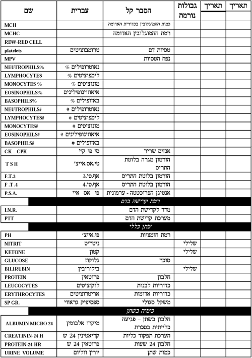
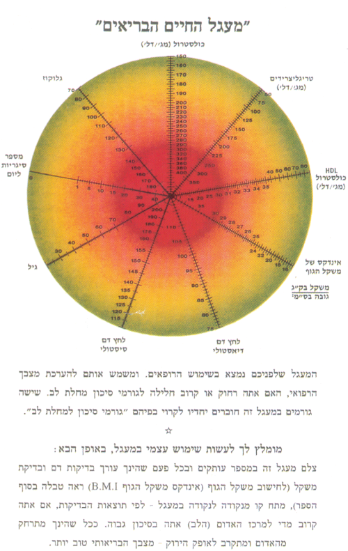

שער, המלצות והקדמות פרק א - הנהגות הבריאות על פי התורה פרק ב - הכל בידי שמים פרק ג - שמירת הגוף על פי הטבע פרק ד - מותר ואסור במזון בן ימינו פרק ה - עיכול נכון - המפתח לבריאותך פרק ו - המים כבסיס לחיים פרק ז - משק החלבון פרק ח - חשיבות פינוי הפסולת מהגוף פרק ט - חיים ללא סכרת פרק י - לחץ דם פרק יא - הדרכות כלליות פרק יב - שמירה על הגוף פרק יב - שמירה על הגוף - הפה פרק יב - שמירה על הגוף - העיניים פרק יב - שמירה על הגוף - האוזנים פרק יב - שמירה על הגוף - שונות פרק יג - נזקי השמנת יתר פרק יד - מניעת נפילות בגיל מבוגר פרק טו - מניעת מחלת דלדול העצם = אוסטאופורוזיס פרק טז - לבחורים בישיבה פרק יז - הורים יקרים פרק יח - צעירים נבונים פרק יט - הנהגות נכונות לפני יום כיפור פרק כ - העישון - סכנת הדור קטעי מכתבים
שער, המלצות והקדמות פרק א - הנהגות הבריאות על פי התורה פרק ב - הכל בידי שמים פרק ג - שמירת הגוף על פי הטבע פרק ד - מותר ואסור במזון בן ימינו פרק ה - עיכול נכון - המפתח לבריאותך פרק ו - המים כבסיס לחיים פרק ז - משק החלבון פרק ח - חשיבות פינוי הפסולת מהגוף פרק ט - חיים ללא סכרת פרק י - לחץ דם פרק יא - הדרכות כלליות פרק יב - שמירה על הגוף פרק יב - שמירה על הגוף - הפה פרק יב - שמירה על הגוף - העיניים פרק יב - שמירה על הגוף - האוזנים פרק יב - שמירה על הגוף - שונות פרק יג - נזקי השמנת יתר פרק יד - מניעת נפילות בגיל מבוגר פרק טו - מניעת מחלת דלדול העצם = אוסטאופורוזיס פרק טז - לבחורים בישיבה פרק יז - הורים יקרים פרק יח - צעירים נבונים פרק יט - הנהגות נכונות לפני יום כיפור פרק כ - העישון - סכנת הדור קטעי מכתבים שער, המלצות והקדמות
|
|
פרק א - הנהגות הבריאות על פי התורה
פרק ב - הכל בידי שמים
פרק ג - שמירת הגוף על פי הטבע
|
|
פרק ד - מותר ואסור במזון בן ימינו
|
|
פרק ה - עיכול נכון - המפתח לבריאותך
פרק ו - המים כבסיס לחיים
|
|
פרק ז - משק החלבון
פרק ח - חשיבות פינוי הפסולת מהגוף
|
|
פרק ט - חיים ללא סכרת
|
|
פרק י - לחץ דם
|
|
פרק יא - הדרכות כלליות
פרק יב - שמירה על הגוף
פרק יב - שמירה על הגוף - הפה
|
|
פרק יב - שמירה על הגוף - העיניים
|
|
פרק יב - שמירה על הגוף - האוזנים
|
|
פרק יב - שמירה על הגוף - שונות
|
|
פרק יג - נזקי השמנת יתר
פרק יד - מניעת נפילות בגיל מבוגר
|
|
פרק טו - מניעת מחלת דלדול העצם = אוסטאופורוזיס
|
|
פרק טז - לבחורים בישיבה
|
|
פרק יז - הורים יקרים
פרק יח - צעירים נבונים
פרק יט - הנהגות נכונות לפני יום כיפור
פרק כ - העישון - סכנת הדור
|
|
קטעי מכתבים
שער הספר
חיים בריאים כהלכה
קובץ בעניני הנהגת שמירת הבריאות על פי התורה ועל פי הידוע לנו כיום מספרי הרפואה
חובר בס"ד על ידי יחזקאל אסחייק מחבר הספרים "בר מצוה בדרך התורה" (בעריכה) "חיים ללא עישון על פי התורה"
הספר שישים למעשן את הסיגריה ביום חול במקום שבו היא נמצאת בשבת. (באופן שיקרא אותו - מתחילתו ועד סופו - מבלי לדלג)
מהדורה עדכנית בני ברק, תשע"ב
© כל הזכויות שמורות
כתובת המחבר: יחזקאל אסחייק
Yechezkel Ishayek
הרצאות, הדרכה אישית
רח' הרב יעקב לנדא 5 בני ברק מיקוד: 51550
טל: 03-6187876 פקס: 03-5702992
E-Mail: ishayek@@neto.bezeqint.net
מסת"ב -x965-90923-0- ISBN
המלצה
מחבר הקובץ "חיים בריאים כהלכה" הרב יחזקאל אסחייק, אינו רופא, אינו דיאטטיקן ואין לו כל הכשרה רפואית, הוא פשוט אדם חכם. ובהיותו בקיא בעניני הלכה וכתבי חכמים הוא יצר שילוב ייחודי ומעניין. הוא פורש לפנינו את חכמת הרמב"ם בהליכי בריאות, אם במאכלים אם בדפוסי התנהגות באכילה ובאורחות חיים שבימיו לא היו מבוססים על מידע פיזיולוגי או ביוכימי אלא על הסתכלות והתבוננות מעמיקה בהתנהגות בני אדם - ומשלב עם הידע העכשווי כדי להגיע לאותן המסקנות.
הוא מנתח בקפדנות את תהליכי האכילה מלעיסת המזון עד להרחקתו כפסולת. הוא נכנס לפרטים אשר בודאי למד אותם ממקורות מוסמכים על השימוש בחומרים כגון סוכר, מלח ואחרים אשר מעורבים ביצירת מצבים בלתי בריאים בגוף ולא פוסח גם על הסיכון בעישון. הוא גולש גם לפעילות גופנית, שמירה על נפש בריאה ומנגנונים אשר מעורבים בכך.
המחבר גם מספק טבלה להנהגות הבריאות אשר בה מפרט שלב שלב את הדרך לשמור על בריאות שלמה, בהדגישו שלמעשה מדובר ברפואה מונעת כדי להבטיח חיים בריאים, מאושרים וארוכים.
כרופא, מצאתי את החומר מרתק על אף שהמחבר אינו מתיימר לחדש, ואני ממליץ מאוד לקרוא את הספר ולהתרשם.
פרופ' צבי בנק
מומחה למחלות פנימיות
מומחה למחלות פנימיות
המלצה
ספרו של הרב אסחייק מהווה תוכנית ייחודית ומורה דרך איך לחיות חיים בריאים. הספר אינו ספר לימוד לרפואה, זהו בהחלט ספר מאוד קריא ומובן המסביר במונחים מאוד פשוטים כיצד לחיות חיים בריאים ומאושרים.
הרב אסחייק אינו רופא ואינו מדען, אבל הוא הצליח לתפוס ולתאר את העקרונות של אכילה ועיכול בריאים, כמו כן גם את העקרונות של התנהגות בריאה. הוא עשה את הכל בפירוט רב ובדרך קלה מאוד לביצוע.
הרב אסחייק הוא אדם חכם מאד. הוא הצליח לשלב את החכמה של הקדמונים כדוגמת הרמב"ם עם כללי התזונה של ההלכה היהודית ביחד עם המחקר המדעי העדכני ורפואה המבוססת על ראיות. לאחרונה, כתב-עת מיפן וידא את מה שרב אסחייק יעץ שנים רבות דהיינו שאנשים שאוכלים לאט ומצייתים להוראות המתוארות בספר זה נוטים לעלות פחות במשקל ולהיות בריאים יותר.
הרב אסחייק מחונן בחכמה ייחודית ומתבונן בצורה מעמיקה על התנהגות בני אדם. בינתו ידיעותיו וחכמתו כולן ניכרות בספר מיוחד זה. בתור רופא, נהניתי לקרוא את הספר, ולמעשה אני נוהג לפי הנחיותיו של הרב אסחייק. אני ממליץ אותו למשפחתי ולחברי וכמו כן למטופלים שלי. אני מאמין שכל איש שינהג על פי העקרונות המתוארים בספר בכל הנוגע לאכילה, שתיית מים והתנהגות כללית יחיה חיים ארוכים בריאים וטובים יותר.
יעקב שני
Jacob Shani M.D., FACP, FACC, FSCAI
Chairman, Cardiac Institute
Director, Division of Cardiology
Program Director, Adult Cardiovascular Disease
Program Director of Interventional Cardiology Fellowship
Professor of Medicine
Mt. Sinai School Of Medicine
Professor of Interventional Cardiology
University of Rome, Italy
Jacob Shani M.D., FACP, FACC, FSCAI
Chairman, Cardiac Institute
Director, Division of Cardiology
Program Director, Adult Cardiovascular Disease
Program Director of Interventional Cardiology Fellowship
Professor of Medicine
Mt. Sinai School Of Medicine
Professor of Interventional Cardiology
University of Rome, Italy
הקדמה
מוגש לפניכם בזאת, חיבור בעניני הנהגת שמירת הבריאות על פי התורה ועל פי הידוע לנו כיום מספרי הרפואה.
מה הביא אותי לחבר חיבור זה?
בחסדי ה', עוד מנעורי, אבי מורי רבי סלמן בן ר' מנשה ומרת כתון ז"ל, דשבק להו חיים לרבנן ביום ד' בטבת תשס"ה ותלחט"א אמי מורתי תחי', חינכו אותי לכללים נכונים הקשורים להשתדלות הטבעית בשמירת הבריאות. כעבור שנים נתודעתי ביותר לנושא, בזכות ששימשתי את מו"ר, מרן רשכבה"ג הגאון רבי אלעזר מנחם מן שך זצוקללה"ה, נלב"ע ט"ז חשון תשס"ב, ונצרכתי לדעת דברים הקשורים לבריאותו. השתדלות זאת בעניין הבריאות היא חובה של ממש לכל יהודי מאמין ומו"ר נהג בהם בחריצות והתמדה, והבאתי כאן גרגרים מהנהגותיו הקדושות בענינים אלו. כאן המקום להזכיר את הפרופסור המנוח רבי עמרם חיים בן רבי מסעוד ומרת רחל ז"ל אבוחצירא שנלב"ע ב' מנ"א תשנ"ח, אשר הרבה מתורת הבריאות למדתי ממנו ומרן זצ"ל נפגש איתו ואפילו נסע אליו במיוחד לירושלים מספר פעמים להתייעץ איתו לגבי בריאותו.
שמירת הבריאות, מעבר לחובה, היא כמובן גם זכות גדולה. מי מאתנו איננו חפץ בחיים תקינים ובריאים, עם מינימום הפרעות ומקסימום אפשרות ויכולת לקיים את ייעודו עלי אדמות? ומי אינו חפץ בחיים ארוכים יותר?! ואל תאמרו, זה לא בידינו והכל גזירה משמים, כי כפי שתקראו בגוף חיבור זה, ובפרט בפרקים א'-ג', יש מקור בחז"ל, בפוסקים ובהליכות הגדולים, לכך ששמירת הבריאות קשורה בקשר ישיר לאורך ימינו ולאיכות חיינו. [אגב פרקים אלו יספקו לך גם אנרגיה רוחנית בכדי שתוכל לעבור לשלב המעשי, מה גם שאני משוכנע שתמצא בהם חידושים שישנו את השקפת עולמך הכאילו 'מבוססת' על מקורותינו.]
כאשר אני פוגש אנשים אשר מראה פניהם וגופם מעיד עליהם שלא טוב להם, שאורח חייהם איננו בריא, שאיכות חייהם בהווה כבר פגומה ומי יודע מה יהיה בעתיד, אני שואל אותם מעט על אורחות חייהם, והם עונים בהשלמה: "וכי מה כבר אפשר לעשות בקשר לזה? להשמנת יתר, לסיגריה, לסוכר שאינו מאוזן, לכליות הנחלשות, ללחץ דם, לקשיים בהליכה, לעצירות", ועוד ועוד. מתפלא אני בכל פעם מחדש על חוסר המודעות בנושא. לאחר מעט מילות הסבר, השומע פותח אזנו ומעוניין לשמוע עוד. הוא רוצה שאסביר יותר, שאכתוב ואשלח לו. דומה שלראשונה בחייו שמע על נושאים אלו. מפגשים אלו הולידו את הרעיון לעריכת חיבור זה.
האמת היא שמיום שראיתי את דברי הרמב"ם בהלכות דעות, הצטערתי על כך, שנראה שאי אפשר לקיים אותם, מכיון שהשתנו המושגים והשתנו הטבעים. אך כעבור תקופה, פתחתי את הספר קיצור שלחן ערוך לרבי שלמה גאנצפריד זצ"ל ושמחתי על כך שראיתי שבספרו הוא התאים את דברי הרמב"ם לזמנו.
ממנו למדתי וכן עשיתי, עד שאכן זיכה אותי הקב"ה לעשות כן ולהתאים את הדברים לזמננו ולשלבם עם הרפואה בת זמננו.
ראויים הדברים להכתב בספר שלם ובאופן מפורט ורחב הרבה יותר, עם כל המקורות, ציטטות ועוד. אלא שבין הרצוי למצוי, נמצא מקום לחיבור זה, אשר כתוב בשפה עממית ופשוטה, ומכיל בתמצית את עיקרי הדברים המעשיים הנחוצים.
גוף האדם עשוי בחכמה נפלאה כמו שנאמר בספר איוב (י"ט, כ"ו) "ומבשרי אחזה אלוק", לעולם לא נוכל להבין את כל התהליכים המתרחשים בגופנו. כל כוונתנו היא רק 'לשׂבר את האוזן' שלא יהיו הדברים כ'גזירת הכתוב', אלא עם הסבר לכל הוראה, לפעמים בארוכה ולפעמים בקצרה. כל זאת על מנת להקל עליך הקורא ליישם את הדברים החשובים לשמירת בריאותך בדרך הנכונה בעזרת השם.
רק בכדי ל'שבר את האוזן', על מורכבות גוף האדם, ניקח את המכונית כמשל. הפלא ופלא: למכונית מכניסים בנזין, שמן מנוע, שמן הגה, שמן הילוכים, שמן מעצורים, סיכה, מים לרדיאטור, מים לניקוי שמשות ולכל אחד כניסה נפרדת ומיכל נפרד, אילו נכניס את הכל דרך כניסה אחת ברור לכולנו מה תהיה התוצאה, ואילו לאדם, כניסה אחת! וצפרנים אינן גדלות בראש ולא שיניים בידים, וזאת לא לחמש או עשר שנים אלא למשך כל שנות חיי האדם. וזו דוגמא אחת בלבד. (המכונית כמשל על פי הספר הארות וביאורים על פירוש רבינו יונה על אבות מאת הרב הלל בריסק. ירושלים תשס"ד).
חשוב להדגיש: הדברים שבחיבור זה אינם 'שיטה' טבעונית או דיאטה כזו או אחרת, אלא הם דברים חיוניים השוים לכל נפש ולכל זמן, אנשים ונשים צעירים ומבוגרים. מטרתם להרחיקך מן הדברים המזיקים לבריאותך, ולחזקך לאמץ הנהגות טובות. חשוב שתזכור כלל פשוט ומובן לכל - הרבה יותר קל למנוע מחלה, מאשר לטפל בה.
תקוותי שתפיק תועלת מרובה מהחיבור ותוסיף דעת יותר מן הכתוב כאן. והעיקר - המעשה.
בברכה לבריאות טובה בס"ד
יחזקאל אסחייק
יחזקאל אסחייק
תודתי נתונה בזה לידידי הרה"ג רבי יהודה שטוב שליט"א על עזרתו בסגנון ובעריכת הספר.
|
אחת המתנות הגדולות ביותר שנוכל להעניק לילדינו
היא שנהיה להם "הורים בריאים" | ||
מבוא
"הואיל והיות הגוף בריא ושלם מדרכי השם הוא..."
במילים אלו של הרמב"ם פותח מחבר הספר קצור שולחן ערוך את סימן ל"ב, בו הוא עוסק בהנהגת הבריאות של האדם. חיבור זה המוגש לפניכם, עוסק בכללי שמירת הגוף על פי הטבע אותם הגדיר הרמב"ם והובאו בספר קיצור שולחן ערוך (קצש"ע) כ"דרכי השם".
קורא יקר!
אם תרצה, חיבור זה עומד להיות המרתק ביותר אותו קראת מעודך. מדוע "מרתק"? משום שהוא לא מספר על חיים של אחרים. הוא מספר עליך! הוא מציג בפניך את החשוב לך מכל בחייך - את שמירת גופך ונפשך. מדוע "אם תרצה"? משום שישנם שהציצו ולא רצו להיחשף לחומר. חששו שהוא יחייב אותם לשנות מהרגלי חייהם. אם תצליח לסיים מבוא זה בשלמותו, יש סיכוי רציני שתפיק הנאה מהחיבור כולו. אם גם זה קשה לך - אל תתייאש. חכה לשעת כושר טובה יותר. אולי זה יקרה כעבור זמן, אבל אני מאמין שלבסוף זה יקרה.
אינני יודע באיזה גיל בחייך פוגש אותך חיבורי זה. אם אתה מתחת לגיל 30, סביר שתתייחס אליו בסלחנות. אם אתה מתחת לגיל 40, יתכן שתתייחס אליו בחשדנות. מעל גיל 40, אני מאמין שתתיחס ברצינות. אך כדאי שתפנים, ככל שתקדים ליישם את הדברים, כך תגיע טוב יותר לגיל מבוגר יותר. הלואי שתדריך גם את ילדיך בנושא שמירת הבריאות, בכל גיל שהם.
החיים כחשבון בנק
החיים מנוהלים באופן זהה ומקביל לחשבון בנק. לכל אדם - חשבון נפרד. עם בואך בשעה טובה לאויר העולם, אתה 'מפקיד' ב'בנק החיים', את הנתונים שהבורא יתברך שמו, נתן לך. הבורא הוא גם 'מנהל הבנק' שלפעמים מאשר 'חריגות'. אבל זה כבר נושא, הקשור לתפילה, תורה, זכויות, ולכל המהלך הרוחני של חיינו. ספר זה מתכוון לעסוק בהתנהלות הטבעית של ה'בנק', וכפי שתראה להלן, התורה עצמה מצווה עלינו להתייחס אל 'בנק החיים', על פי כללי הטבע שבידינו ולא לחרוג מהם.
החשבון העומד לזכותנו עם בואנו לאויר העולם, הוא מה שכתוב במדרש תנחומא פרשת פקודי פרק ג'. שטרם יצירת האדם גוזר הקדוש ברוך הוא עליו אם חלש יהיה או גבור, אם זכר אם נקבה, אם עשיר אם עני, אם נאה אם מכוער, אם ארוך אם גוץ וכן גוזר על כל קורותיו.
יתרות זכות ויתרות חובה
מכאן ואילך, אנחנו מבצעים פעולות בעצמנו. לכל אדם יש 'כספומט' משלו. אינך זקוק לאישור של פקידים, יועצים וכד'. אתה המחליט אם 'למשוך' או 'להפקיד'. כפי שתווכח להלן, אותן פעולות שאתה מבצע, יכולות להפוך מפעולות 'משיכה' לפעולות 'הפקדה' ולהיפך.
ניקח לדוגמא את נושא המזון. זו פעולה הכרחית, יום יומית, שלש או ארבע פעמים ביום, כל ימי חייך. אכלת מזון בריא ומזין? עשית פעולת 'הפקדה'! בחרת לאכול ג'אנק? (אוכל 'ריק' ופסול) זו פעולת 'משיכה'! הגוף יצטרך 'לכסות' את ה'משיכה', ע"י דלדול המאגרים איתם נולדת. עד גיל 30, מאגריך צעירים וחזקים, ו'משיכותיך' עדיין מועטות. (זו הסיבה להנחה שכתבתי לעיל, שאם הנך מתחת לגיל זה, יתכן שלא תמהר לקרוא את הכתוב כאן, באשר שום דבר רציני עדיין לא מציק לך ברוך השם). מגיל 40 ואילך, המאגרים מתדלדלים וה'משיכות' מתרבות. מגיל זה ואילך, רוב בני אדם מרגישים את תוצאות הנהגתם השגויה, הבאה לידי ביטוי אצל כל אחד באופן שונה כפי מבנה גופו וחוזקו, וכפי התורשה שהוא מביא עמו.
עצתי אליך, גם אם אתה צעיר, אל תדחה את ההזדמנות המושטת לך בזה, להציץ פנימה אל תוכך, ולקרוא את ההוראות הנכונות לתפעול המערכת שלך. חשוב שתזכור דבר אחד. רוב המחלות אינן קופצות על האדם פתאום וללא הודעה מוקדמת. מדובר במערכת 'משיכות' לא מאוזנת על פני שנים. אלא מאי? כשחשבון הבנק שלך מראה על חובה של אלף שקל, אף אחד לא מתרגש. לא אתה ולא המנהל. אלפים - כנ"ל. לאט אבל בטוח מתחילה החובה לזחול כלפי מעלה, עד שיום אחד, כאשר אתה כבר מצוי באזור העשרות או מאות אלפים חובה, מצלצל הטלפון והמנהל על הקו. זו התראה אחרונה לפני ניתוק! אתה מזדעק ומתחנן ותמה וכועס, אבל עכשיו זה מאוחר מדי. משכת ומשכת ולא שמת לב, מה לעשות?
כך בדומה, עם בריאות האדם. אלא שכאן התוצאות דרמטיות וקריטיות הרבה יותר. כאן לא מדובר על הכסף לחיים אלא על החיים עצמם. לכן אני קורא לך כידיד ואומר: למד מנסיונם של אחרים והצל עצמך בזמן!
חשבון בנק יהודי
מעבר ל'עצה טובה', לך כיהודי מאמין יש כאן גם חיוב של "וְנִשְׁמַרְתֶּם מְאֹד לְנַפְשֹׁתֵיכֶם". (דברים ד ט"ו), על פי התורה גופך איננו רכושך הפרטי. אינך יכול לעשות בו ככל העולה על רוחך. הוא ניתן לך כפקדון מאת הבורא, ולפקדון צורפו הוראות טיפול ושימור, חלקם בתורה שבכתב וחלקם בתורה שבעל פה, מפי חכמינו שבכל הדורות.
למרות שאנחנו מאמינים, דומה שאיננו מבינים, עד היכן הדברים מגיעים. להמחשה אשתמש בדוגמא, שיסודה בדברי החפץ חיים (יובאו להלן בפרק א'), ובמעבר יבוק (יובאו להלן בפרק ב') ובדברי הרב הירש (יובאו להלן בפרק א') ובספר חרדים (יובאו דבריו בסוף פרק ה'):
יתכן שבבוא יומך, כשתגיע לפני בית דין של מעלה, יטענו שם שחסרות לך שנים אחדות, אולי אפילו עשרות, של אי הנחת תפילין, אי שמירת שבת, אי ישיבה בסוכה וכו' וכו'. אתה תתמה ותזעק: "היתכן? מתי ארע כדבר הזה"?! "כן!" יאמרו לך "לו היית שומר על בריאותך, היו לך עוד שנות חיים בעולם הזה, ובאותן שנים, מי יודע כמה מצוות יכולת לעשות ולא עשית..." ראה עד היכן התביעה מגעת.
אשר על כן - קורא יקר - חיבור זה המונח לפניך ערוך כך שיעזור לך ללכת בדרכי הראשונים, ועל פי עקרונותיהם, בהתאמת דבריהם לרפואה בת זמננו ולנתונים שהתחדשו מאז ועד דורנו, בכדי שתוכל בעזרת השם להיות בריא ולהאריך ימים.
ראשית דבר, נפנה אל משנתו של רבנו הגדול הרמב"ם ז"ל, שהוראותיו הם נר לרגלנו, וזכינו שנתן לנו משנה שלמה סדורה בהנהגות הבריאות.
רפואה מונעת מיסודו של הרמב"ם
"הואיל והיות הגוף בריא ושלם מדרכי השם הוא שהרי אי אפשר שיבין או ידע והוא חולה, צריך אדם להרחיק עצמו מדברים המאבדין את הגוף ולהנהיג עצמו בדברים המברים המחלימים..." (רמב"ם הלכות דעות ד' א')
במלים אלו פותח הרמב"ם את הלכות הנהגת הבריאות שבהלכות דעות, בהם נתן לנו דרך חיים מלאה, לשמירה על הבריאות בדרך של רפואה מונעת המבוססת בעיקרה על התזונה הנכונה מכיון שידע שתהליכי מחלות בגופנו אינם תהליכים דרמטיים, המתרחשים לפתע פתאום, אלא תוצאה של שנות התנהגות לא נכונה, ובראש ובראשונה בנושאי מזון.
|
"כרופא בקי, שכל זמן שיוכל לרפא במזונות, לא ירפא ברפואות".
(הרמב"ם באמצע הקדמתו לפירושו לסדר זרעים) מטוב הנהגת מלאכת הרפואה שכל זמן שיוכל הרופא לרפא בדברים מזוניים לא ישתדל לרפאו בדברים רפואיים." (המאירי בהקדמתו לפירוש התלמוד) | ||
בא וראה את לשונו הזהב, בפרק ד' הלכה כ':
"כל המנהיג עצמו בדרכים אלו שהורינו אני ערב לו שאינו בא לידי חולי כל ימיו עד שיזקין הרבה וימות ואינו צריך לרופא ויהיה גופו שלם ועומד על בוריו כל ימיו".
משהגענו למשפט מופלא זה ברמב"ם, ובתוכו שלשת מילות השיא שלולא נכתבו לא היינו מאמינים ששייך להתבטא כך "אני ערב לו" אבקש ברשותכם להרחיב מעט, כראוי לדבריהם וללשונם של הראשונים.
הרמב"ם ערב לנו
כמה כסף היינו נותנים לרופא שהיה מבטיח לנו שיטה יחודית שהוא פיתח, ועל פיה נהיה בריאים כל ימינו?! כמה אלפי ק"מ היינו מוכנים לנסוע, כדי להגיע אל אותו רופא?! כמה חודשים ושנים היינו מוכנים להמתין ליד פתח ביתו, עד שיקבל אותנו ויבטיח לנו בריאות על פי שיטתו?! והנה שיטת רפואה זו נמצאת אצל כל אחד בתוך ביתו. רק לגשת לארון הספרים ולהוציא את 'הלכות דעות' שבספר ה'יד החזקה' של הרמב"ם, לפתוח, לקרוא וליישם. היית מאמין שלא תשים לבך להבטחה ברורה כזו? אין זאת אלא שלא התבוננת עד היום בדברים אלו כראוי, ובעיקר משום שלא ידעת כיצד ליישם אותם בזמנינו הלכה למעשה. זו אחת ממטרות חיבור זה.
שלא תעלה על מחשבתך לרגע, שהרמב"ם נקט כאן לשון הגזמה או הפלגה חלילה. ראשית, אין זה מדרכו של הרמב"ם. די שנזכור עד כמה אנחנו מדייקים ומתייגעים על כל מילה ברמב"ם. ובכן, גם זה רמב"ם! כן, זהו אותו רמב"ם ואותו 'יד החזקה', אשר כל הנכתב בו הוא הלכה למעשה. שים לב עד כמה הדברים חשובים להרמב"ם שמצא לנכון להקדיש להלכות הנהגת הבריאות קרוב לשני פרקים! זאת ועוד, להלכות לשון הרע החמורות, אשר גאולת עם ישראל תלויה בהם ובשמירתם, כפי שיסד לנו החפץ חיים זיע"א, הקדיש הרמב"ם חצי פרק, ולהלכות הנהגת הבריאות קרוב לשני פרקים! יתר על כן, הרמב"ם לא הסתפק באמירה כללית "שאינו בא לידי חולי לעולם", אלא אף הוסיף לפרט "עד שיזקין הרבה וימות, ואינו צריך לרופא, ויהיה גופו שלם ועומד על בוריו כל ימיו". כלומר, ערבות מפורטת.
בכל ספר ה'יד החזקה' לא מצאנו שהרמב"ם כותב "אני ערב לך", והנה כאן הרמב"ם מחייב את עצמו להיות ערב עבור כלל ישראל ולדורי דורות!
למעשה, דבריו של הרמב"ם מבהילים למתבונן. אינני רוצה למנות כאן את המחלות הידועות לנו כיום. החל מהמחלה הידועה וכלה במחלות שונות ומשונות המביאות סבל רב שנים לאלו שחולים בהן ל"ע והוקמו עבורן מחלקות מיוחדות.. על הכל כותב הרמב"ם "אני ערב לו", וזהו 'פסק' של הרמב"ם, כמו בכל דבר אחר בספרו. מה ראה הרמב"ם להכניס עצמו לערבות זאת? הלא דבר הוא!
זאת מכיון שהרמב"ם היה בטוח שאדם ההולך בדרכים אלו יהיה בריא ויוכל לעבוד את ה' כראוי! ומרוב אהבתו של הרמב"ם לכל אחד ואחד מישראל פונה הוא לכל יהודי ויהודי ואומר לו: אנא הרחק עצמך מהדברים המאבדים את גופך והנהג את עצמך בדברים המברים ומחלימים את גופך ואני מתנדב להיות לך ערב לכל ימי חייך שלא יהיה לך צורך לדעת היכן ממוקם בית חולים. תהיה בריא כל ימי חייך. כיצד? אם תלך לפי הדרכים שהורינו!
ואף שהרמב"ם הוציא מהערבות שלשה מצבים: א. אם היה גופו רע מתחילת ברייתו. ב. אם היה רגיל במנהג מן המנהגות הרעים מתחילת מולדתו. ג. אם תבוא מכת דבר או מכת בצורת לעולם, והורה למי שהוא חולה או שנהג מנהג רע שנים רבות שעליו לנהוג על פי ספרי הרפואות כפי שיורהו הרופא, מכל מקום מזהיר הרמב"ם ואומר: "אחד הבריא ואחד החולה אין ראוי לו לזוז מכל הדרכים שאמרנו בפרק זה שכל אחד מהם לאחרית טובה הוא מביא".
בעקבות הרמב"ם כתב בעל הספר 'קיצור שלחן ערוך' את סימן ל"ב שכותרתו: "שמירת הגוף על פי הטבע" (והעתקתי את רובו בפרק ג').
עשרים ושבע הלכות ישנן בסימן זה, ולמעט שלשת ההלכות האחרונות העוסקות באויר ובאור, כל שאר ההלכות עוסקות במזון! גם כאשר בסוף הסימן הוא מדבר על תכונות נפש, כמו: שמחה, דאגה, כעס ופחד, הוא כורך אותם בהשפעה שיש לתכונות אלו על עכול המזון, וכך הוא מסכם את הדברים, "רוב בריאות הגוף וחולשתו תלוי בעכול המאכל, אם מתעכל בדרך קל וטוב, אז האדם בריא. אבל אם מתקלקל העיכול, אז נחלש האדם ויכול לבוא לידי סכנה חס ושלום".
אם נתבונן בדברי הרמב"ם והקצשו"ע ביתר פירוט, נמצא שעיכול המזון הוא אחד המדדים היותר חשובים לבריאות האדם. הן כמבחן למצבו הבריאותי והן כסיבה למצבו זה. עצירות למשל, נחשבת לגורמת מחלות ולצרה שצריך לחפש דרך להיחלץ ממנה. ברור שהמוקד הראשון אליו צריך לפנות, הוא סוג המזון, כמות המזון ואופן הכנסתו לגופנו.
לכן גם תמצא שרוב ספרי מדבר על המזון ועיכולו הנכון, כאשר נושא הפעילות הגופנית תופס מקום קטן יחסית. מכיון שפעילות גופנית וככל שתהיה לא תעזור ללא עיכול נכון על כל פרטיו. והפעילות הגופנית שלפני האוכל רק תומכת בעיכול.
כאן המקום להעיר בענין מה שכתב הקיצור שלחן ערוך בסימן ל"ב סעיף ח' וזה לשונו: "...אמרו הרופאים כי המאכל שהאדם רגיל בו אינו מזיק לו, ואפילו הוא מאכל רע, כי ההרגל נעשה טבע, ובלבד שלא ימלא בו כרסו". ודאי שאין כוונתו במה שכתב "מאכל רע" לכל אותם מוצרי מזון תעשייתיים המזיקים, כגון סוכר, מלח, צבעי מאכל, חומרים משמרים, זרחות, חנקות, פוספטים ועוד מזיקים רבים אשר בזמנו לא עלה בדעתו שיהיו דברים כאלה, אלא כוונתו על המאכלים הרעים שכתב בסעיף י"ד כדוגמת "בשר שוורים גדולים" או "לחם שעורים", ועל כגון אלו הביא את דברי הרופאים.
יתר על כן, נראה שדעת הרמב"ם אינה מסכימה לדעת אותם הרופאים. שכן בהלכה י"ד הציב שלושה תנאים למי שאכל מאכלות רעים שלא יחלה. א' - שיתעמל וייגע הרבה. ב' - שלא יהיה שבע. ג' - שמעיו יהיו רפים. ולא כתב שאם הורגל בו אינו מזיק לו ויכול להמשיך בו אלא אדרבא כתב בסיום הפרק, ש"החולה או מי שנהג מנהג רע שנים רבות, יש לכל אחד מהם דרכים ומנהגות כפי חוליו וכמו שיתבאר בספרי הרפואות". ולמי שאין לו הדרכה רפואית לנהוג על פיה. הורה, "אין ראוי לו לזוז מכל הדרכים שאמרנו".
בזמננו השתנו דברים. למשל לגבי מה שכתב הרמב"ם "ולא ישתה אלא כשהוא צמא". בזמנו רוב האנשים היו עובדים בעבודות כפים מחוץ לבתים והיו צמאים למים ובזמנינו רובם אינם עובדים בעבודות כאלו, אלא, על יד שלחן ובחדרים ממוזגים, אם ישתו רק כשיצמאו, רבים יכולים להגיע להתייבשות ולמצב של סכנת חיים חלילה.
כמו כן התחדשו מאכלים שלא היו בדורות קודמים. בפרט עם המעבר לאוכל תעשייתי ומוצריו. אשר על כן יש לנו לדרוש מפי רופאים ותזונאים בימינו, מה דעתם על אותם מאכלים. לא נוכל למצוא ברמב"ם התייחסות מפורשת למרגרינה, פסטה וכד'. על כל אלה כבר כתב הקצשו"ע בסי' הנ"ל (להלן פרק ג' אות י"א): "ויש לכל איש לבחור, על פי רופאים, במאכלים הטובים, לפי מזגו, מקומו ושעתו". דברים אלו נכתבו בשעתו, כאשר לא היו עדיין חידושים מפליגים בענף המזון. קל וחומר בימינו, שעלינו לדרוש את טיבם של המוצרים החדשים.
'רפואה מונעת' כיום
עקרונותיו של הרמב"ם קרויים כיום בשפה המודרנית 'רפואה מונעת'. ואכן כל העוסקים ברפואה מונעת שמים את דברי הרמב"ם 'עטרה לראשם' ואבני יסוד לגישתם, בבואם להנחיל הכוונה לבריאות נכונה למטופליהם.
בעולם הרפואה המונעת משתמשים בדוגמא הבאה בכדי להמחיש את הצורך ברפואה מונעת באופן ציורי. אדם פונה לרופא ואומר לו: "אני מרגיש בריא. מה עלי לעשות בכדי להשאר בריא?" מסתכל עליו הרופא בתמהון ואומר לו: "כשתהיה חולה תבוא אלי!"
הספר הזה שבס"ד אני מגיש לפניך ידידי הקורא, בא לתת מענה לשאלה שלרופא אין עליה תשובה!!
אספר לך, שהרפואה איננה עוסקת כמעט, במה שנקרא 'רפואה מונעת'. רופא המשפחה שלך יטפל רק בבעיות ספיציפיות שתעלה בפניו. הוא לא ידריך אותך לחיות נכון. הוא בקושי יצביע בפניך על הקשר בין אורח חייך לבין הבעיה שהבאת לפניו.
דבר זה מפליא עד מאוד. על אף שהרפואה המודרנית איננה שוללת בעקרון את הקשר שבין אורח חיים לבין מחלות, אלא אדרבה, במחקרים רבים שמתפרסמים בכל העולם, כמעט מדי יום, מודגש הקשר שבין השמנה למשל, לבין בעיות לב, דם ועוד, כמו כן ממצאים רבים מלמדים על הקשר בין תזונה לבין סרטן במערכת העיכול לא עליכם. אעפ"כ, בדרך כלל ידיעותיו של רופא מודרני מועטות בנושא אורח חיים נכון ובריא ובקשר שבין אורח החיים לבין מחלות שונות. הרפואה המודרנית אינה עוסקת ברפואה מונעת. גם אם ישנו רופא שיש לו ידע, הרי שזמנו עמוס בטפול במחלות הרבות עד שלא נשאר לו את הזמן הדרוש להעביר ולהסביר זאת למטופליו.
ככלל, הרפואה המודרנית 'עיוורת' כמעט לחלוטין, ביחס להנחיה נכונה כיצד לטפל בגופך טרם תחלה, ושלא תחלה.
למען ההגינות יש לציין, שבכל סניף 'קופת חולים' כיום יש דיאטן/נית מקצועיים, איתם ניתן להתייעץ בנושא מזון. אולם זה כרוך בהפניה מיוחדת ובדרך כלל מגיעים אליהם רק כאשר האדם כבר במצב לא טוב, ולא מיוזמת הרופא המטפל כרפואה מונעת לפני שמתחילות בעיות. סביר להניח שהרבה דברים מהחיבור שבידך לא תשמע מהם.
חשוב להדגיש, כל שינוי שאדם מרגיש במצבו הגופני דורש בירור רפואי! אין להזניח דברים. ואפילו שינויים קלים, ובמיוחד בעיניים.
נתבונן מה גורם לרוב המחלות וכיצד על ידי רפואה מונעת המבוססת על תזונה נכונה, אפשר למונעם. שימו לב, מה משותף למחלות הפנימיות הבאות; אי ספיקת לב, בעיות בשריר הלב, ארוע מוחי, מחלת כליות, בעיות בכלי הדם ברגלים. כל אלו הן מחלות הקשורות לכלי הדם. ונרחיב לבאר, הנה כשאנחנו נולדים, אנו מקבלים את כלי הדם שלנו - שהם מערכת צינורות להולכת הדם בכל הגוף מן הלב ובחזרה אליו - כשהם פתוחים לחלוטין, חלולים ונקיים. הדם זורם בחופשיות והלב אינו צריך להתאמץ (יתר לחץ דם), על מנת שהדם יגיע לכל מקום בגוף. עם השנים, כתוצאה מאוכל לא בריא, או מאוכל שנאכל בצורה שאינה נכונה, הולכים ומצטברים 'לכלוכים' הקרויים בלשון הרופאים 'פלאקים' על דפנות כלי הדם. מכאן ואילך מתחילות הצרות לא עליכם. כלי הדם מתחילים להסתם יותר ויותר. ללב מגיע עתה פחות ופחות דם. מכאן קצר המרחק לאי ספיקת שריר הלב, אשר איננו מקבל מספיק דם, ממילא חסר לו חמצן וכך הוא נפגע.
המוח גם הוא ניזון באמצעות שני צינורות דם שעוברים דרך הצואר הקרויים 'עורקי התרדמה'. (קרוטים) גם צינורות אלו עלולים להסתם כתוצאה מאכילה שאינה נכונה, והסיכון לפגיעה במוח ח"ו גדל והולך. מחובתנו איפוא לשמור על צינורות הדם שישארו נקיים ופתוחים באמצעות תזונה נכונה ושאר הפרטים שאכתוב בהמשך.
עקרונות חיבור זה
אם ארצה לסכם במשפט אחד בן שלוש מלים את עקרונותיו של חיבור זה, המשפט יהיה: "שב ואל תעשה"! כוונתי: אל תחשוב שעליך לעשות מעשים נמרצים ופעילים למען בריאותך כאילו ועליך לבנות את גופך מחדש. לא היא! הקדוש ברוך הוא יצר אותך ובנה ושיכלל עד אין חקר, את המכונה הנפלאה הקרויה אדם. עוד לפני שהוא יצר אותך, הוא הכין את כל הנדרש עבור תפקודה של המכונה הזאת - אדם. כל מה שמוטל עליך הוא, שלא לקלקל! ניתן להמשיל על תפקידך בעולם, את מה שאמרו חז"ל.
"בשעה שברא הקדוש ברוך הוא את אדם הראשון נטלו והחזירו על כל אילני גן עדן ואמר לו ראה מעשי כמה נאים ומשובחים, תן דעתך שלא תקלקל ותחריב את עולמי" (קהלת רבה ז יג). (אם כי אין זה כוונת הפשט כמובן אלא מדובר בתפקידים הרוחניים של אדם הראשון).
זוהי מטרת ותכלית הספר שאתה מחזיק בידך - לתת לך הקורא את ההדרכה הנכונה ואת הידע, על מנת שלא תקלקל ולא תחריב, אלא תשמור ותקיים את גופך שנברא בחכמה נפלאה, להיותו בריא לאורך ימים.
אין המטרה בחיבור זה ללמד את מדע הרפואה, אלא להציג בפניך הקורא את דרך ההנהגה הנכונה, עם הסבר קל, פשוט, הגיוני ומשכנע, בצורה ידידותית ובלשון עממית, בכדי שהדברים יובנו גם למי שאינו מצוי בנבכי מדע הרפואה, מכיון שאם באתי לכתוב בצורה מדעית את כל התועלת שתוכל להפיק מספר הזה, יהיה עלי להגיש לך ספר עב כרס שספק אם תושיט את ידך אליו לעולם!
מתוך התבוננות ועיון במקורות, בשילוב עקרונות תזונה הידועים לנו כיום, והמקובלים בקרב חוקרים ורופאים, הגעתי לדברים המרכיבים את הדרך לשמירת בריאות האדם. סיכמתי אותם ברשימת כותרות בשם "הנהגות הבריאות" אשר מופיעה בכריכה הפנימית של חיבור זה המכילה 11 'לאוים' ו-6 'עשים'. (רשימה זו הפקתי גם על גבי מגנט המיועד לתליה על המקרר - מחסן המזון בימינו).
בסך הכל יהיה עליך להימנע ממספר דברים, שהורגלת בהם מעודך בלי שימת לב נכונה ומחוסר ידע. אך דע לך, אחרי שתתרגל, לא תרגיש מוגבל בכלל, כנאמר "ההרגל על כל דבר -שלטון". (מהרש"א תענית ד' א') כמו כן, הדברים שעליך לעשותם, הנם קלים ויהפכו במהרה ל"טבע שני" ולא מורגש.
שים לב מה אתה מקבל בתמורה. אתה מקבל בתמורה חיי איכות! אתה מקבל בתמורה בריאות! אתה מקבל בתמורה את ההבטחה של הרמב"ם! אם אתה שומע אמבולנס, אתה יודע שבס"ד זה לא בא בשבילך! אתה לא יודע היכן זה בית חולים! אתה לא יודע את כתובתו של הרופא! אלו דברים שלא יסולאו בפז, ונכון לכל אדם החפץ באיכות חיים ובאריכות ימים טובה, שיאמץ את הדברים ויתנהג על פיהם בכל עת וזמן, ואתה הקורא הנכבד - ככל שתקדים להתנהג כך, כן ייטב לך.
הפרק הראשון בחיבור זה יעסוק בהנהגות הבריאות באופן כללי, על פי התורה, מאמרי חז"ל ועובדות מגדולי הדורות והדרכה לרפואה אישית. הפרק השני יתמודד עם טיעון נפוץ, לפיו אין צורך בהשתדלות לשמירת הבריאות וגם היא לא תעזור, שהרי "הכל בידי שמים". הפרק השלישי מכיל מדברי הקיצור שולחן ערוך, ומפרק ד' ועד סוף הספר - הדרכה מעשית לחיים, מהיקיצה ועד השינה, על פי העקרונות שהותוו לעיל.
אני מאחל לך קריאה נעימה, ובעיקר - פוריה
אסיים בברכת הצלחה ממני החפץ בטובתך.
יחזקאל
אסיים בברכת הצלחה ממני החפץ בטובתך.
יחזקאל
א. חובת שמירת הבריאות
חובתו של האדם בעולם כידוע - היא תיקון נפשו על ידי עסק התורה והמצוות ומיעוט ההתעסקות בחומר ובגשמיות. אמנם רואים בדברי חכמינו זכרונם לברכה גם את גודל החיוב והמצוה לעסוק בעניני בריאות הגוף.
כך אנו רואים בגמרא במסכת שבת (דף פב.) ששאל רב הונא את רבה בנו, מדוע אינו הולך לשיעוריו של רב חסדא "ששמועותיו מחודדות"? השיב רבה ואמר: לשם מה אלך אל רב חסדא? הלא כאשר אני הולך אצלו, הוא מדבר אתי במילי דעלמא - עניינים של בריאות הגוף! ענה רב הונא לבנו בתמיהה: הוא עוסק בחיי הבריות, ואתה קורא לכך ענייני העולם?! כל שכן שעליך ללכת ללמוד אצלו!
הרי לנו, כי לא זו בלבד שאין העסוק והלימוד בעניני בריאות הגוף נקראים "מילי דעלמא", אלא אף יש עדיפות למי שמתבל את שיעורי תורתו באלו הענינים, וכלשון רב הונא שאמר "כל שכן שעליך ללכת ללמוד אצלו!"
בואו ונתבונן בדבריו המאלפים של הרב שמשון רפאל הירש זצ"ל על חובת האדם לשמור על בריאות ושלמות גופו. (חורב בפרקי החוקים, בפרק ז' איסור איבוד וסכנת עצמו, ומצות שמירת גופו):
"דע לך כי גם גופך, גם כוחותיך, גם זמנך הקצר במשך עת היותך במציאותך פה עלי אדמות, לא לך הם... הלא ניתנו לך רק להשתמש בהם בתור כלי יוצר ואמצעי, למלאת בהם את חובותיך, לכן עליך החובה, להשתמש בגופך כמו עם שאר המתנות, אשר חוננת במו, רק לפי רצון השם וסדר השם, אבל להרוס, לבטל ולכלות את הכלי יוצר... חלילה, חלילה לך מעשות כזאת - היה לא תהיה!... כי ידרוש השם ממך דין וחשבון נורא וחמור על היקר מכל יקר שלך... את דמך בנפשך ידרוש ממך השם!! עבד השם אתה, רוח האדם, הנך שלוח הלום, להתעטף פה בעפר הארץ ולמלאת בתבל הארצי את פקודת אלוקיך..., כל זאת פקודת השם ותעודה עבורך, ואתה האם מאן תמאן, למלאת באמונה את תפקידך... או מפני, כי החלשת את עצמך עד כי נרפה אתה למאד... גם המום הקטן שבקטנים אסור לך לשים בגופך.
חלילה לך על ידי קלות דעת, לרופף את מבנה גווייתך... חלילה לך על ידי מונעך ממך את הדברים הנחוצים והמותרים לך להחליש את עצמך... אל תרופף את כוחותיך, על ידי כלכלת חייך בבלי סדרים, אל תמעיט ואל תבלה את בריאותך ואל תקצר את שנות חייך, והנך מקבל עליך אחריות קשה בעד שידוד הכוח לפני השם. כל רפיון והשחתה הקל שבקלים בצידיה, היא 'רציחה חלקית'. לכן, עליך החובה והמצוה ככל האפשר, להיות נזהר בכל אלה ולמנוע עצמך מדבר אשר יוכל לסכן את בריאותך... אל תנסה את השם ואל תסמוך עצמך על הנס של ההשגחה, יען ההשגחה איננה מגן ומחסה, בעד זדון לבב, קלות הדעת וחרוף נפש... חמירא סכנתא מאיסורא.
לכן שמור נפשך מאד ושים לבך לכלכל כהוגן את גופך, למען יישאר לך תמיד כלי מחזיק ברכה לשרתך בהיותו בריא וחזק לפעולת חייך, חדל לך מכל דבר אשר יוכל להזיק לגופך ולהרוס את בריאותו, אף קח לך והשתמש בסדר חייך עם הדברים שהמה יוסיפו לתת לגוף כח, בריאות אומץ וחיל." עד כאן לשונו.
וראה בקובץ אגרות חזון איש חלק א' שכתב "וכשאני לעצמי, הנני חושב את ההשתדלות הטבעיות במה שנוגע לבריאות, למצוה וחובה, וכאחת החובות להשלמת צורת האדם, אשר הטביע היוצר ברוך הוא במטבע עולמו..." (אגרת קל"ו). ועוד כתב "הדקדוק על אמצעי הבריאות היא עבודה אהובה לפניו ית'" (אגרת קל"ז).
ואלו דברי רבנו משה חיים לוצאטו זצ"ל בספרו 'מסילת ישרים' (פרק י"א) על אדם המקל ראש בבריאותו: "לא יהא נחשב אלא לשוטה גמור".
וראה מה שכתב בספר 'באר הגולה', בסוף הסימן האחרון של שולחן ערוך חושן משפט, על דברי השולחן ערוך שכל המסכן את עצמו מכין אותו מכת מרדות, וז"ל:
"והמסכן את עצמו כאילו מואס ברצון בוראו ואינו רוצה לא בעבודתו ולא במתן שכרו, ואין לך זלזול אפקירותא יותר מזה. ולשומעים יונעם".
ב. שמירת בריאות הגוף - מצות עשה מן התורה
הבה נתבונן עתה בדברי הרמב"ם, ונראה מדבריו שדעתו ששמירת הגוף ובריאותו היא קיום מצות עשה של "והלכת בדרכיו" (מצוה ח).
הנה הרמב"ם, התחיל את ספרו הגדול, הוא ה"יד החזקה" בהלכות יסודי התורה, אשר המה הלכות האמונה במציאות השם יתברך. לאחר שביאר את הלכות יסודות התורה והאמונה בהשי"ת, החל הרמב"ם לבאר את הלכות דעות. למצוה הראשונה בהלכות דעות שהיא ללכת בדרכי השם - כנאמר "והלכת בדרכיו" - מקדיש הרמב"ם את חמשת הפרקים הראשונים. בשלשה מהם הוא מבאר איך לקיים את האופן הראשון של המצות עשה "והלכת בדרכיו", באופני ההרחקה ממדותיו הרעות של האדם שהן: הכעס, הגאוה, הקנאה, התאוה והכבוד, ולעומתם את ההליכה בדרכיו - במדות הטובות של הבורא ית': חנון, רחום וקדוש, וכן שהאדם חייב לעשות כל מעשיו לשם שמים. מסיים הרמב"ם חלק זה של "והלכת בדרכיו" ואומר: "והוא שאמר שלמה בחכמתו, בכל דרכיך דעהו והוא יישר אורחותיך".
מכאן עובר הרמב"ם לבאר את האופן השני שבו תתקיים המצות עשה של "והלכת בדרכיו", וכך הוא מתחיל את הפרק הרביעי: "הואיל והיות הגוף בריא ושלם מדרכי השם הוא, שהרי אי אפשר שיבין או ידע דבר מידיעת הבורא והוא חולה, לפיכך צריך להרחיק אדם עצמו מדברים המאבדים את הגוף ולהנהיג עצמו בדברים המברין והמחלימים".
דבריו אלו גם מסבירים מדוע הלכות שמירת הגוף ובריאותו, באו לפני הלכות תלמוד תורה ושאר כל התרי"ג מצוות.
בהמשך מבאר הרמב"ם באריכות רבה לכלל העם, לחכם ולתלמיד חכם, את הלכות הנהגת שמירת הבריאות לפרטי פרטים, כיצד לאכול ומה לאכול, כיצד ומתי לשכב, מתי להתעמל ומתי להתפנות. אף אלו הלכות ב"משנה תורה" וראוי לפלפל בהם ולרדת לעומקם כמו בשאר ההלכות ולקיימם.
הלכות אלו פירט הרמב"ם לכלל העם. ומשסיים פרק זה, הרחיב בפרק הבא לבאר במיוחד את חובת החכם להיות ניכר ומובדל משאר העם, כשהוא מדגיש את חובתו להיבדל גם במעשיו, במאכלו ובמשקהו, וכלשונו שם בהלכה א': "כשם שהחכם ניכר בחכמתו ובדעותיו והוא מובדל בהן משאר העם, כך צריך שיהיה ניכר במעשיו במאכלו ובמשקהו... במלבושו... ויהיו כל המעשים האלו נאים ומתוקנים ביותר".
"כיצד? תלמיד חכם לא יהיה גרגרן, אלא אוכל מאכל הראוי להברות גופו, ולא יאכל ממנו אכילה גסה, ולא יהיה רודף למלאות בטנו, כאלו שמתמלאים ממאכל ומשתה עד שתיפח כריסם... אבל החכם אינו אוכל אלא תבשיל אחד או שנים ואוכל ממנו כדי חייו ודיו, הוא שאמר שלמה, "צדיק אוכל לשובע נפשו". ובהמשך: "מלבוש תלמיד חכם נאה ונקי, ואסור לו שימצא בבגדו כתם או שמנונית".
ומסיים הרמב"ם פרק ה' ואומר: "כללו של דבר... ואדם שעושה כל המעשים האלו וכיוצא בהן, עליו הכתוב אומר "ויאמר לי עבדי אתה, ישראל אשר בך אתפאר".
דעת הטור כמו כן, ששמירת הבריאות היא מצוה, שכך כתב בהלכותיו בחלק אורח חיים סימן קנ"ה וז"ל; "מצוה להנהיג עצמו במידה טובה והנהגה טובה לשמור בריאותו כדי שיהא בריא וחזק לעבודת הבורא יתעלה". ובספר 'משנה ברורה', (בסימן קנ"ה) הביא החפץ חיים את דברי הטור להלכה.
כתב הרמ"א סימן קס"ז (בשם בית יוסף בשם שבלי הלקט) "כי השלחן דומה למזבח והאכילה כקרבן" וביאר במשנה ברורה: והאכילה שאדם אוכל לחזק כוחותיו ועל ידי זה יהיה בריא וחזק לעבודת השם.
|
על הפסוק "ערב וידעתם" (שמות ט"ז ו') כתב הספורנו וזה לשונו: "בענין שתדעו שהאל יתברך הוציא אתכם לגמרי מארץ מצרים, כי יוציאכם גם ממנהגיה, שהייתם יושבים שם על סיר הבשר, בלתי זמן סעודה קבועה כבהמות, כאמרם ז"ל (יומא ע"ה ע"ב) בתחילה היו ישראל כתרנגולים המנקרים באשפה, עד שבא משה רבינו וקבע להם זמן סעודה". | ||
ג. החפץ חיים מעורר על חובת שמירת הבריאות
הרב הגאון רבי פתחיה מנקין זצ"ל, מתלמידי הישיבה דראדין, כתב את הדברים דלהלן למערכת הירחון "שערי ציון" בירושלים, כשהוציאו לאור חוברת על החפץ חיים בשם "ארחות צדיק", ככלות שנה לסילוקו:
"אהבתו של החפץ חיים את לומדי התורה היתה אהבת אב לבנים. הוא לא הסתפק בכך שקיבץ אליו בני תורה למקום תורה אחד, ולא אמר די בדאגתו למצבם הרוחני, אלא דאג גם למצבם החומרי בחיבה יתירה.
זכורני, כשלמדתי בראדין בראשית הקיץ של שנת תרס"ג, ומרן החפץ חיים זצ"ל בא כדרכו בקודש בכל יום שני וחמישי, לעזרת נשים - מקום לימוד המוסר לפני תפילת מעריב - לעורר את בני הישיבה בדברי מוסרו, ומה נשתוממתי לשמוע מפה קדשו את ה'מוסר' הבלתי רגיל דלהלן, וכה אמר:
"אל תרבו ללמוד הרבה יותר מדאי. האדם צריך לשמור את גופו שלא יחלש ולא יחלה, לכן צריך לנוח ולהנפש ולשאוף רוח צח. צריך לטייל לפנות ערב או לשבת בחדר ולנוח, וכשאפשר יש לרחוץ בנהר כדי לחזק את הגוף! כי ההתמדה היתירה הרי היא עצת היצר, לעמול יותר מדאי, כדי שהגוף יחלש, ויוכרח בהמשך הזמן לבטל לגמרי מתלמוד תורה, ואז יצא שכרו בהפסדו.
ומבשרי אחזה - המשיך החפץ חיים לומר לנו - בימי נעורי הרביתי ללמוד יותר מכוחי ונחלשו עיני, עד שצוו עלי הרופאים שלא לעיין בשום ספר שנתיים. נו, האין ההתמדה היתירה עצת היצר הרע? שאל החפץ חיים, והוסיף - ואם יחלה האדם חס וחלילה עקב אי שמירת בריאותו כתוצאה מהתמדתו היתירה, הרי חס וחלילה יקצר את ימי חייו של שבעים שנה, ואם כן הרי הוא עתיד ליתן את הדין!" כה המשיך החפץ חיים לדבר לפנינו בסגנון זה עוד עשרים דקות בערך, ונושא זה בלבד היה כל 'מוסרו' באותו ערב.
"כמו כן היה רבנו שומר את צעדי בני הישיבה שלא ילמדו כשכבר הגיעה שעת השינה, ולא אחת קרה שהגיע בכבודו ובעצמו להיכל הישיבה בשעת לילה מאוחרת, ובדברי נחת מתוך קפידה היה מצוה על בני הישיבה שיפסיקו כעת מלימודם וילכו לישון, ולפעמים היה עולה בעצמו על הספסל ומכבה את מנורות בית מדרשו". (מתוך הספר "מאיר עיני ישראל" כרך ב' עמוד 168-9).
ובספר תולדות החפץ חיים כתוב:
החדרים גדולים אוריריים... מאכליו היו על פי קפידה לבריאות. מלבושיו ומנעליו על פי קפידה בחשבון. וקפידה מיוחדת היתה לו במצות: "ונשמרתם לנפשותיכם". בין לעצמו, בין לבני ביתו ובין לתלמידיו, הוא היה מסביר: במצוות שמירת הבריאות תלויה כל התורה כולה. ולא פעם סגר בידיו את הגמרא של המתמיד ביותר באומרו, גם זו עצת היצר הרע: "יחלשו המתמידים, הודות להתמדתם הנפרזה, בבריאות גופם ויבטלו אחר כך ממילא, בהכרח החולשה, מלימוד התורה".
ד. ובחרת בחיים
כתוב בפרשת נצבים (ל' י"ט) "הַחַיִּים וְהַמָּוֶת נָתַתִּי לְפָנֶיךָ הַבְּרָכָה וְהַקְּלָלָה וּבָחַרְתָּ בַּחַיִּים". והאריך לבאר בזה הגה"צ מרן רבי איצלה בלזר זיע"א בקונטרס "שערי אור" סימן ג' שבתחילת הספר "אור ישראל", איך תעלה על דעתך שבן אדם לא יבחר בחיים? מי לא רוצה לחיות? עיין שם בדבריו.
ברצוני להציע תירוץ בדרך דרוש ורמז, על פי דברי הרבינו יונה בספרו שערי תשובה שער ג' אות ט"ו, על הפסוק: "וַתְּהִי יִרְאָתָם אֹתִי מִצְוַת אֲנָשִׁים מְלֻמָּדָה" (ישעיה כ"ט י"ג), וכך הוא מסביר שם, שאנשים שאינם עורכים מחשבות להתבונן ביראת השם, ה"יראת שמים" שיש להם נקראת מצות אנשים מלומדה. כך היה אפשר לומר גם כאן שהכונה שלאדם צריך שיהיה לו רצון לחיות! צריך שתהיה לו בחירה בחיים "ובחרת בחיים". לא לחיות 'מלומדה'. לא לחיות בגלל שכולם חיים. לא לחיות בגלל ההרגל, אלא צריך רצון לחיות!
איך אנחנו יודעים אם בן אדם חי עם רצון או בלי? ככל שאדם מקדיש ומשקיע יותר מאמצים להשיג דבר מה, הרי זה מוכיח את גודל רצונו לדבר. קשה לבן אדם לקום בבוקר, אולם אם יש לו איזו שהיא סיבה שהוא חפץ בה, אזי הוא יקום. מדוע? כי יש לו רצון חזק. אחד הדברים החשובים של "ובחרת בחיים", הוא שהאדם צריך שיהיה לו רצון לחיות! ולא בגלל שכולם חיים גם הוא חי, כולם מתבגרים גם הוא מתבגר, אלא צריך לבחור בחיים. ובמה בא לידי ביטוי הרצון לחיות? אם הינך חפץ לדעת כמה רצון יש לך לחיות?, עליך לבדוק כמה הינך מוכן להשקיע בשביל הרצון הזה. לכן, ככל שהאדם משקיע יותר בשביל החיים, הדבר מוכיח את גודל הרצון שיש לו לחיים.
| מחשב את צעדיו סיפר לי תלמידו הקרוב אליו, הגאון רבי ב.ר. שליט"א. היה זה בחודש אייר, יום אחד מרן הרב שך זצוקלה"ה, הגיע לירושלים. כנראה שבא למרן הגרי"ז זצוקללה"ה. השעה היתה שעת דמדומי ערב. קיבלתי את פניו בירושלים. בדרך למחוז חפצו, מרן נכנס אתי לחצר אחד הבתים, ובחדר המדרגות פשט את ה'חלוקא דרבנן', הוציא מתיקו סוודר ולבשו, והסביר לי כך: אני בא כעת מבני ברק שם כבר חם בימים אלו. אולם כאן בירושלים, בשעות הערב מזג האויר מתקרר, יש בזה שינוי גדול לעומת בני ברק, לכן הבאתי עמי סוודר ללובשו בירושלים. | ||
אם אני יכול להתבטא, הרי שמרן הרב שך זכרונו לברכה, אצלו ראיתי זאת. אינני יודע אם אחרים ראו, אבל אני ראיתי שהיה לו רצון לחיים. הוא ידע את ערך החיים. הוא דיבר על כך רבות. הרצון לחיים היה חזק מאוד אצלו, עד שרצון זה התגבר על כל הרצונות האחרים, ומשום כך כל דבר שהוא שמע והבין שיכול לתת לו חיים הוא התנהג לפיו בין אם היה זה דבר שגרתי או בלתי שגרתי, מצוי או לא מצוי, ואף אם היו לו הרגלים אחרים לפני כן, לא התחשב בהם, ושינה את הרגליו, אחר ששמע ידיעה חדשה הקשורה לשמירת הבריאות. זאת מכיון שהיה לו רצון לחיים! החיים לא היו מכוח ההרגל, "מלומדה" אלא החיים היו בגלל הרצון לחיות, מפני שהכיר את ערך החיים, וידע שכדאי להשקיע כל מה שאפשר בשביל החיים.
ה. התיחסות ההלכה לדעת הרופא
כל בר דעת יודע לשמור את נפשו מדברים בהם הסכנה גלויה וברורה, אך פעמים, אין הסכנה ניכרת וידועה. המומחים הבקיאים בענייני בריאות גופו של האדם הם הרופאים. אלה מוכשרים לאבחן את הסכנות, המחלות והפגעים, ולהציע דרכי טיפול כיצד להלחם בהם. לרופא יש מעמד חשוב בעיני ההלכה, והדין נקבע על פי אומדן דעתו של הרופא הבקיא.
כך שנינו במשנה בעניין אכילה ביום כיפור (יומא דף פב, א): "חולה - מאכילין אותו על פי בקיאין", ובהמשך אומרת הגמרא (יומא דף פג, א): "רופא אומר צריך וחולה אומר אינו צריך - שומעין לרופא". וכך נפסק להלכה (שולחן ערוך אורח חיים סימן תרי"ח סעיף א): "חולה שצריך לאכול, אם יש שם רופא בקי אפילו הוא עובד כוכבים שאומר: אם לא יאכילו אותו אפשר שיכבד עליו החולי ויסתכן, מאכילין אותו על פיו, ואין צריך לומר שמא ימות. אפילו אם החולה אומר: איני צריך, שומעים לרופא". ובמשנה ברורה שם, כתב בשם הפוסקים: אם החולה רוצה להחמיר, אחר שצריך לכך, עליו נאמר "אך את דמכם לנפשותכם אדרוש".
הגע בעצמך, באיסור החמור של אכילה ביום כיפור שיש בו איסור 'כרת', יחייב הרב את החולה לאכול על פי חוות דעתו של הרופא, אף אם החולה רוצה לצום. ראה עד היכן נקבעת ההלכה על פי דעתו של הרופא.
זאת ועוד, אף בעניין חילול שבת החמור יותר שיש בו עונש 'מיתה בבית דין', גם כאן מוכר בבירור מעמדו של הרופא וכפי שנפסק להלכה (שולחן ערוך אורח חיים סימן שכ"ח סעיף י): "כל חולי שהרופאים אומרים שהוא סכנה, אף על פי שהוא על הבשר מבחוץ, מחללין עליו את השבת". אותה שבת קודש שהמחלל אותה במזיד הרי הוא כעובד עבודה זרה, וחייב מיתה בבית דין, אותה שבת שבמשך דורות מסרו יהודים את נפשם על שמירתה, שבת זו מתחללת על פי דעתו של הרופא בכדי לשמור על חיי האדם ואפילו על ספק פיקוח נפש.
| יחסו לרופאיו היה מזרז כבר מראש חודש אדר שיכינו משלוח מנות גדול מאוד ומכובד עבור כל אחד ואחד מהרופאים שטפלו בו ומצרף להם ברכה בכתב ידו שזה לכבוד שמחת פורים. רופאו האישי פרופ' צבי בנק ז"ל היה מבקרו בדרך כלל לאחר סיום עבודתו בתל השומר. לפעמים היה זה לפני זמן תפלת מנחה, וזה היה הזמן שהיה מדבר עם התלמידים באולם הישיבה בזמן ה'סדר', ואולם כאשר אמרו לו שפרופ' בנק מחכה לו בביתו, מיד היה מזדרז ובא אליו, גם אם לא קבע איתו פגישה, וגם אם חש בטוב באותו זמן, וזאת אף שלא היה בטוח שיהיה לו כח לחזור לעלות לישיבה לתפילת מנחה. רואים עד כמה התייחס מורינו זצ"ל בכבוד ובחשיבות לרופאיו. | ||
כל ידיעותיה של הרפואה, מאז ועד עתה נקראים בפי חכמינו 'אומדנא'. הידיעה הרפואית על התפתחותה העתידית של תופעה מסוימת, איננה ידיעה ברורה, אלא נסיון העבר, וחקירה של מקרים דומים שארעו. נסיון זה טומן בחובו השלכות לגבי ידיעת העתיד. ובהלכות פיקוח נפש, אין הרב הפוסק צריך ללמוד רפואה, אלא אנו סומכים על 'אומדנת הרופאים', הן לגבי חילול שבת והן לענין אכילה ביום הכיפורים.
והנה במבוא כתבתי, שהרופא הסטנדרטי כיום איננו עוסק ברפואה מונעת, ולכאורה הדבר סותר את אשר כתוב בפרק זה, שהרפואה היא הקובעת, אולם האמת שאין כאן סתירה וזאת משום שלגבי אורח החיים המודרני בכלל, ותזונה בלתי נכונה בפרט, מאוחדים כל מומחי הרפואה וחוקרי תולדות המחלות המודרניות מהעולם כולו בדעה אחת, שהם הגורמים הראשיים להדרדרות הבריאות העולמית, ואף למחלות חריפות, החל ממחלת לב, הנחשבת כקטלן מספר אחד היום בעולם, וכלה במחלות סרטן ואחרות. הסיבה שרופא קופת החולים אותו אתה פוגש, איננו עוסק בזה, קשורה לעובדה (שהוזכרה במבוא) שרופא סטנדרטי איננו לומד כמעט מאומה על נושא המזון והשלכותיו על הבריאות, וגם לעובדת היותנו מבוטחים ברפואה ציבורית ולא ברפואה אישית (פרטית), ועל כך בקטעים הבאים.
ו. 'רפואה ציבורית' ו'רפואה אישית'
נקטתי בכותרת לשון 'רפואה אישית'" להבדיל מ'רפואה פרטית', זאת כדי שלא תחשוב שאני מפנה אותך בדווקא ל'רפואה פרטית' יקרה, בפרט בזמנים אלו, שהפרוטה איננה מצויה. ברצוני רק להצביע על הכיוון של שתי השיטות - הציבורית והאישית וההבדל שביניהן. אם תבין אותן ותפנים את ההבדל שביניהן, תשכיל להשתמש בעקרונות של 'רפואה אישית', גם בהיותך קשור לרפואה הציבורית. תוכל למשל לפנות אל רופא המשפחה שלך ולבקש/לדרוש ממנו בדיקות מעקב תקופתיות, בכדי ללמוד על המגמה של בריאותך, האם היא מתמידה או נחלשת.
עליך לבקש מהרופא שיצביע לך בתוצאות הבדיקות על הדברים המשמעותיים עבורך. כמו כן תוכל לדרוש במקביל, שיפנה אותך לדיאטן/נית של הקופה. כל זה יכול להעשות גם במסגרת רפואה ציבורית.
הבא ונראה כיצד פועלת הרפואה הציבורית.
העקרון עליו מושתתת הרפואה הציבורית הוא: השימוש בתרופות כאמצעי ריפוי ולא ברפואה מונעת. אמנם קרוב לודאי, כי בסופו של דבר עלות שימור הבריאות זולה לאין ערוך מאשר הריפוי לאחר מעשה, בעת מחלה, אך זוהי השקעה שאת מחירה משלמים היום ואילו את פירותיה רואים רק בעוד הרבה שנים, ולמערכות הבריאות שבקושי מחזיקות את עצמן מבחינה כלכלית אין את הכסף להשקעות לטווח ארוך. רופא שירצה לרפא כל חולה באמצעות רפואה מונעת, המערכת תפלוט אותו החוצה והוא ישאר ללא פרנסה. כידוע לכל, הרופא שהינך פוגש הינו נציג הרפואה הציבורית, ועליו לתת דו"ח לשולחיו, תוך שהוא מקבל הנחיות על מגבלות של זמן (כך וכך חולים עליו להספיק לקבל תוך זמן מוגבל) וכסף (כך וכך העלות של כל תרופה/בדיקה וכדומה).
זאת ועוד, לרפואה הציבורית ישנן עקרונות המתאימים לכלל החולים, ואינם לוקחים בהכרח בחשבון את טובתך האישית. לכן על כל אחד לשמור על בריאותו, ולא לסמוך בעינים עיורות על הרופא והרפואה הציבורית.
להמחשת הדברים, אצטט מאמר רפואי של ד"ר שלמה וינקלר שהופיע בכתב העת הישראלי לרפואת המשפחה (גליון 79, כרך 11, ינואר 2001).
נושא המאמר: "דיאטה בריאה, נתרן (מלח) ויתר לחץ דם".
רקע: קשרי הגומלין בין יתר לחץ דם ותזונה, הם בעלי חשיבות רבה לבריאות הציבור.
מטרת החוקרים היתה לבדוק האם לדיאטה דלת נתרן ולדיאטה מסוג מסוים, ישנה השפעה על לחץ הדם.
לסיכום, תוצאות המחקר הראו על ירידה של 7.1 מ"מ כספית בנבדקים בריאים ולירידה של 11.5 מ"מ כספית במטופלים הלוקים ביתר לחץ דם.
בעקבות מחקר זה, מציג ד"ר וינקלר נושא לדיון, וכך הוא כותב: "בקריאת העבודה עולה שוב הדילמה כרופא, מה עלי להעדיף? מתן תרופה או שינוי באורח החיים? החוקרים הצליחו להראות שניתן להגיע לירידה משמעותית בלחץ הדם בהתערבות לא תרופתית, אולם אנו יודעים עד כמה קשה להביא לשינוי באורחות החיים של המטופלים שלנו. החוקרים מציעים לעומת זאת כיוון מעניין להתערבות והוא שינוי תכולת הנתרן (המלח) במזון הקנוי, כדרך השפעה כופה ומוסווית על היצרנים".
כלומר, יש כאן נסיון להתמודד עם בעיה רפואית שיש לה השפעות משמעותיות על בריאות כלל הציבור - בגישה כללית, שאיננה בהכרח מיטבית עבורך, במקרה למשל שאתה הינך מאלו שכן מסוגלים לשנות את אורחות חייהם. ישנן לכך דוגמאות נוספות, כגון תוספת פלואור למי השתיה ועוד.
אך עד אז מוטלת עלינו החובה - כרופאי משפחה - להזכיר לחולים את התרומה של דיאטה נכונה לאיזון לחץ הדם".
ז. רפואה אישית
מתוך הדברים דלעיל, יש להגיע למסקנה החשובה הבאה, שלעניות דעתי היא בלתי נמנעת.
כל אדם שבריאותו חשובה לו חייב לנהל בעצמו מעקב תקופתי על תיקו הרפואי האישי, ולא לסמוך בכך על אף רופא או קופת חולים, שיעשו כביכול את העבודה במקומו ובעבורו.
אמנם הנך בודאי חבר בקופת חולים, ויש לך 'רופא משפחה' כפי שזה נקרא. רופא זה אף מחזיק במחשב שברשותו את כרטיסך הפרטי ובו כל נתוניך הרפואיים שנחשפו, כולל טיפולים שעברת, תרופות שאתה נוטל וכו', ואולם גם אם לא תדפוק על דלתו במשך עשר שנים רצופות, הוא לא יתקשר אליך אפילו פעם אחת בכדי לבדוק מה קורה אתך! חשבת פעם על זה? 'הנחת העבודה' שלו הינה, שאם תהיה לך בעיה, אתה כבר תגיע אליו... בטווח של עשר שנים ברור שקורים שינויים אצל האדם, יתכן שבריאותו מתערערת בהתמדה, ובכל זאת, אין מי שישים לב לכך ויבדוק.
לכן אני ממליץ לך כאמור לנהל את תיקך. משמעות הדבר, לבקש מיוזמתך בדיקות תקופתיות; לשמור אצלך העתק של כל מסמך רפואי (הרבה מעבר לשמירת המסמכים הכספיים שלך); לדעת ולהכיר כל מסמך רפואי שנכתב עליך ומה משמעות הנאמר בו.
ככל שתדע יותר על עצמך, כך תוכל לקבל באותן דקות שהרופא נותן לך - תועלת יותר גדולה. ככל שתדע פחות, כן יקשה על הרופא להעביר לך את המידע שהוא יכול לתת לך והתוצאה תהיה שתוך דקות ספורות תצא עם מרשם בידך. אולי המרשם יועיל לך, אבל לבטח הוא לא יחכים אותך, ולא ימנע ממך את הביקור הבא אצל הרופא.
אינך חייב להיות רופא או סטודנט לרפואה לצורך זה. די בכך שתשאל את הרופא ותבקש שיסביר לך בסבלנות, את כל הידוע לו על מצבך [אם הנך נבוך מלעשות זאת, תוכל להשתמש במשפט הבא, שיש בו הומור דק, אבל הוא אמיתי ועמוק: "ד"ר, אבקש שתסביר לי יפה. אומרים עלי שאני מבין מהר כשמסבירים לי לאט..."].
על אותו משקל אציע לך גם לנהל תיק מעקב משפחתי. על המחלות הקיימות אצל הורים, סבים ואפילו אצל דודים, מעקב ושמירה על תזונה נכונה, יש בכוחם למנוע גם מאותן מחלות לעבור בירושה.
טבלת תורשה משפחתית

ח. כבדהו ושאלהו
לא אחת, חולה בא אל רופא המשפחה עם תוצאות של בדיקות דם וכד', שהרופא מגלה בהם מחלה חדשה, שלא היתה ידועה עד היום לחולה, ואולי היא באמת חדשה אצלו. הרופא יסתפק במשפט קצר בן מילים ספורות: אדוני, יש לך בעיה זו וזו (כאן הוא ינקוט בדרך כלל בשם לועזי בלתי קליט), עליך לקחת תרופה פלונית. הנה אני נותן לך מרשם לבית מרקחת. שלש פעמים ביום לפני הארוחה. בבקשה. הפציינט הבא...
לא מדובר בתאור דמיוני, אלה מעשים שבכל יום. (כמובן שבכל כלל ישנם יוצאים מן הכלל ותבוא עליהם הברכה) הרופא לא מספר לו על הגורמים שבעטיים הוא הגיע למחלה זו, ומה עליו לעשות כדי שהיא לא תחריף בעתיד, ומה הן שיטות הטיפול הנוספות למחלה זו, אם ישנן, ומהו הסיכון והסיכוי בכל אחת מהשיטות, וכדומה. לכן, אל לך להיות סמוך ובטוח על הרופא, ואל לך ללכת אחריו כסומא בארובה. עליך לשאול ולברר כל דבר מבלי לחשוש לקוצר רוחו או גערותיו. עליך לזכור כי מדובר כאן בחיים שלך ולא בחיים שלו. יתכן ואף כדאי לך לחפש רופא אחר שיניח את דעתך.
| מה בין טייס לרופא? מדוע בודקים וחוקרים על רופא, לפני שהולכים אליו, האם הוא מספיק מומחה, כמה ניסיון יש לו וכד', ואילו כאשר אדם נכנס למטוס, לא שמענו שיבקש מהטייס את תעודותיו, המלצות של חברים וכו', מה ההבדל? ההבדל הוא פשוט מאד, הטייס טס אתך! אם הוא יעשה צעד שגוי, חייו בסכנה כמוך! לא מסתבר שהוא עולה לאויר מתוך חוסר ידע, עייפות, חוסר ריכוז וכד'. לעומתו הרופא לא נמצא אתך על שולחן הניתוחים. הוא חותך אותך, אבל הוא לא בסכנה, לכן יש לברר עליו היטב... | ||
מקובל אצלנו לתת כבוד רב לרופא. אמנם הדבר חינוכי ואכן נכון לעשות כן, שכן רופא ראוי לכבוד ולהערכה על ידיעותיו ומאמציו. אך יש שנותנים כבוד יתר. אפשר להמליץ עליהם "כל יתר כחסר דמי"... אין צורך להתיחס לרופא בפחד השמור ל"מורא רבך", והעיקר - כפי שכתבתי בקטע הקודם - להרבות בשאלות, עד שתרגיש שהבנת.
לסיכום קטע זה אחזור עכשיו להגדרה "רפואה אישית" ואתן לה משמעות חדשה. לא מדובר בהכרח בהליכה לרופא פרטי. (אם לא תדרוש ותחקור אזי גם רופא פרטי יכול להתנהג כרופא ציבורי!). 'רפואה אישית' - כלומר - היה אתה בעצמך הרופא והמנהל של תיקך הרפואי. ברור שאין הכוונה לכך שתתחיל לקבל החלטות רפואיות שאינך מבין בהם, הרעיון הוא כדברי הלל במשנה באבות: "אם אין אני לי - מי לי". אם אתה לא תפקח על התיק שלך, אם אתה לא תבדוק אותו ותעקוב אחריו - מתוך ציות לרופאים כמובן - אין מי שיעשה זאת עבורך!
לפני כשלושים שנה כחבר ב'קופת חולים מכבי' השתדלתי למנוע את הפצת המכביתון (רבעון לעניני בריאות) בציבור החרדי (עקב כך שהיו בו פרסומות ונושאים שלא הוגשו בצניעות). לא היה לי קל להסביר להנהלת 'מכבי' מדוע מה ש"טוב" להם מזיק לנו, אבל לאט לאט הסכימו שלא לשלוח לציבור שגר באזורים חרדים את ה'מכביתון'. לאחר שקיימנו "סור מרע" התחלתי לחפש את ה"עשה טוב" ופניתי אליהם בטענה, מדוע יגרע חלקו של הציבור החרדי מלקבל מידע רפואי?! כך נולד ה'מכביתון' החרדי שכיום נשלח לכלל האוכלוסיה החרדית ברחבי הארץ. בעקבות מכבי, גם שאר הקופות החלו להוציא חוברות מידע בנושאים רפואיים מותאמות לציבור החרדי, הכוללות הדרכה למניעת מחלות ואת החידושים בתחום ריפוי מחלות. אך לצערי הציבור אינו מקדיש לכך את הזמן הראוי והחומר נופל "בין הכסאות", בין בעל הבית לבין עקרת הבית, וכאן אני בא להדגיש את חשיבותם של חוברות מידע אלו, שאם כל אחד יעיין בהם, יהיה ביכולתו להיות כמעט 'הרופא האישי' של עצמו.
הנה דוגמא חשובה, למעקב ול'רפואה אישית':
אחד המדדים החשובים והשכיחים ביותר לקבלת מידע על תפקוד הכליות הוא רמת ה'קריאטנין' (מדד תפקוד הכליות) בדם. הנורמה כיום היא בטווחים של בין 0.7 (הנמוך) לבין 1.4 (הגבוה). כל זמן שהאדם נמצא בין הטווחים הללו מצבו תקין. אולם כאשר הבדיקה מראה על יציאה מטווח הנורמה, אזי הרופא שולח לעשות בדיקות.
טווח הנורמה יכול להשתנות בין מעבדה אחת לשניה, מסיבות שונות, לכן חשוב לשים לב לנורמות במעבדה שבה אתה מבצע את הבדיקות שלך.
בשיטת 'הרפואה האישית' שאני מציע, האדם עורך לעצמו טבלה עם תוצאות של בדיקות המעבדה שלו לפי תאריכים ולפי סוג הבדיקה. יש להבהיר: על פי רוב מה שמתרחש בגוף האדם קורה בתהליך מתמשך ולא בפתאומיות למעט מקרים של 'תאונות'. ניקח למשל אדם שהבחין בעליה או בשינוי מחוץ לגבולות הנורמה בקריאטינין. אם היתה לו טבלה עם רישום תוצאות, הוא היה שם לב למשל לעליה מתונה מתמשכת לאורך זמן של רמת ה"קריאטנין" בדמו, הוא היה מבחין בכך עוד בטרם שתעבור את הגבול העליון של הנורמה, או אז הוא היה מתחיל לחקור, מה ניתן לעשות בכדי לעצור את התופעה, שמא אינו שותה מספיק, שמא הוא מרבה להשתמש במלח, או מרבה באכילת דברים מסויימים הגורמים לעומס על הכליות, או שמא הוא חי במתח, או שמא הוא סובל מלחץ דם גבוה וכו', כך הוא היה מגיע למסקנה שעליו לשנות את אורח חייו לאורח חיים יותר בריא, וכך היה מצליח להחזיר את מצב הכליות לקדמותן לפני שתפקודן יצא מגבולות הנורמה, שאז הן כבר פגועות במידה גדולה או קטנה.
|
אמר החכם: דברים לא קורים בן לילה, להרוס בריאות לוקח זמן רב אך בכדי לשקם אותה צריך זמן רב יותר, אם בכלל ניתן לשקם אותה. | ||
ישנה חשיבות לבדיקת C R P כסמן לפתח מחלות שונות, ביניהם התקפי לב.
דוגמא נוספת היא שימת לב לרמה גבוהה של טריגליצרידים. או לעליה ברמת הכולסטרול, כאשר רמה גבוהה של שניהם מגבירה ביותר את הצטברות השומנים בדפנות כלי הדם ומחייבת טיפול מיידי.
דוגמא נוספת לחשיבות המעקב ושימת הלב לבדיקות היא שלפעמים השמנת יתר באה כתוצאה מהפרעה בתפקוד בלוטת התריס אשר בין היתר גם גורמת לאכילה מופרזת.
על התוצאות להיות בטווח הנורמות, ויש לעקוב אחרי שינויים, אם יש עליה או ירידה, ולהבין מה משמעותם של שינויים אלו.
אתן דוגמא נוספת למשמעות התוצאות, למשל כולסטרול יש "טוב" ויש "רע". הרע ככל שהוא גבוה יותר, זה לא טוב ואילו בכולסטרול הטוב, ככל שהוא גבוה יותר המצב טוב יותר. או למשל דבר שפחות ידוע הוא: רמת החומציות של השתן PH. ככל שהמספר נמוך יותר השתן חומצי יותר, וזה פחות טוב.
אלו דוגמאות אחדות מיני רבות לחשיבות הרבה שיש לטבלת המעקב האישית. ולהבנת תוצאותיה.
כיום ברוב קופות החולים ישנן עמדות אוטומטיות לשירות עצמי לקבלת תוצאות בדיקות מעבדה.
תוכל לקבל את התוצאות של כל הבדיקות שעשית לפי תאריכים וכן כל בדיקה לפי סוג הבדיקה. באמצעותן תוכל לעקוב אחרי מצבך הבריאותי כפי שכתבתי כאן. יש צורך לפנות למשרדי הקופה ולקבל סיסמא אישית לצורך כניסה למערכת.
אם המכשיר אינו מספק לך את שירותיו פנה למשרד הקופה על מנת שיעזרו לך. במערכת יש מידע רב לגביך, ועליך לדעת כיצד לקבל אותו ולהפיק ממנו את מירב התועלת, כרפואה מונעת.
רפואה מונעת מתחילה במעקב
טבלת מעקב בדיקת דם


| בן 49 אובחן באקראי כחולה סוכרת קשה המחשה לחשיבות העצומה של בדיקות שיגרתיות: במרכז הרפואי של "לאומית שירותי בריאות" במעלה אדומים, אובחן מבוטח כלוקה בסוכרת ברמה קשה שהיתה מובילה לסכנת חיים. המטופל בן 49 הגיע באקראי למרכז הרפואי של לאומית על מנת לרכוש תרופות עבור בתו. רות לזר, האחות הותיקה של הקופה, הבחינה כי זה יותר משמונה שנים שהאיש "נעדר" מביקור במרפאה, והציעה לו לעבור בהזדמנות זו בדיקות שגרתיות. המבוטח סירב תחילה להיבדק, בטענה כי הוא בריא ואינו זקוק לבדיקות רפואיות, אך בעידודה של האחות נענה לבקשה. כבר בבדיקות ראשוניות התגלה כי האיש סובל ממספר בעיות כמו לחץ דם גבוה, אולם האבחון המשמעותי ביותר היה של מחלת סוכרת קשה וחריפה שדורשת טיפול מיידי. אלמלא האיבחון, היה מצבו מחמיר תוך מספר ימים והוא היה מגיע למצב של סכנה ממשית. בעקבות הבדיקות הופנה המטופל לרופא סוכרת מומחה ולמעקב צמוד של הצוות. האחות רות לזר מ"לאומית" מדגישה: "אנו עדים שוב ושוב לחשיבות הרבה של בדיקות שגרתיות במרכזים הרפואיים. המרפאות הם המפגש הראשוני של הצוות הרפואי עם התושבים וחשוב לתת לכך תשומת לב רבה בכדי למצוא גילויים מוקדמים של מחלות כאלו ואחרות ולהעניק להן טיפול מיידי. זוהי דוגמא לכך שאחריות רפואית ובדיקות שגרתיות יכולות למנוע אסון!" (מן העתונות). | ||
מחשבה נפוצה ומקובלת בין אלו החיים 'ללא חשבון' ואוכלים מכל הבא ליד בכל עת שבוחרים ובכל כמות שחפצים, היא: כיצד ניתן לומר כי אוכל זה או אחר מקצר את חיי האדם, בעוד שברור לנו כיהודים מאמינים, כי חיי האדם ושנותיו קצובים לו מפי עליון? במבט שטחי נראה לכאורה שאכן זו טענה ניצחת. אולם עיון בדברי חז"ל ובדברי הראשונים והפוסקים, מוכיח נאמנה עד כמה אין שמץ של ממשות בטענה זו, וכל כולה באה מכח ה'הותרה לו' ושכנוע עצמי של האדם, בכדי שיוכל להמשיך במסלול חייו ורצונותיו, מבלי לתת לעצמו דין וחשבון.
האמת תורה דרכה, כי בחיי האדם ישנם שני סוגי מאורעות. האחד - מה שקורה לאדם מבלי קשר למעשיו, כפי שאמרו בגמ' בחולין דף ז': "אין אדם נוקף אצבעו מלמטה אלא אם כן מכריזין עליו מלמעלה", וכפי שביאר זאת המאירי: "מיסודי התורה הוא להיות האדם מתבונן ומכיר שכל מה שיארע לו מאיזה מין של צרה, הכל במשפט מצד עונש משפטי ישרו יתברך, והוא שאמרו "אין אדם נוקף אצבעו מלמטה אלא אם כן מכריזין עליו מלמעלה", ויבא מזה שיפשפש במעשיו וישוב מדרכיו הרעים" עכ"ל שם.
אולם לעומת זאת, ישנם מאורעות שהאדם מביא על עצמו ועליהם ציווה הקב"ה את האדם להנהיג את עצמו בדברים הגורמים לגופו להיות בריא וחזק ולהאריך את ימי חייו. ולהיפך חס וחלילה על ידי זלזול בעניני בריאות הגוף יכול האדם לגרום לעצמו למות קודם זמנו, ולהביא על עצמו מחלות שונות, רחמנא ליצלן.
דוגמא לכך היא מדברי רב יהודה (ברכות נד, ב) המונה שלושה דברים שמאריכים ימיו ושנותיו של האדם ואחד מהם הוא: המאריך בבית הכסא, ואת זה ביאר רש"י שהטעם הוא מפני: "רפואה היא לו".
וכן מסופר על התנא ר' יהודה בר אלעאי (שם) שתלה את הסיבה למראהו הטוב והבריא בכך שהיה טורח ומתנהג בדרכי הבריאות והרפואה.
וכן מצינו כי אף אם נגזר על האדם חיים ארוכים הוא עלול למות קודם זמנו. צא ולמד ממה שאמרו במסכת בבא מציעא (קז, ב): "רב סליק לבי קברי, עבד מאי דעבד (=יודע היה ללחוש על הקברות ולהבין על כל קבר וקבר באיזו מיתה מת, אם מת בזמנו אם בעין הרע. רש"י), אמר: תשעים ותשעה מתו בעין רעה, ואחד בדרך ארץ (=בזמנו)".
מדברי הגמרא וכפי שפירש רש"י עולה שתשעים ותשעה אחוז מן המתים אינם מתים בזמנם, ורק אחוז אחד מת בזמנו. אם כן, אי אתה יכול לומר שכל אדם מת כאשר נגזר עליו למות ולא קודם זמנו, שכן, מפורש כאן שתשעים ותשעה מתים שלא בזמנם.
וכן מתבאר מדברי הגמרא בב"מ (פה, א), שמיתה שלא בזמנה מצויה אצל בני האדם, וכאשר היתה תקופה שלא מתו אנשים קודם זמנם צוין הדבר כמאורע חריג. שכך אמרו שם: "כולהו שני יסורי דר' אלעזר, לא שכיב איניש בלא זמניה". פירוש: יסוריו הנוראים של רב אלעזר ברבי שמעון, אשר קיבלם באהבה, כפי שמתואר בגמרא שם, הגנו על הדור כולו, שכל אותן שנים שבאו עליו היסורים, לא מת אדם קודם זמנו. משמע, שלפי דרכי טבעו של עולם, מצוי הדבר שאנשים מתים קודם זמנם.
הרי שביכולתו של האדם להשפיע על בריאותו ועל אריכות ימיו וכפי שכבר ביארנו לעיל האדם חייב מן הדין לעשות כן.
ומצאתי שהדברים מפורשים במדרש רבה: "אמר רבי אחא מאדם יהא (כלומר, בידי אדם הוא) שלא יבואו חליים עליו, מאי טעמא דאמר ר' אחא (דברים ז) "והסיר ה' ממך כל חולי" ממך הוא שלא יבואו חוליים עליך וכו'. רבי תנחומא בשם ר"א ורבי מנחמא בשם רב אמר "והסיר ה' ממך כל חולי" זו עין (הרע), על דעתיה דר"א תשעים ותשעה בעין ואחד בידי שמים. רב ורבי חנינא, רב כדעתיה דאמר תשעים ותשעה בעין (הרע) ואחד בידי שמים, ור' חנינא כדעתיה, דרבי חנינא ורבי נתן אמרי תרווייהו, תשעים ותשעה בצנה ואחד בידי שמים, (ומפרש המדרש את הסיבה למחלוקתם), רב על דהוה שרי בבבל דהוה עינא בישא שכיחא, (רב שהיה גר בבבל ששם היה מצוי עין הרע, לכן אמר תשעים ותשע בעין הרע), רבי חנינא על דהוה שרי בצפורי והוה תמן צנתא, (רבי חנינא שהיה גר בציפורי ששם היה קר, לכן אמר תשעים ותשע בצינה). רבי ישמעאל ברבי נחמן בשם רבי נתן אמר תשעים ותשעה בשרב ואחד בידי שמים. רבנן אמרין תשעים ותשעה בפשיעה ואחד בידי שמים". עכ"ד המדרש (ויקרא ט"ז ח').
והריני להביא את לשונם של מפרשי המדרש לבאר דברי רבנן שאמרו: "תשעים ותשעה בפשיעה". פירוש מהרז"ו: "בפשיעה: שאינם נשמרים מדבר שמזיק אותם ופושעים בעצמם". עץ יוסף: "בפשיעה: שאינם נזהרים מהקור והחום וריבוי המאכלות, וכיוצא מהדברים הצריכים זהירות בהנהגת הבריאות". מתנות כהונה: "בפשיעה: שאינו שומר את עצמו בדרך הבריאות ופושע בגופו, ועיין שם פרק המקבל, ב"מ ק"ז":. ובליקוטים פירש: "בפשיעה: שאינו שומר נפשו באכילה מזקת ואויר מעופש וכדומה". הרי לנו דברים ברורים שאין אדם יכול לפטור את עצמו מחובת שמירת בריאותו בטענה של הכל בידי שמים.
ניתן להוכיח עוד מדברי הראשונים, שיובאו להלן - הרמב"ם והרמב"ן, ה"חובת הלבבות" ו"החינוך", שאדם עלול לגרום לעצמו חולי ויסורים, ואינו יכול לטעון "כך נגזר עלי משמים", ועד כדי כך הדבר מוחלט, שאף בעניני "חושן משפט" (דיני ממונות) אין זו טענה "כך נגזר עלי" וכפי שנראה בהמשך.
זה תמצית דברי הרמב"ם (פ"ח מהלכות שלוחין הלכה ז): "אחד מן האחין, או מן השותפים, שחלה מתרפא מן האמצע (כלומר, מכספי השותפות), ואם חלה בפשיעה, כגון שהלך בשלג או בחמה עד שחלה, וכן כל כיוצא בזה, הרי זה מתרפא משל עצמו".
ובפירוש המשניות למס' בבא בתרא (פ"ט מ"ה), הוסיף הרמב"ם והרחיב את הדברים: "וזה שאמרנו שיתרפא מנכסי עצמו, לא מן האמצע, הוא כשסיבב עליו אותו החולי בכוונה, והוא שינהוג בעצמו במנהג שידוע אצל המון העם שהחולי יבוא בסיבתו בהכרח, כגון שאכל המאכלות שהן מפורסמות ברעה והתמיד בהם, או שעמד זמן רב לחום השמש או לקור, כי דין זה כדין מי שפוצע עצמו בידו".
הנה, שפתי הרמב"ם ברור מיללו, שכל שאינו שומר עצמו מן החולי ומן הסכנה, הרי זה כמי שפוצע עצמו בידו, במכוון, כי גורם לעצמו בידים את החולי והיסורים שיבואו עליו, ושוב אין לו את הזכות ליטול חלק רפואתו מן השותפות בטענה שכך נגזר עליו מן השמים, מכיון שהביא על עצמו את החולי והנזק.
וכך אנו למדים בדברי ספר "החינוך" (מצוה תקמ"ו), שביאר לנו את היסוד הגדול הזה בהנהגת האדם בשמירת גופו ובריאותו: וזה לשונו "משרשי המצווה, לפי שעם היות השם ברוך הוא משגיח בפרטי בני אדם ויודע כל מעשיהם, וכל אשר יקרה להם טוב או רע - בגזרתו ובמצוותו לפי זכותן או חיובן, וכענין שאמרו זכרונם לברכה "אין אדם נוקף אצבעו מלמטה, אלא אם כן מכריזין עליו מלמעלה" - אף על פי כן, צריך האדם לשמור עצמו מן המקרים הנהוגים בעולם. כי האל, ברא עולמו ובנאו על יסודות עמודי הטבע, וגזר שתהיה האש שורפת והמים מכבין הלהבה, וכמו כן יחייב הטבע שאם תפול אבן גדולה על ראש איש - שתרצץ את מוחו, או אם יפול האדם מראש הגג הגבוה לארץ - שימות".
וממשיך בספר ה"חינוך" לבאר איך ינהיג האדם את עצמו: "והוא ברוך הוא, חנן גופות בני אדם וייפח בהם נשמת חיים - בעלת דעת, לשמור הגוף מכל פגע... ואחר שהאל שעבד גוף האדם לטבע, כי כן חייבה חכמתו, מצד שהוא (האדם) בעל חומר - ציווהו לשמור מן המקרה, כי הטבע שהוא מסור בידו, יעשה פעולתו עליו, אם לא ישמר ממנו".
ומכאן עובר ה"חינוך", אל המסקנה המתבקשת: "ועל כן תצוונו התורה לשמור משכנותינו ומקומותינו, לבל יקרנו מוות בפשיעותנו ולא נסכן נפשותנו על סמך הנס".
וכזאת מוצאים אנו גם בדברי הרב בעל הספר "חובת הלבבות" (שער הבטחון פרק ד): וזה לשונו "והדומה לזה כי אדם, אע"פ שקיצו ומדת ימיו קשורים בגזירת הבורא יתברך, יש על האדם להתגלגל לסיבות החיים, במאכל ובמשתה ומלבוש ובמעון כפי צרכו, ולא יניח את זה על האלוקים, שיאמר, אם קדם בגזרת הבורא שאחיה, ישאיר נפשי בגופי מבלי מזון כל ימי חיי ולא אטרח בבקשת הטרף ועמלו, וכן אין ראוי לאדם להכנס בסכנות, בבטחונו על גזירת הבורא וישתה סמי המוות, או שיסכן עצמו להלחם עם הארי ללא דוחק, או שישליך עצמו בים או באש והדומה לזה, ממה שאין האדם בטוח בהן, ויסכן בנפשו, וכבר הזהירנו הכתוב במה שאמר "לא תנסו את ד' אלוקיכם" (דברים ו, טז), כי איננו נמלט בזה מאחד משני דברים:
או: שימות ויהיה הוא הממית את עצמו, והוא נתבע על זה כאילו המית זולתו מבני אדם, וכו'. וכן מי שהמית את עצמו, יהיה ענשו גדול בלי ספק וכו'. וכן הממית את עצמו יוצא מעבודת האלוקים אל המרותו, בהיכנסו בסכנת מוות. וכן אתה מוצא בשמואל ע"ה, אומר "איך אלך ושמע שאול והרגני" (שמואל א' פרק טז, ב) ולא נחשב לו לחיסרון בבטחונו על האלוקים, אך היתה התשובה מאלוקים לו, במה שמורה כי זריזותו בזה משובחת ואמר לו: "עגלת בקר תקח בידך ואמרת לזבוח לד' באתי" (שם), ואילו היה זה קיצור בבטחונו, היתה התשובה אליו "אני אמית ואחיה" (דברים לב, לט), או הדומה לו וכו'". ומכאן עולה ה"חובת הלבבות" לקבוע במסמרות: "ואם שמואל, עם תום צדקתו, לא הקל להיכנס בסיבה קטנה מסיבות הסכנה, אף על פי שהיה נכנס בה במצות הבורא יתברך וכו', כל שכן שיהיה זה מגונה מזולתו מבלתי מצות הבורא יתעלה.
או: שינצל בעזרת הבורא יתברך לו ויאבדו זכיותיו ויפסיד שכרו, כמו שאמרו רבותינו ז"ל (שבת לב, א) בזה הענין "לעולם אל יעמוד אדם במקום סכנה ויאמר שעושין לו נס, שמא אין עושין לו נס, ואם עושין, מנכין לו מזכיותיו" וכו'".
וממשיך בספר חובת הלבבות ומסיק, שאין הדברים אמורים רק ביחס למי שממית את עצמו, אלא אף במי שאינו נשמר מהיזקים ואינו שומר על בריאותו, והוסיף עוד ואמר: "וכן נאמר בענין הבריאות והחולי, כי על האדם לבטוח בבורא בזה ולהשתדל בהתמדת הבריאות, בסיבות אשר מטבעם זה, ולדחות המדווה במה שנהגו לדחותו..."
הנה המסר שבדבריו ברור, שאסור לו לאדם להכניס עצמו בסכנה ולזלזל בבריאותו בטענה כי כאשר יגזור הבורא, כן יהיה. כי אדרבה, עם גזירתו יתברך על המאורעות, גזר גם על האדם להשמר מהן, ואם לא ישמור עצמו וינזק, יתבע על שהזיק לעצמו. ואם יהיה לו נס מנכין לו מזכויותיו.
ועוד זאת לימדנו הרמב"ן בספרו "שער הגמול", בבארו עניין היסורים, בשם הרב הגדול (הרמב"ם) בספרו "מורה נבוכים" פרק י"ב, שכתב, כי רוב הרעות הבאות באישי בני אדם, באות מחסרון דעתם, ומסכלותנו נזעק ונשווע מן הרעות אשר נסבב לנפשנו ברצוננו, כמו שאמר שלמה המלך במשלי "איולת אדם תסלף דרכו ועל השם יזעף לבו", והאריך בזה הרבה, ופירש כי רוב הרעות ההוות בבני אדם באות מנזקי אדם באדם, כגון הקטטות והמלחמות, או מנזקי אדם לנפשו, ברוב התאווה למאכל וכיוצא בזה, ואין ראוי לנכנס במלחמה ויורוהו בחצים לזעוק, (אלא) רק על נפשו, ולאוכל מאכלים רעים ונעשה מצורע או... עיוור שיזעק, (אלא) רק על סכלותו, וכן תראה שיש מהם שיכנס בסכנות המדבריות והימים, כדי להתעשר ביותר משכניו, וימצאוהו תלאות, ילך וישווע וילין על הזמן, ויתמה מרוע מזלו, והקדוש ברוך הוא לא יחדש מופת ונס בעולם, לעזור המשוגעים על פחיתות מדותיהם".
הרי מפורשים המה דברי הרמב"ם, כי פעמים האדם מרוב תאווה למאכל מסוים וכיוצא בזה, גורם רעה לעצמו להיעשות מצורע, ולאחר מעשה אין לו על מי להטיל את האשמה אלא על עצמו והנהגתו הסכלית, הנהגה אשר כדברי הרמב"ם נובעת מחסרון דעת ופחיתות המדה ונחשב כ"משוגע".
ועוד זאת מצאנו בדברי 'ספר חסידים' (אות קמה), שיש ויביא אדם על עצמו מיתה טרם זמנה, שכן כתב שם: "בעלי הכעס, חייהם אינם חיים וגם מתים קודם זמנם".
מצאנו אם כן, כי עמדת חכמינו ברורה לחלוטין: כי על אף שחייו של אדם קצובים לו, הרי הוא יכול לסבב על עצמו בהנהגה לא ראויה, מחלות ומיתה קודם זמנם. ולא זו בלבד שאין זה 'תירוץ' נכון, אלא להיפך יש חיוב גמור וציווי מוחלט על האדם לשמור את עצמו ואת הסובבים אותו מן המקרים הרעים, לבל יהי בם מקרה רע העלול להביא לידי סכנה, ונתן הבורא כח ביד ההנהגה הטבעית המסוכנת והמקרים הרעים, לסכן את נפשו ולקצר חייו ושנותיו, וציונו לשמור עצמנו מכל דבר טבעי העלול להביאנו לידי סכנה, ובאם נשמור על כללי הבריאות בהנהגה הראויה, נוכל בס"ד לחיות את כל ימי חיינו בבריאות טובה, בלי מחלות, ואף להאריך את ימי חיינו!
וראה את דברי החזון איש בחלק א' אגרת ל"ה:
"מכתבך הגיעני, דע לך יקירי שאין כאן לא חטא ולא אשמה, רק מחוקי הטבע להתעייף, ואין ראוי לזלזל בחוקי הטבע כי מה שאנו קוראים טבע, המכוון בזה רצון היותר מתמיד של המהוה כל הויות יתברך. ולכן חובתך להפסיק לימודך לגמרי על משך שתי שבועות ותרבה בכלכלה ומזון מבריא ולהוסיף על השינה והטיול ועוד מעניני הבטלה, ואולי נכון שתבוא הנה לימים אחדים ול... עד שתחליף כח". ובאגרת קנ"ט בחלק ג' כתב ...הזנחה מהצלת נפשו הוא גם כן עבירת שפיכות דמים... עכ"ל.
וראה עוד בספר 'מעבר יבק' (קרבן תענית פ"ה) שכתב וז"ל: "החולאים יש מהם שיתהוו משטות בני אדם כגון צינים פחים, וזה דומה להורג עצמו שעתיד ליתן הדין, וכן המחליא עצמו מפני היותו רודף אחר תאוותיו, ובכלל זה מי שאינו משתדל ברפואה עצמה בכלל חוטאים יחשב, ואם ביטל העבודה בסיבת חולי גם את דמו מידו ידרושו" עכ"ל.
לסיום פרק זה אביא שני מעשים על גאון המוסר רבי ישראל סלנטר זצ"ל, מהם יש ללמוד על התייחסותו לחובת שמירת הבריאות.
וכך כותב הגה"צ רבי בן ציון ידלר בספרו בטוב ירושלים בשם הגר"י בלאזר זצ"ל. שכך השיב גאון ישראל רבי ישראל סלנטר זצ"ל ל'פרוש' אחד שהיה פרוש ביותר, אמר לו רבי ישראל בחכמתו.
"אני חושב כי על פי חכמינו זכרונם לברכה, אין לך חטא גדול יותר מלהיות כפוי טובה, והטובה הגדולה ביותר שנותן הקדוש ברוך הוא לאדם היא בריאות הגוף, שעל ידי שהאדם בריא בגופו יש ביכולתו לעבוד את השם, ומי שאינו שומר על בריאות גופו, חוששני שהוא בכלל כפוי טובה".
ובספר אור עולם מהגה"צ רבי אביגדור מילר (בעמוד 82) סיפר כי רבי ישראל סלנטר נסע פעם לגרמניא לטיפול רפואי מסויים, והיה שם רופא שאמר "אלפים באים אלי, אך לא ראיתי עוד אחד מהם אשר כל כך מדקדק למלא את הוראותי כמו הרב הזקן הזה". כך הוא אמר בציינו את רבי ישראל סלנטר, בספר "תנועת המוסר" (כרך א' פרק י"א) האריך עוד לספר על הנהגותיו של רבי ישראל סלנטר זצ"ל בעניני שמירת הבריאות.
מדברי הספר קצור שולחן ערוך בסימן ל"ב
הריני להעתיק בזה קטעים מדבריו החשובים והיסודיים של הספר "קיצור שולחן ערוך" שעיקרם מהרמב"ם בהל' דעות בעניני שמירת הבריאות. קביעתו כי "רוב בריאות הגוף וחולשתו תלוי בעכול המאכל" הינם הבסיס העיקרי עליו נשען החיבור שלפניך.
א. הואיל והיות הגוף בריא ושלם מדרכי השם הוא, שהרי אי אפשר שיבין או ידע דבר מידיעת הבורא והוא חולה. לפיכך צריך האדם להרחיק את עצמו מדברים המאבדין את הגוף, ולהנהיג את עצמו בדברים המברין את הגוף, וכן הוא אומר "ונשמרתם מאוד לנפשותיכם".
ב. הבורא ברוך הוא וברוך שמו ברא את האדם (וכן כל בעלי חיים) ונתן בו חֹם הטבעי, וזהו החיות של האדם, שאם יכבה האש הטבעי, אפס חיותו. והחזקת החֹם הזה הוא על ידי המאכל אשר האדם אוכל, כמו האש הבוער שאם לא יוסיפו עליו תמיד עצים, יכבה לגמרי, כן האדם אם לא יאכל, יכבה האש אשר בתוכו וימות. המאכל נטחן בין השנים, ומתערב עם מיץ הרק ויתך. ומשם יורד לאצטומכא ונטחן גם שם, ומתערב עם המיצים מיץ האצטומכא ומיץ המרה, ויתך ויתבשל מהחֹם והמיצים ומתעכל. הברור שבו - ממנו נזונים כל האברים, ומקים חיות האדם. והפסלת שהוא המותרות, נדחה לחוץ. ועל זה אנו אומרים בברכת אשר יצר (לפרוש אחד) "ומפליא לעשות", שנתן הקדוש ברוך הוא את הטבע באדם לברור את טוב המאכל, וכל אבר מושך אליו מזונו הראוי לו, והפסלת נדחה לחוץ. שאם נשאר הפסלת בתוכו, יתעפש ויבוא לידי חלאים רחמנא לצלן, ולכן רוב בריאות הגוף וחולשתו, תלוי בעכול המאכל, אם מתעכל בדרך קל וטוב, אז האדם בריא. אבל אם מתקלקל העכול, אז נחלש האדם ויכול לבא לידי סכנה חס ושלום.
ג. העכול הטוב הוא, אם המאכל איננו רב ושיהא קל להתעכל. שאם אכל האדם הרבה והאצטומכא מלאה אז קשה העכול. כי האצטומכא אינה יכולה אז להתפשט ולהתכוץ כראוי בטבעו, ולטחון את המאכל כראוי. וכמו האש שאם ירבו עליו עצים יותר מדי, אינו בוער יפה, כמו כן המאכל באצטומכא, ולכן האדם אשר רוצה לשמור בריאות גופו, צריך לזהר שלא לאכול רק כשעור בינוני לפי מזג גופו, לא מעט ולא כל שבעו. ורוב החלאים הבאים על האדם אינם אלא או מפני מאכלים רעים, או מפני שהוא ממלא בטנו ואוכל אכילה גסה אפילו ממאכלים טובים. הוא ששלמה אמר בחכמתו "שומר פיו ולשונו שומר מצרות נפשו", כלומר שומר פיו מלאכול מאכל רע או מלשבוע, ולשונו מלדבר אלא בצרכיו. ואמר החכם האוכל דבר מעט מדברים המזיקים, אינו מזיק לו כמו האוכל הרבה מדברים טובים.
ד. האדם בנעוריו כח העכול שלו חזק, ועל כן צריך מזון תדיר יותר מן האיש אשר הוא באמצע ימיו. והזקן לחלישות כחו צריך שיהיה מאכלו קל, ומעט בכמות והרבה באיכות להחזקת כחו.
ה. בימי החֹם נחלשים כלי העכול מן החֹם, ועל כן ראוי שיהיה שעור האכילה בימי החם פחות מבימי הקר. ושערו חכמי הרופאים לאכל בימות החמה רק שני שלישים ממה שהוא אוכל בימות הגשמים.
ו. כלל גדול בדרכי הרפואה, שקֹדם האכילה ייגע בהליכה או בעבודה עד שיתחמם גופו ואחר כך יאכל. וזהו שנאמר "בזעת אפך תאכל לחם", ונאמר: "ולחם עצלות לא תאכל". ויתיר חגורתו קדם אכילה, ובשעת האכילה ישב במקומו או מסב על שמאלו. ואחר האכילה לא יתנועע הרבה, כי עי"ז ירד המאכל מן האצטומכא טרם שיתעכל ויזיק לו, אלא ילך מעט וינוח. ולא יטייל ולא ייגע את עצמו לאחר האכילה. ולא יישן אחר האכילה עד שתי שעות, שלא יעלו העשנים למח ויזיקוהו.
ז. ...ובדרך כלל האדם הבריא והחזק יאכל שתי פעמים ביום, וחלשים וזקנים יש להם לאכל אך מעט בפעם אחת. ויאכלו כך הרבה פעמים ביום, כי רבוי המאכל יחליש את האצטומכא. והרוצה לשמור בריאותו לא יאכל עד שתהיה האצטומכא ריקה מן המאכל הקודם. וסתם עכול בבני אדם הבריאים האוכלים מאכלים ממצעים ומתעמלים בדרך הממצעת הוא לשש שעות. וטוב להשמיט סעודה אחת בשבוע כדי שתשבות האצטומכא מעבודתה ויתחזק כח עכולו. ונראה כי השמטה זאת טוב שתהא בערב שבת.
ח. טוב להרגיל את עצמו לאכול פת בשחרית.
ט. הרוצה לאכול כמה מיני מאכלים, יקדים לאכול תחלה את המשלשל, ולא יערבם עם המזון אלא שוהה מעט ביניהם. וכן יקדים את המאכל הקל שהוא נוח להתעכל, כגון בשר עוף קודם לבשר בהמה. בשר בהמה דקה קודם לבשר בהמה גסה. ודברים שמאמצין את בני מעים יאכל מיד לאחר האכילה, ואל יאכל מהם הרבה.
י. מהיות כי התחלת העכול הוא בפה, על ידי טחינת השנים והתערבות עם מיץ הרֹק, לכן לא יבלע שום מאכל בלי לעיסה, כי אז תכבד העכול באצטומכא לבדה.
יא. כבר אמרנו כי בני אדם אינם שוים במזגם. ויש לכל איש לבחור על פי רופאים במאכלים הטובים לפי מזגו ומקומו ושעתו.
יב. בענין השתיה, המים הם המשקים הטבעיים לאדם ובריאים לגוף. אם הם זכים וצלולים, מועילים ששומרים הרטיבות שבגוף וממהרים להוציא את הפסלת. וכשישתה מים יבחר את הקרים, שהם מרוים הצמאון ומיטיבים את העכול יותר מאלו שאינם קרים. אך לא יהיו קרים מאד, שהם מכבים את החֹם הטבעי. ומכל שכן כשהאדם הוא עיף ויגע יזהר מאד שלא לשתות מים קרים, כי אז חלב הלב נתחמם והוא מהתך מחמת העיפות והיגיעה, והמים הקרים יזיקו לו עד שיוכל לבוא לידי סכנה חס ושלום. ואף כי המים טובים לבריאות הגוף, מכל מקום לא ישתה מהם הרבה. אין לשתות מים קֹדם האכילה, לפי שתתקרר האצטומכא ולא תעכל את המזון כראוי. וגם בתוך אכילתו לא ישתה רק מעט מים מזוג ביין. ורק כשהמאכל מתחיל להתעכל, אז ישתה שעור בינוני. וכן אין לשתות מים בצאתו מן המרחץ, שלא יתקרר הכבד, ומכל שכן שלא ישתה במרחץ.
יג. ... ואל ישהה נקביו אפילו רגע אחד, ולא יאכל עד שיבדֹק את עצמו יפה יפה שמא צריך לנקביו.
יד. לעולם ישתדל אדם שיהיו מעיו רפויים כל ימיו, ויהיה קרוב לשלשול מעט. וזהו כלל גדול ברפואה. כל זמן שהרעי נמנע או יוצא בקשי, חלאים רעים באים. ולכן כשרואה אדם שמעיו נחלשו ואין בהם כח הדוחה, ידרוש ברופאים להגיד לו במה ירפה אותם, איש איש לפי מזגו ולפי ימיו.
טו. הרוצה לשמור את הבריאות, צריך לדעת התנועות הנפשיות ולהזהר מהם. והם כמו השמחה והדאגה והכעס והפחד, שהם הפעולות בנפש. וצריך המשכיל שיהא שמח בחלקו כל ימי אבלו, ולא ידאג על עולם שאינו שלו, ולא יבקש יתרונות, ויהא בטוב לבב ובשמחה ממצעת, כי היא סבה לגדל החֹם הטבעי, ולהקל המאכל, ולדחות המותרות, ולחזק אור העינים וכל ההרגשות, וגם יתחזק כח השכל. ואמנם לא להרבות השמחה במאכל ובמשתה כמו הסכלים, כי ברוב השמחה יצא החמימות לשטח הגוף ויתך החום הטבעי, ויתקרר הלב פתאום, וימות בלא עתו בפתע. ובפרט יקרה זאת לאנשים שמנים בגופם, לפי שהחֹם הטבעי בגופם מעט, לפי שעורקיהם צרים ומרוצת הדם שהוא מקור החם היא לאט. הדאגה היא הפוך השמחה, וגם היא מזקת לפי שמקררת את הגוף, ויתקבץ החֹם הטבעי אל הלב ויביאהו אל המות. הכעס מעורר חמימות הגוף עד שיוליד ממיני הקדחת. הפחד יוליד בגוף קרירות, ולכן יקרה למפחד, רעדה. וכשתתרבה הקרירות אולי ימות. ומכל שכן צריך לזהר שלא יאכל כשהוא בכעס או בפחד או בדאגה, אלא כשהוא בשמחה ממוצעת.
טז. השינה הממוצעת טובה לבריאות הגוף, לפי שיתעכל מזונו וינוחו החושים. ואם יקרה לו מחמת חולי שאינו יכול לישון, צריך שיאכל דברים המביאים את השנה. אבל רבוי השנה מזקת לפי שיתמלא הראש מהאדים, כי ירבה העשן העולה מן הבטן אל המח, וימלא הראש עשן ויזיק לגוף הזק גדול. כמו שיש לו לאדם לזהר שלא לישן תיכף אחר האכילה, כן יש לו לזהר שלא יישן כשהוא רעב. כי כשאין מזון בגוף יפעל החמימות במותרות ויתילד ממנו עשן נפסד ויעלה למח. כשישן יהיו מראשותיו גבוהים לפי שיעזור לרדת את המאכל מפי האצטומכא ויתמעטו העשנים העולים למח. השנה הטבעית היא בלילה. ושנת היום מזקת ואינה טובה אלא לאותן שהרגלו בה. (עיין עוד בסימן ע"א בסדר השינה).
וזה לשונו בסימן ע"א סעיף ב': ראוי לאדם בינוני הבריא למעט בסעודת הלילה, ותהא קלה מסעודת היום, וירויח בזה ארבעה דברים. א) ישמור בריאותו. ב) יהא נשמר מדבר רע... ג) שיהיו חלומותיו נוחים ומיושבים, כי מרוב אכילה ושתיה הרבה פעמים באים חלומות קשים וזרים. ד) שלא תכבד שינתו עליו, וייקץ בזמן הראוי. ודי לאדם הבריא לישן שש שעות. ויזהר שלא לישן בחדר יחידי. ולא יישן במקום חם ביותר ולא במקום קר ביותר.
וזה לשונו שם בסעיף ה': יפשוט מלבושיו מעליו ולא ישן במלבושיו. כשחולץ מנעליו ופושט בגדיו חולץ ופושט של שמאל תחלה. ולא יניח מלבושיו תחת מראשותיו כי משכח לימודו. וצריך ליזהר מאד להרגיל את עצמו לשכב על צדו. ואיסור גדול לשכב פרקרן דהיינו גבו למטה ופניו למעלה, או בהיפוך פניו למטה וגבו למעלה, אלא דוקא על צדו. וטוב שישכב בתחלת שינתו על צד שמאל ובסוף על צד ימין והוא טוב לבריאות הגוף, כי הכבד מונח בצד ימין והאצטומכא בצד שמאל, וכאשר יטה על צד שמאל אזי יהיה הכבד על האצטומכא ויחממה בחומו, ובזה יתעכל המזון מהרה. ואחרי שנתעכל המזון ראוי לו שיטה על צד ימין כדי שתנוח האצטומכא ותרד פסולת המאכל. ולא יתהפך מצד אל צד פעמים הרבה.
יז. לא יכנס למרחץ לא כשהוא רעב ולא כשהוא שבע, אלא כשיתחיל המזון להתעכל.
יח. וכן יזהר מכל דברים המביאים לידי סכנה כי סכנתא חמירא מאסורא. ויש לחוש יותר לספק סכנה מלספק אסור.
יט. לשמור חוש הראיה יזהר מדברים אלו - לא יבא בחפזון בפעם אחת ממקום חושך לאור גדול. ואם צריך ליכנס ממקום חושך למקום אור, יפתח את הדלת מעט ויסתכל באותו אור מועט איזה רגעים, ואח"כ יפתח יותר ויסתכל ג"כ באותו אור איזה רגעים, ואח"כ יפתח כולה. וכן יעשה גם בבואו ממקום אור למקום חושך. כי התמורה מאור לחושך או מחושך לאור בלי ממוצע מזיק לראיה. ולכן ה' יתברך שמו ברחמיו ברא את העולם בענין זה שהשמש זורחת על הארץ מעט מעט, לא בפעם אחת, וכן שוקעת מעט מעט. ועל זה אנו מברכין המאיר לארץ ולדרים עליה ברחמים שמאיר לנו ברחמים מעט מעט ולא בפעם אחת פתאום... וכן לא ירבה בכתיבה או לקרות בספר באותיות קטנות ובכל מלאכה דקה לאור הנר בלילה. ההסתכלות הרבה בצבע לבן ג"כ מזיקה לעינים. ולכן מראה השמים כמראה התכלת, לא לבן, כדי שלא יזיק לעינים. וכן ההסתכלות הרבה במראה אדום צח, וכן באש, מזיקה ג"כ. העשן וריח גפרית מזיקין ג"כ. וכן אבק דק או רוח הבא לנגד העינים. וכן הליכה מרובה ופסיעה גסה, ובכיה מרובה כמו שאמר הכתוב 'כלו בדמעות עיני' (איכה ב' י"א). אבל 'מצות ה' ברה מאירת עינים' (תהילים י"ט, ט) (רמב"ם):
ובכן, אם קראת את שלושת הפרקים הראשונים, לבטח הנך משוכנע כי הגיע הזמן לעשות שינוי במהלך חייך. עכשיו אתה שואל את עצמך - מהו השינוי הנדרש ממני? ניגש אם כן ישר לענין.
גם בזמננו כיום, למרות שחלק גדול מן המזון המוצע לנו מכיל הרבה סוכר, מלח, מרגרינה ושומנים, צבעי מאכל, חומרים משמרים ועוד, במעט שימת לב ניווכח שניתן להסתדר ולהיכנס למסלול של תזונה נכונה, ללא כל אלו.
קיים בעולמנו שפע רב של דברים טובים. קודם כל מים, הרבה מים. אח"כ שפע של פירות וירקות איכלו מיגוון של ירקות ופירות לכל אחד מהם תרומה יחודית לבריאותנו. חלקם מחזקים את המערכת החיסונית, חלקם מונעים מחלות, אחרים משפיעים על דילול הדם, מורידים כולסטרול, משפרים ראיה, ועוזרים למערכת העיכול ומכילים הרבה ויטמינים ומינרלים ועוד. רצוי להשתדל לאכול מכל המינים מכיון שלכל פרי וירק יש את התועלת המיוחדת שלו.
כדאי מאוד להקפיד לאכול בכל יום 8-5 מנות של פירות ו/או ירקות. (מנת פרי או ירק בגודל בינוני הינה בדרך כלל בסביבות 100-80 גרם)
ישנו שפע של מוצרים. כגון מוצרי חלב וגבינות עד 5% שומן שאינם מכילים סוכרים וצבעי מאכל, בשר, הודו, עופות, ביצים, דגים, כל סוגי הקטניות, אורז מלא, דגנים מלאים, קמח מחיטה מלאה, כל אלה הם מזונות המומלצים לאכילה ונמצאים בשפע.
כלל זה יהא נקוט בידך. מזונות תעשייתיים או מסחריים שבעליהם עושים מהם כסף על חשבון בריאותך - מהם תתרחק! ככל שהמוצר מעובד ותעשייתי יותר כך הוא מסוכן יותר. אל תכניס לפיך בשרים מעובדים צ'יפס, פלאפל, ממתקים, חטיפים, כל המשקאות הממותקים למיניהם ובמיוחד הקולה! אל תהיה טיפש שמור על חייך!
אם הינך נאלץ לקנות מוצר תעשייתי, עליך לשים לב למה שנכתב בתוית המזון שעליו.
תוית המזון תעזור לך לדעת ממה להתרחק ועד כמה הדבר יכול להזיק לך. ככל שהרכיב נמצא בתחילת הרשימה כך תכולתו רבה יותר במוצר והוא מהווה מרכיב עיקרי וככל שהוא בסוף הרשימה תכולתו במוצר מעטה.
עליך לשים לב! אם ההתייחסות בתווית היא ל-100 גרם או למנה, מאחר והיצרנים מודעים לכך שאם הכמות תתייחס למאה גרם היא תמנע ממך להפריז את השימוש במוצר, לכן הם עשויים להחליט כי מנה לשימוש במוצר היא למשל כף אחת והם כותבים את התכולה לפי גודל הכף וכך כמויות המלח שבמוצר אינן מרתיעות אותך. לדוגמא רסק עגבניות "קטשופ". אם רישום תכולת המלח יתייחס, למאה גרם, אזי כמות המלח תהיה גדולה ואילו אם ההתייחסות תהיה למנה שגודלה כף אחת, אזי כמות המלח תהיה קטנה, אך כידוע רבים אינם מסתפקים ב'מנה' של כף אחת מאחר שהטעם מגרה לעוד ועוד וכך, מבלי שימת לב הם מכניסים לגופם מזיקים בכמויות שלא חשבו מראש לאוכלם.
הבה ניקח לדוגמא אריזה שבחזית כתוב עליה שהיא מכילה מוצרים בריאים או שאין בה מזיקים מסוימים, כגון: "מכיל שיבולת שועל וקמח מלא" או "לא מכיל סוכר ולא מכיל כולסטרול", אולם כשתעיין במרכיבים תמצא את השומן הצמחי המוקשה (המרגרינה), את השומן הרווי, את הסוכר (עם כל כינויו), את הנתרן, צבעי מאכל, חומרים מתחלבים, משפרי טעם ומשפרי אפיה וחומרים משמרים למיניהם הדרושים גם על מנת להאריך את חיי המדף. לא אחת תופתע לראות כי מוצר מתוק מכיל מלח ומוצר מלוח מכיל סוכר וכדומה.
דוגמא נוספת לחם שנאפה בבית עשוי להכיל קמח, מים, שמרים ומעט מלח בלבד. לעומת זאת טלו לידכם אריזה של לחם מקמח מלא ותבחינו עד כמה ארוכה היא רשימת הרכיבים בלחם התעשייתי שאתם קונים!
עליכם לגלות עירנות ולהסתכל בדרך קבע על תוית תכולת המזון על ידי כך תדעו מה לרחק ומה לקרב.
העובדה שעל המוצר מצוין שהינו "טבעי" ו"מכיל חומרי טעם טבעיים" אינה אמורה להרשים אתכם מכיון שגם נפט הוא מוצר טבעי!
מכאן ואילך נעבור בסייעתא דשמיא להרחבת הדברים באופן פרטני כל מזיק ומזיק לגופו.
א. הסוכר
מה יכול להיות מר, בסוכר המתוק והחמוד הזה? מה כבר יכול להזיק בו? אולי לשיניים, אבל מעבר לכך? ובכלל, היעלה על הדעת שנפסיק לשתות מיצים ממותקים או תה/קפה עם שתי כפיות סוכר?
שאלות של "טעם" אבל אנא, בוא וקרא את הקטעים הבאים (שבחלקם מלוקטים מספרי רפואה ומחקר) וחשוב עליהם ברצינות.
הסוכר הינו מוצר מעובד שאיננו טבעי. תחילת יצורו של הסוכר הוא לפני למעלה משלוש מאות שנה, אז למדו לזקק אותו ולהלבינו, וכך הוציאו ממנו את כל המרכיבים החיוניים שבו. מעצם היותו מעובד ומזוקק חסרים לו הדברים שהבורא נטע במזון בצורתו הטבעית, בדיוק מופלא ובהתאמה לגוף האדם בכדי שהסוכר המצוי בהם יתעכל ויספג מבלי להפריע למאזן הסוכר בדם.
תהליך עיבוד הסוכר הנקי או הכמעט נקי, גורם לו להיות מרוכז בכמות שאין לה אח וריע במאכלים הטבעיים. כאשר הוא מגיע לקיבה הוא נספג במהירות לתוך מערכת הדם, או אז הוא דומה ל'פצצה' הנוחתת על הלבלב, שהיא הבלוטה האחראית ליצורו של האינסולין המפרק את הסוכר בגוף. וגורמת לו לייצר אינסולין בכמויות גדולות.
אם נדמה לך שמוגזם להגדיר כפית סוכר כ"פצצה", אמחיש לך זאת: חולה סכרת המגיע למצבים של ירידת סוכר "היפוגליקמיה", מתחיל להזיע ולרעוד, ונמצא בסכנת חיים. אולם אם הוא יקח כפית סוכר אחת, מיד רמת הסוכר בדמו תעלה וחייו ינצלו! ראה איפוא מה יש ביכולתה של כפית סוכר אחת לגרום, ובכך יובן המינוח "פצצה".
אמנם אצל אדם שאינו סכרתי הלבלב מפריש אינסולין ומתגבר על כפית סוכר אך עליו לעבוד "קשה" בכדי לפרק ולעכל את הסוכר, עד שבסופו של דבר ובהצטרף גורמים נוספים המאמצים את מערכת העיכול, קורסת בלוטת הלבלב והאדם מגיע למצב של חולה סכרת כלומר שחסר לו אינסולין מכיון שהמערכת קרסה ואינה יכולה לתפקד כראוי.
בנוסף, הסוכר לצורך עיכולו לוקח מהגוף כמות גדולה של סידן, מעבר למה שהגוף מסוגל לספק, לכן הסוכר אחראי בין היתר לתופעת ה'אוסטאופורוזיס' (בריחת סידן). זאת ועוד, לצורך פירוקו בקיבה, הסוכר משתמש בכמות גדולה של ויטמינים אשר אין לגוף מהיכן לייצר אותם. כל זה כאמור, מפני שמדובר בריכוז עצום של הסוכר המעובד. [לשם המחשה: בכדי לייצר כמות של 2 כפיות סוכר, משתמשים בכמות של קני סוכר שאילו היית רוצה לאכלם, לא היתה לך היכולת לעשות זאת בבת אחת בשום אופן].
הסוכר מתאחסן בכבד בצורת שומן. הכבד יכול לאחסן בצורה זו רק כמות מעטה כדי שתהיה זמינה ואילו שאר השומן העודף נאגר בירכיים ובמקומות נוספים. מאגרי שומן אלו מעמיסים על הלב ועלולים לגרום למחלות שונות. לאחרונה יותר ויותר רופאים מתבטאים כי יש להתייחס לסוכר כאל רעל.
לגבי פירות יבשים טבעיים: תהליך היבוש גורם לכך שהסוכר הטבעי שלהם הופך להיות מרוכז יותר, אי לכך אני ממליץ להשרותם במים בכדי להחזירם למצבם הטבעי, ובכל אופן להקפיד על לעיסה מרובה וכמובן לא להגזים בכמויות.
אין להשתמש בפירות יבשים מסוכרים, שלאחר היבוש מוסיפים להם סוכר או גלוקוז. לידיעתכם: אפשר לייבש פירות כגון בננות, תפוחים וכדומה, בבית בתנור אפיה. זה כמובן לא באותו הטעם של מוצר קנוי, מכיון שזה לא מכיל תוספות לא רצויות.
דבש לא מומלץ מעבר לשתי כפיות ליממה. וכבר אמר החכם מכל אדם "דְּבַשׁ מָצָאתָ אֱכֹל דַּיֶּךָּ פֶּן תִּשְׂבָּעֶנּוּ וַהֲקֵאתוֹ: (משלי כ"ה ט"ז).
מיצי פירות או מיץ גזר וסלק אינם מומלצים עקב ריכוז הסוכר הגבוה שנמצא בהם. עדיף לאכול את הפרי בשלמותו וללעוס אותו היטב, מאשר לסוחטו ולשתות אותו כמיץ. אם אין לך אפשרות לאוכלו בשלמותו רצוי למהול את המיץ במים.
ולבסוף: הסוכר גורם גם לבעיות נוספות כדוגמת עששת שיניים, בעיות בכלי הדם, בעיות בבלוטות ובמערכת העיכול ועוד. סוכר גורם להשמנת יתר משום שהוא מספק לגוף רק קלוריות ריקות, מאיכות נמוכה, ופחמימות הנהפכות מיד לשומן.
חשוב לדעת ולשים לב כי הסוכר, הקמח הלבן, המרגרינה, המלח וכן תוספות כימיות, נמצאים בסוגי מזון רבים כגון: עוגות, עוגיות, ופלים, פיצות, קרקרים, איטריות, אבקות מרק, שימורים, רטבים למיניהם, סלטים מוכנים תעשייתים, וכמובן במוצרי מתיקה, משקאות קלים, גלידות, ושלל חטיפים, בכמויות בהחלט לא מבוטלות.
|
"ליזהר מאד מאד מאכילת תענוג... דבר זה הוא מן השפלים מאד מעכבים את הלימוד וכדאמרן במדרש והובא בתוספות כתובות דף ק"ד א', עד שאדם מתפלל שיכנסו דברי תורה לתוך גופו יתפלל שלא יכנסו מעדנים לתוך גופו. ואמרו במסכת גיטין דף ע' א' "סעודתך שהנאתך הימנה משוך ידך הימנה".
(אגרות חזון איש א' כ') | ||
המניעים הכלכליים של יצרני הסוכר גורמים להם להסתיר היטב את תהליכי הייצור. הכל מסתורי והכל חסוי. מדובר בתעשייה שמגלגלת הרבה מאוד כסף ואין כיום אפשרות לדעת באמת מה קורה בתחום זה. ולכן, שומר נפשו ירחק מכל סוגי הסוכר.
הסוכר, איננו כלל "תמים" וצח כפי שהוא נראה. [אגב, אין הבדל בין סוכר לבן לחום, גם החום מעובד].
גם אם לא תצליח להיגמל במאה אחוז מהסוכר הלבן, מכל מקום כדאי שתפחית את קיומו במזונך ובשתייתך מאד מאד עד שתגמל ממנו לחלוטין.
ב. סוכר לילדים
דוגמא אישית ברפואה מונעת
בעל הספר "אור כשלמה" שואל, לגבי ציווי המלאך לאמו של הנביא שמשון שלא תשתה יין ושכר, מדוע אמו של נזיר אסורה בשתיית יין?
על כך הוא עונה למדנו מכאן כלל גדול לכל ענין. אי אפשר לדרוש מהבנים שיהיו נזהרים בהתנהגותם יותר מההורים, ומאחר שהיא צריכה לגדל את בנה להיות נזיר, לא יעלה על הדעת שהיא תקפיד שלא יבוא כל משקה שכר לפיו ובו בזמן תתיר לעצמה את השתיה, כך לא תצליח לעולם לגדל את בנה להיות נזיר. והוא הדין לכל דבר ודבר, עד כאן דבריו.
לענינינו למדנו, כי הדוגמא האישית היא המפתח לכל דבר. אם ההורים יתנהגו לפי ההוראות, ואחר כך גם יסבירו לילדיהם את הסיבות להתנהגותם, הרי שבדרך כלל - וכך מראה הנסיון - הילדים יקלטו את הדברים ויישמו אותם ולפעמים אפילו יותר מהמבוגרים, כי כידוע אצל ילדים חוש הצדק מפותח ואם הם הולכים על דבר הם הולכים עד הסוף ולא "מעגלים פינות".
קופסת ההתגברות
משפחות רבות אימצו לעצמם את הרעיון של "קופסת ההתגברות".
לוקחים מיכל פלסטיק שקוף עם מכסה, מדביקים עליו פתק עם הכיתוב "קופסת ההתגברות" וכאשר הילדים חוזרים הביתה מכל מקום שבו הם קיבלו "ממתקים", (חדר, גן מסיבת יום הולדת, סוכריות חתן בבית הכנסת ועוד ועוד) מציעים להם לשים את הממתק שקיבלו, כולו או חלקו ב"קופסת ההתגברות". לאחר שהקופסה מלאה, הילדים מקבלים הפתעה או מתנה, דבר שישדר לילד תשומת לב והערכה, וראה זה פלא! לא תאמינו באיזה קלות הקופסא תתמלא, הילדים אפילו יצביעו, "זה הממתק שאני קבלתי ושמתי בקופסא", ו"את הממתק הזה אני קיבלתי ושמתי," והדבר עובד אפילו אצל ילדים קטנים מאוד, ובלבד שההורים יהוו דוגמא אישית.
|
וז"ל ספר ה'חינוך' במצוה קי"ז "שלא להקריב שאור או דבש".
"ובענין הרחקת הדבש נאמר אל הילדים רכים כדי לייסרם, שהוא סיבה לדמיון שימעט האדם מלרדוף אחר המאכלים המתוקים לחכו כמנהג הזוללים והסובאים ימשכו לעולם אחר כל מתוק, ולא יתן לבו כי אם אל המאכלים המועילים לגופו וצריכים למחייתו ושומרים בריאות איבריו. ולזה ראוי לכל בעל שכל לכוין במזונו ושתייתו, לא לכוונת הנאת מישוש הגרון". עכ"ל ספר החינוך. | ||
יש לחנך את האוכלוסיה - בפרט את ההורים הצעירים - שממתקים הם האויב שלנו. הם אינם מאכל חיוני. כל המאכלים המכילים סוכר מהווים סכנה מוחשית לבריאותנו ובפרט לבריאות השיניים של ילדינו.
אך מעבר לכך עלינו לדעת כי הסוכר גם גורם לילדים להיות היפראקטיביים. ילד מקבל בבוקר את כוס השתיה המתוקה וזה גורם לו להתנהג בצורה היפראקטיבית.
כיצד מתרחשים הדברים?
רמת הסוכר בדם עולה מהר מכיון שהסוכר המזוקק והמרוכז נספג בדם מהר מאוד, לאחר מכן רמת הסוכר יורדת מאוד מהר ואז הילד חש שחסר לו דבר מה מבלי שהוא יודע מה חסר לו ובעקבות כך הוא מתנהג בצורה היפראקטיבית. מחפש משהו, אלא שאינו יודע לומר "חסרה לי רמת הסוכר הגבוהה שהיתה לי". לכן חשוב מאד מעבר לכל מה שכתבנו לא לתת לילדים - בפרט לארוחת הבוקר - סוכר או מוצרים שמכילים סוכר.
כאשר נותנים לילד סוכריה, עלינו לדעת כי כמות הסוכר שהסוכריה מכילה אינה כגודל הסוכריה, אלא כפליים מגודלה, מכיון שהסוכר מכיל מים, ולצורך הפיכתו לסוכריה הוא עובר תהליך בישול, שבו המים מתאדים והוא מצטמק ומתקשה.
בנוסף, כאן המקום להזכיר שילדים רגישים הרבה יותר ממבוגרים להשפעתם המזיקה של צבעי מאכל וחומרים משמרים, ולכן הנזק והסכנה גדולים יותר במשקאות ובממתקים למיניהם, שהסוכר, צבעי המאכל, והחומרים המשמרים, מצויים בהם בשפע.
לאחר כל זאת הננו פונים בשם הורים רבים אל כל המחנכים ולכל אלו שמרעיפים על הילדים הקטנים ממתקים: אנא מכם, המעיטו! אל תתנו למזיק לבוא אל גופם הבריא של ילדנו ולהשחיתו, וכל מי שבידו לעזור לכך עליו תבוא ברכת טוב.
משפט אחד על דגני בוקר
מחקרים בארה"ב הראו שאחוז הסוכר בצורותיו השונות ב"דגני הבוקר" יכול להגיע עד ל50%-40% וראוי יותר לקרותם "סוכר עם דגנים" מאשר "דגני בוקר".
על ההורים להשתדל שהילדים יקבלו את התזונה המתאימה להם ללא סוכר ולמעט מאוד מאוד בסוכריות וצבעי מאכל. לשים לב לערכים התזונתיים שמכילים המוצרים, ולא להתפעל מאריזות מרשימות.
רצוי להרגיל את הילדים לפירות העונה הטריים שהם הממתקים שנתן לנו בורא העולם, אפשר גם להשתמש במעט פירות יבשים, כדוגמת צימוקים תמרים, שזיפים, מישמשים.
צבעי מאכל וחומר משמר לילדים
אם כבר הזכרנו היפראקטיביות בילדים, כאן המקום להזכיר דבר הידוע לכל שגם צבעי מאכל גורמים לילדים להיות היפראקטיביים, מלבד שהם מזיקים לכל אדם. ממאמר שקיבלתי לאחרונה עולה, שלא רק צבעי מאכל, אלא אף חומר משמר גורם לכך. המחקר נעשה על 3781 ילדים. במשך שבוע אחד לא נתנו לילדים האלה דברים שיש בהם צבע מאכל וחומר משמר. אלא רק אוכל טבעי. בשבוע השני חילקו אותם לשתי קבוצות. לקבוצה אחת נתנו אוכל הכולל בתוכו צבע מאכל וחומר משמר, ואילו לקבוצה השניה נתנו אוכל ללא צבע מאכל וחומר משמר. התוצאה היתה שהתנהגותם ההיפראקטיבית של אותם הילדים שצרכו אוכל שהכיל צבעי מאכל וחומר משמר עלתה בהרבה מאוד לעומת הילדים האחרים (ומדובר בילדים רגילים ובריאים) כך שמחקר גדול זה מאשר את מה שאנחנו יודעים זה מכבר, שילדים מתנהגים בצורה היפראקטיבית כאשר הם צורכים מזון המכיל צבעי מאכל וחומר משמר.
ג. משקאות ממותקים וממתיקים מלאכותיים
למי שאינו 'מכור' למיני מזונות מתוקים, וגם אינו נוהג לאכול סתם ממתקים, המקום השכיח ביותר בו הנו פוגש את הסוכר הלבן, הוא במשקאות הממותקים. הגיע הזמן לסלק משקאות אלו מהשולחן. בחלק מהמשקאות הקלים ישנם כמויות גדולות של "זרחה" - חומר המפריע לקליטת מינרל ה"מגנזיום" שהוא חומר חיוני ביותר.
דע לך שבכל כוס משקה קולה או משקה אחר, יש לפחות 5-4 כפיות סוכר.
הסיבה לכך שאינך חש בלשונך את הכמות המרובה של הסוכר שישנה במשקאות, היא משום שמוסיפים להם חומרים מרים ניגודיים כגון מלח, חומצת לימון ועוד. מטרת הכנת המשקאות הקלים בצורה זו, הינה במכוון, כדי להרבות סוכר זמין בדם, מה שנותן קלוריות זמינות ומהירות לגוף, וגורם לך לחוש ערני יותר, מכאן הסיסמאות "משקה מרענן" וכד', אבל עירנות זאת היא רק לפרק זמן קצר שלאחריו הגוף ישתוקק לעוד משקה.
כמות גדולה כזו של סוכר משבשת את משק הסוכר בדם, ובנוסף מחמיצה את המערכת, וגורמת להיווצרות חומצה אצטית, חומצה פחממית ואלכוהול. המשקאות הקלים הדיאטטיים, שבהם הוחלף הסוכר בממתיק סינתטי, אינם משפרים בהכרח את המצב, כי עד כה נמשכים הדיונים בפורומים שונים, עד כמה הם מסוכנים לבריאות האדם.
כיום ישנם ממתיקים חדשים כדוגמת "ספלנדא" ו"סטיויא" שלגביהם נכון לעכשיו לא ידוע לנו אומנם שהם גורמים נזק, אך עדיין לא חלף מספיק זמן, בכדי לקבוע בודאות שהם בטוחים לשימוש יומיומי. אני בכל אופן לא ממליץ על השימוש בהם באופן קבוע ובודאי שלא בכמויות.
בנוסף לבעיית הסוכר העודף במשקאות אלו, ישנה בהם גם תופעה של גירוי לשתיה נוספת במקום תחושת רוויה. מצב זה נגרם מאחר שחיישני הלשון הינם מן המהירים ביותר שבגופנו, וכאשר הם מזהים מלח או חומצת לימון, הם משגרים פקודה למוח על הצורך בשתיה נוספת. לעומתם, חיישני הקיבה אשר אמורים לדווח למוח על רווייה משתיה, מעבירים את התחושות למוח לאט יותר. (בהמשך נרחיב על כך), לכן תמיד אתה רוצה לשתות עוד ולא מרגיש רווי, עד שבשלב מסוים אין לך פשוט אפשרות להכניס יותר משקה לגופך ואז אתה נאלץ לסיים לשתות. כשתזכר בהבדל בין ההרגשה הטובה שלאחר שתיית מים, לבין המשקאות הללו, תבין מה בין רוויה לבין שתייה מגרה.
הקוקטייל המסרטן
בארצות הברית נאסרה מכירת משקאות קלים לילדי בתי הספר.
הוצאת המשקאות הקלים מתחומי בתי הספר התאפשרה בעיקר בעקבות גילוי הממצאים המצמררים על חומרים מסרטנים המצויים במשקאות הקלים. הראשונים שחשפו את העדות המרשיעה היו האמריקאים שביצעו בדיקות פרטיות במעבדה בניו יורק, ומצאו שרמת ה'בנזן' במספר משקאות קלים היתה חריגה בשיעור של פי שנים וחצי עד חמישה מהתקן שקבע ארגון הבריאות העולמי למי שתיה.
בעקבות זאת יזמו הבריטים והצרפתים בדיקות משלהם שהעלו ממצאים חמורים יותר: חריגה ברמת ה'בנזן' פי שמונה! באופן פרדוקסלי ההסבר לרמת החריגות נעוץ בכונה הטובה של היצרנים לשווק משקאות בעלי ערך בריאותי מוסף. הוספת החומרים הבריאים כמו ויטמין סי היא שיצרה חיבור בעייתי שהוביל להיווצרות החומרים המסוכנים. ההערכה היא שרמות הבנזן הגבוהות שהתגלו במאות סוגי משקאות קלים, ביניהם פנטה תפוזים, פפסי בטעם וניל ודיאט פפסי בטעם דובדבנים, נוצרה בשל השילוב הקטלני בין החומרים המשמרים נתרן או בנזואט סודיום לבין חומצה אסקורבית (ויטמין סי). לאחרונה הוגשה נגד יצרנית משקה הפנטה בישראל תביעה ייצוגית על 212 מליון שקל בשל המצאות החומרים הללו שהקומבינציה שלהם אינה ראויה לשתיית אדם. הטענה היא כי מדובר בהטעיית הצרכנים, שכן החריגה בכמות המותרת בסדר גודל של פי שמונה הינה בניגוד למוצהר על אריזת המשקה. (יתד נאמן י"ב אייר תשס"ו).
רוב סוגי המשקאות הקלים מכילים גם "קופאין" אשר יוצר תלות. מרגע שהאדם מתרגל להשפעתו המעוררת של החומר על מערכת העצבים שלו, הוא אינו יכול להסתדר היטב בלעדיו.
לידיעתך, אלו שהחליטו והתחילו לשתות מים, מדווחים על הרגשה טובה מאד. עם הזמן, אין להם צורך כלל בשתיה ממותקת, והיא אפילו דוחה אותם. נסה ותהנה.
אם מאד קשה לך להגמל משתיה ממותקת, יש לי עצות אחדות עבורך. הן אינן קשות, ואתה יכול להתרגל אליהן מיידית וללא תקופת הסתגלות.
1. לעולם אל תמלא את כוסך במשקה הקל. שים ממנו שליש עד חצי כוס ותו לא. את השאר מלא במים. התוצאה; הצבע נשמר (בהיר יותר), הטעם נשמר (מתוק פחות, אבל עדיין מתוק), ולגופך נכנס חומר, שאם כי איננו בריא, על כל פנים הוא מדולל במים ויזיק לך פחות.
2. אתה מוזמן גם לנסות לשתות קפה ו/או תה, עם כפית אחת סוכר במקום עם שתי כפיות מלאות. התחל בכפית וחצי, הורד לכפית מלאה, הורד שוב לכפית שטוחה, ותמצא שהטעם נפלא וגומל אותך מצורך כפייתי לסוכר.
3. ניתן להכין תמצית של פסיפלורה, קמומיל, (בבונג), אניס, קימל, קינמון, או תה נענע וכדומה, ולהוסיף מעט מתמציות אלו למים ובכך תחוש בטעמו של משקה טעים אף ללא סוכר.
4. קיים תרכיז תפוחי עץ, ללא סוכר, ללא חומר משמר וללא צבעי מאכל. תרכיז זה אינו מזיק ויכול לשמש כתחליף לכל המשקאות הממותקים למיניהם. אך עם זאת גם התרכיז איננו מומלץ כמשקה קבוע, היות והוא מופק מ'רכז' ומעלה את רמת החומציות בגוף אשר מהוה הפרעה לחלק מהאוכלוסיה.
הערה: התרכיז נמכר בפחיות מתכת. לאחר פתיחת הפחית רצוי להעביר מיד את התכולה לבקבוק, מכיון שהשארת מזון בפחית לאחר פתיחתה אינה רצויה. כמו כן רצוי להכין מראש (בתחילת היום וכדומה), תרכיז מהול במים בכד גדול מוכן לשתיה. זאת משום שכאשר כל אחד מבני הבית לוקח את הבקבוק בידו למזוג מתוכו את התרכיז לכוס שבידו, בדרך כלל הוא לא מדייק במזיגה וכמות התרכיז עודפת על הרצוי, אולם כאשר מכינים מראש בכד גדול, ניתן לווסת את כמות התרכיז הרצויה, שתהיה מעטה ככל האפשר.
לסיום נושא הסוכר והממתקים, לא ניתן שלא לאזכר את מחלת הסכרת הנוראה, אשר יחדתי לה בהמשך פרק בפני עצמו. (פרק ט' - חיים ללא סכרת)
ד. המלח
קיים מכנה משותף בין סוכר ומלח - שניהם לבנים מזוקקים ומזיקים ויש צורך לשנות את החשיבה אודותם.
אכן, גם המלח, איננו בריא לנו. המלח נקרא "ההורג האיטי". איטי, משום שלעומת הסוכר ההורג מהר, המלח עושה זאת לאט יותר אך לבסוף גם הוא "הורג".
מלח שלחן הוא גירסה מזוקקת ומנוקה של מלח ים (שגם הוא איננו מומלץ) שבכדי לשמור על היובש והזרימה הוחדרו בו חומרי הלבנה ותרכובות המכילות אלומיניום ומזיקות לגוף.
זה מכבר ידוע שתזונה עתירת מלח מגבירה את הפרשת הסידן מהגוף ובכך מהווה גורם סיכון לדלדול העצם (אוסטאופורוזיס) ולשברים בגיל הזיקנה, ואכן יש להניח שעודף מלח מסכן את הבריאות של הקשיש והצעיר. חוקרים מצאו באחרונה שאצל ילדות בנות 8-13 עודף מלח במזון מקטין את הצטברות הסידן בעצמותיהן. ממצא זה הוא משמעותי, מכיון שהתחזקות העצמות בגיל צעיר מפחיתה את דלדול העצם בעת הזיקנה ולהיפך.
תת מלח, היתכן?
כאן המקום לשאול, והלא גוף האדם זקוק למלח, והוא חיוני לבריאותו, (אנשים שחסר להם מלח, סובלים מבלבול ועוד) ואם כן כיצד גופנו יקבל את את הכמות שהוא זקוק לו כאשר אנחנו ממעטים את השימוש במלח?
התשובה לכך היא: את כמות המלחים שהגוף זקוק להם אנו מקבלים מהבשר, הדגים והעופות, מהלחם הקנוי, ממוצרי החלב ועוד. לכן יש לנו מספיק מלח בגוף. אדרבה. ממחקרים שפורסמו בעתונות עולה כי: "צריכת המלח בישראל גבוהה ב- 400 אחוז מהמותר" ולכן אין צורך להוסיף מלח בצורה ידנית.
מחלת יתר לחץ דם, קרויה בפי הרופאים "הרוצח השקט" ובהמשך יחדתי לה פרק בפני עצמו.
עודף מלח ומניעת שבץ מוחי
הקטעים שיובאו להלן חלקם לקוחים ממאמרו של ד"ר רפאל שן ז"ל "הסיכונים בצריכת יתר של מלח".
מחקרים רבים שנערכו בעולם הראו שצריכה מוגברת של מלח מהווה גורם סיכון מהותי לעליית לחץ הדם ולשבץ מוח (אירוע מוחי) למחלות לב וכלי דם, לבעיות בכליות, ולמחלות ראומטיות. אצל קשישים רבים צמצום צריכת המלח מוריד את לחץ הדם לא פחות מאשר תרופות מֵשַתנות. לכן יש להניח שצמצום צריכת המלח תפחית גם את הסכנה לשבץ מוחי.
קשה להבין את חוסר העניין של הגופים האחראיים לבריאותינו בכל הנוגע למניעת שבץ מוח. לא זו בלבד ששבץ נמצא במקום השלישי ברשימת גורמי המוות (לאחר מחלות לב וסרטן), אלא שרבים מאלה שנשארים בחיים סובלים משיתוק או מירידה בשכלם. בנוסף על הסבל הרב, המחלה גורמת להוצאות כספיות אדירות. כל החוקרים הרציניים משוכנעים שניתן להקטין באופן משמעותי את מספר מקרי השבץ על ידי צמצום מתון של צריכת המלח. לא מדובר בניסיון טיפול בתרופה חדשה, אלא בשנוי קל בהרגלי האכילה, שאינו יכול להזיק, אבל בהחלט יכול לקצר את התור הארוך של הממתינים למיטה במוסדות הסיעודיים ובמחלקות לתשושי נפש.
איך מצמצמים צריכת מלח?
כאן אינני איש בשורה עבורך. לא קל יהיה לך להתפטר מעודפי המלח, שכן במזון המודרני תופס המלח מקום חשוב ומרכזי. כדי לשבר את אוזנך, הנה לפניך רשימה חלקית של מאכלים בעלי תכולת מלח גבוהה: מציות ומקלות מלוחים, ירקות משומרים בקופסאות, נקניקים, רוטב סויה, מנות חמות, מיצים משומרים, זיתים ומלפפונים חמוצים, מטוגנים הנמכרים בשקיות, מזון המכיל קמח תופח מאליו, קרקרים, חטיפים לסוגיהם השונים, פיצוחים קלויים במלח, סרדינים, כרוב כבוש או חמוץ, קטשופ, דגים או בשרים מעושנים ועוד.
התנגדותם של יצרני המזון לצמצום המליחות במזון
יצרני המזון מתנגדים להקטנת כמות המלח במזון, מכיוון שקשה למכור מצרכים דלי - מלח, לציבור שהתרגל במשך שנים למזון עתיר מלח. למאבק מסביב למלח יש דמיון מפליא למלחמתם של יצרני הסיגריות נגד הפסקת העישון. בדומה ליצרני הסיגריות, גם יצרני המזון מפעילים לחצים על ממשלות ברחבי תבל ומעודדים פרסומים בעיתונות הרפואית המנסים לסתור את מסקנות המחקרים הרבים שנערכו בתחום זה. המצב חייב להיות הפוך: אם רוצים היצרנים להוסיף מלח למזוננו בכדי להשביח את טעמו, עליהם להוכיח שאין בכך אפילו חשש לגרימת נזק.
ובכל זאת, איך מצמצמים צריכת מלח?
מומלץ להוריד לפחות כחמישה גרם (כפית אחת) מהצריכה היומית של המלח. לכאורה המשימה אינה קשה: מפסיקים להוסיף מלח בעת הבישול ובשעת האכילה. אבל בכך לא די. כאמור לעיל, רוב המלח בזמננו (כ-80%) נמצא במזון המעובד שאנו קונים במרכול. התרגלנו כל-כך לטעמו של המלח, עד שאין אנו מודעים למליחות שברוב מוצרי המזון המעובדים. מקור נוסף למלח סמוי הוא הלחם. בלחם אחיד באריזה, כמות המלח הינה קצת פחות מ-1%. כלומר, אם אוכלים 250 גרם לחם ביום, בולעים, כחצי כפית מלח. דוגמא נוספת של מלח מוסתר היא אבקת מרק: צלחת מרק עוף המוכנה מקוביות או מאבקת מרק, לפי ההוראות שעל האריזה, יכולה להכיל כפית שלמה של מלח!
אמנם, יצרני המזון מחוייבים לציין את המליחות של המצרכים על גבי האריזה, אך הדבר נעשה באופן שאינו מובן לאזרח הממוצע (סביר להניח שהסיבה לכך היא בעקבות התנגדותם של היצרנים) במקום לציין את אחוז המלח, מציינים היצרנים את אחוז הנתרן. לא כל אחד יודע שבמלח קיימים שני מרכיבים: נתרן וכלוריד, ורק הבקי ברזי הכימיה יודע שגרם אחד של נתרן משמעותו 2.5 גרם מלח. כך מונעים היצרנים בכוונה או שלא בכוונה מהצרכנים את הבנת העובדות.
בכדי לשבר את האוזן על כך שלא חסר לנו מלח, הנה נתון שיעזור לכם לחשב את כמות המלח במזון, כל 400 מ"ג נתרן שווה גרם אחד מלח.
ניקח לדוגמא את הלחם - המזון הבסיסי ביותר, שכל אחד מאתנו זקוק לו. לחם שמצויין עליו שמכיל 560 מ"ג נתרן לכל 100 גרם לחם. אם הוא שוקל 750 גרם ויש בו 18 פרוסות, אזי כל פרוסה שוקלת 40 גרם בקירוב. אם כן בכל פרוסה יש חצי גרם מלח. סך המלח שמותר לנו ליום הוא בין 8-5 גרם מלח, שהם בין 3200-2000 מ"ג נתרן, (כפית מלח נחשבת ל-5 גרם מלח) כך שאם אדם אוכל מלחם זה 5 פרוסות ליום, הוא כבר אכל 2.8 גרם מלח, אם כן בחישוב פשוט הוא כבר צרך בין רבע לחצי מהמותר לו, ומה עם בשר, דגים, גבינות וכל השאר? הרי שבסופו של יום, ללא שימת לב הוא יגיע לכמות גדולה בהרבה מן המותר.
אני ממליץ לך על המבדק הבא; בדוק בחנות את כל הגבינות הלבנות שישנן, ושים לב להבדלי הנתרן שביניהם. תופתע מידיעות פשוטות שנמצאות בהישג ידך ולא ידעת עליהם עד כה. [למשל; גבינת קוטג' מכילה הרבה יותר מלח מגבינה לבנה רגילה].
אלו המכורים למלח, כדאי שיעברו להשתמש ב"מלח מופחת נתרן" שלפי היצרנים (אם אפשר לסמוך עליהם) הוא מכיל בכל 100 גרם מלח רק 20 גרם נתרן במקום 40 גרם נתרן שמכיל מלח רגיל.
כלומר בכל גרם מלח יש 200 מ"ג נתרן במקום 400 מ"ג נתרן במלח רגיל. מצד שני יש לשים לב כי תחליפי מלח מכילים כמויות גדולות של אשלגן (רמה גבוהה של אשלגן יכולה להיות מסוכנת).
אם רוצים להגיע לירידה מתונה בצריכת מלח מומלץ:
א. להימנע מהוספת מלח לאוכל.
ב. להימנע מאכילת מזון עתיר מלח כגון; חטיפים למיניהם, פיצוחים למיניהם, זיתים, דג מלוח וגבינה מלוחה.
ג. לצרוך יותר מזון דל מלח. לא קשה להתרגל ללחם דל מלח ולגבינה לבנה עם מעט מלח. מצות הן כמעט נטולות מלח וכן כל הפירות והירקות.
ד. עקב ריבוי המלח בבשר ובעופות, יש עצה להיפטר מעודפי מלח אלו, על ידי השרייתם במים לפני הבישול, ולשפוך את המים.
ה. את מעט המלח שברצונכם להוסיף לתבשיל הוסיפו לאחר הבישול מכיון שבבישול טעם המליחות יורד אבל החומר הכימי שבו אינו יורד.
ו. בשלו כשמכסה הסיר פתוח המתינו עם הוספת המלח לסוף הבישול, הנוזלים יתאדו, ותזדקקו לפחות מלח.
ז. מלח הוא ענין של טעם וניתן להתרגל ולאלף את חיישני הטעם שלנו לאכול פחות מלוח. אם ננסה חודש ימים לאכול ללא תוספת מלח, פתאום נגלה את טעמו האמיתי של המאכל, ולא את טעמו של המלח. ילד שהתרגל בצעירותו לאכול מאכלים מלוחים מאד יזדקק ככל שיגדל ליותר ויותר מלח כדי לחוש את טעמו. העלמת המלחיה מעל השלחן, גם היא רעיון טוב.
את ההסבר הבא על הקשר בין מלח ולחץ דם, שמעתי מפי הנטורופט יוסי רדנר:
גופנו מורכב מששים עד שמונים אחוז מים. כאשר המים נכנסים דרך הפה, הם מועברים למקומות הנכונים. אך כאשר בגוף יש עודף מלח, טבעו של המלח שהוא סופח אליו מים, אלא שבמקום לספוח את המים למקומות הנכונים בגוף הוא סופח אותם לבשר. ואז הם יוצרים לחץ על כלי הדם מבחוץ, לחץ זה גורם לכך שהלב צריך להתאמץ קשה יותר בכדי לדחוף את הדם בכלי הדם.
מסקנת הדברים:
ככל שנפנים ונבין שתעשיות המזון דואגות "לדחוף" לנו את המלח לתוך פינו בכדי שהמזון יהיה לנו יותר טעים וערב ונרכוש את מוצריהם, כך נציל את החיים שלנו.
חשוב לעקוב אחרי כל מוצר כמה נתרן הוא מכיל, לתרגם זאת למלח (ראה לעיל) ולעבור למוצרים הפחות מלוחים. מזון מוכן אינו צריך להכיל בממוצע יותר מאשר 350 מ"ג נתרן ל-100 גרם.
תחושות הטעם
לפני שנעבור למזיקים הבאים, הייתי רוצה ליחד מלים, על הסיבה הגורמת לנו להמשך למאכלים עתירי טעמים. (מלוח, מתוק, חריף וכו').
ישנן שתי סיבות לאכילה. אלמלא הן, יתכן והיה פשוט צריך להאכיל אותנו...
הסיבה הראשונה והמוכרת לכל: תחושת הרעב.
תחושה זו גורמת לנו למילוי הכרס, כלומר שנאכל יותר ממה שאנחנו צריכים לאכול. איך להתגבר על כך אכתוב בס"ד להלן בפרק ה' אות ו'.
הסיבה השניה היא תחושת הטעם.
תחושה זו גורמת לנו לאכול מה שטעים, למרות שאינו בריא ואין לנו תועלת ממנו. על סיבה זו אבקש להתעכב כאן.
איך מתגברים על תחושת הטעם?
|
"לא יאכל כל שהחיך מתאוה כמו הכלב והחמור, אלא יאכל דברים המועילים לו - אם מרים אם מתוקים - ולא יאכל דברים הרעים לגוף אף על פי שהם מתוקים לחיך". (רמב"ם הלכות דעות פ"ג ה"ב) | ||
הקשר שלנו לעולם הסובב אותנו נעשה באמצעות חמשת החושים. חושים אלו פועלים באמצעות חיישנים שנקראים עצבים. כל חוש מגיב לגירויים מסויימים שמפעילים אותו ורק אותו.
למשל: חוש הריח נמצא באף. אם נרצה להריח דרך האוזן, לא נוכל. חוש השמע נמצא באוזן. אם נרצה לשמוע דרך האף, לא נוכל. חוש הטעם נמצא בלשון. אם נשים את הדבר הטעים ביותר על כל מקום שהוא בגוף, חוץ מאשר על הלשון, לא נרגיש כלום. לא מתוק, לא מלוח ולא מר.
על הלשון ישנם למעלה מעשרת אלפים חיישנים. חיישנים אלו מסודרים בסדר מסויים. כל קבוצת חיישנים ממוקמת במקום אחר בלשון ואחראית לטעמים השונים. למשל. חלק הלשון הקדמי מרגיש בטעם המתוק ואילו החלק האחורי מרגיש בטעם המר. והכל בחכמה נפלאה.
ידיעת התהליך תקל עלינו את ההתגברות בידענו שכל נושא חוש הטעם הוא בסך הכל חיישני הלשון שמעבירים את התחושות למוח והמוח מתרגם אותם לטעמים. תחושות אלו הם אך ורק לפרק הזמן הקצר שבו המזון נמצא על החיישנים. לאחר שניות אלו הכל כלא היה. לאחר שבלענו את המזון אין לנו שום תחושות של טעם אלא רק הרגשת מלאות או כאבי בטן.
בדורותינו נכנסו לתמונה גורמים אינטרסנטים, שבעבור צרכי פרנסתם, חודרים באמצעים מתוחכמים, אל מרכז הטעם שבמוחנו, ומחוללים בו שמות. כיצד נעשה הדבר?
עם התפתחות הטכנולוגיה, חקרו ופיתחו במעבדות סוגים שונים של חומרים סינטטים וכימיים, אשר משפיעים על חיישני הלשון וגורמים לה לחוש טעמים שונים. אלו הם חומרי הטעם למיניהם שאנחנו רואים את שמותם כתובים על המוצרים התעשייתיים. אפשר למשל לייצר מיץ תפוזים מבלי שיהיה שם זכר של תפוז, והלשון תרגיש טעם של תפוז. כך מתערבים בבריאה ומזייפים אותה לרעתנו ועל חשבון בריאותנו.
התעשייה מתחכמת ו"מתקדמת" יותר ויותר ולומדת את הדרכים איך להשפיע יותר ויותר על חיישני הלשון, כאשר המטרה היא לגרום לאדם לאכול יותר ויותר את המוצרים של אותו מפעל.
אולי שאלתם את עצמכם מדוע בורא עולם הכל יכול לא ברא לנו ממתקים כמו שמייצרים במפעלים? התשובה היא, שבורא עולם דואג לנו כמו אבא. הוא אינו רוצה שנאכל יותר מידי. לכן נתן לנו את הפירות במתיקות סבירה, שתגרום לנו לאכול אבל לא יותר מידי, ונתן לנו את המתיקות של הפירות בריכוז לא חזק ומלווה בסיבי הפרי, על מנת שהמתיקות תתעכל בצורה הטובה ביותר וגופנו לא ינזק. לו הפירות היו מתוקים כמו כל הממתקים התעשייתים לא היינו מפסיקים לאכול.
ומאחר והם מתחכמים לנו, אין לנו ברירה אלא לחזור ולהתחזק כנגדם. חיזוק רוחני שיגבר על הפיתוי הגשמי. הקטע הבא יעזור לכם - כך אני מקוה - בדרך לחיזוק עצמי.
מעשיה עממית מספרת על נפוליון, קיסר צרפת, שבהיותו בשדה הקרב בחצות לילה, נתקף צמאון עז למים, אלא שהגישה למים בחצות לילה בשדה הקרב היתה כרוכה בסכנה. התלבט נפוליון עם עצמו ואמר: "אני נפוליון קיסר צרפת שכבשתי את כל הארצות האלו אפחד?" קם והלך לבדו אל המקום שבו נמצאים המים. בהגיעו אל המים חשב לעצמו: "אני נפוליון הגדול סיכנתי את חיי עבור מעט מים, האם אין אני יכול להתגבר?" וחזר אל מקומו מבלי שישתה מן המים!
אכן, חכמה בגויים תאמין. אבל אנחנו עם ישראל עם כוחות התגברות עצומים שנחלנו מאבותינו הקדושים, ממעשה העקידה ועד היום, איננו זקוקים ללמוד מהגויים. ילד קטן בגן הילדים שיקבל ממתק שמאוד הוא רוצה לאכול שואל האם זה כשר? אם התשובה היא כן! הוא ממשיך ושואל האם זה עם הכשר שאבא אוכל? ואם לא הוא לא יאכל!
אלא מה? חסרה לנו הידיעה. עכשיו שאנחנו יודעים, שכל ההתגברות שלנו היא בסך הכל נגד חיישני הלשון, המצויים בחלק קטן שבלשון בגודל של כסנטימטר מרובע, נאמר לעצמנו: "האם אני לא יכול להתגבר על דבר כה קטן?" וכך נצליח גם אנחנו להתגבר ולרכוש לעצמנו חיים בריאים ואריכות ימים!
ה. קמח לבן
תחילת ייצורו של הקמח הלבן היה לפני כשלש מאות שנה. אז הומצאה מכונה חדישה לטחינת קמח, אשר הפרידה ממנו את הנבטים ואת קליפתו הפנימית. בדומה לסוכר כך גם הקמח הלבן חסר כל אותם מינרלים וויטמינים חשובים המצויים בקליפת גרגיר החיטה, אשר הם מופרדים מהקמח הלבן. ולכן הגוף נאלץ להפריש לצורך עיכולו ויטמינים ומינרלים חשובים. התוצאה: מאגר הויטמינים והמינרלים בגופנו מתדלדל ופוחת. כיום הקמח הלבן עובר גם תהליכי הלבנה, באמצעות כימיקלים למיניהם שלא היו בעבר. מערכת העיכול מתקשה לעכל אותו, כיון שהוא נהפך לגוש בצקי ללא סיבים, תוסס בקיבה ומגביר את תופעת הרפלוקס וגורם לעצירות, בשונה מהלחם המלא הגורם לתנועתיות מעיים טובה.
בניסוי שנערך ע"י חוקרי תזונה באוניברסיטת טקסס בארה"ב, לקחו שתי קבוצות של חולדות. לקבוצה אחת נתנו לחם לבן ומים בלבד ללא הגבלה, ואילו לקבוצה אחרת נתנו לחם מלא ומים בלבד ללא הגבלה. לאחר ששה חודשים, הקבוצה שניזונה מהלחם הלבן מתה, ואילו הקבוצה השניה חיה כרגיל. הרי לנו דוגמא עד כמה חשובה קליפת החיטה הפנימית. יושם לב שבמחקר זה העכברים ניזונו מלחם ומים בלבד. כמובן שאין אדם שכל מאכלו הוא לחם לבן ומים. באתי רק להצביע על הנזק למערכות הגוף משימוש ממושך בקמח לבן.
| הגאון רבי יוסף דב סולובייציק זצ"ל (בן הגרי"ז) סיפר לתלמידיו ומקורביו, שהצדיק רבי נפתלי זילברברג זצ"ל מעיר ורשה שח לו, שפעם אחת כשהוא שהה בראדין הזמינו מרן החפץ חיים זצוק"ל לאכול על שולחנו בליל שבת. כשהגיעו לברכת "המוציא" לפני אכילת הלחם ראה רבי נפתלי שה"חלות" היו מ... לחם שחור, והוא עיקם את חוטמו (או סימן אחר של מורת רוח) על כך. הרגיש בכך החפץ חיים ואמר תוך כדי חותכו מה"חלה": "שווארצע ברויט איז זייער גוט" (=לחם שחור זה טוב מאוד) וחזר על זה, "שווארצע ברויט איז זייער גוט". והוסיף, "שווארצע ברויט איז זייער גיעזונט" (לחם שחור זה מאוד בריא) וחתך עוד חתיכה מה"חלה" ואמר כנ"ל. (מרשימות תלמידי הגרי"ד - מאיר עיני ישראל כרך ב' עמוד 319). | ||
מסקנת הדברים:
בכל מוצרי המאפה שהינך צורך, יש להקפיד שהם יהיו עשויים מקמח מלא. כאן המקום להעיר כי בשונה מהסוכר שיש להמנע ממנו לחלוטין, ניתן להוסיף לקמח המלא עד רבע קמח לבן. כיום יש ברוך השם מגוון רחב מאד של מוצרי מאפה מקמח מלא, והדבר כבר אינו בגדר 'מסירות נפש' להזדקק לקמח זה.
אך כאן גם המקום להעיר שישנן אריזות לקמח מלא שהוא כשלעצמו בריא אלא שעל גבי האריזות כתובים מתכונים לאפיה עם תוספות של סוכר, מלח ומרגרינה, והחכם עיניו בראשו לדעת מה לקרב ומה לרחק.
בדרך אגב, כדאי שתדע עובדה חשובה, אשר יש לה השפעה על הדיאטה שלך: מוצרי מאפה מקמח מלא משביעים ואינם גוררים אותך לאכול עוד ועוד, זאת בניגוד למוצרים מקמח לבן, אשר גורמים לאנשים רבים לתחושת רעב בלתי פוסקת. אם אתה מאלה שגם לאחר שגמרו סעודה גדולה עדיין חשים תחושת רעב - כדאי לך מאד לעבור ללחם מקמח מלא. 2 פרוסות מלחם זה, שקולות אצל אנשים רבים כמו 6 פרוסות מקמח רגיל ויותר, ובלבד שתלעס אותן היטב על פי הכללים שתמצא בפרק ה.
אפיה ביתית
אלו היכולים לאפות בביתם, יוכלו לשדרג מאוד את בריאותם, על ידי שבנוסף לקמח המלא, ימירו גם את שאר הרכיבים שאינם בריאים ברכיבים בריאים.
לקמח המלא יש צורך להשתמש ביותר נוזלים.
במקום מרגרינה להשתמש בשמן.
האפיה הרצויה היא עם שמרים.
אבקת אפיה היא דבר מזיק.
במקום סוכר, אפשר להשתמש בדבש, תרכיז תפוחי עץ ללא סוכר, בממרח תמרים או בדבש תמרים "סילאן" נקי ללא סוכר (גלוקוז),
| כאשר נודע לו שהלחם האפוי מקמח מלא הוא חשוב לבריאות, הקפיד לאכול תמיד רק לחם מקמח מלא, ולכבוד שבת הייתי מביא לו שקית עם ארבע לחמניות מקמח מלא של מאפיית "אנגל" ובכל סעודה היה בוצע עליהן, ובזכרוני בשבת אחת שהניחו לפניו לחמניות מקמח לבן, דרש ושאל "היכן השחורות של יחזקאל"?! | ||
מתכון לבצק בריא - חלות
מאת גברת ג.א. תחי'
החומרים לבצק:
1 ק"ג קמח מלא
50 גרם שמרים
כף סוכר או משפר אפיה
כפית שטוחה מלח
4-5 כוסות מים פושרים
1/4 כוס שמן
אופן ההכנה
הכניסי למערבל את החומרים ללא השמן ולושי, הוסיפי את השמן והמשיכי ללוש עד לקבלת בצק הנפרד מדפנות הקערה.
הניחי להתפחה למשך כשעה.
לושי שוב והתפיחי פעם נוספת לקבלת בצק אורירי יותר.
צרי צורת חלות / לחמניות, ואמרי לכבוד שבת קודש.
בצק מזונות בסיסי
החומרים לבצק:
1 ק"ג קמח מלא
50 גרם שמרים
כף סוכר או משפר אפיה
1 כוס שמן
4 ביצים
2-3 כוסות מים פושרים
אופן ההכנה
הכניסי את הקמח ושאר חומרי הבצק למערבל עד לקבלת בצק הנפרד דפנות הקערה,
כסי והשהי להתפחה.
חלקי את הבצק ורדדי כל עלה למלבן.
מלאי כל עלה כרצונך (ראי הצעות בהמשך) וגלגלי.
רפדי תבנית בנייר אפיה והעבירי. וכך המשיכי לשאר חלקי הבצק.
משחי בביצה ועטרי בשומשום.
חממי תנור ל-'190 - חום בינוני גבוה ואפי כשלושים דקות. אפיית יתר עלולה לייבש את המאפה.
מילוי וגיוון
תפוחים - פרסי תפוחים והוסיפי קינמון וצימוקים.
תמרים - השרי תמרים במעט מים ומעכי, מתקבל ממרח תמרים מוצלח.
שקדים - שקדים טחונים להוספה לתמרים או בנפרד עם דבש או סילאן. (סילאן: דבש תמרים ללא סוכר)
פירות העונה - משמש/ אפרסק/ שזיף, לפרוס דק ולהניח על הבצק.
טחינה ודבש - ערבבי מעט טחינה ודבש ומרחי.
הצעות הגשה נוספות:
לעוגיות שושנים - פרסי את הבצק הממולא לפרוסות בעובי כ-1 ס"מ והניחי כל פרוסה במרחק זו מזו.
עוגיות מלוחות - הוסיפי לבצק תבלין לשיפור הטעם כגון: אניס, שומר, קימל או חאויג' וצרי צורות כעכים או לחמניות קטנטנות.
עוגיות מתוקות - הוסיפי לבצק כוס אגוזים טחונים/שקדים + צימוקים, לושי והתפיחי. צרי צורת לחמניות והתפיחי שוב.
עוגיות ממולאות:
סמבוסק חומוס - אדי בצל במעט שמן הוסיפי חומוס מבושל וטחון, תבלי בכמון מעט פלפל ומלח.
רדדי עלה וקרצי עיגולים בקוטר 7 ס"מ, הניחי במרכז כל עיגול כף מהמילוי קפלי לצורת חרמש והדקי את הקצוות.
עוגיות גבינה - 250 גרם גבינה 5%
150 גרם גבינה מלוחה מגורדת
1 ביצה
1 כף קמח
אופן ההכנה כמו בעוגיות חומוס, יש לשים לב לשנות את הצורה בכדי להבדיל בין מילוי חלבי ופרווה.
כל המתכונים טובים גם בהקפאה.
ו. מזון שמן
הסכנה שבמזון השמן היא בעיקר ממה שמכונה "שומן רווי". (SATURATED FAT) השומן הרווי הוא שומן שעל פי רוב מקורו מן החי, ויש להמעיט את השימוש בו, מאחר שהוא אחד הגורמים לעליה ברמה של הכולסטרול.
כולסטרול "טוב" ו"רע"
הכולסטרול הוא חומר שבחלקו מיוצר על ידי הגוף שלנו ובחלקו נרכש מן המזון.
הכולסטרול ה'טוב' (HDL) מסייע בהוצאת עודפי הכולסטרול מהדם ובכך מקטין את הסיכון לטרשת העורקים. את הכולסטרול הטוב אנחנו משיגים בראש ובראשונה על ידי הנהגה נכונה של התזונה לפי ההוראות שאתה מחזיק כרגע בידך, ובנוסף, על ידי פעילות גופנית והליכה.
הכולסטרול ה"רע" (LDL) הוא חומר שומני המצטבר בדפנות העורקים, ומביא בהדרגה להיצרות ולעיתים לחסימה מוחלטת של כלי הדם, מה שמכונה "טרשת עורקים", שכתוצאה ממנה נגרמים התקפי לב, אירועים מוחיים וכל המחלות הקשורות בסתימות בכלי הדם.
השומנים מן החי מגבירים את ה'רע' וממעטים את ה'טוב'. ואילו השומנים מן הצומח - להפך, ולכן הם מומלצים.
שמן זית הוא מצויין, הוא גם מכונה בשם "הזהב הירוק". הוא מכיל שומן רווי שאינו מזיק, אך זאת בתנאי שמצוין עליו שהוא, מ'כבישה קרה' ולא כתוב עליו "זך" או "מזוכך". רמת החומציות עדיף שתהיה פחותה מאשר -0.8%. ברמה זו השמן מכונה בארץ ישראל "כתית מעולה". השימוש המומלץ בשמן הזית הוא לערבו בתוך האוכל ולא בצורה של שתיה.
ואגב, ידיעה חשובה: הגוף לא יכול לספוג בארוחה יותר מאשר כמות של שתי כפות שמן זית, השאר הולך ללא תועלת.
שמן קנולה מומלץ לבישול, ובודאי עדיף על שמן סויה.
ראוי להדגיש, מאחר ולכולסטרול יצא 'שם רע' בעולם, חברות רבות המייצרות מוצרי 'ג'אנק' מתהדרות בכיתוב 'ללא כולסטרול'. אמנם הדבר טוב אך אין זה הכל, וכמובן שהדבר עדיין לא מעיד על כך שהמוצר בריא אפילו בהיבט של כולסטרול. מדוע? כי אם הוא מכיל שומן רווי, צריכתו עלולה להביא לעלייה ברמת הכולסטרול בדם. למשל, מרגרינה לאפייה על אף שאינה מכילה כולסטרול ביסודה, אך כיוון שיש בה שומן רווי רב, צריכתה עלולה להביא לעלייה ברמת הכולסטרול בדם. לכן בתזונה נכונה חשוב לא רק כמה כולסטרול צורכים, אלא בעיקר כמה שומן רווי צורכים!
לתשומת לבך:
חשוב לדעת כי מחלות הלב וכלי הדם הן גורם המוות מספר אחד בישראל ובארצות המפותחות בעולם. נתון זה איננו יכול להיות מנותק מהעובדה שהמזון במדינות המודרניות, אכן מכיל שומן רווי רב. מסתבר ששומן זה הינו הסיבה לנתון החמור.
ממה חשוב להימנע ומה כן לאכול?
מוצרים בעלי שומן רווי רב, שרצוי להימנע מהם, הם:, גבינות שמנות, גבינות קשות, שמנת, קצפת, שמן דקלים ושמן קוקוס, בשר שמן, נקניק, נקניקיות, המבורגר וכו'. במקום מוצרים אלה רצוי להעדיף מוצרים המכילים שומן בלתי רווי כגון: מוצרי חלב דלי שומן, (גבינות עד 5% וחלב 1%), בשר ללא שומן, עוף ללא שומן וללא עור ועוד. כמו כן אפשר לכלול בתפריט, מזון המכיל שומן בלתי רווי, כגון: שמן זית, שמן קנולה, דגי ים, אבוקדו, אגוזים, חמאת שקדים, חמאת גרעיני דלעת וחמניות, וכן מעט טחינה.
מרגרינה, שומן טראנס.
המרגרינה - שמקורה בשמן צמחי - הופכת בצורה מלאכותית למוצקה באמצעות הידרוגנציה, כלומר שינוי כימי של מבנהו המולקולארי על ידי הוספת מימן. שינוי זה מהווה סכנה לבריאות, מעלה את רמת הכולסטרול בדם ואף חשוד כגורם סיכון למחלת הסרטן כאשר צורכים ממנה בכמות גבוהה. בנוסף לכך מכילה המרגרינה ויטמינים סינתטיים, צבעים וחומרי שימור. יש לה שמות שונים: מרגרינה, שומן צמחי מוקשה, או חלקו מוקשה. שומנים אלו הינם מרכיב נפוץ גם בדברי מאפה מסחריים, כגון וופלים, עוגות, עוגיות, רוגלך, בורקסים, מלווח, ג'חנון, חטיפים, וכן צ'יפס. דברי מאפה הקרויים "בצק עלים" מכילים בתוכם את השומנים שהזכרנו, לכן חובה להימנע מלאכול אותם.
קיימות בשוק מרגרינות העשויות מ'שומן טרנס' שהוא שומן זול שהגוף אינו מעכל אותו היטב. לאחרונה יצאו לשוק מרגרינות שכמעט אינן מכילות שומני טרנס, וברור שהן הרע במיעוטו, אלא שעדיין לא עברו מספיק שנים בכדי שנוכל לומר עליהן שהן בטוחות לשימוש.
גופנו לא זקוק למרגרינה ולא לתוצרים שלה. ניתן להכין דברי מאפה טובים ביתיים, ללא שימוש במרגרינה.
היות והמרגרינה היא גם המרכיב העיקרי בבורקס, מצאתי לחובה לצטט מדברי פרופ' רפאל קרסו מנהל המחלקה הנוירולוגית במרכז הרפואי הלל יפה חדרה:
"בורקס הינו המאכל הגרוע ביותר שיכול להיות. הבורקס הוא אבי אבות התחלואה, מאחר והוא מורכב משמנים מוצקים, והשומן הגרוע ביותר שיכול להיות, נמצא בבורקסים". אין לי מה להוסיף על דברים מזעזעים אלו.
מסקנה:
אינך חייב לעבור לטבעונות או צמחונות, אולם חשוב שתפחית ממזונך את השומן.
אך זאת עליך לדעת: בשום אופן אין לוותר כליל על צריכת שומן במזון. נוכחות השומן במזון חיונית בין היתר גם להספקה סדירה של ויטמינים מסיסים בשומן ולקליטה יעילה שלהם במעי.
כל זה יכול להיעשות על ידי למידה נכונה של כמות השומן בכל מוצר, וחיפוש אחר מוצר זהה בעל שומן דל ולא רווי.
והנה למרות שיש כיום אחוז קטן מאוד של רופאים, החושבים ששומן רווי בעצם אינו מזיק, מכל מקום כל זמן שהדבר לא יהיה מבוסס כל צרכו וכל זמן שהמומחים לא ינקטו עמדה אחידה בדבר, נקטתי בכלל של "שב ואל תעשה עדיף" וכתבתי לפי מה שמקובל כיום אצל רובם המכריע של הרופאים.
| שלמה המלך אמר (משלי פרק י"ג); "צדיק אוכל לשובע נפשו ובטן רשעים תחסר". כוונתו ודאי לצדיק ורשע ממש, אשר נפשו של הצדיק, שהיא רוחנית, די לה במאכל מועט, ואילו הרשע, שעולם הזה במרכז מעייניו, לעולם רעב. ואולם אפשר גם להמליץ מאמר זה על כל אחד ואחד מאתנו, שאם סוג המאכל שאנו אוכלים יהיה 'מאכל רשעים', היינו מאכל ריק ומזוקק, שכל עיקרו אינו בא אלא להנות את האדם, ואין בו שום תועלת לצורך הגוף ויכולת עיכולו וכד', אזי לעולם נהיה רעבים, וכפי שאכן קורה לאנשים שאוכלים לא נכון. אבל אם נאכל 'מאכל צדיקים', היינו מאכל המבריא שאין בו סתם קלוריות ריקות וכד', ובדרך של צדיקים, דהיינו לעיסה נכונה ועיכול נכון (כפי שיבואר בפרק הבא), נראה ששבעים אנחנו ואין לנו צורך באכילה בלתי פוסקת. | ||
ז. המזון המטוגן
באוכל מטוגן ישנם אחוזים גבוהים יותר של שומן רווי, כפי שתוכל להווכח בעצמך, מעיון ב'סימון התזונתי' שהוא כיום חלק בלתי נפרד מכל מוצר תעשייתי, כמחויב על פי החוק. בסימון זה, מופיעים תמיד יחדיו שני ערכים זה מתחת לזה - 'שומן' ו'שומן רווי'.
בנוסף על האמור, השמן בהגיעו לדרגת חום גבוהה מאוד עובר תהליך של התפרקות כימית ונוצרות חומצות שומן חופשיות המהוות רעל מזיק לבריאות. כמו כן המזון המטוגן גורם גירוי לשכבת הרירית המגינה על דופן הקיבה. לכן יש להמנע מאכילת פלאפל, צ'יפס וסופגניות, וכן כל המאכלים והחטיפים העשויים בשמן עמוק.
שימו לב לדבר נוסף כמות הקלוריות גם היא עולה מאוד במאכל מטוגן. למשל: במאה גר' תפוחי אדמה אפויים יש 80 קלוריות, ואילו במאה גר' ציפס, 560 קלוריות!
| מדי פעם שואלים אותי אנשים: "איך אפשר ללכת לחתונה וכולם אוכלים ושותים ורק אני לא?" כך גם בכל שמחה או אירוע, כשהמאכלים לא בריאים, אנשים בכל זאת שואלים: "איך אפשר לא לאכול? איך אפשר להיות שונה מכולם?" ואני עונה לשואל מיניה וביה: "אמור נא לי, האם ביקרת פעם בבית חולים?" "כן, ביקרתי"! "נכנסת למחלקה ולחדר שבו שוכבים חולים?" "כן, נכנסתי"! "איך היתה הרגשתך כאשר אתה שונה מכולם? אתה בריא והם חולים? האם היה קשה לך להיות שונה מכולם? או ששמחת בלבך על כך שאתה שונה מכולם?!" המסר ברור: כאשר "בריא" לנו, אנחנו יודעים להיות שונים, ואילו כאשר "טעים" לנו אנו חפצים להיות שווים!... החכם עיניו בראשו לדעת מתי להיות שונה ומתי להיות שווה. | ||
לסיכום פרק זה המסביר את החשיבות בהרחקת המזון המזיק, נוכל להשתמש בלשון מליצית ולומר כי הסוכר, המלח, הקמח הלבן והאוכל השמן מתחרים ביניהם מי יהרוג ראשון את המשתמש בהם רח"ל, ולנזהר מהם, תחול על ראשו ברכת טוב.
ידוע בודאי הסיפור על אותו כפרי שהחליט לנסות ולחסוך מהאוכל שהוא נותן לסוסו, כל יום הוא הוריד מעט מכמות האוכל עד שהגיע לכמות קטנה ביותר, ובאותו יום מת הסוס. הצטער אתו כפרי ואמר: אם היה הסוס חי עוד יום אחד, הרי שהיה לי סוס שעובד ואינו אוכל!
כלפי מה הדברים אמורים? אדם חושב מה מזיק מעט סוכר מעט מלח, פה ושם, מה כבר יכול להיות. דבר אחד קטן לא יכול לשבור את הגוף, אבל צירוף של השפעות שליליות יכול לגרום לשבירת הבריאות. ולכן מבטיח הרמב"ם למי שישמור על עצמו שלא יחלה. ומכלל הן, אתה שומע לאו - מי שלא ישמור אינו מובטח, והתוצאת ידועות. ככל שתמעיט בהשפעות השליליות כן גופך יהיה יותר בריא.
עד עתה עסקנו במזון אותו אנחנו אוכלים - מה לרחק ומה לקרב. עתה ניגש לנושא לא פחות חשוב - תהליך העיכול. בפרק זה ארחיב בפניך את התהליך לפרטיו, ובטוחני בעזרת השם, שהבנת התהליך תסייע לך לשמור על בריאותך.
אחד המדדים היותר חשובים לבריאות האדם היא - מערכת העיכול. אולם, מערכת העיכול איננה רק מדד לבריאותנו, אלא היא עצמה הסיבה למצב בריאותנו.
ככל שהעיכול טוב יותר, כך הגוף מקבל מהמזון את האנרגיה שהוא זקוק בכדי לשמור על חומו - שבלעדיו אי אפשר להתקיים, ואת כל אבות המזון המינרלים והויטמינים למיניהם - שבלעדיהם אי אפשר לחיות!
אם תשאלו, וכי הדבר בידינו? והלא מערכת העיכול אינה נתונה לשליטתנו? טעות הדבר. מערכת העיכול אינה מתחילה בקיבה ובמעיים, כי אם בפה, במה שמוכנס אליו, באופן שמוכנס אליו ובטיפול שהפה נותן למזון שאנחנו מכניסים לתוכו.
א. חשיבות הלעיסה בתהליך העיכול
בואו נדמה את הדבר למערבל מזון - 'בלנדר', אשר כח המנוע שלו והאביזרים שבו מתאימים לריסוק ירקות מבושלים. אולם אם נכניס בשר חי - המנוע יתקע.
בקיבה אין לנו מיקסרים. אין לנו סכינים. אין מערבל מזון. קיימים רק מיצי קיבה והתכווצויות. ה"מיקסר" הגדול נמצא בפה. בשיניים שבלסתות. שם אנו אמורים לרסק את האוכל לחלוטין.
בואו ונתבונן: שריר הלסת הוא השריר החזק ביותר בגוף האדם! חוזקו הוא בלי שום יחס לשרירים האחרים בגופנו. אם לדוגמא ניקח שן ונרצה לשבור אותה, לא נוכל. אבל אם אכלנו מאכל כלשהו שיש בתוכו אבן ונפעיל עליו את לחץ הלסתות, השן תשבר! לבטח יצא לכם לראות פעם בחתונה, אדם השם על לסתו התחתונה שלחן או כסא וכדומה, כל זה מוחזק בכח הלסת שלמרבה הפלא איננה קורסת תחת העומס! לשם מה הקב"ה נתן לנו כוח כה חזק בלסתות? וכי אנו אמורים לטחון בהם חטים? או לגרוס בהם גריסים חיים? כוח זה נועד למטרה אחת ויחידה בכדי - שנפעיל אותו היטב בעת לעיסת האוכל!
ובאמת ישנן סוגי מאכלים, שלא ניתן לבולעם מבלי לעיסה טובה, (כגון: גזר חי) או אז יש לנו הזדמנות להווכח בעוצמתן של הלסתות. אם לא היה לנו כח כזה בלסתות, היה לוקח לנו זמן רב לאכול תפוח או גזר וכדומה.
ללעוס, ללעוס, ללעוס.
מהרגע שנכנס אוכל לפיך, ההוראה החשובה ביותר היא - ללעוס, ללעוס, ושוב ללעוס. ככל שתלעס יותר כך תגיש לקיבתך אוכל הראוי להתעכל, הן מצד היותו מרוסק היטב והן מצד רוק הפה המעורב בו. להלן ארחיב בצורת הלעיסה הנכונה ובחשיבות הרוק, אך לפני כן חשוב לציין, כי חובה לדאוג לתקינותם של השיניים, בכדי שתוכל ללעוס איתם (הדברים אמורים גם לגבי מי שיש לו תותבות).
חשוב שתדע שאם תאכל מאכלים בריאים, כפי הסדר הנכון ובצורת הלעיסה הרצויה, רוב הסיכויים שיצר האכילה יפחת אצלך, הרגשת שובע תמלא אותך, ובזמן קצר כבר תחוש בשינוי עצום בהרגשת הרעב המדומה הפוקד אותך היום שהוא הסיבה העיקרית למילוי הכרס הגורמת לרוב החולאים כפי שכתב הרמב"ם.
עצה מהנסיון: לפני שהאוכל עומד להבלע, החזירהו ללעיסה נוספת עד שיהיה לעוס היטב. לעיסה מספיקה תביא בסופה לכך שהעיסה שבפיך תהיה מתוקה - אז תדע שלעסת דייך.
בית הלעיסה ובית הבליעה
בואו ונתבונן: הלשון איננה חלקה ושטוחה כפי שנדמה לנו. שימו לב לצורתה. באמצעיתה יש 'גבעה'. כאשר נתבונן נבחין כי גבעה זאת מחלקת את חלל הפה לשני חלקים.
החלק הקדמי הוא 'בית הלעיסה', אשר מתחיל בשפתיים, ומסתיים בגבעת הלשון וכולל בתוכו את השיניים הקדמיות המיועדות לחתוך את המזון, השיניים האחוריות שתפקידן לטחון ולרסק את המזון, את חלקה הקדמי של הלשון, ואת הלחיים, ובלוטות הרוק, כאשר כל אלה שותפים לריסוק המזון, עירבולו ועירבובו עם הרוק בכדי שיהיה קל ונוח לבליעה.
למרות שנדמה לנו כי חלל בית הלעיסה הוא גדול, אין למלא אותו, מכיון שאז המזון לא יוכל להתערבל. הדבר דומה לכלי קיבול של מערבל מזון שכאשר הוא משמש לאיחסון אין בעיה למלא אותו על גדותיו אך כאשר עקרת הבית תרצה להשתמש בו כמערבל מזון היא תשאיר בו מקום על מנת שהמזון יתערבל כראוי, בדומה לכך חלל בית הלעיסה. כאן המזון מתערבל ולשם כך דרוש לו מקום פנוי, ולכן אל תכניס לפיך כף גדושה, שכן בכך תגרום לעודף שיבלע כבר בשלבים הראשונים של הלעיסה, למרות שהמזון עדיין לא נלעס כל צרכו.
החלק האחורי (הפנימי) של חלל הפה הוא יקרא בשמו 'בית הבליעה' שתחילתו בגבעת הלשון וסיומו בפתח הקנה המיועד להכנסת והוצאת אויר לצורך הנשימה והדיבור, ופתח הושט שהוא הצינור שדרכו יורדים המזון והרוק לקיבה. הקנה והושט ממוקמים זה ליד זה בתחתית בית הבליעה. זוהי צומת מסוכנת מאוד. 'תאונה' בצומת זאת יכולה להיות רח"ל קטלנית, בכל גיל וללא התראה מוקדמת. שלא כבשאר מחלות או אירועים, שיש להם בדרך כלל סימנים (סימפטומים) מקדימים. לכן באה האזהרה החמורה של חכמינו ז"ל "אין משיחין בסעודה, שמא יקדים קנה לושט". ועל כך ארחיב בהמשך.
העולה מכל האמור לעיל: כל מזון הנמצא בבית הבליעה, דהיינו מגבעת הלשון והלאה, בכל מצב שיהיה, לעוס מספיק או לא לעוס מספיק, יבלע תיכף, בכדי לפנות מקום לאויר!
לגודל הסכנה, חיישני בית הבליעה רגישים מאוד ומגיבים לגירויים באופן מהיר ומיידי ללא חשיבה, על מנת למנוע 'תאונות'. אמנה בפניך אחדים מהגירויים כדוגמא.
עין: כאשר העין רואה כלי אכילה עם מזון המוכן להכנסה לפה - מתבצעת בליעה
דיבור: דיבור עם אוכל בפה, מלבד שהוא מסוכן, גם גורם לבליעה מהירה.
חוש השמיעה: כאשר אתה שומע שקוראים בשמך, או כאשר הטלפון מצלצל, או כאשר הפעמון בדלת הבית מצלצל כל אלה גורמים לכך שמתבצעת בליעה.
מחשבה: קריאה או חשיבה על ענינים שונים מסיחה את הדעת מהלעיסה וגורמת למזון להגיע מהר אל בית הבליעה ומשם הוא כאמור נבלע מיד.
מתוך הנקודות שכתבתי לעיל, כגורמות לבליעה מהירה - ללא התחשבות אם המזון נלעס כל צרכו או לא - ארחיב להלן בשתי הנקודות הראשונות - העין והדיבור.
קשר עין-פה
ברצוני להפנות את תשומת לבך הקורא לדבר מופלא שהבחנתי בו בתהליך הבליעה.
אחד הרפלקסים החשובים שיש לנו הוא העין. רבים מאיתנו רגילים למלא את הכף או את המזלג תוך כדי לעיסת המזון שזה עתה הוכנס לפה. והנה שימו לב למה שקורה וכל אחד יכול לבדוק זאת על עצמו.
ברגע שהעין מבחינה שהכף מלאה במזון - מיד מתבצע רפלקס בליעה! מדוע? מה קרה כאן? העין מבחינה במזון המוכן בכפית לצורך הכנסתו לפה, המוח מתרגם זאת מיד למצב מצוקה, מאחר שהכנסת כמות כפולה של מזון לפה עלולה לגרום לכמין 'התנגשות' והאדם עלול להחנק, שכן אין מקום בפה לתכולה של שתי כפות, והאדם גם נושם תוך כדי, והכל במקום כה מצומצם, לכן המוח נותן מיד פקודה לפנות את מה שנמצא כרגע בבית הלעיסה ולבלוע אותו.
אתן לך דוגמא נוספת, אדם לוקח תפוח עץ בגודל בינוני, חותך אותו בסכין לארבעה רבעים, מקלף את הרבע הראשון ומכניסו לפיו ומתחיל ללעוס אותו. בידו הוא לוקח את הרבע השני ומתחיל לקלף גם אותו. ברגע שהרבע השני יהיה מקולף, תתבצע פעולת בליעה למה שבתוך הפה... ועכשיו שימו לב: כאשר הרבע הרביעי יוכנס לפה זמן הלעיסה שלו יהיה כפול מהזמן שנמשכה הלעיסה של הרבע הראשון! ומדוע? כי אין חתיכה נוספת שצריכה להאכל... הרי לך עוד דוגמא לקשר המופלא הזה.
לכן אייעץ לך כאן לאמץ הרגל חדש, שיהפוך עם הזמן לטבע שני:
כל זמן שהאוכל בפיך הנח את האוכל או את כלי האכילה מידך עד שתסיים ללעוס ולבלוע את האוכל שבפיך! אם תנהג כך - אינך צריך לספור לעיסות מכיון ששום דחף חיצוני לא יגרום לכך שתבלע את האוכל לפני שיהיה ראוי לבליעה.
דיבור
דיבור בשעת האכילה, גורם לאדם המדבר לא ללעוס די הצורך את האוכל. לא תמצא אדם המדבר באמצע האוכל וגם לועס די צרכו. זה פשוט לא מציאותי. המדבר אפילו לא שם לב אם הוא לועס וכמה הוא לועס. הנושא עליו הוא משוחח תופס אותו, הנה הוא צריך לומר את המשפט הבא, והדבר גורם לו לבלוע מהר את מה שבפיו. כתוצאה מכך המדבר בולע חתיכות אוכל לא טחונות דיין. [חתיכות אלו, תוך כדי "נסיעתן" במערכת העיכול, עלולות לגרום לשריטות ושפשופים "אירוזיה" בלע"ז]
כמו כן החתיכות אינן מעורבות עם כמות מספיקה של רוק, וכך המזון יורד לקיבה לא מרוסק, והקיבה טוחנת במקום לעכל. אמנם בסופו של התהליך כל מזון הנכנס לגופנו אכן מופרש בצורה מרוסקת, אולם יש להבדיל בין עיכול לבין ריסוק וטחינה. לא כל מרוסק הוא מעוכל, ואם התהליך משתבש, אזי במקום שכל 'תחנה' תפיק את המירב מהמזון, אין היא מספיקה לעשות זאת.
עצה מהנסיון: כשאוכלים כמה מבני הבית יחד - לשבח את מי שיגמור לאכול אחרון!
לסיכום: ככל שתלעס יותר כך גופך יקבל תועלת גדולה יותר, ותשבע מכמות קטנה יותר של אוכל. עדיף שתאכל מעט ותלעס הרבה - מאשר שתאכל הרבה ותלעס מעט. (אם הינך סובל מעודף משקל - זה עדיף מסיבה נוספת. כך תעשה דיאטה, מבלי שתזדקק לשיטות קשות ומסורבלות).
ב. אין משיחין בסעודה
כאן המקום להביא מדברי חכמנו זכרונם לברכה על איסור הדיבור בשעת הסעודה.
ידוע מאמר הגמרא (תענית ה' ע"ב) ואשר גם נפסק בשלחן ערוך (אורח חיים בסימן ק"ע) "אין משיחין בסעודה, שמא יקדים קנה לושט, ויבוא לידי סכנה". וזאת לכל צורך שהוא, ואפילו לצורך ברכה, כמבואר שם (בסוף סימן קע"ד) וז"ל: "הביאו להם יין בתוך הסעודה, כל אחד מברך לעצמו" ועיין במה שכתב שם במשנה ברורה.
והנה יש אנשים הסבורים שהלכה זו נאמרה רק בזמנם, כאשר נהגו לאכול בהסיבה, ואיננה נוהגת בזמננו, שכולם אוכלים בישיבה זקופה, אך טעות היא בידם, שהרי החפץ חיים - שכבר בזמנו האכילה היתה בישיבה זקופה ולא אכלו כאשר הם נוטים על צידם - כתב שם בספרו משנה ברורה על ההלכה שאין משיחין בסעודה: "אבל בין תבשיל לתבשיל מותר". מפורש מדבריו שגם כיום ההלכה תקפה ובשעת אכילת התבשיל אין היתר לדבר, אלא רק בין תבשיל לתבשיל, כלומר בין מנה למנה. עוד הוא מדגיש שם שטעם האיסור הוא "משום סכנה". ואת הסכנה הזאת מבאר רש"י "שמא יקדים קנה - כשיוציא הקול, נפתח אותו כובע שעל פי הקנה, ונכנס בו המאכל ומסתכן". והרי ידוע שחמירא סכנתא מאיסורא.
מפליא הדבר שרבותינו מפרשי התורה, מצאו רמזים בכתובים, למאמר חז"ל זה, שאין משיחין בשעת הסעודה, ולדבריהם התורה טרחה לרמוז לנו ענין זה, כדלהלן:
כתוב בתורה (בספר בראשית פרק י"ח פסוק ח') "וַיִּקַּח חֶמְאָה וְחָלָב וּבֶן הַבָּקָר אֲשֶׁר עָשָׂה וַיִּתֵּן לִפְנֵיהֶם וְהוּא עֹמֵד עֲלֵיהֶם תַּחַת הָעֵץ וַיֹּאכֵלוּ":
ובפסוק שאחריו כתוב "וַיֹּאמְרוּ אֵלָיו אַיֵּה שָׂרָה אִשְׁתֶּךָ וַיֹּאמֶר הִנֵּה בָאֹהֶל": מבאר רבנו בעל הטורים מדוע שאלת המלאכים נכתבה בפסוק נפרד מענין אכילתם אלא שכאן רמזה לנו התורה את מה שאמרו (תענית ה:) "אין משיחין בסעודה שמא יקדים קנה לושט".
רבינו הספורנו גם הוא עומד על מה שכתוב בתורה (בראשית פרק כ"ד). בפסוק (יח) נאמר "וַתֹּאמֶר שְׁתֵה אֲדֹנִי וַתְּמַהֵר וַתֹּרֶד כַּדָּהּ עַל יָדָהּ וַתַּשְׁקֵהוּ": ובפסוק שאחריו נאמר (יט) "וַתְּכַל לְהַשְׁקֹתוֹ וַתֹּאמֶר גַּם לִגְמַלֶּיךָ אֶשְׁאָב עַד אִם כִּלּוּ לִשְׁתֹּת": מדוע השקאתו נאמרה בפסוק אחד ודיבורה אליו נאמרה בפסוק הבא? ומבאר "המתינה לדבר עד שיכלה לשתות כאמרם ז"ל אין משיחין בסעודה וכו'" עכ"ל.
עוד למדנו מדברי הספורנו, שהאזהרה ש"אין משיחין בסעודה" היא לא רק לאדם האוכל עצמו, אלא שיש כאן גם אזהרה למי שאינו אוכל ובא לדבר עם מי שאוכל, שגם הוא מוזהר באזהרת "אין משיחין בסעודה". ויתרה מכך, שהאזהרה היא אפילו אם הוא רק שותה מים. די בכל אלה למנוע אותנו לחלוטין מלדבר בשעת הסעודה.
ג. חשיבות הרוק בתהליך העיכול
כידוע גוף האדם מקבל את חיותו מהמזון שהוא אוכל וכך הוא התהליך. המזון מתחיל להתעכל בבית הלעיסה הוא חלל הפה. השינים הקדמיות חותכות את המזון לחתיכות, בלוטות הרוק שישה במספר, מפרישות תוך כדי הלעיסה כמות גדולה של רוק, הלחיים והלשון מערבלות את המזון, השיניים האחוריות טוחנות אותו, וכך נוצרת בפה עיסה שנילושה בעזרת הרוק ומוכנה להחליק לתוך הושט בבית הבליעה.
עלינו לדעת כי הרוק, מלבד היותו נוזל אשר מטבעו עוזר להפוך את עיסת המזון לרכה וניתנת לבליעה, יש בו תועלת מרובה מאוד למערכת העיכול. הרוק, טעמו מתוק ומכיל בתוכו 64 מיני אנזימים הדרושים למערכת העיכול ולגוף האדם. בלוטות הרוק מפרישות את הרוק לא רק תוך כדי לעיסת המזון אלא התהליך נמשך לאורך כל היממה. במצב של עירנות אנחנו בולעים את הרוק חמישים פעם בשעה, וכאשר אנחנו ישנים - עשר פעמים בשעה ובסך הכל במשך היממה הגוף מפריש ובולע כשני ליטר רוק. הנכון הוא, שבלי גירויי האכילה, הפרשת הרוק פחותה, על מנת שלא תהווה מטרד.
נוכל גם להווכח עד כמה הרוק חשוב לנו לעיכול מהעובדה שכל זמן שיש לנו גירוי כל שהוא אם זה כאשר אנחנו חושבים, או שומעים שמביאים לנו אוכל, או רואים, או מריחים, וכמובן כשטועמים אוכל, מיד נוצרת הפרשה מוגברת של רוק וזאת כהכנה לעיכול.
במשנה ברורה בהלכות יום הכפורים (סי' תרי"ח אות ח') נפסקה הלכה ש"אם אדם מריח ריח מאכל ולא אוכל ממנו, יזהר מאוד שיפלוט כל הרוק שיבוא בפיו ולא יבלענו שאם יבלענו יבוא לידי סכנה". ראה עד כמה כוחו של הרוק.
אחת ממטרותיו של הרוק הוא להוות כמין חומר הגנה לדפנות הוושט והקיבה. כאן ברצוני לעורר את תשומת ליבם של אותם שיש לידם כוס ולוגמים כל הזמן לגימות. לדעתי הנהגתם זאת מדללת באופן קבוע את הרוק ומונעת ממנו למלא את תפקידו בשלמות ויכולה לגרום לבעיות, והיא אינה הנהגה נכונה.
מי שמרגיש צורך ללגום כל הזמן, עליו לשים לב אם הוא שותה מספיק. יתכן שהצורך נובע מכך שהאף סתום מעט או הרבה והנשימות נעשות דרך הפה, דבר הגורם להתייבשות הפה וממילא לצורך ללגום כל הזמן. כמובן שיש לטפל באף הסתום ולהקפיד על נשימות דרך האף ולהשתדל שהפה יהיה סגור וראה מה שכתבתי בהמשך בקטע "פה סגור".
כאן ברצוני להדגיש כי עיקר פירוק 'הפחמימות' מתבצע בפה ובאמצעות הרוק, לכן לעיסה ממושכת של פחמימות היא חשובה מאוד מכיון שהיא גורמת לפירוק מירבי של הפחמימות, ואז אנחנו מקבלים תועלת מקסימלית מהמזון. לקיבה לעומת זאת אין את היכולת לפרק פחמימות. התריסריון שמקומו אחר הקיבה מיועד להמשיך ולעכל את הפחמימות, אבל זה רק כאשר הפחמימות מעוכלות עיכול ראשוני בפה, אבל כאשר הפחמימות מגיעות לתריסריון לא מעוכלות, אין הוא יכול לעכל את העיכול המשני ולהפיק את מלוא התועלת הרצויה לגופנו.
היות וביארנו שהלעיסה היא מרכיב עיקרי בתהליך העיכול, יש לתת את הדעת שהמזון שנכנס לפינו יהיה בר לעיסה. לכן לא נכון לקחת מזון ולרסק אותו בבלנדר וכך להכניסו לפה, מכיון שכך התועלת שנקבל מהמזון תהיה פחותה, חסר את הרוק הנוצר בתהליך הלעיסה.
לחם טרי - אפילו העשוי מקמח מלא - אינו נלעס היטב בפה, לכן הדרך הנכונה לאכילת לחם טרי היא לייבש אותו במצנם עד שיהפך ל'צנים' וכך ניתן יהיה ללעוס אותו בצורה נכונה.
לגבי שבת אני מציע לפרוס לחם לפני שבת ולייבשו בתנור, ולאחר ברכת המוציא להביאו לשלחן שבת, ועיקר האכילה תהיה ממנו, ולא מחלות ה"לחם משנה" הטריות.
למי שאין אפשרות לייבש בתנור או במצנם, יכול להניח את הלחם באויר בכדי שיתייבש. לחם הסגור בתוך שקית ניילון נשאר טרי אפילו כמה ימים, ועדיין נקרא 'בן יומו' לצורך הענין.
בספר "בן איש חי" (שנה שניה פרשת פנחס אות ט"ז). כתב שאין לאכול כל דברי מאפה כשהם חמים, מחמת הסכנה, ולכן צריך לחכות עד שהמאפה יתקרר, ולא לאכול שום דבר מאפה אפילו 'צנים' כשהוא חם, למרות שאז הוא טעים יותר.
ד. אין לישון עד שיעברו שעתיים מסיום הארוחה
השינה לאחר האכילה איננה בריאה וכך כתב הרמב"ם (הלכות דעות פרק ד' הלכה ה') "ולא יישן סמוך לאכילה אלא ימתין אחר אכילה כמו שלש או ארבע שעות".
בספר קיצור שלחן ערוך שהבאתי את דבריו לעיל בפרק ג' כתב: "ולא יישן אחר האכילה עד שתי שעות, שלא יעלו העשנים למח ויזיקוהו". כל אחד יודע ומרגיש על עצמו, שאם הוא הולך לישון אחרי האכילה - רוב הסיכויים שיקום עם כאב ראש. מה קרה כאן?
מה קורה בשעת שינה? ישנן מערכות בגוף, שכאשר האדם ישן הן אינן מתפקדות, כגון; כיס המרה. לכן, אם אתה אוכל דבר מה שיש בו שומן [בדרך כלל בכל אוכל, מלבד ירקות ופירות מסוימים], הרי שלצורך עיכול השומנים, צריך שכיס המרה יתפקד, והיות ובשינה כיס המרה אינו מתפקד, השומנים אינם מתעכלים כראוי ובמקום לשמש אנרגיה לגוף, הם מצטברים בגוף כעודפי שומן וזה נזק לגוף. זאת ועוד, כל חילוף החומרים בגוף מאט את קצבו בזמן השינה, ממילא מתארך משך זמן העיכול ובינתיים הוא מחמיץ ומזיק. אלה הם ה"עשנים" עליהם מדבר הקצוש"ע! כך שלא קשה להסביר שאכן אין לישון אחרי האוכל. לאחר שסיימת לאכול, עדיין תהליך הפרשת הרוק נמשך, עד קרוב לשעתיים מסיום הארוחה, וזאת על פי דרישת הקיבה בהתאם לסוג המזון, כמותו ואיכות לעיסתו. לכן אדם שהלך לישון אחרי האכילה, היות ותהליך העיכול עדיין בתוקפו, בדרך כלל תהיה לו נזילת רוק מהפה על הכרית, וזאת מכיון שבשעת שינה אין הוא מסוגל לבלוע את הרוק יותר מאשר עשר פעמים בשעה, לכן הרוק העודף המופרש לצורך העיכול, מוצא את מקומו על הכרית ולא בקיבה. לא מדובר בבעיה אסטתית גרידא, זהו רק סימפטום, המראה שהקיבה לא קיבלה את מנת הרוק לה היא זקוקה.
אנשים מבוגרים שהפרשת הרוק שלהם פחותה, הן מכיון שלא לועסים מספיק, או שאינם שותים מספיק והם זקוקים לתוספת רוק לצורך העיכול נוטים לאכול משהו מתוק, כגון תמר או צימוק, בסיום ארוחתם וזאת מכיון שהמתוק מגביר את הפרשת הרוק.
עצה טובה למנוחת צהרים: כאשר אתה מגיע הביתה אכול מעט פירות או ירקות, לאחר מכן תוכל ללכת לנוח. מנוחה זאת שתהיה על קיבה שאיננה ריקה, תהיה יותר יעילה. היא תוכל להיות קצרה יחסית ותוכל לקום ממנה בקלות. ארוחת צהרים שתאכל אחריה לא תהיה תוך הרגשת רעב חזקה, וממילא תוכל גם לקיים את ציווי הרמב"ם שלא ימלא כריסו.
ה. צרבת
אנשים רבים סובלים מצרבות, צרבת כתוצאה מזרימה חוזרת של מזון מהקיבה אל הושט. למניעת צרבת בראש ובראשונה, יש להקפיד על כל הכללים שבספר זה, בעיקר אלו שבפרק ה'. אם למרות ההקפדה נגרמה צרבת - שזה דבר לא מצוי - כדאי לשים לב אחרי איזה מאכל באה הצרבת ולהמנע ממנו.
מקובל שהדברים הבאים בדרך כלל יכולים לגרום לצרבות וחלקם גם למיגרנות.
הניקוטין שבסיגריות, לחם לבן, שמרים, קפה, מטוגנים, אלכוהול, שוקולד, קולה, תה, שוקו, גבינה צהובה, תבלינים. אכילת פירות הדר ומיצי הדר, ובעיקר תפוזים לאחר האוכל.
אין לשכב אפילו ללא שינה, עד שתעבור לפחות שעה מסיום האכילה. מכיון שהרבה פעמים עקב שכיבה האוכל עולה מהקיבה וגורם לצרבות. בגיל מבוגר הדבר מהווה סכנה של ממש עקב סכנת חדירת מזון לריאות (אספירציות), שגורמת לדלקת ריאות. לאלו הסובלים מומלץ לא לשכב אפילו עד שלש שעות אחרי האוכל, ולהתרגל לשכב על מטה שראשה מורם.
ו. שיעול טורדני
אנשים שיש להם שיעול טורדני, בשונה משיעול הבא כתוצאה מהתקררות, נוטים שלא לשים לב לכך, אלא שהדבר אינו פשוט, ואסביר את הגורם ואת התוצאה.
המזון יורד לקיבה דרך הושט. זהו צינור חלול המשמש להעברת המזון מבית הבליעה לקיבה, צינור זה בנוי משרירים טבעתיים לכל אורכו, התכווצותם של שרירים אלו גורמת להורדת הרוק והמזון אל הקיבה. מעל הקיבה ישנה כמין רשת שדרך אחד החורים שלה עובר הושט, רשת זאת גם מהווה שוער (סוגר) בכך שהיא מונעת מהמזון לחזור לצינור הושט מהקיבה.
המזון לאחר שנתערב עם מיצי הקיבה אינו טעים כמו שהרגשנו אותו בלשוננו. הבורא עשה, שמיצי הקיבה יהיו חמוצים וחריפים, בכדי שיוכלו לעכל את המזון היורד מפינו מרוסק ומעורב עם רוק. אילו היה חוזר בושט, עד לפינו טיפה מהמזון המתעכל בקיבה, היינו מרגישים בפינו טעם חמוץ ומאוד דוחה.
כל שיעול גורם לכך שהרשת הזאת תתרחב. שיעול ועוד שיעול ועוד שיעול גורמים בסופו של דבר להיחלשות סגירת הרשת על הושט. כל היחלשות נותנת אפשרות שמשהו מן המשהו יעבור לושט. הרגשה זאת גורמת לנו לשיעול נוסף בכדי להפטר מאי הנוחות שמרגישים בפה, וחוזר חלילה. המערכת נחלשת ואז מגיע תור הטיפול, על ידי מתן תרופות סותרי חומצה, ביחד עם הוראות שלא לשכב אחרי האוכל, ובמצבים חמורים יתכן גם צורך בניתוח.
למניעת כל אלו, כמובן בראש ובראשונה יש להקפיד על כל ההוראות שבספר שבידך. אם תקפיד, בס"ד לא יהיה לך שיעול. ואם כבר יש לך שיעול טורדני, אל תזלזל בדבר. חשוב והתבונן על אלו הוראות שבספר אינך מקפיד. כאשר תקפיד עליהם מחדש מירב הסיכויים שהבעיה תחלוף. ואם המצב כבר יצא מגדר הרפואה המונעת - יש לקוות שהשילוב של ההוראות שבספר, ביחד עם תרופות שתקבל מהרופא, ולאחר שהבנת את התהליך, יעזרו לך והשיעול יפסק!
ז. אין לשתות בסעודה, החל מעשרים דקות לפניה ועד שעתיים שלאחריה
מפריע נוסף לעיכול הנכון הוא השתייה החל מעשרים דקות לפני הארוחה, בזמן הארוחה, ובשעתיים שלאחריה ונרחיב.
כתב הרמב"ם וכן כתב בספר קיצור שלחן ערוך בסעיף י"ב "וגם בתוך אכילתו לא ישתה רק מעט מים מזוג ביין. ורק כשהמאכל מתחיל להתעכל, אז ישתה שיעור בינוני".
לגבי שתיית מים לפני הארוחה כתב בקיצור שלחן ערוך: "אין לשתות מים קֹדם האכילה, לפי שתתקרר האצטומכא (הקיבה) ולא תעכל את המזון כראוי".
בנוסף לדבריו שהמים מקררים את החום הטבעי של הקיבה ומפריעים לעיכול, הרי לפי מה שהסברנו קודם עלינו לפנות את המים מהקיבה כהכנה להגעת המזון אליה שאם לא כן המזון המגיע מהפה עם הרוק אל הקיבה שבה מוכנים מיצי הקיבה כל אלו יהיו מדוללים מכיון שהמים עדיין לא התפנו מהקיבה,
הזמן הנדרש לפינוי המים מהקיבה הוא עשרים דקות, לכן שתיית המים צריכה להסתיים עשרים דקות לפני הארוחה. שונה הדבר לפני ארוחת הבוקר, שאז הקיבה ריקה לאחר שינת הלילה ומספיק 10 דקות לפינוי המים מהקיבה.
נוזלים אחרים שאינם מים, כגון: מעט יין מזוג במים, חלב, לבן, וכן מרקים למיניהם נחשבים כאוכל. אך הכלל בכל אלו הוא, ככל שהם דלילים יותר, ראוי לשתותם בתחילת הארוחה או באמצע הארוחה בכמויות קטנות.
ארחיב להסביר את הבעיתיות של שתיית המים בזמן הארוחה. המזון מגיע לקיבה על מנת להתעכל באמצעות מיצי הקיבה הכבד המרה, אינזימי הרוק והתכווצויות שרירי הקיבה והמעיים. אם המזון יגיע לקיבה ביחד עם מים, העיכול לא יוכל להתבצע בצורה טובה, מכיוון שהמים מדללים את חומציות מיצי הקיבה, ואת אינזימי הרוק, וכך פעולת העיכול לוקה בחסר. כמובן שהתוצאה היא חוסר תועלת מספיקה מהמזון, נפיחות ותפיחת הבטן וגזים הנובעים מתסיסת המזון.
בכדי לדעת מהו זמן "תחילת העיכול" שלאחריו אפשר לשתות.
נקדים לומר כי בספר מגן אברהם סימן קפ"ד ט'. ובספר קיצור שולחן ערוך כתבו שניהם שהעיכול נמשך שש שעות.
זמן תחילת העיכול שהוא גם תוקף העיכול נמשך שעתיים.
דבר זה גם שמעתי מפיו של הפרופסור הגדול ר' עמרם אבוחצירא ע"ה.
כיום הרפואה המודרנית גילתה שאצל חולי סכרת ישנה חשיבות לרמת הסוכר בבדיקה המתבצעת בתום שעתיים מסיום האכילה.
דבר זה נלמד גם ממה שכתב "ולא יישן אחר האכילה עד שתי שעות".
תוכל גם להיווכח בעצמך שכאשר תחלופנה שעתיים מסיום הארוחה גם העייפות תפרח ממך! הרחבת הדברים בהמשך, בקטע "חום הגוף כגורם מעכל".
על פי דברים אלו נבין גם מדוע עד שיעברו שעתיים מסיום האכילה אין לשתות שכן עדיין תהליך העיכול בעיצומו, והשתיה מזיקה לו מכיון שהיא מדללת את הרוק ומיצי הקיבה.
הערה: למרות כל האמור לעיל לגבי מים בזמנים הלא נכונים, אין לקחת תרופה ללא מים או נוזל אחר, מחשש לאולקוס בושט. הנוטלים תרופות בארוחה או בסיומה, חייבים לשתות אחריהם, כפי הוראות הרופא.
כדי למנוע את הצורך בשתיית מים בשעת האכילה, יש להמנע מהסיבות הגורמות לאדם להזדקק לשתיה ביחד עם האוכל. הבה נמנה אותן אחת לאחת.
1. חוסר שתייה מספקת
אם לא שתית די הצורך, אזי אתה צמא. זמן הארוחה היא איפוא ההזדמנות עבורך להשלים את החסר. כדי למנוע זאת עליך לתכנן את צעדיך ולהגיע לארוחה במצב של רויה, וזאת על ידי שתיה לפני הארוחה, אך לא בסמוך לה, וכמפורט לעיל. (20 דקות לפני תחילת ארוחה רגילה, או 10 דקות לפני תחילת ארוחת הבוקר)
2. אוכל מלוח ומתובל
סיבה נוספת הגורמת לשתיית מים תוך כדי הארוחה היא כמות המלח והתבלינים שבאוכל. ככל שכמות המלח והתבלינים גדולה יותר כך גובר הצמאון ונאלצים לשתות בשעת האכילה. מאחר וכך יש איפוא למעט מאוד מאוד את השימוש במלח, זאת מלבד הנזק העצמי שיש בו, כפי שהתבאר לעיל בקטע אודות המלח.
3. סיוע ב'הורדת' האוכל
עקב הרגל רב שנים, אתה שותה בשעת האכילה, וכך האוכל 'יורד' לך מהר יותר, וכך מתאפשר לך לאכול את הכמויות שהורגלת להן. האכילה נמשכת במלוא הקצב ומעבר לדרוש, כל עוד לא הגיעה 'פקודת השובע' מהמוח.
פקודה זו מגיעה רק כעבור 20 דקות מתחילת הארוחה, אך בזמן הזה אתה כבר מספיק להכניס את רוב הכמות, בסיוע השתיה שזרזה אצלך את תהליך האכילה, באכילה נכונה, האוכל חייב לרדת ללא סיוע של השתיה, וזאת לאחר שנלעס היטב בפה והוא רטוב דיו על ידי הרוק. באם תרגיל את עצמך לאכול ארוחה שלמה ללא סיוע שתייה - תמצא כי הינך עושה דיאטה, גם מבלי שהתכוונת לכך. פשוט לא תהיה באפשרותך לחסל את כל הכמויות הללו שהורגלת בהם בעבר.
4. דיבור בשעת האכילה
כאמור למעלה, הדיבור בשעת הסעודה גורם לבליעת מזון שאינו לעוס דיו, ואזי יש צורך לסייע למזון לרדת לקיבה על ידי שתייה. כאשר תפסיק לדבר ותחל ללעוס טוב יותר, לא תזדקק לשתיה, הן משום שהמזון יהיה מרוסק היטב, והן משום שהוא יהיה בלול ברוק דיו. כאשר תרגיל את עצמך בזה, תיווכח לאחר זמן קצר, ששוב לא תוכל לשתות בזמן הארוחה.
לסיכום: אם תגיע לארוחה במצב של רוויה, והאוכל לא יהיה מלוח ומרובה בתבלינים, לא תמלא את הכרס, לא תדבר בשעת האוכל, תלעס היטב את האוכל עד שיהיה מעורב היטב עם הרוק - העיכול שלך יהיה טוב, ותפיק את מלוא התועלת מהמזון. אם תתנהג כך אין כל סיבה שתזדקק שוב לשתות בשעת האוכל.
נכתב על ידי תלמיד חכם שליט"א
ונבאר דברי הגמרא בברכות מ"ט א'. רבי מאיר סבר "ואכלת" זו אכילה "ושבעת" זו שתיה. הנה הרמב"ן והשטמ"ק ועוד ראשונים ביארו דהכוונה "ואכלת" זו אכילת כזית פת ועל זה נאמר "וברכת", "ושבעת" זו שתיית רביעית יין וע"ז נאמר "וברכת", והיינו דעל אכילת פת חייב לברך ברכה אחרונה (ברכת המזון) ועל שתיית יין ג"כ חייב לברך ברכה אחרונה (מעין ג'), ולדבריהם ברכת אכילה לא תלויה בשתיה וכן עיקר לדינא.
מיהו דעת היראים סימן רנ"ג והובאו דבריו במרדכי סי' קע"ז, ד"ושבעת" מוסב על "ואכלת", והיינו דאם אכל ושתה אז "וברכת", חייב מן התורה לברך על אכילה.
ברם היראים בעצמו כתב וז"ל, "ולא מחייב דאורייתא אלא אם כן ישתה אם הוא צריך לשתיה אבל אם אינו צריך לשתיה לא אמרינן שישתה שלא לתיאבון" עכ"ל.
ובהמשך דבריו כתב "דהיכא דאכל ולא שתה והוא צריך לשתיה חיוב ברכת מזונו מדרבנן".
וזהו כוונת המשנה ברורה במה שכתב, "דאם אינו תאב לשתות לכו"ע (גם לדעת היראים) חייב מדאורייתא אף בלא שתיה" עכ"ל.
והנה דעת היראים, דאם אכל וצריך לשתיה, לא יוציא אחרים שאכלו ושתו בברכת המזון, והבית יוסף הביאו בסימן קצ"ז וכתב שאין הלכה כמותו, ובסוף דבריו כתב וז"ל, "והכי נקטינן דאכל ולא שתה אע"פ שהיה מתאווה לשתות מוציא את האחרים ידי חובתן".
והרמ"א כתב דאם תאב לשתות "טוב ליזהר לכתחילה...שיברך מי ששתה" ועיין במשנה ברורה ס"ק כ"ח "ואף על פי כן אם מקצתן אכלו לשובע - ולא שתו, ומקצתן לא אכלו לשובע - ושתו, מוטב שיברכו אותן שאכלו לשובע דחייבין מדאורייתא לדעת הפוסקים אף דלא שתו ודעת המרדכי בשם היראים דעת יחידאה היא".
ועיין עוד בפמ"ג סי' קע"ד סק"ב דאף לדעת הרמ"א דחושש להיראים, מ"מ כשיש לו רק כוס יין אחד ויש שלושה ונוהגין לברך על הכוס, לא ישתה אותו באמצע סעודתו אע"פ שצמא, אלא ישיירו לברך עליו ברכת המזון בזימון.
ועוד חשוב לדעת דגם לדעת היראים דהלימוד מ"ושבעת" הוא שאם צריך לשתיה, לא נתחייב ברכת המזון מדאורייתא, עד שישתה, מ"מ עיקר כוונת הקרא לשתיית (רביעית) יין, דכמו ד"ואכלת" הכוונה דוקא לפת, דהוא מוסב על הפסוק דלעיל מיניה, "ארץ חטה ושעורה וגפן" כמו כן ושבעת היינו מין שתיה שמוזכר בקרא וזהו "גפן", וכן מוכח בירושלמי שהובא בתוס' ברכות ל"א ע"ב ובעירובין ס"ד ע"א (ע"ע באגרות משה ח"ד סימן מ"א). (וראה בתחילת הקטע "שתיה לא רצוייה בסעודה" שיין נחשב כמו אוכל).
עד כאן בירור הלכתי מת"ח אחד שליט"א. מכאן ואילך הוסיף לכתוב בירור בענין צד הבריאות שבשתיית מים בסעודה, על פי מקורות חז"ל.
בברכות דף מ. תנו רבנן המקפה אכילתו במים אינו בא לידי חולי מעיים והיאך כתב הרמב"ם בפרק ד' מהלכות דעות הל"ב שלא ישתה מים בתוך המזון? (וכן כתב הקיצור שלחן ערוך). מיהו מצינו בגמרא מו"ק דף י"א שטוב לשתות מים אחרי אכילת דג ועי' בתוס' שם ששאלו "שבזמן הזה תופסין שהיא סכנה"? ותירצו, "ושמא נשתנו הטבעים. כמו הרפואות שבש"ס שאינן טובות בזמן הזה או שמא נהרות דבבל מעלו לו טפי." עכ"ל התוספות. וכעין התירוץ השני כתב הכסף משנה (דעות ד' י"ח) וז"ל "ואין מדברים אלו קושיא על דברי רבינו, שרפואת והנהגת מלכות בבל שבה היו חכמי התלמוד, משונה משאר הארצות כדאשכחן שאמרו בסוף פ"ק דמו"ק (יא ע"א) שרפואת הדג לשתות עליו מים ובשאר הארצות דרך הרפואה שלא לשתות עליו מים" עכ"ל. ועל דברי הכסף משנה האלו, הובא בספר המפתח בשם ספר ביאור המלך בהגה"ה שכתב "מטעם זה לא הראה הכ"מ מקורי רבנו בכל הפרק שלא כתב אלא עפ"י חכמת הרפואה".
ועל פי זה יש ליישב דעת הרמב"ם דכמו לענין לשתות מים אחרי דג, נהרות בבל (מטיבים) מועילים, ולשתות משאר מימות הוא סכנה, הכי נמי לשתות בתוך הסעודה, נהרות בבל מועילים שלא יבוא לידי חולי מעיים, (כדתנו רבנן..) ושאר מים מפריעים ומקלקלים העיכול. וכך מקובל אצלנו יהודי בבל (עירק) שמי החידקל שמימיו "חדין וקלין" יפים לעכל כל מזון ואפילו מזון שמן.
וגם לפי התירוץ הראשון של תוס' דנשתנו הטבעים י"ל דברי הרמב"ם, דסובר דבזמן הזה אין לשתות באמצע הסעודה, וכמו דמבואר בשלחן ערוך אורח חיים סוף סימן קע"ט לענין אכילת מלח, ועיין במשנה ברורה ס"ק י"ח דאין להקפיד בזמננו לאכול בכל אכילה מלח, דהאידנא נשתנו הטבעים.
ועוד י"ל דהרי הרמב"ם כתב שם וכשיתחיל המזון להתעכל במעיו שותה מה שהוא צריך לשתות, ממילא אם שותים שעתיים אחרי גמר אכילתו שאז כבר התחיל המזון להתעכל ויש לו עד שש שעות לגמר העיכול כמ"ש מג"א או"ח קפ"ד סעיף ה' ס"ק ט', שסוף עיכול הוא שש שעות (ולא חילק בין סוגי המאכלים) יכול גם לקיים דברי הברייתא. וכן מוכח ממה שב"עין משפט" שם בברכות דף מ. ציין לדברי הרמב"ם בהלכות דעות פרק ד' הלכה ב' הנ"ל.
ואפשר דהרמב"ם לשיטתו בהלכות דעות שכתב שאין לשתות מים בתוך המזון, לכן בהלכות ברכות לא גילה דעתו לגבי ברכת שאר משקין חוץ מיין בתוך הסעודה. מכיון שלדעתו אין לשתות מים בתוך המזון. ולגבי הגמרא במסכת שבת דף מ"א "אכל ולא שתה אכילתו דם". הנה בזמן חז"ל סתם שתיה מדובר על יין, ותמיד כשמדובר על מים מוזכר מפורש מים, כמו הגמ' ברכות מ', ואכןברמב"ם ובספר קיצור שו"ע כתוב שמעט יין מזוג במים אפשר לשתות בסעודה. ואפילו בזמננו שלא נהוג לשתות יין אין חשש מדברי הגמרא וזאת על פי מה שכתב השל"ה בשער האותיות אות ק' בענין קדושת האכילה סעיף ה' על הגמרא וז"ל "ולא אמרו אלא בסעודת שחרית" ומוכח מדבריו שאין כוונת הגמרא שצריך לשתות עם האוכל, דאם כן מה ההבדל בין סעודת שחרית לשאר הסעודות? והטעם לדבר הוא שהרי בלילה אדם לא שותה ואם יאכל סעודת שחרית על גוף שאינו רווי מזונו לא יתעכל כראוי, אדרבא רצוי לשתות לפני ארוחת בוקר. עד כאן מת"ח אחד שליט"א.
ח. מילוי הכרס מזיק
כתב הרמב"ם "אכילה גסה לגוף כל אדם כמו סם המות והיא עיקר לכל החולאים. רוב החולאים הבאים על האדם אינן אלא או מפני מאכלים רעים או מפני שהוא ממלא בטנו ואוכל אכילה גסה אפילו ממאכלים טובים, הוא ששלמה אמר בחכמתו "שֹׁמֵר פִּיו וּלְשׁוֹנוֹ שֹׁמֵר מִצָּרוֹת נַפְשׁוֹ" (משלי כ"א כ"ג) כלומר שומר פיו מלאכול מאכל רע או מלשבוע ולשונו מלדבר אלא בצרכיו" (דעות פ"ד הט"ו). ברצוני להפנות את תשומת לבך ידידי הקורא לכך שהשווה הכתוב בין הצרות הבאות מאכילה לא נכונה, לצרות הבאות כתוצאה מעבירות הנגרמות על ידי הלשון, שעליהן נאמר מָוֶת וְחַיִּים בְּיַד לָשׁוֹן" (משלי י"ח כ"א), ושקולים כנגד שלוש עבירות.
חושבים כי הזהירות בעניני האכילה הוא רק לרווחא דמילתא, אבל הפסוק שם את צרות הפה וצרות הלשון על אותו משקל, הרי לך כמה חשובה היא ההתעסקות בשמירת הפה מהאכילה הרעה וממילוי הכרס.
הנקודה המרכזית בחיינו היא ההתגברות, כל רגע ורגע שאדם מתגבר וחוסם פיו זוכה לאור הגנוז, וכן לגבי אכילה התגברות ושמירת הפה מאכילה מזיקה שומרת את האדם מצרות.
ההשואה בין דיבור אסור לאכילה היא כמו שדיבור מותר רק לתועלת, כך גם האכילה רק לתועלת, וכן גם כתוב ברמב"ם, לא יאכל מה שטעים אלא רק מה שבריא.
החפץ חיים המשיל משל נחמד בהקדמת ספרו חובת השמירה לגבי צרות הלשון, כדוגמת מי שיש לו מאתיים ארבעים ושמונה מכונות אריגה מכניות, ואחת מהם עובדת בקיטור, שההספק שלה הוא כנגד כל המכונות האחרות, כך הלשון חוטאת כנגד כל האברים ובמהירות, ויכול האדם לברוא כמה מאות מקטרגים בזמן קצר.
ונראה לי על פי זה לדמות גם את ה"עבירות" שאדם עושה באכילה ושתיה שבפיו, שהם יותר מכל הנזקים שאדם יכול להביא על עצמו בכל אבריו. וכבר כתב בספר קיצור שלחן ערוך כי רוב בריאות הגוף וחולשתו, תלוי בעיכול המאכל, אם מתעכל בדרך קל וטוב, אז האדם בריא. אבל אם מתקלקל העיכול, אז נחלש האדם ויכול לבא לידי סכנה חס ושלום.
תהליך העיכול מתבצע באמצעות התנועתיות של שרירי הקיבה ומיצי הקיבה, נתאר אם כן לעצמנו בלון אשר צריך להתכווץ ולהתרחב. ברור שככל שהבלון מלא יותר, כך תקשה עליו התנועה המתבקשת. תנועתיות זאת של התכווצות והתרחבות מיועדת ללוש היטב את המזון ביחד עם מיצי הקיבה, ולגרום לכך שהמזון כולו יבוא במגע עם מיצי הקיבה, ולכן, ככל שהקיבה מלאה יותר, כן לישת המזון ועירבובו עם מיצי הקיבה קשה יותר, שרירי מערכת העיכול נחלשים והתועלת מהמזון קטנה יותר.
לפניך דוגמא נפלאה להבנת ענין זה. נתאר לעצמנו מכונת כביסה שהפעלת אותה על תכנית טובה, אך הכנסת כפול מיכולת הקיבול של התוף. ברור שהבגדים לא יצאו נקיים. הסבון והמרכך אינם יכולים להגיע לכל קפל ופינה במצב עומס כזה. יתר על כן, המכונה עצמה עתידה לשבוק חיים טרם זמנה, באם תתמיד להעמיס עליה.
כאן המקום להזכיר את מקומה של עקרת הבית במאבק על מילוי הכרס שבחלקו נובע ממילוי הצלחת ודבר זה בדרך כלל מסור בידיה. אמת היא שכל כוונתה , לטובה, ולעיתים נדמה לה שהיא אפילו מחוייבת בכך, אך משתווכח לדעת, שריבוי המאכל מזיק ולא מועיל, תשכיל להתאים את הכמויות, כך שהאוכל יביא לבריאות ולא לנזק חלילה.
גם הנטיה להאכיל את הילדים ולחשוב שככל שיאכלו יותר, יהיו בריאים וחזקים ומחוסנים יותר, איננה נכונה. צריך לתת לילדים במידה ולא לדחוף את המזון בכח לפיהם.
חום הגוף כגורם מעכל
לתהליך העיכול נדרש גם חום. אם כמות המזון מעטה אזי מספיק החום שישנו בכלי הדם מסביב לקיבה. אך כאשר הכרס מלאה או שהמזון מגיע לא לעוס היטב, ישנה דרישה מוגברת של הקיבה לחום. חום זה בא לקיבה על ידי כמות גדולה יותר של דם שהוזעקה לכלי הדם שבדפנות הקיבה, על חשבון הדם שצריך להגיע למוח, לכליות ולשאר מערכות הגוף. זאת גם הסיבה שלאחר 'ארוחה גדולה' נופלת על האדם תרדמה, מכיון שהדם יורד מהראש לדפנות הקיבה, לעזור לקיבה לעכל את האוכל. תופעה זו מורגשת אחרי ארוחות גדולות כדוגמת שבת בבוקר, אחרי אכילת החמין.
אם תשים לב תוכל להיווכח בכך שכאשר יחלפו השעתיים גם העייפות תפרח ממך, מכיון שתוקף העיכול כבר הסתיים, ולקיבה אין כבר צורך בדם והוא יחזור לכל המקומות ותוכל להמשיך לתפקד כרגיל.
אם תרצה עכשיו לנוח, תוכל להסתפק במנוחה הרבה יותר קצרה מאשר אם היית הולך לנוח לפני שהסתיים תוקף העיכול.
מים קרים ששותים תוך כדי הארוחה או לאחר הארוחה מקררים את מערכת העיכול, וגורמים נזק לעיכול.
הסבר לדבר, לדוגמא נכניס קערה עם מרק למקרר, שכבת השמן תקרש. כך גם בקיבה המים הקרים גורמים לשומן שבקיבה שיקרש, והעיכול שלו יהיה יותר קשה. השומן הקרוש מצטבר על דפנות המעיים ומפריע למזון להספג בהם. זו סיבה נוספת להמנעות משתיה בתוך הסעודה. לעיל הבאתי סיבות נוספות.
נשוב ונתבונן בדברי הרמב"ם (הלכות דעות פ"ד ה"ב) וז"ל: "לא יאכל אדם עד שיתמלא כריסו, אלא יפחות כמו רביע משבעתו". קל לדבר על עניין זה, אבל מסתבר שקצת קשה לקיים. הרגיל למלא כרסו, יתקשה להפרד מנוהג זה. אולי אם נבין נכון את הגורמים לאכילה יתרה, יקל עלינו להתמודד עמה, ועל כך בשורות הבאות.
ממה נובע הרצון למלא את הכרס? יש לכך כמה גורמים. גירוי העיניים ממראה המזון, גירוי האף מריחות המזון, גירוי חיישני הלשון מטעמו של המזון, וכמובן - הרגשת הרעב.
ברצוני להתייחס כאן דוקא לנקודה האחרונה "הרגשת הרעב", ולהרחיב את הנושא.
אדם חושב שחלק גדול מכמות האוכל שהכניס לפיו נשארת בגופו והחלק המופרש הוא מעט, אבל האמת שמהאוכל נשארת בגוף רק כמות קטנה מאוד והשאר מופרש החוצה. מערכת הכנסת האוכל היא 'מערכת סגורה' לחלוטין מבית הבליעה ועד להוצאת הפסולת מהגוף. המקום שבו המזון יכול להספג בגוף ולהזין אותו הוא באמצעות כלי הדם המצויים בדפנות המעי הדק. כלי דם אלו יכולים לספוג לתוכם רק נוזלים דלילים מאוד, כיצד אם כן הם קולטים את המזון? האוכל שהכנסנו לפינו ועבר לקיבה, מעורב עם ששים וארבע אנזימי הרוק, מתערבב במיצי הקיבה ובהפרשות הלבלב וכיס המרה. החלק הדק של הנוזל שיוצא מכל התערובת הזאת נמהל בכמות גדולה של נוזלים רק אותו יכולות דפנות המעיים לספוג לכלי הדם ולהזין אותנו. כל מה שמעבר לזה יוצא מגופנו כפסולת.
28 גרם - זה מה שנשאר
בכדי לסבר את האוזן נדבר בכמויות. מתוך כל מה שאכלנו במשך יממה, כלי הדם סופגים מעט יותר מ-28 גרם של אבות המזון: מינרלים, חלבונים, שומנים וויטמינים, שהתמוססו להיות דקים עד כדי שהנימים שבדפנות המעי הדק יוכלו לספוג אותם, זה כל מה שנשאר מכל מה שאכלנו במשך 24 שעות!
מה שכביכול נדמה לנו שאנחנו מכניסים הרבה ומוציאים מעט, אין זה אלא טעות, שהלא הכנסנו מזון עם נפח ונוזלים והוצאנו אותו טחון היטב ונילוש לעיסה דחוסה. דומה הדבר לעקרת בית שהכניסה למיקסר קערת ירקות שלמה, ותמהה על כך שלבסוף יצאה מנה קטנה... אם הבנו את התהליך שתואר לעיל, יקל עלינו מאוד מעתה להמנע ממילוי הכרס.
| "שנאו המאכלים המזיקים כאשר ישנא איש את רעהו, השונאו ומבקש המיתו. איכלו כדי שתחיו, והיתר תחרימו. אל תאמינו שרוב המאכל והמשתה יגדיל הגוף וירבה השכל כשק המתמלא מן המושם לתוכו, כי הוא ההפך, באכול מעט יש כח באיצטומכא לקבלו, ובחום הטבעי לעכלו, אז יגדל ויבריא ודעתו יתיישב, ואם אכל יותר מדאי וכו' שכלו יתבזה וכיסו יתרוקן, והיא סיבת רוב החולאים וכו'". וראה בהרחבה בפרק י"ב. | ||
תחושת רעב מדומה
לבטח אתם מכירים את התופעה. סיימת זה עתה סעודה מלאה, ועדיין אתה בתחושת רעב. השכל דוחה את האפשרות, אבל בבטן ישנה הרגשת רעב עדיין. מהי הסיבה? מתברר שישנה סיבה מדעית. כשנבין איך זה עובד, יקל עלינו להתגבר וגם לתת עצה טובה. בואו ונתבונן. חוקרים מדדו את משך הזמן הנדרש למוח לדעת שנכנס מזון לקיבה. [הביטוי 'לדעת' הינו פשטני מדי ואין כאן המקום להאריך בהגדרות מדעיות, ואולם ידוע שהמוח מקבל מידע מאברי הגוף השונים, באמצעות העצבים, על כל מה שמתחולל בהם, ובתגובה לכך משגר 'פקודות' תגובה. כך קורה גם בקשר לתחושות רעב ושובע. המוח הוא המפקד והמחליט, מתי אדם נעשה שבע]. התוצאה הראתה, שהזמן מאז שהמזון מגיע לקיבה, עד שהמוח מקבל את הידיעה ומשגר את פקודת השובע - 'די לאכול!' הוא עשרים דקות. לכן, כאשר אדם מתיישב לאכול, הוא צריך לקחת בחשבון שכל מה שהוא אוכל בעשרים הדקות הראשונות מתחילת אכילתו, איננו משפיע על מוחו לגבי הרגשת השובע.
אנשים בעולם, בעלי תרבות אכילה, נוהגים עקב מידע זה להגיש בתחילת הארוחה דברים קלים, כגון סלט פירות וכדומה, להמתין עשרים דקות, ורק אחר כך להגיש את מנת האוכל העיקרית. זהו אכן גם תהליך האכילה לפי דעתו של הרמב"ם - לאכול בתחילה את קלי העיכול, ובצורה זאת, כשהמוח כבר קיבל ידיעה שיש לו מזון בקיבה, לאכול את שאר הסעודה, בלי בולמוס ובלי הרגשת הרעב, ואז הוא יאכל לפי צרכו, בעוד שאם הוא מתחיל את המנה העיקרית בהרגשת רעב, חזקה עליו שיאכל בלי מעצור. אם בכל זאת ארע וסיימת סעודה ועדיין אתה חש רעב, כדאי להכניס לפה משהו שדורש לעיסה מרובה, כדוגמת חתיכת גזר חי או קולורבי חי וללעוס אותו היטב. כך הקיבה תקבל את הרוק שחסר לה, וגם יעבור זמן שיאפשר להרגשת השובע לעבור מהקיבה למוח כמו שביארנו.
לסיכום: סדר אכילה נכונה היא: בתחילה אוכלים משהו קל, מחכים מעט וממשיכים. בזה אנחנו מפיקים תועלת נוספת, שכך האדם יוכל לשלוט בתאוות האכילה ולא למלא את כרסו, ואם לא ימלא את כרסו הרי שהעיכול יהיה יותר טוב, כפי שהסברנו, שככל שהקיבה פחות מלאה, כך העיכול יותר טוב.
אנשים רבים אומרים לי: "לאורך כל היום אני מצליח להתגבר וממש לא מכניס לפי כמעט כלום, ואילו כאשר אני מגיע הביתה בערב, אינני מצליח לשלוט בעצמי ואוכל הרבה, איך אני יכול להתגבר?" יעצתי להם עצה והעצה עבדה! לכן מצאתי לנכון לכותבה ולהציעה לציבור.
זאת עצתי: קח לך את כל מה שאתה חושב לאכול, וחלק אותו לשנים, ועשה "הסכם" עם הכח המתאוה שלך, ואמור לגופך: ראה! לא אקפחך. את כל מה שהתאוית לאכול תאכל, אבל אני מחלק זאת לשנים. תאכל עכשיו חלק ולאחר זמן תאכל את החלק השני. הנח את החצי בצד, (במקרר למשל) וגש לאכול את החצי הראשון כמובן לפי כל הכללים (לעיסה ללא דיבור וללא שתיה) וכאשר תגמור עשה הפסקה של שעה, ולאחר מכן גש לחצי השני של האוכל. להפתעתך תיוכח שתאותך פרחה, ובסופו של דבר תחליט להשאיר את החצי השני ליום המחרת. וכמובן שבבוקר לא תיגע בו... עצה פשוטה זאת עזרה לרבים, ואני מקוה שתעזור לכל מי שזקוק לה.
מדברי רבותינו על מילוי הכרס
היות ונושא זה אינו 'קל' להתמודדות. ראיתי לנכון לצייד אותך בנוסף לצוואת הרמב"ם שהבאתי בתחילת פרק י"ב, בציטוטים אחדים מדברי רבותינו הקדושים, אשר שילבו בתוך דבריהם עצות להתמודדות.
כתב הרבינו יונה בפרקי אבות (פרק ב' משנה י"ב) "וכל מעשיך יהיו לשם שמים" וז"ל "גם האכילה הגסה גורמת רעה לעצמו, כמו שאמרו חכמי הטבע, שרוב החולאים הנולדים הם מסיבת ריבוי המאכלים, ואין חובת האדם לאכול כי אם עד שיסיר הרעבון, ובזה ישמור מצרה נפשו, ויגרום הבריאות לגופו, אבל לא יאכל כל זמן שימתק המאכל לחיכו, כי לעולם יתאווה החיך לאכול עד שיתמלא כרסו, ובזה יהיה כל חולי וכל מכה. וזהו שכתוב במשלי (י"ג כ"ה) "צדיק אוכל לשובע נפשו - ובטן רשעים תחסר" כי האיצטומכא אינה יכולה לטחון אלא מה שהיא יכולה להחזיק, והרשעים שממלאים אותה ואוכלים בתאוות החיך עד שלא יתאווה החיך, מחסרים בטנם ומקלקלים אותו, והחסרון בבטן זהו הקלקול. אך הצדיק שאוכל לשובע נפשו ולהסיר הרעבון לבד, הוא מקיים את הגוף, כי אוהב נפשו לעשות הישר בעיני ה', והמשכילים יבינו" עכ"ל.
ומצאתי דברים חמורים שכתב הרב הקדוש האלקי כמהר"ר אלעזר אזכרי זללה"ה, מגדולי חכמי צפת בתקופת הבית יוסף והאר"י, בספרו "חרדים" (פרק ס"ו אות צ"ד) וז"ל:
"באכלך יותר על שבעך, הפסדת ובטלת זמן האכילה וזמן היציאה, ואם יזיק האסטומכא ותהיה טרוד בצערה הרי שלשה זמנים. ואם יגרום חולי כמאמר הרמב"ם הרי עברת על האזהרה ונשמרתם מאד לנפשותיכם, ואפשר לגרום מות לשנאך (לשון סגי נהור י.א.) ודמך מידך יוצרך יבקש, וכל המצוות שבתורה שהיית עתיד לשמור ולעשות תבטל בר מינן". עכ"ל.
יש להשתומם ולהתפעל מדברי הספר "מסילת ישרים" בפרק ט"ו שנתן דרך להתגבר על תאות האכילה באמצעות חשיבה נכונה ונעתיק חלק מדבריו וז"ל: "צריך שילמד האדם את שכלו להכיר בחולשת התענוגים האלה ושקרם, עד שמאליו ימאס בם ולא יקשה בעיניו לשלחם מאתו. הנה תענוג המאכל הוא היותר מוחש ומורגש, היש דבר אבד ונפסד יותר ממנו? שהרי אין שיעורו אלא כשיעור בית הבליעה, כיון שיצא ממנה וירד בבני המעיים אבד זכרו ונשכח כאילו לא היה, וכך יהיה שבע אם אכל ברבורים אבוסים כמו אם אכל לחם קיבר לו אכל ממנו כדי שביעה, כל שכן אם ישים אל לבו החלאים הרבים שיכולים לבוא עליו מחמת אכילתו, ולפחות הכובד שמגיעהו אחר האכילה והעשנים המבהלים את שכלו. הנה על כל אלה ודאי שלא יחפוץ אדם בדבר הזה, כיון שטובתו אינה טובה ורעתו רעה...." עד כאן לשונו.
לאלו הטועים לחשוב שבשבת הותרה הרצועה, אעתיק את מה שנכתב בספר אליה רבה (סימן ק"ע סעיף כ') (חלקים מדבריו הובאו בספר משנה ברורה סוס"י ק"ע וציין לעיין שם) וז"ל:
"עיין בשל"ה דף פ"ד שהאריך להזהר מריבוי אכילה ושתיה וכו' וזה לשונו "כלל הדברים, הטובה שברפואות היא שמירת הבריאות, אשר יתרחק האדם מהמאכלים והמשקים הגסים והכבדים המסכנים החולאים, וגם מהרבות מהמאכלים והמשקים אף על פי שהם קלים, לפי שמרבים הם עפושים בבני אדם, וגורמין להם סבות ומקרים לבוא לידי חולאים. וכשהוא זהיר בדברים אלו אל יצטרך לרופא". וכתב ב"ספר הגן": דאפילו עושה לשם מצוה כגון שבתות וימים טובים עובר שלשה לאוין: השמר לך פן תשכח, בל תשקצו שממלא כריסו כמו בהמה, ואסור לברך ברכת המזון אחריה, וזה פירוש בטן רשעים תחסר אכילתו מברכה. וכתב השל"ה שם, "הנני מלמדך תשובה מעולה והיא חמורה מאוד וקלה, בהיות המאכל או המשתה שלפניו מתוק לחיך וחביב עליו ביותר ימשוך ידיו ממנו וימנע עצמו ממנו וזהו תשובה בכל זמן ועידן ומרוצה ומקובלת עד ה' אלוקים". עכ"ל הרב אליה רבא.
ובסידור בית יעקב לרבי יעקב עמדין זצ"ל, האריך הרבה ב"כסא שן גדול" הנהגות הסעודה ואצטט מדבריו (בסעיף ו' אות א') "ואם היה האדם מנהיג עצמו בכמות המאכל כמו שמנהיג לבהמתו, היה ניצול מחלאים רעים". עכ"ל.
והבן איש חי כתב בשנה שניה בפתיחה לפרשת בראשית וז"ל: "ולכן אמרו רבותינו זכרונם לברכה, "אין קידוש אלא במקום סעודה".. רמזו חכמינו זכרונם לברכה לפי דרכם, על דרך שאמרו סעודה שהנאתך מרובה בה משוך ידך ממנה, כי על ידי מיעוט אכילה מקנה האדם קדושה יתירה לנפשו, ונחה עליו רוח ה', ולכן הסימן של הצדיק עובד אלוקים הוא ניכר על ידי אכילתו". עכ"ל.
| מחשב את משקלו היה לו משקל בביתו והיה נשקל אחת לשבוע בזמן קבוע, והיה זוכר תמיד את משקלו, ואם הוסיף בשבוע זה במשקלו, רבע או חצי ק"ג, הרי שבכל השבוע הבא הקפיד לאכול פחות, ממה שהוגש לפניו, ואמר; השבוע עליתי במשקל אני לא יכול לאכול הרבה. וזאת למרות שארוחתו היתה מועטה. כאשר כבר הגיע למצב שלא היה יכול לעמוד על המשקל ללא תמיכה, היה לו משקל כסא, ועליו היה יושב להשקל. | ||
ט. התעמלות כגורם מעכל
כתב הרמב"ם "לא יאכל אדם עד שילך קודם אכילה, עד שיתחיל גופו לחום, או יעשה מלאכה או יתיגע ביגע אחר. כללו של דבר יענה גופו וייגע כל יום בבקר עד שיתחיל גופו לחום, וישקוט מעט עד שתתישב נפשו ואוכל". (הלכות דעות פ"ד ה"ב)
זה שהרמב"ם הדגיש את חימום הגוף, מה שנקרא כיום 'פעילות גופנית' לפני ארוחת הבוקר, לדעתי ההסבר לכך הוא פשוט, מכיון שבזמנו האנשים היו עובדים עבודה פיזית לצורך מחייתם, ובדרך כלל היו אוכלים שתי ארוחות ביום, ממילא בבואם לארוחת הערב היו כבר יגיעים מכל עבודת היום ולא היה להם צורך לחמם את הגוף. לכן הזכיר הרמב"ם את חימום הגוף רק לפני ארוחת הבוקר שאז האדם בא לארוחה אחרי לילה של שינה.
יש התעמלות לכושר גופני ויש התעמלות שמטרתה חימום הגוף לצורך עיכול המאכל. ונרחיב את הדברים:
בגופנו ישנם שמונה מאגרים של שומנים, על מנת ל'שרוף' שומנים אלו באמצעות התעמלות יש צורך בשמונה סוגי התעמלות. לכל מאגר, התעמלות המתאימה לו. הליכה היא למשל רק סוג אחד של התעמלות. בודאי שלא כל אחד מכיר, יודע ויכול לבצע את כל הפעילות הגופנית הנדרשת, אלא שיש לנו עצה לדבר המבוססת על דברי הרמב"ם והיא: לעשות פעילות גופנית לפני האכילה. העיכול של מי שחימם את גופו לפני האכילה דומה למי שמבשל על להבה חזקה שהתבשיל עולה יפה. לעומתו, מי שאינו מעמל גופו לפני האכילה, העיכול שלו דומה למי שמבשל על להבה קטנה.
כאשר המזון מעוכל היטב, הגוף משתמש בו כאנרגיה ולא מכניסו למאגרים של השומן, והשומן שנמצא במאגרים לאט לאט מתרוקן שהרי יש בגוף חילוף חומרים, ושומן חדש לא נכנס. לכן כל העושה התעמלות לפני האוכל, גם מבלי לעשות "שמונה סוגי התעמלות" לאט לאט מאגרי השומן שבגופו יתרוקנו. וישתחררו מהמשקל העודף.
התעמלות היא "תורה" בפני עצמה, ולא תספיק כאן היריעה להסביר איך וכיצד. יש לדרוש באנשי מקצוע, ובפרט שההנחיות עלולות להשתנות מאדם לאדם, כפי גילו, מצבו הבריאותי, ועוד. אלא שלידיעתך, פעילות גופנית שתעשה מכל סוג שהוא לפני האוכל כדוגמת הליכה נמרצת שהיא הטובה מכל שאת כלליה תמצא בהמשך תחת הכותרת "כללים להליכה נכונה", או כל חימום גוף אחר שתעשה, חשובה לצורך עיכול המאכל.
אציע לפניך הקורא כמה תרגילים פשוטים לחימום הגוף שתוכל לעשותם בבית ללא הדרכה, פעמים רבות. כמובן על קיבה ריקה או שעתיים אחרי האוכל.
עמוד זקוף עם הגב מיושר לארון או לקיר, ראש ישר, הרם לאט את ידיך קדימה לפנים כשהן ישרות והמשך כלפי מעלה עד שיגעו בקיר שמאחוריך, תוך כדי הכנסת אויר. המתן שתי שניות, ואז הורד את ידיך למטה, לאט לאט, תוך כדי הוצאת האויר. המתן חמש שניות וחזור על התרגיל. פתח ידיך לצדדים תוך כדי הכנסת אויר, והחזר אותם תוך כדי הוצאת אויר.
כאשר פותחים ידים לצדדים, אין לפתוח אותם עד הסוף ככל שניתן, אלא מכונסות קצת כלפי פנימה, דהיינו פתיחה של מאה וארבעים מעלות ולא מאה ושמונים ובודאי לא יותר.
עמוד ושב ללא תמיכת הידים, עמוד לאט ושב לאט, כאשר הברכיים לא נוטות מדי קדימה.
עלה לאט על קצות האצבעות והשאר כך כמה שאתה יכול ותרד לאט, ולהיפך, עמוד על העקבים ורד לאט לאט.
והחכם עיניו בראשו לדעת מה טוב לו.
חשוב לדעת! אין לעשות התעמלות לאחר הארוחה. התעמלות זו לא תועיל אלא תזיק. רצוי לעשות לפני הארוחה ולנוח מעט ואח"כ לאכול, ככתוב ברמב"ם. אם זה לא נוח לך, חכה לפחות שעתיים אחרי הארוחה, לאחר מכן תוכל להתעמל.
חלק בלתי נפרד מפרק העיכול, הוא ענין פינוי הפסולת מהגוף, אך לרוב חשיבותו יחדנו לו פרק נפרד.
| יש לי חדשות עבורכם: אין כזה דבר מעי רגיז! יש מעי שמרגיזים אותו, והוא מתרגז...אם אוכלים לא נכון המעי מתרגז. התרופה לכך היא: לאכול נכון! ואז המעי לא יתרגז. אם הרגזתם את המעי תקופה ממושכת, הרי שתצטרכו להשקיע בעתיד הקרוב יותר ויותר שימת לב לאכול נכון, בכדי להרגיע את המעי מכל מה שהרגזתם אותו בעבר! | ||
י. הוראות חכמות בקצרה בעניני אכילה
1. אם אתה לחוץ בזמן - עדיף שלא תאכל.
אכול רק מתוך צלחת, ליד השלחן.
2. לגודל הצלחת יש משמעות. לכן מומלץ להשתמש בצלחות קטנות.
3. שים מראש בצלחת את כל המנה שתאכל בארוחה, כולל לחם, והשתדל לא להוסיף אחר כך.
4. מאידך - אין חובה לגמור לאכול את כל מה שבצלחת...
בשעת אכילה עסוק רק בלעיסה ובליעה.
5. בזמן הארוחה אל תקרא עתון או ספר ואל תדבר בכלל ובטלפון בפרט.
6. כל זמן שאתה עוסק בלעיסת האוכל שבפיך - הנח את כלי האכילה מידך.
7. אל תמלא את הכף מכיון ש'בית הלעיסה' אינו בעל קיבולת גדולה והיותר נבלע למרות שאינו לעוס מספיק.
8. אכול דברים בעלי נפח גדול ואל תאכל דברים קטנים כדוגמת פיצוחים, מכיון שאין אפשרות ללעוס אותם כראוי, והם גורמים לטחורים. אפשר לקבל את התועלת מהשקדים או מהאגוזים בצורת ממרח. כגון חמאת שקדים "שקדיה" בכבישה קרה, או להשתמש בשקדים טחונים. למי שרוצה בדוקא לאכול אותם כמות שהם, כדאי להשרות את השקדים במים לצורך ריכוכם, אז גם ניתן להסיר בקלות את הקליפה החומה של השקד שרצוי שלא לאכלה. לאחר מכן לאכול אותם בכפית, ולא אחד אחד. וללעוס היטב היטב.
9. אם אתה עדיין רעב בסוף הארוחה - חכה עשרים דקות ואז תחליט אם באמת עליך להמשיך לאכול. במקרים רבים תגלה שרצית להמשיך לאו דוקא מחמת היותך רעב באמת.
כתב בספר חובת הלבבות (שער הבחינה סוף פרק ה'): הדברים מצויים בכדור הארץ לפי הצורך של בני האדם בהם. האויר הוא ראשון במעלה לצורך חיי האדם, ולכן הוא מצוי בכל מקום.
הדבר השני בחשיבותו לחיי האדם ולקיום הבריאה הוא המים, ולכן המים מצויים בשפע בעולם. גשמים, נהרות, ימים ואוקינוסים. לעומת זאת הזהב שאינו חיוני, נמצא מעט מאוד.
למעלה מ 70% מגוף האדם הם המים. [אם הנתון הזה נראה לכם מוזר ורחוק מן השכל - דמיינו לעצמכם מדורת ל"ג בעומר מרשימה, המתנשאת לגובה רב, ומכילה עצים במשקל של כמה מאות ק"ג ואת המראה שלה למחרת בבוקר, כאשר מכל זה נשארת רק תלולית קטנה של אפר... כל הנוזלים התאדו, וכך זה נראה]. לשתיית מים מרובה ישנה חשיבות לכל המערכות שבגוף האדם, בעיקר בשמירה על הכליות, שבין היתר אחראיות לפינוי פסולת חילוף החומרים בגוף, לייצור המוגלובין, קורטיזון ועוד.
כיום, עם ריבוי המזון המתועש, נכנסת לגופנו כמות רבה מאוד של פסולת שלא היתה בעבר, כדוגמת הסוכר והמרגרינה, צבעי המאכל והחומרים המשמרים והמטוגנים למיניהם שאריות חומרי הריסוס וההדברה שבפירות ובירקות, ועוד ועוד, את כל הרעלים האלה הגוף שלנו צריך לפנות, ואת זאת הוא עושה בעיקר באמצעות הכליות.
שתיה מספקת מונעת היווצרות אבנים בכליות. אפילו כנגד מחלת הסרטן יש משמעות לנושא השתיה. מסקנת החוקרים: שתיית כמות גדולה של נוזלים עשוייה להפחית בכמעט חמישים אחוז את הסיכון לסרטן שלפוחית השתן שהוא הרביעי בשכיחותו אצל גברים.
בזמנים עברו רוב האנשים היו עובדים עבודה גופנית מייגעת והיו מגיעים לצמאון, ולכן כתב הרמב"ם "ולא ישתה אלא כשהוא צמא". כיום רוב האנשים אינם עובדים עבודה גופנית מייגעת, ואדרבא רוב מקומות העבודה ממוזגים, ואם לא ישתו ויחכו עד שתבוא להם הרגשת צמא, הם יכולים ח"ו להגיע למצב של קרוב להתייבשות. לכן כיום בודאי צריך לשתות מים גם ללא הרגשת צמא. בנוסף יש להקפיד על תזונה מתאימה, שמירה על לחץ דם תקין ולהמנע מעישון וכל זאת על מנת להגן על הכליות.
ודאי הינך יודע, איזה 'איכות חיים' יש לאדם שכליותיו נפגעו ל"ע וזקוק לטיפול ב'דיאליזה' לכל ימי חייו.
גוף האדם מאבד נוזלים דרך מי הרגלים, ההזעה והנשימה ועוד. אדם ששותה מעט בדרך כלל גם הרוק שלו מועט, לפעמים המצב מגיע אפילו עד ליבשות בעיניים. (עיין עוד בפרק ה', שם הארכתי על חשיבות הרוק לחיים).
מחסור בנוזלים בשילוב טמפרטורה חמה ומאמצים גופניים קשים יכולים לגרום לכאבי ראש להתייבשות ולסכנת חיים מיידית.
האויר שאנחנו נושפים החוצה הוא אויר רווי בלחות מכיון שהריאות הם תמיד במצב לח. לעומת זאת האויר שאנו שואפים פנימה הוא יבש יותר, כלומר מאבדים מים יותר מאשר מכניסים. לכן, כאשר אנחנו נמצאים בסביבה בה אחוזי הלחות הם נמוכים כגון במקומות ישוב מסויימים או במקומות ממוזגים, עלינו להגביר את כמות השתיה, בכדי להחזיר לגוף את המים שהוא מאבד.
לתשומת לב האנשים שטסים! מערכת מיזוג האויר במטוסים מייבשת מאוד את האויר כך שאם בסביבה רגילה אחוזי הלחות נעים בין 45 לבין 75, הרי שבמטוסים אחוז הלחות עומד על פחות מעשרים אחוז! אחת הסיבות היא בכדי למנוע מחלקי המטוס העשויים מתכת להחליד. ומכאן החיוניות הרבה בשתיית מים בטיסה, זאת למרות שהטמפרטורה נעימה ולא מרגישים צמא.
יש להמנע בטיסה משתיית גורמים משתנים כגון קפה ואלכהול יין בירה ומשקאות חריפים.
בזמן הטיסה מומלץ על שתיה מרובה ופעילויות בכפות הרגלים, שינוי תנוחה, הליכה כל שעה או שעתיים - כל אלה יכולים למנוע את היוצרותה של פקקת ורידים (טרומבוזה).
אזהרה לאימהות! תינוקות מגיעים להתייבשות מהר מאוד! לכן אמהות שימו לב להנחיות הבאות. בדקו תמיד אם הטיטול רטוב דיו, ואם הם שתו מספיק. לפעמים התינוקות "נופלים בין הכיסאות", בין המטפלת לבין הסבתא או השכנה או השמרטף, ומאזן הנוזלים נאבד, וזה מסוכן!
שימת לב מיוחדת נדרשת לגבי ילדים שבדרך כלל הם שוכחים שהם צמאים. ביחוד כאשר הם עסוקים במשחקים שאז הם גם שוכחים להתפנות ועל ההורים לשים לב לכך בכדי למנוע מצבי סכנה.
הכמות המומלצת לשתיית מים היא בין שלושים וחמש לארבעים גרם מים ליום, לכל ק"ג משקל גוף. לדוגמא: מי ששוקל 60 קילו, צריך לשתות בין שני ליטר ומאה גרם לבין שנים וחצי ליטר מים ליום, בערך שתים עשרה כוסות מים.
יש לדעת כי תחושת הצמא מתעוררת בדרך כלל כאשר לגוף כבר חסרה שתיה של 7-10 כוסות מים. ותחושת הרוויה מגיעה כבר לאחר שתיית חלק ממה שחסר. לכן יש להקפיד על שתיה גם כאשר אין תחושת צמא.
שתייה של לפחות שני ליטר ביום - כעשר כוסות - מומלצת מאוד לכל האוכלוסיה, בלי קשר להרגשת צמאון. במצבים של פעילות גופנית מרובה או מזג אויר חם יש להרבות בשתיה.
בהמשך, ב"סדר יום מומלץ לשתיה" כתבתי, שרצוי לשתות בכוסות גדולות של חצי ליטר או שלוש מאות מ"ל שבאמצעותן קל מאוד לעקוב אחר כמות השתיה היומית.
מעיים רפויות
למשק המים בגוף, יש קשר ישיר וחשוב לתהליך העיכול.
כתב הרמב"ם "לעולם ישתדל אדם שיהיו מעיו רפין כל ימיו ויהיה קרוב לשלשול מעט וזה כלל גדול ברפואה - כל זמן שהרעי נמנע או יוצא בקושי חלאים רעים באים". (הלכות דעות פרק ד' הלכה י"ג)
לאחר שהמזון יוצא מהקיבה הוא עובר לחלקו הראשון של המעי הדק, שם מסתיים פירוק המזון, ומשם הוא מגיע לחלקו האחרון של המעי הדק שאורכו הוא כ4.5 מטר, כאשר הוא מדולל בנוזלים, על מנת שדפנות המעי יוכלו לספוג ממנו את מרכיבי המזון. (ראה למעלה בקטע 28 גרם).
לאחר מכן המזון עובר אל המעי הגס ושם מתבצע תהליך של ספיגת המים מהמזון על מנת להפכו לצואה מוצקת.
כאן יש לנו הזדמנות לראות את החכמה הנפלאה של הבורא בגופנו. בואו נתבונן מה עלול לקרות עם תכולת המעיים. לאחר שדפנות המעיים יספגו מהמזון את המים, המזון יהיה יבש, ומזון יבש הרי לא יוכל לנוע כל כך בקלות, וככל שיהיה יותר יבש כך יהיה לו יותר קשה לנוע, ואזי המזון ישאר תקוע במעיים ללא אפשרות לצאת משם חלילה. אין צורך להאריך, איזה מצב מסוכן הוא לאדם. כאן באה חכמת הבורא לברוא את האדם כך שדפנות המעיים לא יספגו את המים מהמזון באופן שוה מכל אורך המעיים, אלא הספיגה תתחיל דוקא מסוף המעיים ותמשיך לכיוון מעלה. וזהו נס!
שהרי לסוף המעיים יש לנו גישה, ויש אפשרות לטפל באמצעות נרות שומניים, או על ידי חוקנים, להקל על היציאה. לעומת זה אם היתה יבשות באמצע המעיים לא היתה דרך להפטר מהפסולת. ואכן, אחד הסימנים לחוסר מים בגוף היא יבשות ביציאה, וככל שיש יותר יבשות בפסולת זהו סימן שחסר לגוף יותר מים, ואדרבא צריך להיות שהפסולת תהיה רכה כולה.
משק המים במבוגרים, ומניעת אירוע מוחי
אצל אנשים מבוגרים תחושת הצמאון למים נחלשת, ועלולות לעבור שעות רבות מבלי שירגישו שהם צריכים לשתות מים, וכך על ידי חסרון תמידי בשתייה, הם עלולים להגיע למצב של עצירות כרונית שהיא מאוד מסוכנת לכשעצמה, וגם ההתאמצות היתרה יכולה לגרום לעליה בלחץ הדם.
זאת ועוד, כתוצאה מחוסר שתיה הדם נעשה יותר סמיך, ואין הוא יכול להגיע לכל כלי הדם הדקים ובפרט אלה שבמוח, ואז עלולים ללקות באירוע מוחי ל"ע. נכון הוא שבדרך כלל מבוגרים נוטלים תרופות ל'דילול דם' כאספירין וכדומה, הגורמות לחלקיקי הדם שלא יידבקו אחד בשני, אבל עדיין, אם לא שותים מספיק הדם בכללו הוא סמיך, וזה מסוכן.
חסרון שתיה גורם גם לירידה בנפח הדם וממילא לירידה בלחץ הדם. אדם מבוגר שנוטל תרופות להורדת לחץ דם ובנוסף לא שותה מספיק, לחץ דמו יכול לרדת יותר מדי ונגרם חוסר אספקת דם למוח, שיכולה לגרום לאירוע מוחי, וגם נזק לכליות.
לכן, המבוגרים עצמם, וכל המצויים בסביבת אנשים מבוגרים חייבים לפקוח עין ולהקפיד ביותר בנושא השתייה.
לאחר שראינו עד כמה חשובה השתיה המרובה, יש להזהר שלא להיגרר אחרי שיטות הממליצות על שתיה מועטה, מכיון שהן ממש מסוכנות מאוד מאוד.
למים אין "אבא"
לאחר שהרחבנו לבאר את חשיבות המים, נשאלת השאלה מדוע לא שמענו על כך? למה הרופא לא אמר לנו את הדברים הכל כך חשובים? ועל כך ברצוני להרחיב ומזה ילמד הקורא להבין את התפקיד שמוטל על כל אחד ואחד, לא להסתמך על הרפואה הציבורית כמו שהרחבתי לבאר בסוף הפרק הראשון.
כיצד מתגלים דברים? ישנם דברים שמתגלים בדרך אקראי, ויש דברים שמתגלים על ידי מחקרים. מחקרים עולים הרבה כסף.
מקור מרכזי למימון מחקרים הם יצרני התרופות. הם משקיעים במחקרים, וממציאים תרופות למחלות שונות. הדבר עולה להם הרבה מאוד כסף, ולאחר שסוף סוף הם מקבלים את כל האישורים הדרושים לשיווק התרופה, הם גם מקבלים הגנה שאסור ליצרן אחר לייצר חיקוי שלה למשך עשר שנים או יותר. בתקופה זאת אמורה מכירת התרופה לכסות את כל ההשקעות שהושקעו בכל התהליך הארוך והיקר הזה, וכמו כן להשאיר להם גם רווחים.
מכאן יוצא שתרופות שמחירן זול, לא יכולות לתת תגמול לעלויות המחקר שלהן, ולכן אין אפשרות לגופים הפועלים למטרות ריוח להשקיע במחקרים בתרופות, אשר מכירתן לא תביא לכיסוי ההוצאות עקב מחירן הנמוך.
הדבר יכול להתבצע רק על ידי גופים שלא למטרות ריווח כדוגמת גופים ציבוריים ממשלתיים, או לארגון הבריאות העולמי, או לקרנות שהוקמו מתרומות שניתנו לצורך מחקרים לטובת בריאות הציבור ללא מטרות ריווח. כך למשל נחקרו נזקי העישון.
לעיתים גם קופות החולים מבצעות מחקרים, משום שהן השתכנעו שבסופו של דבר מחקר יכול לחסוך להם כסף רב יותר מאשר עלויות המחקר, כגון במניעת מחלות וכדומה.
גם אם יבוא גוף מסחרי ויאמר השקעתי במחקרים כסף וגיליתי שהמים הם תרופת פלא למחלות מסויימות, לא יהיה לו תגמול על כך, מכיון שעל המים אי אפשר להרויח. עכשיו גם מובן מדוע בדרך כלל הרופא לא מרחיב את הדיבור על חשיבות המים.
דוגמא לדברים ש"אין להם אבא" היא "ויטמין D".
קופסא של 180 טבליות נמכרת בארה"ב במחיר של 10$, כך שאין אפשרויות לכסות את הכספים שיושקעו במחקרים, וכמובן שאין גם כיסוי לעלויות פרסום התרופה, והנושא נשאר אך ורק בידי גופים הפועלים שלא למטרות ריווח. על חשיבותו של ויטמין D נרחיב בפרק בפני עצמו בהמשך.
סדר יום מומלץ לשתיה
נשאלתי מהרבה והנני להציע איך לתכנן את כמות השתיה הדרושה ליום. ראשית עדיף להשתמש בכוסות גדולות, של שלש מאות סמ"ק, או של חצי ליטר עם ידית, ובזה כבר פתרנו חצי מהבעיה, כי בדרך כלל אנחנו סופרים כוסות, והטרחה כל פעם לגשת ולמלא כוס נוספת מפריעה, וכמעט באותה קלות ששותים כוס קטנה אפשר לשתות כוס גדולה.
הנה לדוגמא סדר יום לשתיה: בבוקר כוס של חצי ליטר, והיות שזה מים בלבד, אפשר לשתות גם לפני התפילה.
כמו שכתב בשלחן ערוך אורח חיים בסימן פ"ט סעיף ג': "אבל מים מותר לשתות קודם תפלה בין בחול ובין בשבת וי"ט". אם אינו יכול לשתות לפני התפילה ישתה מיד אחרי התפילה. את ארוחת הבוקר אפשר לאכול עשר דקות לאחר מכן, מכיון שהמים ששותים על קיבה ריקה שעבר עליה לילה מתפנים מהקיבה מהר יותר, וכפי שהוסבר לעיל.
כאן המקום לציין כי המים ששותים בבוקר על קיבה ריקה גורמים ל'שריפת' שומנים מהגוף. בזה יובן השינוי, מדוע בזמנים עברו לא שתו מים על קיבה ריקה (אליבא ריקניא), ואילו כעת הדבר מומלץ? משום שבזמנם רוב האוכלוסיה עבדו עבודה פיזית והיו צריכים את השומנים, ואילו כיום שרוב רובם אינם עובדים עבודה פיזית אנחנו סובלים מעודף שומנים, ולכן מומלץ לשתות מים בבוקר לפני האוכל. אלו שאינם צריכים ל'שרוף' שומנים יסתפקו בכוס מים אחת בבוקר.
לאחר שעברו שעתיים מסיום ארוחת הבוקר ועד עשרים דקות לפני ארוחת הצהרים, צריך למצוא הזדמנות לשתות מעט או יותר לפי יכולתו. לאחר שאכל את ארוחת הצהרים ועברו שעתיים לפחות אחריה, יש הזדמנות לשתות עוד כוס גדולה או כמה כוסות רגילות. ולסיום היום, החל משעתיים לאחר ארוחת הערב, אפשר להשלים את כמות הנוזלים היומית. וכך אפשר להספיק לשתות בנקל את כמות המים היומית הנדרשת.
מי שאינו צמא כלל ואינו תאב למים כלל וגם אין לו הנאה מהם, וכל שתייתו רק לצורך גופו, (דבר שכמעט אינו מצוי) יכול לשים תמצית כגון פסיפלורה, אניס, בבונג מנטה, שתגרום לו הנאה אפילו מועטת, או תרכיז תפוחי עץ ללא סוכר, ואז בודאי יכול לברך על המים.
סדר יום מומלץ לשתיה בשבת
נשאלתי איך אני מציע לשתות בשבת, ואכתוב את מה שהעלתי.
רצוי לשתות הרבה לפני כניסת השבת. את סעודת ליל שבת (במיוחד בלילות הקיץ הקצרים) יש לארגן בצורה כזאת שאת הסעודה יאכלו בתחילה ובסיום אכילת המנה העיקרית נביט בשעון. ודברי התורה והזמירות יהיו לאחר מכן, וכך גם כתב בפירוש היעב"ץ על מסכת אבות פרק ג' משנה ג' "ויש נוהגים לשורר פזמונים או מזמורים אחר הסעודה". וכך לאחר ברכת המזון כבר יחלוף חלק נכבד מהשעתיים, לאחר שיעברו כל השעתיים יגיע הזמן שבו אפשר לשתות וכמובן שזה גם הזמן שבו אפשר לישון על פי הכללים שכתבנו.
לגבי יום השבת, מי שיכול לשתות לפני התפילה זה בודאי טוב, שהרי חיוב קידוש הוא רק לאחר התפילה. וראה מה שכתב הטור בהלכות תפילה באורח חיים סימן פ"ט וז"ל "ואדוני אבי הרא"ש ז"ל היה שותה מים בשבת בבוקר קודם תפילה שאין הקידוש אוסרו, כיון שעדיין לא הגיע זמנו" עכ"ל. לחשיבות הדברים חזר עליהם שוב בהלכות שבת סימן רפ"ט וז"ל "וראיתי לאדוני אבי הרא"ש ז"ל שהיה שותה מים בבוקר קודם תפילה, שכיון שלא חל עליו עדיין חובת קידוש עד לאחר תפילה אינו אוסרו מלטעום, ומשום "ואותי השלכת אחרי גויך" ליכא, דבמים ליכא גאוה". עכ"ל הטור. וכן נפסקה ההלכה בשולחן ערוך אורח חיים בסימן רפ"ט סעיף א' "ומיהו לשתות מים בבוקר קודם תפלה מותר".
אלא שבדרך כלל שתיית מים לפני התפילה אינה מספיקה וצריך לשתות עוד מים, והזמן הנכון לשתיית המים הוא לפני תחילת הסעודה, שאם לא ישתה לפניה יצטרך להמתין עד שעתיים לאחר סיום הסעודה, לכן נראה להציע לנהוג כך.
בעת ברכת הקידוש יכוין לפטור כל משקין שישתה בסעודה, ומי שלא שתה יין, אזי לפני שישתה יקח דבר שברכתו שהכל, יטעם ממנו מעט, ויכוון לפטור את המים. (מכיון שהשלחן ערוך בסימן קע"ד הביא בשם יש אומרים שאין ברכת המוציא פוטרת משקין ששותה בסעודה, עיין שם). אחר כך יטול ידיו ויברך המוציא, (אם ישתה כשיעור לפני המוציא נכנס לספק ברכה אחרונה, לכן יש לשתות לאחר ברכת המוציא).
לענין כמה לחם לאכול לאחר ברכת המוציא לפני השתיה.
יוכל לכו"ע להסתפק בשיעור המינימלי של כזית שהוא קטן ביותר, ולא מה שהציבור קורא "כזית" והוא בשיעור נפח של בערך 28 סמ"ק, שזה פחות משליש פרוסה, (ועוד דלכאורה שיטת 'הזרע אמת' לענין שיעור כזית בנפח דחוס, אינו שייך לברכה ראשונה). וישתה כל צרכו, וימתין 10 דקות, וימשיך סעודתו כפי שכתבתי לגבי ליל שבת.
| הנה בזמן התלמוד היה ענין הקזת דם רפואה גדולה וחשובה. לאחר הקזת דם צריך היה לאכול סעודה בכדי שהגוף לא ינזק. את נחיצות ומעלת חשיבות הסעודה רואים מדברי הגמרא (שבת דף קכ"ט) שהאריכה לבאר בפרוטרוט כל ענינה של סעודה זאת. ובהמשך מצינו בדברי הגמרא את דברי רב ושמואל שאמרו "כל המיקל בסעודת הקזת דם, מקילין לו מזונותיו מן השמים, ואומרים הוא על חייו לא חס, אני אחוס עליו?!" מבואר מדבריהם שכל המקיל בשמירה על בריאות גופו אות היא כי אינו חס על חייו, ומכיון שכך, הרי גזר על עצמו שאף מן השמים לא יחוסו על חייו, כי מן השמים מודדים לאדם במידה שהוא מודד לעצמו (מגילה י"ב ב'). מדבריהם למדנו "מכלל לאו אתה שומע הן" (נדרים י"א א'), כי כל המחשיב ומנהיג עצמו בשמירה על בריאות גופו על אחת כמה וכמה שירבו לו מזונותיו מן השמים, שהרי "מרובה מדה טובה" (סוטה י"א א'). | ||
אחד מאבות המזון החשובים לבנין גוף האדם הוא החלבון (פרוטאין).
חלבוני המזון משמשים לבניית השרירים, עצמות השלד, התאים, הרקמות וההורמונים בגופנו.
בשונה משומנים ופחמימות אין בגופנו 'מחסן' של חלבון, לכן דיאטות שמבוססות על המנעות מאכילת חלבון אינם בריאות, מכיון שהם לוקחות את החלבון מהשרירים. הם מראות תוצאות מהירות של ירידה במשקל זאת על חשבון השרירים, אלא שלהחזיר את השריר לקדמותו זה לא דבר קל - לכן יש להמנע מדיאטות כאלו.
החלבון נמצא: בחלב ומוצריו, בבשר בקר, בעוף ובהודו. מנה בשרית או מנת דגים מכילה בין 35-20 גרם חלבון, תלוי בגודל המנה. ביצה מכילה 8 גר' חלבון.
הקטניות כגון: חומוס, אפונה, עדשים, דוחן וקינואה, עשירים בחלבון. (הסויה עשירה אף היא בחלבון, אך יש להסתייג מריבוי השימוש בה על פי מאמרו של ד"ר יונתן ארבל (מכביתון כסלו תש"ע) שכתב "אכילה של כמות רבה ולאורך זמן של מזונות על בסיס סויה, עלולה להפריע בייצור הורמוני בלוטת התריס, ולגרום לתת פעילות").
טיפ מעניין: כאשר הקטניות מבושלות יחד עם פחמימות כגון: אורז, החלבון שבהם מתרבה. אציין כי האורז המלא מכיל הרבה מאבות המזון ויטמינים מקבוצת B ו-E וכן מינרלים רבים, ורצוי להשתמש בו.
פריכיות העשויות מאורז מלא, ללא מלח, הם מזון משביע המכיל חלבון.
החומוס מצטיין ברמה גבוהה יחסית של חלבון. כמובן שלא מדובר בחומוס מוכן תעשייתי, שמכיל מלח רב ומרגרינה (שומן צמחי מוקשה), חומרים מייצבים ומשמרים ושאר תוספות שאינן בריאות. בכדי להראות את חשיבות החומוס, והסיבה להיותו עדיף על "טחינה" (חמאת שומשום), ראו את הנתון הבא: במאה גרם של חומוס מבושל יש 9 גרם חלבון ורק 2.6 גרם שומן. ולעומתו במאה גרם "טחינה" יש 17 גרם חלבון אולם היא מכילה 54 גרם שומן! זהו בודאי מחיר "שמן" מדי, וצריך לקחת זאת בחשבון השומנים בגוף.
חלבון נמצא גם באגוזים שקדים וחמניות, אלא שלגביהם יש לשים לב ללעוס היטב, וראה מה שכתבתי ב'הוראות חכמות' בסוף פרק ה'.
| כשנודע לחפץ חיים באחד הימים שידיד נפשו הגאון רבי משה לנדינסקי זצ"ל - ראש הישיבה, נוהג לאכול רק מעט לחם והערינג ותו לא, ניגש אליו ואמר לו: "ר' משה, כך לא אוכלים. בזמן שהייתי בגילך, הייתי אוכל כל יום צלחת גדולה ומלאה של חומוס... זה זול ונותן כוח ללמוד"... (מאיר עיני ישראל כרך ה' עמוד 502). | ||
עצה מעשית: לבשל חומוס במים בלבד ולאחסן בהקפאה באריזות של 75-50 גרם. בכל פעם שתרצה לאכול, הפשר שקית ויש לך ארוחה זמינה ומזינה.
אדם שמזונו מגוון הרי שבדרך כלל אין לו חסר בחלבון, אולם אלו העושים דיאטות או שמזונם אינו מספיק מגוון. או מבוגרים, חשוב להעריך מידי פעם את תצרוכת החלבון היומית שלהם. מקובל להעריך את הצורך לחלבון במשקל גוף כפול אחד גרם חלבון ליום בערך, דהיינו מי שמשקלו 60 ק"ג צריך 60 גרם חלבון. ילדים (8-7) זקוקים עד 2 גרם חלבון לכל ק"ג ממשקלם, נערים זקוקים לגרם ורבע חלבון לק"ג, ומבוגרים 0.8 גרם חלבון ליום לכל ק"ג משקל גוף.
אני מוצא לנכון להעיר את תשומת לב הקורא היקר לשים לב לכמות החלבון שהוא צורך. זאת משום שכמות החלבון בגוף האדם צריכה להיות פחות או יותר מאוזנת. עודף חלבון בכמויות גדולות לאדם בריא עלול לגרום להשמנה ומכביד על הכליות, בעיקר אצל אלו הצורכים בשר בכמויות גדולות. אגב, שתיית מים רבה מסלקת את עודף תוצרי הפירוק של החלבון. לעומת זאת כשחסר לגוף חלבון הוא לוקח את החלבון הנצרך לו מהשריר ומהשלד, ולכן חוסר מתמשך של חלבון עלול להביא למצבים קריטיים.
כיום, על רוב המוצרים יש סימון תזונתי וכמות החלבון כתובה עליהם. אתה יכול לדוגמא לחשב את כמות החלבון, שאכלת בארוחת בוקר צהרים וערב, ולערוך השואה לגילך ולמשקלך. אם עורכים בדיקה כזאת מידי תקופה סביר להניח שלא נגיע ליתר או לחסר חלבון. יש גם לשים לב בבדיקות דם למצב החלבון (פרוטאין) וכן למרכיב של ה'אלבומין', שהוא חלק מהחלבון.
לאחר שינת הלילה כדאי להתחיל את היום עם ארוחת בוקר המכילה מנת חלבון, כגון: גביע גבינה, מנת חומוס, ביצה, או מנת דג, מכיון שבנוסף לחשיבותו, החלבון גם נותן כח ותחושת שובע ליותר שעות לעומת הפחמימות.
עיקר חיות האדם תלויה במזון שהוא מכניס לפיו, בסוג המזון, באופן האכילה, ובעיכול נכון.
דיברנו באריכות רבה על מה שנכנס לפה, כאן אבקש להרחיב על מה שיוצא מהגוף. אבקש את סליחת הקוראים המכובדים על שאזדקק לנושא זה, ואולם ההכרח לא יגונה, ותורה היא וללמוד אנו צריכים (ראה בתחילת פרק א', את מה שהובא ממסכת שבת דף פ"ב).
כתב החפץ חיים בספר שמירת הלשון (חלק ב' פרק כ"א), שכאשר בני ישראל אכלו את המן, "לחם אבירים", לא יצא מגופם פסולת. הם לא האמינו שיכול להיות מצב כזה שאדם חי ואינו מוציא פסולת, ומכח מחשבה זאת הגיעו לדבר לשון הרע על הקב"ה, שכן כתוב "וידבר העם באלוקים".
כמו כן יושם לב לברכת אשר יצר "שאם יסתם אחד מהם, אי אפשר להתקיים" וכו'. וידוע איסור "בל תשקצו".
|
"ויברך ברכת אשר יצר בכונה, ויאמר מלה במלה כל עניניה ויכווין בחסד הגדול שהשם יתברך עושה עם האדם בכל שעה שיוצא לנקביו... דאלמלא כן לא היה מספיק לו כל ממון שבעולם לרפואתו שיצא ממנו מה שאכל, וסופו שמת ובטל מן העולם. והקב"ה ברחמיו עושה מכונים ומדורים וענינים בגופו של אדם, להכניס הראוי להכניסו ולהוציא הראוי להוציא, לקלוט הסולת ולהוציא הפסולת ולהברות גופו שיהיה ראוי ומוכן לעבודתו כל ימיו. ואם האדם יהיה שלם בדעותיו ומכלכל במשפט דבריו, לא יחלה כל ימיו, ולא יצטרך לרופא ולא לרפואתו". (ספר סדר היום). | ||
הרמב"ם מצא לנכון לחזור (בפרק ד' מהלכות דעות) שש פעמים על כך שמדרכי הבריאות שלא ישהה אדם נקביו, ושיהיו מעיו רפין ושיבדוק עצמו שמא יהא צריך לנקביו, ומנה עשר הזדמנויות שבהם צריך לבדוק, ובסוף הלכות 'מאכלות אסורות' (פרק י"ז הלכה ל"א), הוסיף לשון 'איסור' על השהיית נקבים, וז"ל "וכן אסור לאדם שישהה את נקביו כלל בין גדולים בין קטנים. וכל המשהה נקביו הרי זה בכלל משקץ נפשו, יתר על חלאים רעים שיביא על עצמו ויתחייב בנפשו" עכ"ל. ראו עד היכן הדברים מגיעים, עד כדי "מתחייב בנפשו"!
העצירות אויב האנושות!
חלק גדול ממקרי המחלה הנוראה קורים לא עליכם במעי הגס, ונסביר מדוע. המזון מוסע דרך כמה תחנות מעת כניסתו לפה, וזאת באמצעות התכווצויות של השרירים הטבעתיים שגורמים להעברתו מתחנה לתחנה. מהפה לקיבה דרך הוושט, ומהקיבה לתריסריון שהיא עוד תחנה לעיכול המזון, ומשם למעי הדק, ומשם למעי הגס, שבסופו הוא מופרש, מהגוף. כל עוד המזון לא הגיע למעי הגס הוא עדיין קרוי 'מזון' דהיינו שהוא מזין את הגוף, ומעת שנכנס למעי הגס הוא הופך להיות פסולת שמחכה להפרשתה מהגוף. ריבוי פעילות המעיים עדיף על מיעוטן, משום שככל שהפסולת שוהה במעי הגס יותר זמן, כך הגוף סופג ממנה דברים לא טובים אשר היו ראויים להיות מופרשים. זו גם הסיבה שהמחלה פוגעת במעי הגס, כי שם הוא מקום הצטברות הפסולת וביתר דיוק, בסיבוב שבמעי הגס במקום שבו הפסולת עומדת ולא מתקדמת, ככל שהיא שוהה יותר זמן במעי, כך סכנתה מרובה.
זהו ההסבר לחשיבות פינוי הפסולת מהגוף, וזוהי גם הסיבה מדוע הרמב"ם מזהיר, שוב ושוב, שלא ישהה אדם נקביו מכיון שההתאפקות גורמת לעצירות, ושתהיה יציאתו רכה קרובה לשלשול, ולא להיפך וזהו סימן לגוף בריא.
לאלו הסובלים מעצירות ומטחורים, ולאלו שאינם רוצים לסבול מתופעות אלו בעתיד. (יושם לב: שרירי המעיים נחלשים עם הגיל, ולכן גם מי שכיום אינו סובל מעצירות, עלול לסבול ממנה בהמשך.)
אסכם בקצרה כמה הדרכות.
ראשית אמנה את הדברים שיכולים לגרום בדרך כלל לעצירות:
מיעוט שתיה, מיעוט באכילת פירות וירקות, חסרון לעיסה על כל פרטיה כמו שכתבתי בפרק ה', ובייחוד דיבור בשעת האכילה.
כל דברי מאפה מקמח לבן. שוקולד, ממתקים, פיצוחים, "טחינה", בננות, יוגורט לחלק מהאנשים, חצילים, כל סוגי פלפל, תבלינים חריפים, תירס, חרובים וערמונים בכמות מופרזת, מיץ רימונים, מיץ אוכמניות (קרנברי - שעוזר למניעת דלקות בשתן) כל אלו עלולים לגרום לעצירות.
גם כאשר משתמשים בפיצוחים טחונים, יש לפזר אותם היטב ולערבבם בתוך המזון, ולא לאכול אותם בנפרד בכפית למרות שהם טחונים, מכיון שגם כך הם יכולים לגרום לעצירות. לגוף אין צורך בכמויות של פיצוחים.
לחם ודברי מאפה, אפילו אותם העשויים מקמח מלא, כגון חלות, יש לייבשם במצנם (טוסטר) או בתנור, או להשאירם באויר עד שיתייבשו. תמרים שלא נלעסו היטב עלולים לגרום ליבשות ביציאות. עגבניה הינה ירק בריא, רצוי במידת האפשר להמנע מלאכול את גרעיני העגבניה מכיון שהם גורמים לעצירות ואצל חלק מהאנשים אף יכולים לגרום לאבנים בכליות, כמו כן קליפת העגבניה אינה מומלצת לאכילה.
למרות שישנה דעה הרווחת בציבור, שבקליפות הפירות והירקות יש הרבה ויטמינים, אך כיום שמשתמשים בחומרי הדברה ובאנטיביוטיקה בהרבה ירקות ופירות, בצורה לא מספיק מבוקרת, עדיף לקלף אותם.
לאלו המוסיפים לאוכל סיבים - בכדי לשפר את פעילות המעיים - עליהם לדעת כי אם לא יגבירו את שתיית המים, אזי במקום להועיל להם, הסיבים יגרמו להם לעצירות, וזאת מכיון שהסיבים מטבעם סופחים אליהם הרבה מים. ישנם המעדיפים לחם שאפוי ללא שמרים, יש לדעת שהלחם הרצוי הוא זה האפוי עם שמרים, ולחם האפוי בלי שמרים אדרבא יכול לגרום לעצירות. כך גם לחם העשוי מקמח שיפון.
אנטיביוטיקה הורסת את החיידקים הרעים אך גם את החיידקים הטובים שבמעיים. לחלק מהאנשים היא עלולה לגרום לעצירות ולחלק לשלשול. במיוחד יש לשים לב למבוגרים המקבלים לפעמים כמה סוגי אנטיביוטיקה בזה אחר זה, ויכולים להגיע לעצירות קשה, או לשלשולים ולאבדן נוזלים, עד כדי כך שיקשה להחזיר את הגלגל אחורנית. על מנת למנוע תופעות אלו רצוי ליטול מיד עם תחילת הטיפול, תוספי מזון, או יוגורט, המכילים חיידקים טובים (פרוביוטיים).
קודאין הוא חומר פעיל שנמצא כמרכיב בהרבה תרופות ובעיקר בתרופות נוגדות שיעול. תופעת הלואי הראשונה שלו היא עצירות. לכן יש לשים לב לכך שאם מתפתחת עצירות יש להתייעץ מיד עם הרופא להחלפת התרופה. מי שלוקח ברזל או חומצה פולית עליו לשים לב אם כתוצאה מכך נגרמת לו עצירות. כאן המקום לחזור ולהזהיר לעיין תמיד בעלון המצורף לתרופות.
השמנה ועצירות יכולים גם להיות כתוצאה מתת פעילות של בלוטת "התריס". דבר זה ניתן לבירור בבדיקת דם של ההורמון T.S.H כאשר רמתו גבוהה, הדבר מצביע על תת פעילות של בלוטת התריס.
חולי פרקינסון נוטים לעצירות, ויש לשים לב לכך ובמידת הצורך לעזור להם להשתחרר מהעצירות בכל האמצעים שאפשר!
מים! מים! מים!
שתיית מים בכמות הנכונה ובזמן הנכון, היא האמצעי העוזר למניעת עצירות ומקל על מי שכבר סובל. מזון בריא ומגוון, עיכול נכון, לעיסה טובה, הימנעות מדיבור בזמן האכילה, ריבוי אכילת פירות וירקות, הליכה או פעילות גופנית ביחוד לפני ארוחת הבוקר, תרגילים לחיזוק השרירים הטבעתיים - שיטת פאולה שעליה אכתוב בהמשך בקטע על הפרוסטטה וכן תרגילי לחץ תוך בטני, כל אלו מסייעים ליציאות שתהיינה רכות יותר.
בשעת הצורך ניתן להעזר במיצוי שזיפים, מדולל במים, וכן בסלק מבושל, ובמים שנתבשל בהם, גם מגנזיום (מצוי הרבה באבוקדו) מקל על העצירות.
אם עשית כל שביכולתך אך עדיין אתה סובל מעצירות, נסה להוסיף בכמות השתיה היומית עד 50 גרם מים ליום לכל ק"ג משקל גוף. כמובן שבמצב של 'אין ברירה' יש לפנות לרופא לברר אם קיימת בעיה רפואית ולקבל מהרופא תרופות משלשלות, אך זהו רק פתרון זמני ועליך להשתדל שתהיה לך בכל יום פעולת מעיים באופן טבעי.
חלק חשוב מהרפואה המונעת היא לתת תשומת לב ומעקב, למערכות השונות שבגוף. גם לפסולת היוצאת מגופנו יש לשים לב, לכמות ולצבע, ולדעת שכל שינוי מחייב תשומת לב, מעקב ובירור. דם מהווה תמיד סימן אזהרה.
טחורים
העצירות ההיא הגורם הראשי לטחורים! בנוסף זרם מים חזק לצורך נקיון לאחר ההתפנות, עלול גם הוא לגרום לטחורים, ולכן רצוי להשתמש במתז מים עם שליטה ידנית בכדי שהמים לא יבואו בזרם חזק מדי.
דבר נוסף שיכול להכביד על הטחורים היא ישיבה ממושכת. רצוי לקום קמעא כל שעה, ולהשתדל שהישיבה תהיה על מושב מרופד.
הפחה (גזים)
הגזים חשובים מאוד לתהליך הפרשת הפסולת מהגוף, אלא שלפעמים הם רבים ומלווים בריח לא נעים. אם מאכלך תקין - לפי ההוראות שבספר - בדרך כלל לא תסבול מהם. אם למרות זאת אתה סובל, נסה לבדוק איזה מאכל גורם לכך, באופן שכמה ימים אל תאכל מאכל מסויים ותשים לב אם המצב ישתפר, הרי שמאכל זה הוא הגורם לכך, ישנם מאכלים שונים שגורמים לריח, למשל שעועית, חומוס, שום חי, תפוז, קלמנטינה, תמרים, חלב ועוד, נסה לבדוק האם אחד מאלו הוא הגורם, ואם כן תמעיט לאכול ממנו ותמנע מעצמך אי נעימויות.
הפרשת מי רגלים.
מעתה נדבר על פעולת ריקון אחרת, שהיא יותר רצונית - הפרשת מי רגלים.
לגוף יש שתי כליות, שהן מסננות המורכבות ממליוני נקבי סינון. הן עובדות ללא הפוגה. תפקידן לסנן את הדם, להפריש מתוכו את הפסולת ולנקות את הגוף מרעלים, באמצעות מי הרגלים. ככל שמי הרגלים נשארים בגוף יותר זמן, הם מזיקים ומרעילים את הגוף.
אדם שכליותיו אינן מפרישות מי רגלים במשך חצי יממה זוהי סכנת חיים מוחלטת.
מדוע חשוב להתרוקן?
יש אנשים הטועים לחשוב כי ככל שאדם יכול להתאפק מלהפריש מי רגלים הדבר מראה על היות המערכת בריאה וחזקה. טעות זו נובעת מחוסר היכרות של המערכת. אדרבא, ההיפך הוא הנכון. מי שרוצה שהמערכת של הוצאת הפסולת אצלו תהיה בריאה, עליו להתרוקן כל פעם שחש צורך ולא להשהות. אם עברו למעלה משעתיים מההתרוקנות האחרונה, אפילו אם אינו חש צורך להתרוקן, רצוי מאוד לבדוק את עצמו.
מי הרגלים מפונים מהכליות לשלפוחית, שהיא מעין כלי קיבול שרירי הממוקם מתחת לכרס. ככל שהאדם מתבגר, שלפוחית זאת מאבדת מהגמישות שלה ונחלשת. פינוי מאוחר גורם גם הוא להחלשותה, דהיינו ככל שמצטברים בה יותר נוזלים שאינם מפונים, כך היא נחלשת יותר. שלפוחית ששרירי דפנותיה נחלשו אינה יכולה להתרוקן לגמרי, ונשאר בה שארית שיכולה לגרום לזיהומים ולדלקות רבות בעיקר בגיל המבוגר. לעומת זאת, ככל שמרוקנים אותה יותר כך יתרום הדבר לחיזוקם של השרירים שבדפנותיה, ולמניעת היוצרות שאריות. תרגילים לכיווץ השרירים הטבעתיים, כפי שיתבאר להלן, יכול גם הוא לחזק אותה.
חסרון שתיה גורם לכך שמי הרגלים יהיו מרוכזים. (דבר שהוא גם אחת הסיבות לסרטן שלפוחית השתן ל"ע.) כתוצאה מכך חיישני שלפוחית השתן נותנים לאדם את ההרגשה שהוא צריך להתפנות וזאת למרות שהכמות שיפריש תהיה מעטה, מכיון שהגוף חפץ להתפטר מהפסולת המרוכזת. תוספת שתיה עד למצב שבו צבעו יהפוך לצהבהב בהיר תפתור בדרך כלל את הבעיה. יש לשים לב שאם נראה דם בשתן יש לפנות מיד לרופא. בדרך כלל שתן כהה מעיד על תחילתה של התייבשות.
לאחר שהבנו שאי פינוי מי הרגלים מהגוף מזיק לגוף האדם, נדגים זאת במשל. מי שימצא על שלחן העבודה שלו נמלה, לא יתרגש במיוחד, אבל אם נמלה נכנסה לתוך בגדיו, מיד יקום וילך לחדר ההלבשה על מנת להפטר מהמזיק, למרות שהוא יושב עם אנשים בפגישה חשובה. כך גם צריך לנהוג כשמתעורר צורך להטיל מי רגלים. ברגע שקיבלנו התראה מהגוף עלינו לפנות מיד מתוך גופנו את המזיק, למרות שאנחנו יושבים עם אנשים, או בכל מצב שהוא.
החינוך הנכון הוא להרגיל את ילדיו החל מגיל צעיר ללכת לשרותים לפני כל יציאה מהבית, וכן כאשר באים הביתה, דבר ראשון ללכת לשרותים. זה יחסוך להם בעתיד הרבה צרות. מעניין לציין שבגלות בבל, היא עירק, היו מחנכים את הילדים מקטנותם ללכת לשירותים לפני שיוצאים מהבית וכשנכנסים לבית.
יש לשים לב שבגדי הילדים יהיו נוחים לפתיחה ולכיפתור שלא יווצר מצב שהילד יהיה זקוק לעזרה על מנת להתפנות.
"פרוסטטה"
אצל אנשים בגילאי חמישים ומעלה, המילה "פרוסטטה" כבר מצלצלת בראש. לא כדבר שנעים לחשוב עליו, ומי של"ע עבר את זה, יודע.
מה זאת הפרוסטטה? אחת הבלוטות שיש לנו בגוף היא בלוטת 'הערמונית'. בלוטה זו מכילה נוזל, והנוזל הזה נכנס ויוצא. בגיל מסוים, התכווצות הבלוטה נחלשת, ואז חלק מהנוזלים נשארים בתוך הבלוטה. במשך הזמן הם מתקשים, וזה גורם לבעיות. הבלוטה גדלה, הנוזלים לא יוצאים והיא מפריעה לתהליך של הטלת מי רגלים, גורמת לקימה בלילה להתפנות ובדרך כלל חייבים לנתח על מנת לפתור את הבעיה. ירידה במשקל מקילה על הבעיה.
ישנו תרגיל פשוט וקל מאוד על פי שיטת "פאולה" היכול לעזור למניעה, ככל שנקדים ונתמיד לעשותו. שיטת פאולה מלמדת להפעיל את השרירים הטבעתיים, ונרחיב את הדברים. בגופנו יש שרירים ישרים, בידים וברגלים, חלקם ארוכים וחלקם קצרים. יש לנו עוד סוג של שרירים שאינם ישרים, אלא טבעתיים. שרירים טבעתיים אלה הם שרירים עגולים כמו הסיפרה 8, או הסיפרה 0, או בדומה לאות האנגלית "S". שרירים אלו חלקם חיצוניים, מסביב לעיניים, במצח, בשפתיים, בלחיים ועוד, עד לפי הטבעת, וחלקם בתוך גופנו פנימה, ואינם ניתנים לשליטה על ידינו. למעשה כל תפקוד האברים הפנימיים שבגופנו נעשה על ידי כיווץ והרפיה. הלב, הריאות, וכן כל מערכת העיכול, מהוושט לקיבה ועד לסוף המעי הגס - פועלים על בסיס של התכווצות והרפיה של השרירים הטבעתיים שלהם. הפעלה יזומה של השרירים הטבעתיים החיצוניים הנשלטים על ידינו, תגרום להפעלת השרירים הפנימיים כולל אלו שאינם נשלטים.
לכן, אם נכווץ את השרירים הטבעתיים שיש באפשרותנו לכווצם, לכווץ ולהרפות, לכווץ ולהרפות, נגרום לכך שכל המערכות הפנימיות שלנו יפעלו יותר טוב וכתוצאה מכך גם שריר השלפוחית. וגם השריר הטבעתי שנמצא מסביב לבלוטת הפרוסטטה יתכווצו ויתרחבו, וכך בלוטת הפרוסטטה לא תגדל, תשחרר את הנוזלים שיש בה ולא תאגור אותם, ואז בס"ד גדלים הסיכויים שלא נזדקק לניתוח. כמובן שבכל בעיה יש לפנות לרופא, וכל המלצתנו היא אך ורק למניעה.
אתה הקורא עכשיו שורות אלו, נסה לכווץ חזק את השריר הטבעתי של הפה. לכווץ ולפתוח, דמיין לעצמך כאילו אתה אומר "אוּ" ואח"כ "אִי", במלוא תנועת שפתיך, וחוזר חלילה. הפעולה הזאת תגרום לכיווצם של כל השרירים הטבעתיים שבגופך, עד השריר של פי הטבעת, שחציו השני מקיף את בלוטת הפרוסטטה. ככל שתפעיל עוד ועוד את השרירים הטבעתיים, כך הם יתחזקו יותר, ובכללם גם כל יתר השרירים הפנימיים יתחזקו ויתפקדו יותר טוב.
לחילופין ניתן גם (במקום "או" ו"אי") להצמיד חזק את קצות הבהונות הידים לקצות האצבעות (במקום "או") ולהצמיד את קצות הבהונות לקצות הזרתות, (במקום "אי") ללחוץ ולהרפות וחוזר חלילה.
תרגילים אלו מבוססים על שיטת 'פאולה'. אני ממליץ מאוד על שיטה זאת וניתן לקבל הדרכה במסגרת רפואה משלימה של קופות החולים במחיר מוזל. לאחר מכן אפשר לעשות ללא הדרכה. בהמשך תוכל לכווץ את השרירים, ללא צורך לכווץ את שריר הפה.
|
"וכל מי שהוא יושב לבטח ואינו מתעמל, או מי שמשהה נקביו או מי שמעיו קשים - אפילו אכל מאכלות טובים, ושמר עצמו על פי הרפואה, כל ימיו יהיו מכאובים וכוחו תשש". (רמב"ם הלכות דעות פ"ד ט"ו). | ||
ה'סכרת' היא מחלה איומה ונוראה, ומסוכנת יותר ממה שחושבים. היא פוגעת בכל אברי הגוף ובעיקר בכלי הדם, החל מהראש וכלה בכפות הרגלים, דרך פגיעות בכלי הדם שבלב, איבוד הראיה, פגיעה בכליות, פגיעה במערכת העצבים כגון הרגשת נימול ואיבוד תחושה בקצות אצבעות הידים ובכפות הרגלים, נמק שיכול להגיע לכריתת גפיים, ועוד פגיעות קשות ברמות שונות ל"ע.
ישנה עליה מדהימה במספר החולים בסכרת בעולם. ארגון הבריאות העולמי הכריז על הסכרת בתור "המגפה של המאה ה-21". צריכה מתמשכת של מזון מהיר - מגבירה את הסיכון ללקות בסכרת. אחד מכל שלשה ילדים שנולד בישראל, צפוי לפתח סכרת במהלך חייו כך עולה מנתונים שהוצגו לרגל יום הסוכרת הבינ"ל.
אני מצטט מדברי הד"ר חוליו ווינשטיין שיחיה, מנהל היחידה לטיפול בסכרת במרכז הרפואי וולפסון ונשיא האגודה הישראלית לסכרת:
היות ומחלת הסכרת היא מחלה שאינה כואבת, אין לה סימפטומים, אין הפרעות, ולא מרגישים את הימצאותה בגוף - עד שהיא מתגלית לא יודעים על קיומה בגוף. חשוב להביא לידיעת הציבור את גורמי הסיכון לחלות במחלת הסכרת.
א. מחלת הסכרת היא מחלה שתלויה בגיל, ולכן כל מי שבריא והוא מעל גיל 45 נמצא בסיכון לחלות בסכרת, וחייב לעבור בדיקת דם.
ב. השמנה תגרום אצל 90% מהשמנים לפתח סכרת, היקף מתניים אצל גברים מעל 102 ס"מ, ואצל נשים מעל 88 ס"מ, מהווה גורם סיכון לחלות בסכרת.
ג. מי שבבדיקת דם בצום, רמת הסוכר בדמו היא מעל 100.
ד. אם רמת סוכר בדם בבדיקה שמתבצעת שעתיים לאחר הארוחה היא מעל 200 הדבר מחייב בירור למרות שבצום הרמה תקינה.
ה. מי שקרובי משפחתו בדרגה ראשונה, אב, אם, אח, אחות, בן או בת חולים בסכרת, חייב להיות במעקב החל מגיל 25.
ו. אשה שילדה תינוק שמשקלו מעל 4 ק"ג.
עד כאן מדברי הד"ר ח. ווינשטיין שיחיה.
הסיבות הראשיות למחלת הסכרת הם שלושה:
תורשה. תזונה. מתחים.
הדרכים להמנע מסכרת הם שלושה, במקביל לסיבות הגורמות לסכרת.
תורשה: כל מי שיש לו תורשה של סכרת עליו להיות זהיר יותר מאחרים, לעקוב לעתים תכופות יותר על רמת הסוכר בדמו, ולשים לב לסימנים מוקדמים של הסכרת, כגון רמה גבוהה של טריגליצרידים בדם, או צמאון או הפרשה מוגברת של מי רגלים וכן ירידה פתאומית במשקל.
תזונה: יש לנהוג על פי הכללים הכתובים בחיבור שלפניכם, שהם מכסים את רוב רובם של גורמי הסכרת הנובעים מתזונה. זוהי מלחמה נגד פיתויים. חובה לזכור: למרות הקושי לשנות הרגלים, הרי שהקושי להיות ח"ו חולה סכרת הוא קשה מאוד מאוד. עדיף לאדם להגביל את עצמו מרצון כאשר יש לו עדיין "פת בסלו", מאשר להיות מוגבל בעל כרחו. אינכם יכולים לתאר כמה קשה לו לאדם כאשר הוא כבר מוגבל, לעומת אדם שמרצונו מגביל את עצמו!
מתחים: נסביר כעת איך המתחים עלולים לגרום למחלת הסכרת.
כך מסביר פרופ' ראובן צימליכמן מנהל מחלקה פנימית בבי"ח וולפסון ומנהל יחידת מחקר ללחץ דם גבוה: נקח לדוגמא אדם הנקלע למצבים מסוכנים כגון כשהוא עומד מול אריה. מה המנגנונים שמתרחשים בגופו? בראש ובראשונה שחרור 'אדרנלין'. אדרנלין זה ה'בנזין' של הגוף. הבעיה של רוב האוכלוסיה בימינו זה עודף אדרנלין, וחוסר פעילות גופנית. שני הדברים האלה יחד הם מתכון בטוח למחלה. האדרנלין מעלה את רמות הסוכר בדם, כדי שלגוף ולשרירים יהיה אפשרות להשתמש בסוכר, ולקבל יותר 'בנזין', וכך יהיה לו יותר כוח, ויוכל לפעול ולהגן על עצמו יותר טוב. כאשר אנחנו מצויים במתח, למשל אם אנחנו ממהרים לאיזה מקום, יושבים במכונית, ותקועים בפקק עצום, מסתכלים על השעון והזמן עובר ואנשים מחכים לנו ואנו לחוצים, או שאנחנו המזמינים, והמוזמנים לא הגיעו, זהו מצב של מתח נפשי, המשחרר אדרנלין בכמויות עצומות לדם. התוצאה היא, א. כיווץ כלי דם ועליה בלחץ הדם שיגרמו בהמשך לשינויים בדפנות כלי הדם. ב. עליה ברמות הסוכר. כאשר רמות הסוכר בדם עולות לתקופות ממושכות, זה עלול לגרום בהמשך בין היתר להתפתחותה של סכרת קבועה. כך שצורת החיים שלנו המודרנית, הינה מתכונת די בטוחה לנזקים אם לא ננקוט בצעדים כדי למנוע אותם ולהתרגל לא לקחת ללב. עד כאן מדברי פרופ' צימליכמן.
ואני מוסיף על דבריו:
גופנו אינו מבדיל בין סכנה של אריה לבין מתחים אחרים. ממהרים לפגישה חשובה, או ממהרים לאוטובוס, או להבדיל, להספיק תפילת מנחה בציבור. בכל מקרה ניתנת פקודה והגוף שופך אדרנלין.
כאן המקום לשאול: גופנו שנברא בחכמה כל כך גדולה, כנאמר "אשר יצר את האדם בחכמה", מדוע אין הוא יכול להבדיל בין סכנה גדולה, קטנה או בינונית? לשם מה הוא מפריש בכל סכנה כמות אדרנלין כאילו הוא בסכנה גדולה?
התשובה היא, אדרבא. זו היא חכמת הבורא הנפלאה. הפרשת האדרנלין נועדה לסייע ביד האדם להיחלץ ממצב של סכנה. בשעת סכנה, כל שבריר של שניה הוא חשוב. אם הגוף יצטרך לחשב את גודל הסכנה שבה הוא נתון, הרי שעד שתגיע ההחלטה על גודל הסכנה, ומכאן עד שתינתן הפקודה להפריש אדרנלין יעבור זמן יקר מאד, ויתכן שכבר לא יהיה ניתן להציל. לכן ברא הבורא את האדם כך שבעת כזאת אין הוא ממתין לשיקול השכלי, אלא מיד מפריש את האדרנלין!
אין ספק שהחיים השתנו. פעם אדם ידע רק את מה שנעשה בד' אמותיו. טלפון לא היה, והעיתון היה מגיע באיחור של חודשים אם בכלל. היום אנו מסובבים בתקשורת. טלפון, פלאפון, עיתונות למכביר, ועוד ועוד. ברגע שקורה משהו בקצה העולם, כבר הוא נשמע בחדשות, או בטלפון. החיים לא רגועים. לא חסרות דוגמאות לחיים עם מתח נפשי בזמננו. להיפך, קשה להביא דוגמא לחיים רגועים. חוץ מאשר יום השבת כמובן, שעליו נאמר "ראה כאילו כל מלאכתך עשויה".
ומכאן לעצות איך בכל זאת לשמור על רגיעה.
בראש ובראשונה, ככל שהאדם יאמין בהשגחת הבורא יתברך על כל מעשיו ועל כל מה שקורה בעולם, כך המעשים הקורים איתו לא יגרמו לו למתחים וחרדות.
ואביא בזה את דבריו המפורסמים של רבינו חיים מואלוז'ין בספרו "נפש החיים" (שער ג' פרק י"ב) וז"ל:
"ענין גדול וסגולה נפלאה להסיר ולבטל מעליו כל דינים ורצונות אחרים שלא יוכלו לשלוט בו, ולא יעשו שום רושם כלל, כשהאדם קובע בלבו לאמר: הלא השם הוא האלוקים האמיתי, ואין עוד מלבדו יתברך שום כח בעולם וכל העולמות כלל, והכל מלא רק אחדותו הפשוט יתברך שמו, ומבטל בלבו ביטול גמור ואינו משגיח כלל על שום כח ורצון בעולם, ומשעבד ומדבק טוהר מחשבתו רק לאדון יחיד ברוך הוא, כן יספיק הוא יתברך בידו שממילא יתבטלו מעליו כל הכוחות והרצונות שבעולם שלא יוכלו לפעול לו שום דבר כלל" עכ"ל.
אחרי ידיעה חשובה זאת נצטוינו גם על השתדלות בדרכי הבריאות, ולזה מכוונות השורות הבאות.
אמר שלמה המלך ע"ה (במשלי י"ב כ"ה) "דאגה בלב איש ישחנה" ורש"י ביאר שם: ישיחנה מדעתו, והבית הלוי כתב "שעל ידי הדיבור עם אחרים יופג צערו". ולכן כדאי לשתף אדם קרוב, והיא עצה טובה.
עוד נקודה למחשבה היא להתבונן בעיני השכל, שמצבו האוביקטיבי אינו רע כל כך, אותה המציאות אך במבט שונה, דוגמת "חצי הכוס המלאה או הריקה".
ולא זו בלבד אלא אף אביא את דברי מרן הגאון רבי יעקב ישראל קנייבסקי זצ"ל (קריינא דאיגרתא ח"א נ"ג) "...העולם הזה הוא עולם התמורות ומה שאדם חושב היום כאילו המצב אבוד ח"ו הנה אחר זמן מסתדר הדבר באופן היותר מועיל, על יד סיבה שלא עלתה על דעתו כלל, וכן ראיתי בעיני כמה פעמים".
אחת העצות שיש בידנו לעשות בכדי שלא ניזוק מאורח החיים המתוח היא, שלפני מתחים כדוגמת אלו שהזכרנו, או כל לחץ ומתח, אפשר להשתמש במרגיעים טבעיים למשל תה פסיפלורה. (יש לשים לב שלא יהיה זה חומר שגורם להתמכרות) זו לא הנחיה גורפת לכולם, אלא לאלו שמכירים את עצמם ותכונתם, שמתח אכן משפיע עליהם. כאן המקום לבאר את ההבדל בין הרגל לבין התמכרות כפי ששמעתי מפרופ' רפאל קרסו שיחי': הרגל זה דבר שאני יכול לעשות ושלא לעשות, התמכרות זה דבר שכמעט יצא משליטתי, ועוד הבדל. בהתמכרות התלות גורמת להגדלת מינונים, ואילו בהרגל אין צורך בהגדלת מינונים. לכן, אם נדע לבחור את המרגיע הנכון והמתאים לגופנו ולהשתמש בו כאשר אנחנו עלולים להימצא במצבי מתח, נוכל למנוע מגופנו נזקים חמורים הנגרמים כתוצאה מהפרשה של אדרנלין ללא צורך.
עדיף חמישים שנה עם טבליות הרגעה טבעיות, מאשר עשרים שנה עם אינסולין. פעילות גופנית גם היא מפיגה מתחים ועוזרת למניעת התפתחות סכרת.
וכעת אכתוב מספר ידיעות חשובות לחולי סכרת.
ישנם שני סוגי סכרת. סכרת נעורים - שהיא חוסר מוחלט של אינסולין, נקראת סכרת מסוג 1.
סכרת מבוגרים - אדם שמערכות הפרשת האינסולין ואיזון רמות הסוכר בדמו נפגעו, והיא נקראת סכרת מסוג 2 ועליה נרחיב את הדיבור. כיום ידוע כי גם צעירים בעלי השמנת יתר נוטים ללקות בסכרת מבוגרים.
חולי סכרת חייבים לעבור בדיקות תקופתיות אצל רופא עיניים למרות שאינם מרגישים שקיימת בעיה בראיה, מכיון שמאז שהמחלה מתחילה עד שהחולה מרגיש, יכול לקחת פרק זמן של חמש שנים, ככל שהמחלה תתגלה מוקדם יותר, כן ניתן יהיה לטפל בה טוב יותר. רמה של מעל 150 נחשבת לסיכון של פגיעה בעיניים.
אחד האברים היותר פגיעים אצל חולי סכרת זו הכליה. הכליה מורכבת מכשני מליון פילטרים קטנים. סימן ראשון לירידה בתפקוד הכליה היא עליית רמת הקריאטינין בדם. אך סימן מוקדם יותר היא בדיקת מיקרואלבומין. בדיקה זו מתבצעת על ידי איסוף שתן במשך יממה או בבדיקת שתן אקראית לבדיקת יחס אלבומין קריאטינין. רצוי להפסיק כל פעילות גופנית נמרצת 24 שעות לפני תחילת האיסוף. במידה ומופיע חלבון בבדיקה זו, זהו איתות לנזק שמתחיל להתקדם ויש לפנות לרופא. מדובר בתופעה שאפשר לטפל בה וחובה לטפל בה. יש לחזור על הבדיקה פעמיים שלוש. ולחולי סכרת מומלץ פעם בשנה.
לכן מומלץ לחולי סכרת לבצע בדיקת מיקרואלבומין למרות שמדד הקריאטנין שלהם עדיין בתוך הנורמה.
כף הרגל אצל חולי סכרת היא מקום סכנה שממנו מתחילות צרות, והם חייבים לשמור עליה ביותר. זאת מכיון שאצל חולים אלו העצבים שמוליכים את התחושות למוח פגועים, ולכן הם לא מרגישים תחושת כאב או מכה כמו שמרגיש אדם בריא. כתוצאה מכך עלול לקרות שיגרמו להם פצעים או חתכים ברגל וכאשר ירגישו בדבר, זה כבר יהי' פצע פתוח שאצל חולה סכרת ריפויו קשה ביותר.
לכן חשובה בדיקה יומיומית של כל כף הרגל. לשים לב לכל אדמומיות שפשוף או פצע. לא ללכת יחף. לשמור על הגיינה ונקיון של כפות הרגלים ולנגבם היטב לאחר הרחצה. רצוי ללבוש גרבי כותנה ללא תפר עליון או גומי שלוחצים על הרגל, וכן לנעול נעלים שלא יגרמו לשפשוף או לחץ. חשוב לגזוז את צפרני הרגלים בזהירות או להעזר במישהו אחר. לעיתים הזנחה עלולה להיות ההבדל בין ריפוי לקטיעה ל"ע. ובודאי שחובה עליהם לשמור על ההוראות שאכתוב להלן בפרק על כף הרגל.
חולי סכרת נדרשים להקפדה יתרה בשמירה על בריאות השן מכיון שהזנחה וחוסר טיפול בעששת השיניים, עלולים לגרום להתפתחות של מחלות לב וכליה. סיבת הדבר, היות החניכיים משופעים בכלי דם וכאשר יש דלקת, היא באה במגע ישיר עם הדם.
יש לבדוק פעם בשנה את חלל הפה אצל רופא שיניים על מנת לאבחן התחלה של דלקת בחניכיים, שנגרמת בעיקר מסכרת לא מאוזנת. במידה ויש דלקת חייבים לטפל בה מכיון שדלקת בגוף מעלה את רמת הסוכר בגוף.
איזון הסכרת
איזון הסכרת הוא הדבר החשוב ביותר לחולי סכרת.
חולי סכרת חייבים לדעת שטיפול עקבי ונכון בסכרת מקטין בדרך כלל את סיבוכי המחלה, ולכן הם חייבים לשמור דרך קבע על רמת סוכר מאוזנת בדמם. אל יחשוב חולה סכרת בלבו, לא נורא. כיום רמת הסוכר בדמי גבוהה, אך מחר או לאחר זמן היא תרד. לא כן הוא, אלא כל זמן שרמת הסוכר בדם גבוהה, נגרם מכך נזק לגוף. מדובר בנזק מצטבר וכמעט בלתי הפיך. הגוף "שומר" את הערכים הגבוהים שהיו. כל עליה גורמת את הנזק שלה, בלי קשר לכך שאח"כ המצב התאזן.
יש לאזן את רמת הסוכר באמצעות דיאטה. יש להוועץ בדיאטן, על מנת לדעת אלו מזונות מעלים את הסוכר יותר ואלו פחות. כמו כן חשוב לפצל את הארוחות, היינו לאכול מספר פעמים רב יותר, ארוחות קטנות יותר. בדרך אגב, לכל אדם טוב יותר ארוחות קטנות, על פני ארוחות מלאות מועטות. רעב ממושך ולאחר מכן ארוחה גדולה איננו בריא. אם הדיאטה לבדה לא מספיקה - יש לשלב תרופות, ובלבד שלא לצאת מהאיזון, אף לא לתקופה קצרה.
אחד הדברים המסוכנים ביותר לחולי סכרת הוא מצב של נפילת סוכר (היפוגליקמיה), שבדרך כלל נגרמת כתוצאה מנטילת יותר מדי תרופות להורדת רמת הסוכר או מדילוג ארוחות. כאמצעי מניעה יש לנהל מעקב יותר צמוד על רמת הסוכר בדם, וגם לדאוג לכך שהארוחות תהיינה מתוכננות וזמינות ומצויות בהישג יד.
על פי האגודה האמריקאית לבעיות הלב, ישנם עוד גורמי סיכון לסכרת. ואני מצטט: "הסיכון לחלות בסכרת בקרב הסובלים מעודף משקל גדול פי שנים בהשואה לבעלי משקל תקין". העישון מהווה גורם מכפיל סיכון אצל חולי סכרת. תרופות יכולות גם הן לגרום להעלאת רמת הסוכר בדם. אחת מהן היא קורטיזון, שידועה גם כגורם בלתי ישיר לדלדול העצם - אוסטאופורוזיס.
תפוח אדמה וסכרת
תפוח האדמה שיובא מאמריקה לאירופה, נתקל בהתנגדות גדולה מצד תושבים אירופה שחשדו בו כי הוא גורם לכל מיני מחלות רק לפני כמאתיים שנה, בעקבות שנות רעב קשות שפקדו את אירופה, התחיל תפוח האדמה להיות מקובל.
שימו לב, תפוח האדמה הוא המזון היחידי המלווה בהוראות איחסון (איסום) ושיווק קפדניות, שבהן נאמר כי חובה לאחסנו במקום חשוך וקריר. חשיפה לאור או לחום גורמת לו להיות רעיל, ועל פי הוראות השיווק, כאשר הוא נעשה ירוק או מתחיל לנבוט הוא מזיק לבריאות. לכן חובה להקפיד על איחסון נכון ומומלץ למעט את השימוש בו. (אזהרה זו אינה חלה על תפוח אדמה מתוק הנקרא "בטטה", שהוא ירק מומלץ מאוד) תפוח אדמה אינו מומלץ, במיוחד לחולי סכרת מכיון שהוא הופך כבר בפה תוך כדי לעיסתו לסוכרים, ולצורך עיכולו הגוף חייב להפריש כמות מוגברת של אינסולין.
ככל שתקפיד לנהוג לפי הוראות התזונה המומלצות בחיבור זה שבידך, וככל שתתחיל בכך בגיל צעיר יותר, כך גדלים הסיכויים למנוע את המחלה.
| משנה את מאכלו לאחר שעבר ניתוח בשנת תשל"ב, אמר לו הפרופסור כי הוא חייב לרדת במשקל, (למרות שכבר אז היה מרבה בשתיה וממעט באכילה, ותמיד היו דברי חז"ל במסכת שבת דף קנ"ב א' שגורים על פיו, שמעל גיל ארבעים השתיה יותר חשובה לגוף מהאכילה.) ושעליו להמנע מאכילת עוגות, תפוחי אדמה, אטריות, וסוכר. מאותו יום ואילך, הוציא לחלוטין דברים אלו מהתפריט שלו, למרות שהיה מורגל בהם ולא קל - בלשון המעטה - לשנות הרגלי אכילה של למעלה משבעים שנה. | ||
הרמב"ם כותב "לעולם ימנע אדם עצמו מפירות האילנות ולא ירבה מהם" (הלכות דעות פרק ד' הלכה י"א) והנה לא גילה הרמב"ם את נימוקו. ואנחנו יכולים לשער. ההשערה שלי היא, שבזמן הרמב"ם לא היתה הגדרה למחלת ה'סכרת' אך הרמב"ם, בנסיונו הרב, נוכח שריבוי פירות האילן מזיק לאנשים רבים. כיום אנחנו יכולים לומר, שמדובר בכל אותם אנשים שהיתה להם נטיה לסכרת. לכן כתב הרמב"ם שימעט בפירות אלו. כאשר בעצם הרעיון הוא למעט בסוכרים (מלבד שהשתנו הטבעים והפירות).
אם כנים דברינו, הרי כיום שיש את האבחון של מחלת הסכרת, אפשר להתנהג בצורה המתאימה, דהיינו מי שחולה לא יאכל אלא על פי הוראות הדיאטה שלו, והבריא אם יאכל נכון לפי הוראות העיכול הנכון שכתבנו, ולא יגזים בכמויות, יכול לאכול פירות האילן.
לחץ דם הינו הלחץ שמפעיל הדם על דפנות כלי הדם בעת שהלב מתכווץ.
ישנם שני ערכים במדידת לחץ הדם - סיסטולי ודיאסטולי. הערך הנקרא "סיסטולי" הוא הלחץ הגבוה הנמדד בזמן שהלב מתכווץ על מנת לשלוח את הדם לעורקים. הלחץ ה"דיאסטולי" הוא הלחץ הנמוך, בזמן שהלב במנוחה.
לאדם בוגר בריא, טווח הנורמה הוא עד 130/80. כלומר 130 סיסטולי 80 דיאסטולי. כשלחץ הדם הסיסטולי גבוה מעל 140 - הדבר מחייב מעקב, וכאשר לחץ הדם הדיאסטולי הוא מעל 90 - גם הוא מחייב מעקב, מכיון שזה מראה שגם כאשר הלב במנוחה, עדיין מופעל לחץ על העורקים. הטיפול הראשוני הוא כמובן על ידי תזונה נכונה, לפי ההוראות שבספר זה.
פעילות גופנית עוזרת מאוד להורדת לחץ דם. אם למרות זאת לא מצליחים לאזן את לחץ הדם לערכים נמוכים יותר, הדבר מחייב פניה לרופא ובדרך כלל יש צורך בטיפול תרופתי. ישנה גם תופעה של "תת לחץ דם", כלומר שהערכים נמוכים מידי, היא נוצרת לעיתים כתוצאה מחוסר שתיה או חוסר פעילות גופנית, אך היא איננה מסוכנת כ'יתר לחץ דם', וגם איננה שכיחה כל כך, לכן לא התייחסתי אליה כאן.
יתר לחץ דם הוא מחלה הנקראת "הרוצח השקט", רבע מהלוקים ביתר לחץ דם לצערנו אינם מודעים לכך כלל. חולי סכרת נוטים לפתח יתר לחץ דם. מחלת הסכרת ויתר לחץ דם, אלו מחלות שבדרך כלל הולכות ביחד. יש להן גם מכנה משותף רב. שתיהן מחלות שאינן מלוות בסימני אזהרה מוקדמים, אינן כואבות ובתחילת הדרך לא מרגישים בהם כלל. שתיהן פוגעות בכלי הדם, והמשמעות היא פגיעה בכל הגוף. כאשר נלווית אליהן גם עליה ברמת השומנים בדם - שלושתן גורמות לטרשת עורקים, והוא שילוב מסוכן.
השומנים המצטברים על דפנות כלי הדם גורמים לכך שהלב צריך לעבוד קשה (דבר שלאורך זמן מחליש את שריר הלב) וזאת בכדי להעלות את לחץ הדם בתמידות על מנת שתגיע אספקה טובה של דם לכל אברי הגוף ובפרט למקומות החיוניים. צמצום באספקת הדם אליהם עלול לגרום להתקף לב, לאירוע מוחי, למחלת כליות, לסתימות בכלי הדם שברגלים ולמחלות עיניים. העורקים גם הם נאלצים לעמוד בלחצים גבוהים. הסיכון ללקות במחלת לב גדל פי כמה - כאשר ליתר לחץ דם מתלוה עישון, עודף משקל, עודף כולסטרול וסכרת.
בתחילת דרכן ניתן לאזן מחלות אלו ללא תרופות. הן מגיבות טוב מאוד לתזונה נכונה, פעילות גופנית וכמובן לירידה במשקל. הזנחת הטיפול ביתר לחץ דם עלולה להיות גורלית לחיים.
הסיבות למחלת יתר לחץ דם דומות לגורמי מחלת הסכרת.
תורשה
הינה גורם מרכזי לסיכון מוגבר. אם הוריך, זקניך או דודיך סבלו מכך - אתה נמצא בסיכון מוגבר. אם אתה סובל - ילדיך נמצאים בסיכון מוגבר.
לכלל הציבור מומלץ לעקוב ולמדוד לחץ דם החל מגיל 30 - פעם בשנתיים שלוש ומגיל 40 - לפחות פעם בשנה. לאנשים שבמשפחתם ישנה נטיה ליתר לחץ דם, צריך להתחיל לעקוב אפילו לפני גיל 30. עליהם להקטין את תצרוכת המלח ויפה שעה אחת קודם.
מתח ועישון סיגריות
גורמים לכיווץ כלי הדם וממילא לעליה בלחץ הדם. לגבי הורדת המתח - השתדלתי לעזור עד כמה שידי הגיעה, בפרק על הסכרת. ולגבי ההמנעות מעישון סיגריות כתבתי בפרק "העישון - סכנת הדור", ובספרי "חיים ללא עישון על פי התורה".
תזונה
יש לנהוג על פי כל ההוראות שבספר זה, שהן מועילות לכל אחד, הן למי שסובל מיתר לחץ דם והן למי שאינו סובל. תזונה נכונה, דיאטה, מעקב, ופעילות גופנית מבוקרת וקבועה, חשובות לשיפור המצב הבריאותי. יש להיוועץ עם רופא, לפני התחלת פעילות גופנית.
כמובן שהדיאטות של אלו שכבר חולים שונות במקצת. חולה סכרת חייב להגביל את עצמו בסוג המאכלים הגורמים לעליה ברמת הסוכר, וחולי לחץ דם חייבים להגביל את עצמם בעיקר במלח, שהוא הגורם הראשי לעליה בלחץ הדם. מלח נמצא גם במוצרים שטעמם מתוק וסוכר גם נמצא גם במוצרים שטעמם מלוח, לכן כדאי תמיד לקרוא את תוית תכולת המזון (הארכתי הרבה בפרק ד' בקטע על המלח, מה הן סכנותיו וכיצד ממעטים את השימוש בו, עיין שם.)
מדידת לחץ דם
לסובלים מנטיה ללחץ דם גבוה, מומלץ לרכוש מכשיר ביתי לניהול מעקב מדויק בשעות קבועות ולבצע רישומים ביומן. כמו כן בכל ביקור אצל רופא ובעת קבלת מרשם לתרופות, עליהם להודיע לו שהם סובלים מיתר לחץ דם, מכיון שישנן תרופות (כגון קורטיזון) שגורמות לעליה בלחץ הדם וברמת הסוכר.
יש למדוד את לחץ הדם בתנאי רוגע ולהקדים מנוחה של כעשר דקות. בזמן המדידה נכון לשבת עם הרגלים מעט קדימה. פעילות גופנית, עליה במדרגות, שתיית קפה, התרגשות ואפילו שיחת טלפון עשויים להעלות את לחץ הדם מערכו האמיתי.
תסמונת החלוק הלבן.
בעבר חשבו כי אדם שבבדיקה אצל הרופא נמדד אצלו לחץ דם גבוה וכשהוא מודד בבית לחץ דמו נמוך יותר, שזהו מצב תקין. לא יחסו לזה חשיבות ואמרו שלחץ הדם עולה עקב התרגשות מהרופא, וקראו לזה 'תסמונת החלוק הלבן'. כיום שינו הרופאים את דעתם וחושבים ש'תסמונת החלוק הלבן' מגלה לנו על איזו שהיא התחלה המחייבת מעקב.
מכאן נעבור להדרכות כלליות, אשר יש להן קשר לבריאותנו וחשיבותם רבה ומאידך ידיעתם אצל בני אדם מועטה. מדובר בפרטים אשר בכוחם לתת לנו איכות חיים ואריכות ימים. יתכן שחלק מהם יראו לך שוליים, ובכל זאת אני ממליץ לך לשים לבך אליהם.
א. ארוחת בוקר
כתב בשלחן ערוך (סימן קנ"ז) כשיגיע שעה רביעית (זמנית) יקבע סעודתו, ואפילו מי שטרוד בלימודו לא יאחר משעה שישית (זמנית) שהיא השעה שלפני חצות. ואם אוכל אחר זמן זה הוא כ"זורק אבן לחמת", וביאר בספר משנה ברורה (קנ"ז ס"ק ד') שהכונה שאכילה זאת לא תוסיף לו כ"כ (ויש שביארו שהכונה שזה אפילו מזיק, ועיין בספר פרישה שביאר הטעם, "כי הקיבה כשלא תמצא מזונה, תמשוך הליחות הרעות ויזיקו לה") ואעפ"כ אם טעם משהו בבוקר איננו כ"זורק אבן לחמת". כלומר אם אדם אכל ושתה ומיישב לבו שלא ישאר "אליבא ריקניא" (קיבה ריקה), יש בו תועלת שלמרות שיאחר אכילתו לאחר שעה שישית, לא יהיה נחשב כ"זורק אבן לחמת". וכתב המשנה ברורה שבגמרא משמע שאפילו שטעם משהו בבוקר לכתחילה יקבע את סעודתו עד שעה שישית.
לכן בזמננו היום שאוכלים את ארוחת הצהרים הרבה אחרי חצות, הרי שחוץ מהחיוב לאכול משהו בבוקר, צריך לאכול בבוקר ארוחה מלאה שמורכבת מאבות המזון בכדי שיהיה לו כח לחיים בריאים.
אלו שמדלגים על ארוחת הבוקר מגיעים לארוחה הבאה עם הרגשת רעב שתגרום להם לאכול את האורחה הבאה במהירות ולמלא את הכרס, או לחילופין תגרום להם ל'נשנש' מכל הבא ליד עד לארוחה הבאה.
| תורה וחיזוקה צריך לאכול כדי שיהיה כח ללמוד את התוה"ק... מספרים שבביקור אחד של הסבא קדישא ה"חפץ חיים" אצל מרן הגאון רבי חיים מבריסק, כשבנו מרן הגרי"ז זצ"ל היה עדיין ילד קטן, פנה הגר"ח לה"חפץ חיים" וביקש ממנו שיאמר 'מוסר' להילד וועלוועל על שאיננו אוכל, "הלא את המוסר שלכם שומע כל כלל ישראל"!... ואמר אז הח"ח להילד: "וועלוועל'ה, וועלוועל'ה, אתה צריך לדעת שהתורה היא גדולה וקשה, וצריך הרבה כח בשביל ללמוד אותה, ואם לא אוכלים - אז אין כח ללמוד את התורה, ולכן צריך לאכול כדי שיהיה כח ללמוד את התורה הקדושה!..." ("פניני רבנו הגרי"ז" עמוד ע"ב "מאיר עיני ישראל" חלק ב' עמ' 236). | ||
כיום, צעירים רבים - בפרט בגיל בתי הספר - נוהגים לדלג על ארוחת בוקר, מחוסר זמן וענין. לכן חשוב לקרוא את הקטע הבא שפורסם כטור אינפורמטיבי על ידי "מכבי שרותי בריאות", המסביר מה מתרחש בגיל הגדילה.
"בגיל הנעורים מתרחשת בתוך 5-4 שנים, גדילה מהירה מאוד בגובה ובמשקל. בגיל זה מוסיפים בממוצע 27 ס"מ. כמחצית מתכולת העצמות נבנית בתקופה זו. לצורך בניה מואצת זאת דרושות קלוריות רבות. לבת 2200 קלוריות ליום ולבן 2500-3000. בנוסף לקלוריות, צריכה התזונה להכיל הרכב נכון של אבות המזון החשובים, חלבונים, פחמימות, סידן, ברזל, ויטמינים ועוד.
לכן יש למנוע מבני נוער לדלג על ארוחת הבוקר שיש לה חשיבות גבוהה במיוחד עבורם. לכשיגדלו ויבינו, יכאב להם מאד על העדר ארוחת בוקר בשנות נעוריהם, אבל אז כבר יהיה מאוחר מדי מכדי לתקן".
| פת שחרית של הח"ח הגאון רבי אייזיק רבינוביץ זצ"ל, מרבני מינסק, סיפר: הגעתי אל ביתו לאחר תפילת שחרית, ומרן אמר לי שכעת הוא ניגש לסעוד פת שחרית, ושאחזור אליו בעוד עשרים דקות. (מתוך הספר "מאיר עיני ישראל") נ.ב. ואני המחבר שמעתי עדות נאמנה שישיבתו היתה תמיד פניו מול הפתח, ואילו כשהיה אוכל היה גבו אל מול הפתח, וכן לא היה מטה ראשו וגופו אל האוכל, אלא הביא את האוכל לפיו. | ||
ב. ארוחת ערב
כוונתי היא לציין עובדה חשובה הקשורה לסיום פרק האוכל במערך היומי, וזאת על פי מה שנפסק בספר קיצור שלחן ערוך וז"ל "ולא יישן אחר האכילה עד שתי שעות" והבאתיו בפרק ג' סעיף ו'.
לאכול סמוך לשינה זו טעות חמורה, וכבר שמענו ביטויים כמו "אף פעם לא אמרו לנו" וחבל מאד. אינני בא לומר לך מה וכמה לאכול, אלא שאת ארוחת הערב תסיים עד שעתיים לפני השינה. הדבר גם ימנע את האפשרות לחזרת מזון מהקיבה (ריפלוקס), שיכול לגרום לסכנת חנק תוך כדי שינה.
אנסה לכתוב לך הסבר פשטני על מנת להקל עליך ליישם את הדברים. על פי השעון הביולוגי, יש לסיים את האכילה מוקדם ככל האפשר ולא יאוחר מהשעה תשע בלילה (לפי שעון חורף). מכיון שלאחר תהליך העיכול בקיבה - כאשר הפסולת מופרדת מהמזון - המזון נהפך לדם ועובר אל הכבד. לכבד תפקיד חשוב בגוף והוא משמש כעין מפעל כימי המשתתף בחילוף חומרים - דוחה את המזיקים ומאחסן את הטובים, יוצר חום ומייצר מרה אשר מעכלת את השומנים. אך יש לדעת כי עיקר שעות פעילות הכבד מסתיימות בין אחת לשלוש לאחר חצות הלילה. עד לזמן הזה הכבד העביר דרך כלי הדם את כל המזון שבמשך היום נספג לתוך הדם. ככל שסיימנו לאכול מאוחר יותר, מזוננו לא התעכל עדיין כמו שצריך, ובמקום שהכבד יקבל מזון מעוכל, הוא מקבל פקודה מהקיבה לבוא, לסייע לה, מכיון שיש בה עדיין מזון לא מעוכל, ואזי במקום לעבוד על הדם ולהוציא ממנו את כל מה שהוא צריך להוציא, הוא עוזר לקיבה לעכל את המזון באמצעות הפרשות שונות. הכבד לא בנוי לעבודה כפולה: גם לתפקד כמוציא מהדם את מה שהוא צריך, וגם לעזור לקיבה לעכל את המזון. כך אנחנו מפסידים, בגלל האכילה המאוחרת, את עיקר תועלתו של הכבד.
אם קשה לך להפסיק לאכול אחרי תשע בלילה, נסה למלאות את החסר בשתיה, אם גם זה קשה עליך, ומכיון שעיקר תפקוד הכבד הוא בעיכול שומנים, לכן השתדל על כל פנים לאכול רק דברים שאין בהם שומן בכלל, דהיינו ירקות או פירות.
|
וז"ל הספר 'טורי זהב' על שולחן ערוך חלק אבן העזר סוף סימן כ"ה. "ודכוותיה מצינו שכתב הרמב"ם על פסוק "בכל דרכיך דעהו" דהיינו מי שאוכל ושותה ומעדן נפשו כדי שיהיה בריא וחזק לעבודת השי"ת יש לו שכר כמו שמתענה, ודברים אלו אסמכתא אקרא "שוא לכם משכימי קום" וכו', דהיינו שיש תלמידי חכמים מנדרין שינה מעיניהם ועוסקים בתורה הרבה, ויש תלמידי חכמים שישנים הרבה כדי שיהיה להם כח חזק וזריזות לב לעסוק בתורה, ובאמת יכול ללמוד בשעה אחת מה שזה מצטער ועוסק בשתי שעות, ובודאי שניהם יש להם שכר בשוה, על כן אמר שוא לכם דהיינו בחינם לכם שאתם מצטערים ומשכימים בבוקר ומאחרי שבת בלילה וממעטים שנתם זה בחינם, כי "כן יתן לידידו שינה", דהיינו מי שישן הרבה כדי שיחזק מוחו בתורה, נותן לו הקדוש ברוך הוא חלקו בתורה כמו אותו שממעט בשינה ומצטער עצמו, כי הכל הולך אחר המחשבה" עכ"ל. | ||
ג. כמה שעות לישון
"היום והלילה עשרים וארבע שעות, די לו לאדם לישן שלישן, שהוא שמונה שעות" (רמב"ם דעות פ"ד ה"ד)
"ודי לאדם הבריא לישן שש שעות". (קיצור שולחן ערוך סימן ע"א סעיף ב').
"אל יחשוב האדם על השינה, שכל מה שתהיה ברבוי יותר, יש בה תועלת לגוף, שהרי הסכימו כל הרופאים המובהקים, שלא ישן האדם בלילה פחות משש שעות, ולא יותר על שמונה שעות, שתזיק לו רבוי השינה, נמצא דבר זה מוסכם אצל כל הרופאים, דשינה יותר משמונה שעות תזיק לגוף, והישן שש שעות, הרי זה יצא ידי חובה בבריאות גופו". ("בן איש חי" פרשת וישלח אות א').
חסרון שינה
העדר שינה יכול לגרום לחוסר מנוחה ועצבנות וגם למחלות של ממש. כאשר צעיר בן 30 מוותר על מחצית שעות השינה שלו מידי לילה הוא גורם לעצמו נזק שיכול להביא לסכרת.
| "בשעה מאוחרת אחר חצות היה בא לישיבה, והתחנן לבחורים שילכו לישון ויחוסו על בריאותם. בעיקר השגיח על בריאות החלשים מהם, והתבטא פעם "האכילה שלו היא יותר יקרה לי מהנחת התפילין שלו" (מאיר עיני ישראל חלק חמישי עמוד 40) | ||
שינה מוקדמת
בספר "בן איש חי" (שנה ראשונה פרשת וישלח אות א') כתב וז"ל: "יותר טוב שתהיה השינה בחצי הראשון של הלילה, ולא בחצי השני. ויש בזה תועלת הן מצד הגשמיות ובריאות הגוף, והן מצד הרוחניות ותיקון הנפש ותיקון העולמות. והביא בשם ספר "רוח חיים" דף צ' בשם חכם אחד מפורסם, "קדימת השכיבה בערב והשכמת היקיצה בבוקר, מסבבים לאדם בריאות, חכמה ועוז" עכ"ל.
לצערנו, הנהגת הנוער היום סותרת לחלוטין את ההמלצה הנ"ל. שעה 11 בלילה נחשבת עדיין לשעת פעילות מלאה, וחבל.
תהליך צמיחת האדם לגובה מסתיים בערך בגילאים שבין 22-18. תהליך זה מתבצע על ידי בלוטות הגדילה שמפרישות הורמוני גדילה לגוף. בלוטות אלו פועלות בעיקר כאשר האדם ישן וזמן פעולתן הוא מתחילת הלילה ועד אמצע הלילה. לכן חשוב מאוד להקפיד על שינה מוקדמת ככל האפשר בגיל הגדילה, תנוחת הגוף בזמן השינה על צד שמאל רצוי שתהיה ישרה ולא בעיגול כעין חצי ירח. (הגבהת המיטה מכיוון הראש בצורה בטיחותית בין 10-5 ס"מ גם היא מועילה).
| אביו של הגאון רבי ברוך יצחק לוין זצ"ל, מייסד וראש ישיבת "מקור חיים" בירושלים, היה רבי דוב זאב הלוי הי"ד, וזכה להיות מארח למרן החפץ חיים זכותו יגן עלינו. באחת הפעמים שרבי דוב זאב הלוי הי"ד נסע למרן החפץ חיים בראדין, שאלו הח"ח על דרך לימודו עם בנו הילד ברוך יצחק. השיב האב, כי הוא מעירו השכם בבוקר ולומד אתו עוד לפני התפילה. ענהו הח"ח, ששכרו יצא בהפסדו בדרך לימוד כזאת, כי לא יאריך ימים בגוף חלש, וכפי שנמסר נוסח הדברים שאמר לו הח"ח, כדלהלן: "אם יאריך ימים יוכל ללמוד יותר, וממילא ישיג תורה יותר ממה שישיג בהתמדה מופרזת וקיצור ימים". (מתוך הספר "מאיר עיני ישראל") | ||
ד. הסכנה בכלי בישול העשויים מאלומיניום
יש להימנע משימוש בכלי אפיה ובישול העשוים מאלומיניום. מכיון שכאשר האלומיניום בא במגע עם דרגת חום גבוהה, הוא מפריש רעלים לתוך המזון המתבשל בתוכו.
יש אפילו האומרים, שמחלות האלצהיימר ופרקינסון קשורות בדרך זו או אחרת לצריכת מזון שבושל בכלים אלו. זאת מכיון שבבדיקות דם נמצאו משקעי אלומיניום אצל חולים אלו. אמנם אין לדעת אם אכן זוהי הסיבה.
ה. ספריי נגד חרקים
מכיל חומרי הדברה מסוכנים, לכן לא כדאי למהר ולהשתמש בו, ובודאי שלא להרבות בשימוש. אין צורך לרסס חרק יחיד בכמויות ספריי שבכוחן לחסל גדוד.
ו. בשר על אש, ומיקרוגל
יש להימנע מדרכי בישול בצורת ברביקיו (מנגל) על פחמים. אפשר להשתמש בגריל תנור (מנגל) חשמלי ובלבד שתשימו לב שלא לחרוך או לצלות את הבשר יותר מדי, בגלל חשש חומרים מסרטנים שנוצרים עקב הבעירה הממושכת. במידה והבשר נשרף יש להסיר את החלקים שנשרפו.
רצוי להימנע ממזון מעושן. ולהפחית את השימוש במיקרוגל. רצוי לא לעמוד לידו כשהוא פועל.
ז. פרי האפרסמון
ישנה הגבלה מטעם רשויות הבריאות לגבי אכילת פרי האפרסמון: למבוגרים לא יותר מפרי אחד ליום, ולצעירים לא יותר משנים ליום וזאת מכיון שהוא מכיל סיבים קשים לעיכול. מלבד זאת, אלו שסובלים מבעיות מעיים (אולקוס וכדו') עדיף שלא יאכלו בכלל, ולכולם חובה לקלף.
ח. פיסטוק חלבי
בשונה מכל הפיצוחים למיניהם אין לאכול 'פיסטוק חלבי' ללא קליה.
ט. תפוז
תפוז ואשכולית יש לאכול בפני עצמם, לפחות שעתיים אחרי ארוחה או שעה לפניה.
י. ויטמינים ומינרלים
צריכת מזון מגוון מספקת בדרך כלל את כמות הויטמינים והמינרלים הדרושה לגוף. אצל חלק מסויים של האוכלוסיה ובעיקר אצל מבוגרים נוצר חסר. בדרך כלל עקב בעיות בשיניים, הגורמים לקושי בלעיסה, וממילא ממעטים באכילת פירות וירקות ומוצרי מזון הקשים ללעיסה, וכמו כן כושר הספיגה של מערכת העיכול נחלש עם הגיל. ולכן יש צורך להוסיף ויטמינים ומינרלים.
רצוי בצורה של טיפות, מכיון שהן נספגות טוב יותר. ישנם בשוק סוגים רבים של ויטמינים ומינרלים, והחכם עיניו בראשו לדעת כי חומרים אלו אינם 'סוכריות'. צריכה לא מבוקרת שלהם כרוכה בסיכונים שטרם הובהרו בשלמותם.
יא. חומצה פולית ('פוליק אסיד')
חשובה לבניית גופנו וחיונית לחילוף החומרים בגוף ולמניעת מחלות הקשורות לכלי הדם. היא מצויה בעלים הירוקים כגון חסה וכדומה.
הרגלי התזונה כיום גורמים לחסר בחומצה פולית אצל חלקים מהאוכלוסיה, לכן חיוני לעקוב מידי פעם על רמת החומצה הפולית תוך כדי ביצוע בדיקת דם כללית, במיוחד אצל מבוגרים.
המלצת הרפואה בעולם כיום היא שנשים בגילאי 40-20 חייבות לקחת חומצה פולית 400 מק"ג ליום ולעקוב מידי פעם אחר הרמות בדם. אחת מתופעות הלוואי היא עצירות, ויש לשים לב לכך.
יב. ויטמין B12
נמצא בעיקר במאכלים שמקורם מן החי, במיוחד בכל סוגי הבשר ובכבד. מחקרים בישראל מצביעים על שכיחות גבוהה של חסר קל של ויטמין 12B אצל מבוגרים בעיקר צמחונים. החסר הזה גורם לאנמיה, חולשה, עייפות ולהפרעות בתפקוד הנוירולוגי והוא גם יכול להיות סיבה לקשיים בהליכה במבוגרים. דבר זה ניתן לבדוק בבדיקת דם פשוטה.
אם אכן נתגלה חסר, ישנן טבליות קטנות למציצה מתחת הלשון אחת ליום, והבעיה תיפתר בס"ד. כמובן שמי שלוקח 'תוספים' צריך מידי פעם לעקוב אחרי הרמה בדם. יש לשאול את הרופא האם לקחת 12B בלבד, או בטבליה משולבת עם חומצה פולית.
עד עכשיו עסק ספרנו בשמירה על גוף האדם דרך מערכת העיכול, וכעת נוסיף לבאר עוד דברים שיעזרו לנו לשמור על גופנו שיהיה בריא באמצעות דברים שמחוץ למערכת העיכול.
א. החניכיים והשיניים
אנשים מוטרדים ממצב שיניהם, אך אינם נותנים דעתם למצבם של החניכיים. ובאמת השיניים חשובות מאוד. אדם שיש לו שיניים יכול ללעוס. בלי שיניים קשה מאוד ללעוס, ואפילו עם תותבות עדיין זה רחוק מהמצב של השיניים המקוריות. אדם יוצא מרופא השיניים. הרופא אמר לו אין לך חורים. הוא שמח, הוא מרוצה ממצבו, אין לו בעיה. אכן בשורה טובה לשיניים, אבל מה עם החניכיים?
החניכיים הם החיבור בין עצם הלסת לבין השן. החניכיים תופסות את השן ומקיפות אותה. אם אדם לא שומר על הגיינת פיו, מצטברים בחניכיים פסולת מזון וחיידקים, ומתחילה דלקת בחניכיים, וזה מביא למצב של נסיגת חניכיים, ואם לא מטפלים המצב מחמיר ואין מה לעשות, עד שלבסוף צריך לעקור את השינים למרות שאין בהם חורים.
ואם הוא ישאל את הרופא: "הלא אמרת לי שהשיניים שלי טובות"? יענה לו הרופא: "נכון", אבל מה לעשות? לא שמרת על החניכיים! וימשיך וישאל למה לא אמרת לי את זה בשעתו? אין תשובה!
סיפר לי רופא שיניים שישנם לצערנו הרבה מקרים שבהם אדם בגיל 40 + מגיע אליו עם שיניים יפות ללא חורים, אבל בגלל מצב החניכיים השיניים חייבות להעקר מכיון שלא נותרה להם אחיזה בחניכיים.
ב. החניכיים חלון לגוף.
חניכיים מודלקות מהוות מגע ישיר בין החיידקים לבין כלי הדם. מחקרים הוכיחו על קשר הדוק בין דלקות בפה ומחלות חניכיים לבין מחלות לב, וישנו אף חשד כי דלקת חניכיים ממושכת יכולה להעלות את הסיכון למחלות לב.
"אנגינה" בגרון יכולה לגרום נזק בלתי הפיך ללב ולמסתם הלב. לכן, הורים שימו לב. אם יש לילדכם אנגינה טפלו בה, לכו לרופא, ואם הוא החליט שיש לקחת אנטיביוטיקה זה יכול להיות מסוכן לא ליטול אותה.
ג. שמירת החניכיים והשיניים:
א. על ידי הלעיסה. כשאנחנו אוכלים ולועסים, הלעיסה מחזקת את החניכיים. רצוי לאכול גזר וכדומה וללעוס אותו הדק היטב, זה מחזק את החניכיים, ואף יכול למנוע צורך ביישור שיניים כיון שפעולת הלעיסה מרחיבה את הלסתות ואזי השיניים אינן עולות זו על זו.
ואולם שימו לב יש לעיסות מזיקות! לעיסת מסטיק מעל שלוש שעות, פיצוח דברים קשים על בסיס יומי וכסיסת ציפרניים יגרמו נזק ללסתות. לנזק כזה אין תקנה! לכן לעסו רק אוכל תיקני רגיל.
ב. לא לאכול מאכלים קרים מאוד או חמים מאוד, המפגש של החניכיים עם חום וקור, לא בריא להם. ולא לשיניים, כיון שציפוי האמייל מתקלקל.
ג. צחצוח שיניים. הצחצוח נעשה במטרה לנקות את השינים ולהוציא את שאריות המזון שמצטבר בין השיניים לחניכיים. כמו שרוחצים ומנקים את כלי האכילה בתום הארוחה, כך חייבים לשטוף את "כלי האכילה" שהם השיניים שבפינו לאחר האכילה, ולצחצח אותם לפני השינה. רצוי להעזר בקיסמי שיניים ובחוט דנטלי ולהשתמש לפי הוראות הרופא.
משחות שיניים המכילות פלואור, מלוות באזהרה האומרת שאין להשתמש לילדים מתחת לגיל 6. יש לשים לב לאזהרה הזאת, מכיון שילדים עלולים לבלוע חלק מהמשחה וגם אינם יודעים לשטוף את פיהם היטב לאחר הצחצוח ובליעת פלואור יכולה להזיק לבריאות.
ד. מומלץ לפחות כל חצי שנה לנקות את השינים אצל רופא שינים או שינן/שיננית. כמו כן רצוי להחליף מברשת שיניים כל כמה חודשים.
ה. חומץ ולימון יכולים לגרום לכך שציפוי האמייל של השן ישחק וזה נזק שלא ניתן לתיקון. לכן כדאי להמנע משתיה של חומץ או מיץ לימון, ולפחות למהול אותם בהרבה מים ולשטוף מיד אחר כך את הפה.
כל אלו הם דברים שיכולים לתת לנו חניכיים בריאות שיחזיקו את השיניים לאורך ימים.
ד. תזוזת שיניים
אדם שנזקק לעקירת שן, הרופא מעלה בפניו לאחר מכן את האפשרויות השונות להשלמת השן החסרה לו. בדרך כלל אדם שמח להפטר מהכסא של רופא השיניים..., הוא שומע ואומר "אני אחשוב על כך". לעצמו הוא חושב: "מה כבר יכול להיות? שן אחת פחות? לא נורא. מן הסתם הרופא רוצה להרויח עלי, וכעת אני עסוק, וכך הענין נדחה. ועל כן ברצוני להעיר את תשומת לבך הקורא, כי אם חסרה שן ראוי להשלימה, מכיון שלפעמים חוסר שן יכול לגרום לשרשרת של בעיות, בעקבות תזוזת השיניים הסמוכות וכן לבעיות חניכיים ועוד. כדאי לך לשקול היטב, כי אחר כך יהיה קשה להחזיר את השיניים למצבם הקודם.
ה. פה סגור
ישנה חשיבות להקפיד עד כמה שאפשר שהפה יהיה סגור, מדוע ומה היא התועלת?
א. כידוע הרוק שבפינו מועיל מאוד וחשוב לחיים. בין השאר, יש בו חומר חיטוי. (כאשר אין לאדם חומר חיטוי זמין אפשר להשתמש ברוק כחומר חיטוי לחתכים וכדומה). הרוק מגן על השיניים והחניכיים, מכיון שהוא מכיל סידן וזרחן ועוד מינרלים החיוניים להם. הרוק שוטף גם את החומציות שנוצרת בפה, שמזיקה לשיניים. כאשר הפה סגור, יש תמיד רוק בכל הפה וזה חשוב. לעומת זה מי שפיו פתוח, - אין בפיו מספיק רוק.
ב. מי שפיו פתוח נעזר בדרך כלל בפיו לצורך הנשימה, כלומר הוא נושם גם דרך הפה, ולזה שני חסרונות, האחד שהאויר שנכנס אינו עובר דרך האף, בכך הוא מפסיד את המסננים הטבעיים שיש לנו באף, ונכנס ישר לריאות לא מסונן, ועוד ששאיפת האויר דרך הפה גורמת לייבוש הפה ואז כמות הרוק פחותה מאוד, וחסרה הגנה לשיניים ולחניכיים.
ג. מי שיש לו ריח לא טוב מהפה, ישתדל להיות עם פה סגור ובכך ימנע אי נעימות מהסובבים אותו.
במקביל עליו לברר את סיבת הריח, זה עלול להצביע על בעיה כפי שנבאר.
ו. ריח הפה.
'מי יגיד לאריה שפיו מסריח'. זהו פתגם עממי, ולענינינו: אדם אינו יכול להבחין בריח פיו לשם כך הוא צריך להעזר באדם אחר, אלא שלאדם אחר לא נעים לומר לו את זה. אנשים שאוכלים שום, בצל, שותים קפה או מעשנים, - ריח פיהם מאוד לא נעים. לעתים הוא אף מעורר הרגשת אי נוחות אצל הסובבים (ראה את מה שכתבתי בספרי "חיים ללא עישון על פי התורה" בפרק ו' "דברים חמורים שבעישון") אף על פי כן יתכן שאותם אנשים אינם מרגישים בריח פיהם כלל! אדרבא, הם מרגישים נוח עם זה, וזאת בעיה כאובה, כי קשה לאדם לומר לחבירו "ריח פיך מפריע לי". הוא יעדיף להתרחק ממנו כמה שיותר בכדי שהריח לא יפריע לו, אבל לא תמיד ניתן להשתמש בעצה זאת.
מכל מקום היות ויכול להיות שהגורם לריח הוא בעיה רפואית שיכולות להיות לה השלכות, ובנוסף זוהי בעיה חמורה שבין אדם לחבירו, לכן אכתוב כאן כמה עצות לפתרון הבעיה, וכאשר יש פתרון לבעיה - יתכן שיהיה קל יותר להעיר עליה.
לגבי ריח הפה עצמו, אם מקור הריח מהשיניים והחניכיים, יש לטפל בהיגיינת הפה אצל רופא שיניים או אצל שינן ולשמור על הדרכותיהם. ישנן מברשות לניקוי הלשון.
אם הגיינת הפה תקינה ולמרות זאת יש ריח, ניתן לבדוק אצל רופא אף אוזן גרון שמא באזור בלוטות ה"שקדים" הצטברו שאריות מזון. כיום ישנו טיפול חדשני ופשוט העושה שימוש בגלי רדיו.
סיבה אפשרית נוספת לריח היא חסימה בדרכי הנשימה כתוצאה מדלקות ממושכות. לפעמים הגורם הוא גוף זר במערות האף והסינוסים, או אפילו באוזן.
אם הסיבה היא מהעיכול, בודאי שיש לנהוג לפי כל ההוראות שבחיבור שבידך, ובמיוחד לא למלא את הכרס בפעם אחת, אלא ארוחות קטנות, וללעוס היטב.
אם עדיין נשאר ריח, מומלץ לפנות לרופא מערכת עיכול (גסטרו) על מנת לבדוק אם יש משהו לא תקין במערכת העיכול, הדורש התערבות רפואית.
טיפ לסיום: הבט בלשונך במראה, אם היא לבנה זה בדרך כלל סימן לבעיות עיכול.
א. שמירת עצב הראיה - מחלת הגלאוקומה
גלאוקומה היא מחלה תורשתית קשה, הפוגעת בעצב הראיה. אפשר לטפל בה ולהקטין את נזקיה. היא נגרמת בעיקר כתוצאה מלחץ תוך עיני שאינו קשור ללחץ הדם הכללי.
אחת הבעיות במחלה זאת היא, שכאשר העצב נפגע ומתחיל תהליך אבדן הראיה, זה קורה באופן שאיבוד הראיה מתחיל בראיה ההיקפית לכיוון הראיה המרכזית, ונסביר את הדברים.
הראיה שלנו מורכבת מ'ראיה מרכזית' ו'ראיה היקפית'. הראיה ההיקפית נותנת לנו לראות את מה שנעשה מסביבנו, מבלי שנצטרך לסובב את ראשנו ימינה ושמאלה. כאשר ראיה זו נפגעת ומתחילה להצטמצם, התהליך נעשה באיטיות, ולפיכך אין אנחנו יכולים להרגיש בכך, מכיון שהמוח וההתנהגות לומדים להסתגל לזה. במקום שפעם אדם ראה ימינה ושמאלה מבלי לסובב את ראשו - 180 מעלות, כעת זה 175 ולאחר זמן זה 173, כך זה מצטמצם בהדרגה, והאדם לומד לחיות עם זה, מזיז טיפה את הראש ימינה או שמאלה, עד שכאשר הוא מרגיש שחסרה לו הראיה, זה כבר בשלב מתקדם, וחבל.
"אני מכנה אותה: "הגנב השקט של הראיה" אומר פרופ' שלמה מלמד מנהל המרכז לגלאוקומה במרכז הרפואי תל אביב.
- מדוע "גנב שקט"?
"לא מרגישים שום כאב, לא חשים בשום תהליך, ופתאום האדם מאבד את מאור עיניו. מצאנו בבדיקה מספר אנשים שנמצאו על סף עיוורון ובכלל לא היו מודעים לכך".
- כיצד קורה שאדם לא מרגיש תהליך שבתוך עינו?
"הלחץ התוך עיני עולה בהדרגה, והעין מסתגלת אליו. במשך התקופה נגרם נזק לעצב הראיה, אבל שום דבר אינו כואב. אין נורה אדומה שתידלק ותאמר: הלחץ גבוה תעשו משהו. הלחץ של הנוזל בתוך העין פועל לאיטו על הסיבים של העצב ופוגע בהם. ככל שהלחץ נמשך, נפגעים יותר סיבי העצב ונהרסים תאי גנגליון ברשתית. מה שנהרס - אי אפשר לתקן".
עד כאן דבריו החמורים והחשובים.
לסיכום: כל מי שהוריו אחיו או אחיותיו, סבו או סבתו או דודיו לקו ב"גלאוקומה", רצוי שיתחיל לבדוק את הלחץ התוך עיני החל מגיל עשרים וחמש. למי שאין תורשה ואין לו בעיה בראיה אף על פי כן חובה עליו לבדוק אצל רופא עיניים בגיל 40 ולאחר מכן כל 4-3 שנים, והחל מגיל חמישים כל שנה שנתיים. יש לבדוק את הלחץ התוך עיני את עצב הראיה ואם יש צורך גם את שדה הראיה.
|
"השימוש בעדשות מגע טומן בחובו סכנות בריאותיות רבות כמו צילוק הקרנית, התפתחות כיבים ואף הדבקות בחיידקים אלימים שעלולים לגרום לאבדן ראיה! עשרות מקרים של סיבוכים כתוצאה משימוש בעדשות מגע מגיעים בכל חודש למחלקות העיניים בבתי החולים. מי שבריאות העין יקרה לו, עדיף שימשיך להשתמש במשקפיים המסורתיות" (מן העתונות). | ||
ב. צבע התאורה
כתב בספר חובת הלבבות, שער הבחינה (פרק ה') בענין מראה השמים: "ואם היה מראהו לבן היה מזיק לעיני בעלי החיים ומחלישם".
ובספר קיצור שלחן ערוך (הבאתי דבריו בפרק ג', סעיף אחרון) כתב: "ההסתכלות הרבה בצבע לבן גם כן מזיקה לעיניים. ולכן מראה השמים כמראה התכלת לא לבן, כדי שלא יזיק לעיניים".
ולעניננו למדנו מדבריהם שרצוי שהתאורה לא תהי' מאור לבן מפני שמזיק לעיניים. רצוי צהוב או נוטה לכחול.
ג. שמירת חוש הראיה
בספר 'קיצור שלחן ערוך' האריך לבאר כי המעבר החד מאור לחושך ולהיפך, מזיק לראיה. והבאתי את דבריו לעיל (פרק ג' אות י"ח).
ולכן כל הסתכלות על אור מהבהב אינה טובה. במקרה והנך נקלע למקום בו ישנו מעבר חד מחושך לאור ולהיפך, הרי לך הרגל טוב שתוכל לאמץ לעצמך.
בזמן כיבוי או הדלקה טבע העין להמשך לנקודת האור, להיכן שהאור נמצא ועתיד להיכבות או להיכן שהאור עתיד להידלק. לכן הרגל עצמך לחפש נקודת אור אחרת ולרכז אליה את המבט שלך. כך שכשתכבה את האור הרי אינך נמצא בעלטה מוחלטת בודאי שישנה איזו שהיא קרן אור שבאה מבחוץ, כגון חלון או פרוזדור או חדר מדרגות. כוון את מבטך אליה וכך העין לא תעבור שינויים חדים, וכן להיפך לפני ההדלקה הסתכל לנקודת אור חיצונית ובעיקר אל תכוון מבטך אל המנורה שעתידה להידלק, כך לא יהיה לעין מפגש פתאומי חד ומהיר עם האור.
לאור הערה זו, כדאי לאמץ את ההנהגה הבאה:
למשתמשים בנורות רגילות רצוי שמתג ההדלקה יהיה 'עמעם' (דימר) שיכול לווסת את ההדלקה שתהיה בהדרגתיות ולא בפעם אחת, כפי שהקדוש ברוך הוא מאיר לארץ ברחמים, שמאיר לאט לאט ולא בפעם אחת בפתאומיות, כן גם אנחנו נשמור על חוש הראיה היקר שניתן לנו.
חשוב לא פחות לדאוג לתאורה מספיקה הן בבתים והן במקומות ציבוריים כדוגמת בתי כנסיות וישיבות.
| כאשר הרופא אמר לו שדלקות העיניים החוזרות נגרמות עקב כך שבבית נמצאים הרבה אנשים ויש חשש לזיהומים, ולכן צריך שיהיה ליד כל כיור סבוניה ומגבות ידים מניר, הוא הקפיד על כך, למרות שלא היה רגיל בכך, ותמיד השתמש בסבון ובמגבות ידים מנייר, ואכן מאז כמעט שלא היו לו דלקות בעינים. | ||
ד. התאמת משקפיים
התאמת משקפים חשובה בכל גיל, אך במיוחד בגיל המבוגר. יש בעיה אופיינית למבוגרים, כאשר ראייתם נחלשת, יש לכך השפעה מיידית, הדבר גורם לכך שהאדם מפחד שמא ימעד, הליכתו נעשית כפופה וראשו נטוי כלפי מטה, דבר שלאחר זמן לא ניתן לתיקון, והשפעתו שלילית על מבנה גוף האדם.
לכן, אם מתחילה נטיה כזו, יש לבדוק את מצב הראיה והמשקפיים אצל אופטיקאי, בכדי לדעת אם יש צורך במשקפיים, או אם השתנה המספר.
קשיים בלימודים וכאבי ראש אצל ילדים יכולים להיות קשורים אף הם לראיה שאיננה תקינה.
ה. משקפי שמש
אישוני העינים מתכווצים ומתרחבים בהתאם לכמות האור. כאשר האור רב - האישונים מתכווצים וכאשר הוא מועט בלילה ובמקומות מוצלים וחשוכים - האישונים מתרחבים. לכן, במשך היום האשונים מתכווצים. דבר זה גם מציל את העין מנזקי קרינת השמש מכיון שלעין מכווצת נכנסת פחות קרינה. משקפי שמש, מלבד היותם כהים ונותנים את ההרגשה הנעימה, מצופים הם בחומר מסנן קרינה וזאת על מנת להגן על העין שמתרחבת בגלל החושך שבו היא נמצאת, שלא תינזק.
משקפי שמש שהיצרנים לא ציפו אותם בחומר מסנן קרינה גורמים לאישונים להתרחב, אך אינם מונעים מהקרינה להכנס לעין המורחבת, וכך העין יכולה להנזק. לכן חשוב לברר היטב לפני שקונים משקפי שמש אם העדשות מצופות בחומר מסנן קרינה.
שמירת חוש השמיעה
עלינו לשמור את חוש השמיעה היקר וזוהי גם חובתנו.
הנזק לשמיעה יכול לבוא לידי ביטוי מוחשי רק כעבור שנים. הסימנים הראשונים לירידה בשמיעה הם כאשר השומע אומר: "מה"? "או" מה אמרת? "בבקשה תחזור יותר בקול!" בראשו כבר חולפות מחשבות אודות מכשיר שמיעה.
עקב קשיים אלו, אין כל כך רצון לשוחח עם אדם ששמיעתו ירודה, והוא נשאר בלי חברה. ידוע מאמר חז"ל "חרשו נותן לו דמי כולו"! (ב"ק דף פ"ה:) אדם ששמיעתו נפגמה קשה לו מאוד. הוא מרגיש מנוכר מהסביבה. אמנם כיום יש ב"ה מכשירים מתקדמים העשויים לסייע לכבדי שמיעה, אך לחלק גדול מכבדי השמיעה, התאמת ותפעול מכשיר שמיעה היא דבר קשה ומסובך, זאת מלבד העלות הכספית היקרה של מכשירים זעירים ואיכותיים.
לפעמים הסיבה לירידה בשמיעה נגרמת כתוצאה מ'פקקי שעוה' באזנים. בבדיקה פשוטה של רופא אף אוזן גרון ניתן לברר זאת ואם יש פקק אזי מנקים את האוזן ומוציאים את הפקק והשמיעה משתפרת.
רמקולים המוצבים בבתי ספר בארץ לצרכי צלצול או כריזה, מגיעים לעוצמות של 110 דציבלים שהיא רמה הגבוהה בשלושים דציבלים מעל 80 דציבלים המותרים על פי חוק.
|
העיוורון מנתק את האדם מחפצים. ואילו החרשות מנתקת את האדם מחברת בני אנוש. | ||
יש לציין כי חשיפה לרעש שמעל 100 דציבלים ומעלה אפילו לזמן קצר, גורמת לפגיעה בשמיעה ולהאצת קצב הלב. הרעש גם גורם לעליה בלחץ הדם, משבש את קצב הלב, משבש את פעולת הכליות ועוד.
'מחלת מקצוע' נפוצה היא: ליקויי שמיעה מרעש כגון, נגרות, רתכות כלי גינון רועשים ועוד.
מוזיקה המושמעת בעוצמה (ווליום גבוה) באולמי שמחות ובאירועים שונים, פוגעת בשמיעה וגורמת נזק בלתי הפיך. זאת מכיון שכל ירידה בשמיעה היא בלתי הפיכה. הנזק לשמיעה מרעש מוזיקלי כבד, בעיקר זו הנשמעת באמצעות מגברים, הוא נזק מצטבר. - כך ככל שמשך החשיפה לרעש ארוך יותר, הפגיעה חמורה יותר. בני נוער וצעירים החושפים עצמם לרעש באורח קבוע, עלולים לשלם על כך בעתיד בירידה בשמיעתם.
ואכן ב'יום השמיעה הישראלי' הוצג נתון לפיו 1 מתוך כל 10, סובל מהפרעות/ליקויי שמיעה.
אני פונה לכל מי שיכול לפעול להורדת עוצמת הרעש באולמי שמחות שישתדל לפעול למען הציבור.
לכל הבאים לשמחות אני אומר: המנעו מלהביא למקומות אלו תינוקות וילדים קטנים, הנחשפים בעל כרחם לזמן ממושך לרעש כבד. ממש כואב הלב לראות באולמות עגלות עם ילדים רכים, לפעמים רכים מאוד, הסופגים אל גופם הרך, מנת רעש אדירה, שאפילו מבוגר איננו מסוגל להתמודד עמה. קחו בייבי סיטר, ולכו לחתונה! זה יצא לכן זול יותר מהנזק לרך הנולד. במקרה שבכל זאת נאלצים להביא אותם (כאשר אין ברירה ממש) ראוי לכל הפחות להרחיקם ככל היותר מאזור הרמקולים.
אם אין לך אפשרות ואתה חייב להיות במקום שיש בו הרבה רעש, רצוי שתדע שככל שתעשה הפסקות בשמיעה ותתרחק ממקום הרעש כך תקטין את הנזק. רעיון נכון הוא להשתמש באטמי אוזנים המגינים על האוזנים מהרעש.
שמירה על הצואר
התופעה הבאה הינה יחודית לדורנו: כיפוף ממושך של הראש שמאלה או ימינה, כדי להחזיק את הטלפון בין האוזן לכתף בעת שיחה ממושכת ולאפשר ביצוע בו-זמני של פעולה נוספת - יכול לגרום לנזקים חמורים לחוליות הצואר וללחץ על כלי הדם המובילים את הדם למוח. במקרים נדרים זה יכול לגרום לתופעת שבץ אצל צעירים, לכן יש להמנע מפעולה זאת. כאן המקום להזכיר כי אין לעשות שום התעמלות לצואר.
| כאשר הסביר לו הרופא את חשיבות המסג' לחגורת הכתפיים העליונה (לא בצוואר) לצורך החזקת הראש בצורה ישרה, וזרימת דם תקינה למוח, הסכים שהרופא יבוא אליו פעמיים בשבוע לטיפול, ולמרות שזה היה הזמן של ארוחת ערב שלו, שמיד לאחריה קיבל קהל. בכל זאת הקפיד מאוד על זמן הטיפול ורק לצורך מיוחד היה מבקש מהרופא שיקצר את הטיפול. | ||
עבודה ליד המחשב
עם התאזרחות המחשב בדורנו, יותר ויותר אנשים עוברים לכתיבה במחשב במשך שעות ארוכות, ואינם יודעים איך צריך לעבוד מול המחשב וכתוצאה מכך הם עובדים בצורה לא נכונה. יש לדעת כי עבודה במחשב לזמן ממושך ורצוף -באופן לא מושכל- יכולה להביא לתוצאות קשות, כגון 'כתף קפואה', כאבי פרקים, שחיקת סחוס, תעלת הגיד לבוהן, ועוד כל אלו הם דברים שקשים לריפוי. כמו כן רצוי שתהי' תמיכה לשורש כף היד שמשתמש ב'עכבר'.
יש לקום מידי פעם, ולבצע תרגילים שאפשר למצאם בפרסומים שונים לעובדי מחשב, וכן לשים לב לצורת הישיבה ולמיקום המקלדת והמסך.
חשוב לדעת שמסכי המחשב יכולים להשפיע לרעה על נשים במצבים מסוימים עקב הקרינה הנפלטת מן המסך. ניתן לקנות פילטרים למסכי מחשב המונעים מעבר של חלק גדול מהקרינה.
טלפון סלולארי
מחקרים רבים מערערים על בטיחות השימוש בסלולרי. הנושא מזכיר את המאבק בעישון כפי שהיה בתחילתו בשנים שלפני שנת תש"כ (1960) שאז כבר נתבררו הדברים. עד לשנת תש"ן שאז באזני שמעתי את הודאתו המפורשת של סגן נשיא בכיר בחברת "פיליפ מוריס אינטרנשיונל" חברת הטבק הענקית בארה"ב, שאמר בפני ועדה ממשלתית למניעת העישון כי: "קיימת הסכמה רפואית ומדעית גורפת שעישון סיגריות גורם לסרטן הראות, מחלות לב, נפחת הראות ומחלות קשות אחרות. אין אנו חולקים, ולא נחלוק, על מסקנה זו. עמדתה של "פיליפ מוריס" היא שאין סיגריה בטוחה, ושהעישון הוא ממכר".
כיהודים ששומרים על הבריאות כאחד מחיובי התורה, הגיוני לעשות כל מה שאפשר בכדי להשמר מכל נזק.
מכל מקום עד שיתבררו הדעות בענין זה ברצוני להביא כמה הוראות שפורסמו ברבים.
1. למעט ככל האפשר את השימוש בסלולרי.
2. שיחות ארוכות בצע מטלפון רגיל, זה לא גוזמא לומר שכל דקה שתוריד מהסלולרי תתרום משהו לשמירת הבריאות היקרה שלנו.
3. אף כי לא הוכח שהקרינה מהטלפונים הסלולרים מסוכנת, הרי כבר עתה יש מספיק עובדות שיצדיקו מניעת חשיפה מוחלטת של ילדים לקרינה זו. אצל ילדים שמצויים בתהליך הגדילה תאי המוח פגיעים יותר, לכן יש למנוע את השימוש אצל ילדים מתחת לגיל 14. יש לזכור כי הסלולרי איננו צעצוע שנותנים לילדים לשחק בו.
4. רצוי להשתמש ברמקול, או בדיבורית, או באוזניה עם חוט.
5. להחזיק את הסלולרי כמה שיותר רחוק מהגוף, אפילו הרחקה של 5 ס"מ חשובה.
6. הרחק את הפומית מפניך, המיקרופון רגיש גם כאשר הוא לא צמוד לפה שלך.
7. כאשר הסלולרי על הגוף כגון בחגורה, החזק אותו כאשר הצד עם המספרים יהיה לכיוון הגוף.
8. הקרינה החזקה ביותר היא משעת החיוג ועד לקבלת השיחה על ידי הצד השני, בזמן זה הרחק את הסלולרי מגופך.
9. תוך כדי שיחה השתדל להעביר את הסלולרי מצד לצד.
10. בזמן שהקליטה חלשה השדה המגנטי של הסלולרי מתגבר, השתדל להמנע מהשימוש בזמן שהקליטה חלשה, וגם במקומות כגון מעלית מקלט.
11. בזמן נסיעה מהירה במכונית, הסלולרי מחליף קשר עם אנטנות ולצורך כך השדה האלקטרו מגנטי מתגבר, לכן השתדל להמנע מהשימוש ללא דיבורית בזמן נסיעה מהירה, גם אם אינך הנהג.
כף הרגל
העקב מתחילת ברייתו אינו משופע בכלי דם ובעצבים, מכיון שהוא מיועד להליכה ולשאת עליו את משקל כל הגוף. אם הוא היה רגיש כמו שאר חלקי הגוף, אי אפשר היה לו למלא את יעודו, ולא היינו יכולים ללכת. ככל שהשנים עוברות, בדרך כלל העור מתקשה ומתייבש, ואז אם חלילה קורה שריטה או פצע, יותר קשה לרפאותם. אי לזאת עלינו לשמור על העקבים וזאת באמצעות מריחה ועיסוי של כפות הרגלים ובעיקר העקבים, בקרם או משחה לפני השינה. תוך כדי העיסוי יש לשים לב שאין בכפות הרגלים שריטה או פצע. (לכל אחד - ובפרט לחולי סכרת - מומלץ לא לשים משחה בין אצבעות הרגלים אלא אם כן היא מיועדת למטרה זאת).
כמו כן יש לשמור על הגיינה ונקיון של כפות הרגלים, רחיצה והחלפת גרביים, בכדי למנוע אפשרות כניסת מזהמים לרגל.
מכיון שיכולה להיות סכנה גדולה במקרה של החלקה כתוצאה מהליכה עם כפות רגלים משומנות, לכן אתן הדרכה מפורטת איך להתנהג, על מנת שלא תצא חלילה תקלה מתחת ידי.
- יש להשתמש בקרם או במשחה מסוג לא מאוד שומני, על מנת שהמשחה תיספג מהר.
- יש למרוח את הרגל, אך ורק סמוך לעלותכם למיטה לצורך השינה. לשם כך יש להכין הכל מראש, (שעון מעורר, ספל וקערה, טישו וכו') כך שאפשר יהיה להשאר במיטה לאחר מריחת המשחה.
- לדאוג לכך שלא יהיה צורך לקום לכבות את האור.
- להשתמש בכפפות חד פעמיות על מנת שלא יהיה צורך ללכת ולשטוף את הידים מהמשחה.
אני מציע למרוח את המשחה לסירוגין באופן הבא: יום אחד להניח קרסול רגל ימנית על ברך שמאל, ויום אחד להניח קרסול רגל שמאל על ברך ימין, ולעסות כך שלאחר מריחת המשחה אפשר יהיה להכניס את הרגל למיטה מבלי להניחה בנעל הבית.
אי ספיקת דם ורידית (גרבי גומי)
אנשים רבים משתמשים בגרבי גומי עקב בעיות של אי ספיקת דם ורידית ברגלים, חשוב לתת כאן סקירה קצרה מהי 'אי ספיקת דם ורידית'.
משאבת הלב שולחת את הדם לכל הגוף באמצעות צנורות שנקראים עורקים. בכדי שהדם יגיע לכל מקום בגוף, הלב שולח את הדם בלחץ, והוא הנקרא לחץ דם. אי לזאת דפנות העורקים חזקות על מנת שיוכלו לעמוד בלחץ הדם.
לאחר שהדם הגיע למקום יעודו, הוא חוזר אל הלב בצנורות שנקראים ורידים, וזה כבר ללא הלחץ של הלב אלא מכיון שבא דם חדש מהלב, הדם הקודם נדחף בחזרה לכיוון הלב.
בנוסף: ורידי הרגלים מוקפים בשרירים וכל פעולה שנעשית ברגל מכווצת את השרירים. כיווץ זה לוחץ על הורידים וגורם לכך שהדם שבתוכם נדחף חזרה כלפי מעלה לכיוון הלב.
בורידים עצמם ישנם כמין 'עלים'. עלים אלו נקראים שסתומים. כאשר הדם עולה הם נפתחים כלפי מעלה ומאפשרים לדם לעלות, לעומת זאת כאשר הדם רוצה לחזור כלפי מטה בגלל כח המשיכה, הם נסגרים ומונעים ממנו מלזרום חזרה.
היות והורידים לא נדרשים לעמוד בלחץ גדול, לכן דפנותיהם חזקות פחות. חולשה זאת של דפנות הורידים מאפשרת את התרחבותם. ככל שהגיל עולה, דפנות הורידים נחלשות יותר, וביחד עם מצבי עמידה ממושכים, גורמים לכך שיותר דם מצטבר בורידים וזה כמין מעגל חוזר, הורידים מתרחבים, הדם מצטבר בהם וגורם להתרחבות נוספת, וכך במשך הזמן קשה לעמוד על הרגלים. הפתרון כאמור: ללבוש גרבי גומי, שמחזיקים את הורידים לבל יתרחבו יותר.
אתן מספר עצות על דרך הרפואה המונעת.
- להמנע מעמידה ממושכת, ואפילו גם מישיבה מאוד ממושכת, הרצוי הוא, לשנות תנוחות מידי פעם, ולעבור ממצב עמידה לישיבה ולהיפך,
- ככל שנעשה פעולות ברגלים, כן השרירים יופעלו. וככל שהשרירים יפעלו יותר, כן הם יגרמו לחזרת דם אל הלב. לכן מומלץ בנוסף לשינויי התנוחות, להפעיל גם את שרירי הרגלים. הליכה היא הפעולה הטובה ביותר להפעלת שרירי הרגלים.
- קיימים מתקנים מפלסטיק להפעלה של כפות הרגלים תוך כדי ישיבה, על מנת לשפר את חזרת הדם ללב.
- שכיבה עם רגלים מוגבהות מעט, פעמים אחדות ביום, מומלצת ביותר אפילו לפרקי זמן של דקה שתים.
- גם מי שכבר סובל מהבעיה וחייב ללבוש גרבי גומי, על מנת שימנעו מהורידים להתרחב יותר - הבנת התהליך והפעולות הכתובות כאן, יעזרו לו לשפר בהרבה את מצבו בס"ד.
במקרה התעלפות, כלומר שלא מגיע מספיק דם עם חמצן למוח, מומלץ להשכיב את האדם עם רגלים גבוהות מהראש ותוך שניות יגיע דם עם חמצן מהורידים אל המוח וכך נמנע מהמוח סכנה, מכיון שמוח ללא חמצן מספיק, יכול ח"ו להנזק.
אזהרה לנשים
נשים רבות - מבלי שימת לב ומרוב אהבתן - מרימות את צאצאיהם, למרות שכבר אינם תינוקות ומשקלם כבד. הדבר בעייתי יותר, כאשר מדובר בסבתות בגיל מתקדם המרימות את נכדיהן. הרמות כאלו וכן הרמה של משקל כבד - מחלישות את שרירי הבטן, ובהמשך הזמן אף גורמות לניתוק ולקריעה של חלק משרירים אלו. בנוסף לכך הלידות תורמות אף הן את חלקן, ובגיל המבוגר לפתע נוצרת בעיה של צניחת שרירי הבטן, והטיפול בדרך כלל הוא רק ניתוחי (כירורגי) וככל שיקדימו לטפל ולעשות התעמלויות מסוימות, הנזק יקטן. לכן על הנשים לא להרים את הצאצאים ולא שאר משקלות, בלי חשבון.
בנוסף: לא לעמוד על הרגלים מבוקר עד ערב ללא הפסקה. כמו כן נחוץ מאוד לשכב באופן שהעקבים יהיו יותר גבוהים מהאגן, לפחות פעמיים ביום, רצוי למשך עשר דקות.
ישיבה על עץ ואבן
הישיבה על מתכת, שיש או אבן, מזיקה מכיון שהיא מושכת את חום הגוף הטבעי, ומקררת את האברים הפנימיים. כמו כן הישיבה על עץ - מקובלנו שגם היא מזיקה. לכן יש להשתדל לשבת על כסא או ספסל מרופד, ולא על עץ חשוף.
בבבל נהגו שלא לשבת על ספסל עץ ללא ריפוד, ולכן לא תמצא בכל בתי הכנסת של הבבלים ספסלים מבלי שיהא עליהם שטיח או ריפוד. כנראה נסמכו על לשון הגמ' בברכות דף ס"ב ב' "תניא בן עזאי אומר: על כל משכב שכב חוץ מן הקרקע, על כל מושב שב - חוץ מן הקורה".
שימוש מושכל במד מעלות
מחזה נפוץ הוא לראות ילדים קטנים הולכים בבוקר למוסדות החינוך כשהם לבושים רק חולצה דקה לגופם לחלק מהם אף ישנה נזלת ניגרת מחטמם, ואתה תמה על המחזה איך ילדים אלו יצאו מהבית ללא לבוש חם, הרי הקור בחוץ חודר לעצמות? ולעתים להיפך, ילדים לבושים במעילים ללא צורך מדוע? התשובה היא: ההורים עצמם אינם מודעים למה שנעשה בחוץ.
לפעמים מדובר ביום בהיר שהשמש זורחת אבל אינה מחממת. לפעמים בשרב שמתפתח ואותותיו עדיין לא נכרים בבית ועוד. כיום, עם התפתחות הטכנולוגיה, ישנם סוגים רבים של מודדי חום, שבאמצעותם ניתן לדעת מהי הטמפרטורה המדוייקת מחוץ לבית. לחלק מהם ישנו חוט דק וארוך שבקצהו חיישן ואותו מניחים מחוץ לבית, החוט אינו מפריע לסגור עליו את החלון או את הדלת מכיון שהוא דק מאוד. מודדי חום אחרים מורכבים משתי יחידות, אחת בתוך הבית והאחרת קטנה בגודל של קופסת גפרורים המונחת מחוץ לבית בכל מקום שהוא ומשדרת ליחידה שבתוך הבית מהי הטמפרטורה שמחוץ לבית. לאחר שהצטיידנו במודדי החום, יש לראות כל יום בבוקר מהי הטמפרטורה שמחוץ לבית, בהשואה ליום אתמול. שימת לב של שניות ספורות על ידי העפת מבט כל בוקר לעבר מד המעלות, תעזור לנו לדעת מהו הלבוש המתאים להלביש בו את ילדינו בצאתם מן הבית בבוקר למוסדות החינוך וכך נשמור על בריאותם ונשמור אותם מן הצינה ומהקור שהם מן הדברים שבידנו ומחובתנו לשמור על ילדינו, וגם על עצמנו.
א. השמנת יתר - בעיית הדור!
כידוע, הרעה החולה של דורנו הנה השמנת יתר. יותר ויותר ילדים בעולם מתגלים כבעלי משקל עודף. ילדים אלו יגדלו להיות מבוגרים שמנים, ומאד יקשה עליהם להתפטר מעודפי השומן.
"הצרות החלו לפני כארבעים שנה, כאשר האמריקאים נדרשו לצמצם את צריכת השומנים שלהם בכדי למנוע מחלות לב. הסיסמא של צימצום צריכת שומנים גרמה לעודף שומן. המומחים אמרו לציבור שצריך לחשוש רק מפני מספר הגרמים של השומן שבמוצר. כך נולדו אלפי מוצרים דלי שומן. אבל זו היתה בעצם "מהפכת החטיפים" מכיון שפחמימות גורמות גם הן לשומן יתר. כל איכר יודע, שאם סוגרים בהמה בכלוב ומאכילים אותה בדגנים, היא תתפטם. אצל בני אדם זה אותו הדבר. כך שלא די להזהר מכולסטרול וממזון עמוס בשומן, אלא ישנה גם סכנה גדולה בצריכה גדולה של פחמימות. ובפרט של פחמימות מזוקקות כדוגמת קמח לבן וסוכר, שאלו הופכות בגוף לגלוקוז, ועודף גלוקוז הוא שלילי מאוד מכיון שהלבלב נאלץ לייצר אינסולין בכמויות גדולות, וההמשך ידוע". (בית נאמן א' באייר ס"ד).
השמנת יתר מהווה גורם סיכון לתחלואה ולתמותה מסכרת, ממחלות כלי דם ולב, מסוגים מסויימים של מחלת הסרטן, מיתר לחץ דם ומאבנים בכיס המרה, ולבעיות בשלד וביציבה ועוד.
על פי הבטאון של ארגון הלב האמריקאי "אמריקאן הרט אסוסיאיישין" למעלה מחמישים אחוז ממקרי לחץ דם, קשורים באופן ישיר להשמנת יתר, הסיכון לחלות בסכרת בקרב הסובלים מעודף משקל או השמנה, גדול פי שנים בהשואה לבעלי משקל תקין.
במדינות מתועשות ישנה עלייה בתחלואה במחלת הסרטן. כתוצאה מאורח החיים המערבי - תזונה עתירת סוכרים, קלוריות, שומנים וחוסר פעילות גופנית. השמנה קיצונית מגבירה את הסיכון ללקות בסרטן המעי הגס או בסרטן הכליה ב-25%.
ב. מרשם 'פלא' להרזיה
שיטות הרזיה למיניהן, פורחות ועולות. הן שיטות רציניות וקשות, והן תרופות פלא למיניהן, אשר יש מהם שסכנתן מרובה מתועלתן. לא שייך במסגרת זו להתייחס לכל השיטות הקיימות, רק זאת אומר לך: אם תיישם את הכתוב בחיבור זה המדריך אותך לאורח חיים נכון ובריא, שאפשר לנהוג על פיו לאורך ימים ושנים טובות, בודאי תשמח למצוא עצמך מרזה גם ללא שהתכוונת לכך. (ראה מכתבי קוראים).
הצורך בהרזיה הוא לאו דוקא מטעמי אסתטיקה, כי אם מטעמי בריאות ובזה אתה מקיים את ציוויי התורה: "ונשמרתם מאוד לנפשותיכם", "והלכת בדרכיו" (כפי שביארתי בפרק א' אות ב') ואת "וחי בהם" ואת דברי החכם מכל אדם שכתב "שומר פיו ולשונו שומר מצרות נפשו".
זכור: השמנה בגיל ארבעים ומעלה אינה 'גזרה משמים'. זה רק 'תשקיף' לחיים בלי חשבון. הגוף המזדקן אינו מסוגל שוב לעכל, והתוצאות 'בולטות' תרתי משמע.
למרות האמור רעבון או השמנת יתר יכולים להגרם גם כתוצאה מתפקוד לקוי של בלוטת התריס. לכן, אם עשית את כל ההמלצות שבספר שבידך ועדיין אתה סובל מרעבון, או מהשמנת יתר, גש לרופא שיתן לך הפניה לבדיקת דם, לתפקודה של בלוטת התריס.
ג. מדד מסת משקל הגוף B.M.I
מקובל להעריך את מצבו של האדם אם הוא במצב של השמנת יתר על פי מדד יחס משקל/גובה, הנקרא "אינדקס משקל גוף" B.M.I
בטבלה שנמצאת בסוף הספר תוכל לבדוק את מצבך האישי האם הנך נמצא בתחום האדם הבריא (25-19) או שחרגת לכיוון השלילי. לידיעתך, אנשים שמדד B.M.I שלהם היה בין 30-26, פיתחו התקף לב שלוש וחצי שנים בממוצע מוקדם יותר מאשר אצל צעירים בעלי משקל תקין. אנשים עם מדד B.M.I מעל 30 היו בממוצע צעירים בכשמונה שנים בעת בהופעת התקף הלב הראשון, מאשר אצל צעירים בעלי משקל תקין.
ד. היקף מותניים
היקף המותניים הוא מדד אמין יותר להגדרת סיכוני ההשמנה ללב, מאשר מדד B.M.I כך מעלה מחקר קנדי חדש שהקיף מעל 27 אלף נבדקים מ-52 מדינות שמחציתם עברו קודם לכן התקף לב.
לאחר ניטרול גורמי סיכון נוספים, התברר כי קיים קשר ישיר בין יחס היקף המותניים והירך, לבין הסיכון להתקף לב. ככל שהיקפי המותניים והירך גדולים יותר, גדל הסיכון להתקף לב.
כמו כן התברר כי השמנה בטנית היא השמנה מסוכנת ויכולה לגרום למחלות כגון סכרת ועוד.
היקף המותניים המומלץ על פי הפדרציה לבריאות הלב, הוא עד 102 ס"מ בגברים, ועד 88 ס"מ בנשים.
המדידה נעשית באמצעות 'סרט מידה' במרווח שמעל עצם אגן הירכיים ומתחת לצלעות ותוך כדי נשיפת אויר החוצה וכשהבטן רפויה. רשום את התוצאה ושמור להשוואה.
ה. ארבעה סוגי כרס
ישנם ארבעה סוגי כרס שונים הם בצורתם, וסיבותיהם שונות. שנים מהם תלויים במה שאתה אוכל ובצורה שאתה אוכל. השנים האחרים קשורים בהנהגת גופך.
האחת צורתה כגלגל ים. היא מקיפה את הבטן בצורה המזכירה מצב בו האדם לובש על בטנו גלגל ים. זוהי השמנה בטנית שנובעת מאכילה מופרזת ואוכל שמן. לצערנו כיום אנחנו רואים אותה אצל צעירים ואפילו אצל ילדים.
הצורה השניה היא כאשר הכרס היא בצורת אגס. השמנה זו היא בדרך כלל תוצאה של שתיית מים או משקאות אחרים בזמן האוכל ובסמוך לו.
הנהגה נכונה לפי הכללים שהבאתי לפניך הקורא בספרי זה, ימנעו את הכרס שבשני האופנים הראשונים.
צורת הכרס השלישית, במקום בו מונחת החגורה הבטן בולטת החוצה. צורה זו נגרמת על פי רוב, כתוצאה משימוש בחגורה רפויה.
נסביר את הדברים: בחגורה בעלת חורים קבועים במרחקים שווים, המצב הוא שכאשר בחור אחד יש לחץ על הבטן, עוברים לחור שלאחריו, אלא שאז החגורה רפויה וההרגשה היא שהמכנסים רפויות, והדבר גורם להוצאת הבטן החוצה בכדי שתחזיק את המכנסים, כך שבמקום שהחגורה תחזיק את המכנסיים ואת הבטן, הגוף מתרגל להרפות את שרירי הבטן החוצה בכדי שיחזיקו את החגורה.
לעומת זאת ישנן חגורות עם שינונים מסוג הנקרא "קלאצ'" שיש בהן חריצים רבים, ובין חריץ לחריץ המרווח קטן, וישנן אפשרויות תמרון רבות, ותמיד החגורה תחזיק את המכנסיים וגם תעזור מעט להזכיר למוח לתת פקודה לשרירי הבטן להכניס את הבטן פנימה. ולכן יש להעדיף את השימוש בהן. מי שבכל זאת חוגר חגורה עם חורים רצוי שיוסיף עוד חורים בין החורים הקיימים בכדי לצמצם את המרווחים בין החורים.
ונסיים בכרס הרביעית, ונרחיב מעט אודותיה. בשונה מהצורות האחרות, כרס זו מתחילה לגדול בגילאי 50-40 ומעלה. בכדי למנוע את הכרס הבולטת המתחילה בגיל המתקדם יש לדעת את הסיבה להתהוותה, וכך נדע את הדרכים למונעה, כנאמר: "שאלת חכם חצי תשובה".
עם הגיל המתקדם השרירים שבגופנו נחלשים, חלקם נוטים להתארך וחלקם נוטים להתקצר.
שרירי הגב נוטים להתארך ולעומתם שרירי בית החזה נוטים להתקצר והתוצאה היא שאדם בגיל מתקדם מתחיל להיות כפוף יותר.
שרירי הכרס נוטים גם הם להתארך, וזוהי הסיבה לכך שלמרות שהאדם אינו מפריז בכמויות או בשומן, ואף אוכל בצורה הנכונה, ולמרות שאינו שותה בזמן הארוחה, הרי שכתוצאה מהיחלשות שרירי הבטן שבאה עם הגיל - הכרס מתחילה לגדול. זו גם אחת הסיבות לכאבי גב תחתון. הדרך למנוע את גדילתה של הכרס ולמנוע את כאבי הגב התחתון היא על ידי חיזוק שרירי הבטן והגב.
אציע לך תרגיל שתעשה אותו על קיבה ריקה בבוקר. הנח ידך על הבטן והכנס את החלק הקדמי פנימה עד שתחוש כאילו אתה מצמיד את הבטן אל הגב.
תרגיל זה יש להתרגל לעשותו בישיבה, כך הפעולה תתבצע באמצעות שרירי הבטן בלבד, אם נבצע את התרגיל בעמידה נשתמש בכל השרירים עד שרירי הצואר וכידוע כל שריר שלא מחממים אותו לפני פעולה הוא מתכווץ, (נתפס), והתוצאה יכולה להיות כאבים בצואר. בנוסף יש לשים לב שלא לעצור את הנשימה בזמן עשיית התרגיל אלא להמשיך לנשום כרגיל!
לאחר שנשלוט היטב בדבר אפשר יהיה לעשות את התרגול גם בעמידה ולהשתמש בשרירי הבטן בלבד לצורך משיכת הבטן פנימה.
ו. לחץ תוך בטני
גופנו מורכב ממערכות שרירים. חלקם ישרים וחלקם טבעתיים הישרים, כגון שרירי זרועות הידים הרגלים והגב, רובם נתונים לשליטתנו לעומת זאת השרירים הטבעתיים, רובם אינם נתונים לשליטתנו. כלומר התכווצותם והרפייתם אינה תלויה בהחלטתנו מכיון שהם איברים פנימיים כגון הריאות, הכבד, הלב, כיס המרה, הקיבה, התוספתן, הלבלב, המעי דק והמעי גס ועוד. כל אלו בנויים ממערכת שרירים טבעתיים בלתי רצוניים.
לכאורה אין לנו דרך להשפיע ולחזק שרירים טבעתיים אלו. ואולם אין הדבר כן. התעמלות שנעשה לשרירים הטבעתיים הרצוניים כגון שרירי השפתיים ועוד, תשפיע בפעולת גומלין גם על מערכות השרירים הפנימיים לטובה. (עקרון זה עומד בבסיס "שיטת פאולה").
ולפני כן הסבר קצר. 'לחץ תוך בטני' הוא החגורה המרכזית שמניעה את כל האברים האלו. כשהלחץ נרפה המערכת פחות חזקה. לכן כדאי לאמץ בדרך קבע את הפעולה הבאה, שהיא יעילה מאוד, לחיזוק שרירי האיברים הפנימיים של הגוף. הפעולה היא - הכנסת הבטן פנימה.
אתה הקורא עכשיו, נסה להכניס את הבטן פנימה. זה לא יפריע לך להמשיך לקרוא. בכל מצב בו אתה נמצא ואינך עוסק בפעילות מיוחדת, כגון יושב באוטובוס או מחכה בתור, במצבים של עמידה או של ישיבה, כשלא נדרשת ממך איזו פעילות מיוחדת, הכנס באופן קל את הבטן פנימה. הנהגה זאת תעסה את כל האברים הפנימים ותחזק אותם ותשפר את פעילותם, ותעזור לך לשמור על היקף רצוי.
הפעולה הזאת ותוצאותיה, חשובות מאוד לכל אדם בכל מצב וביותר ככל שהאדם מתבגר.
אין לעצור את הנשימה בזמן הפעולה. צריך להתרגל להכניס פנימה את הבטן ולהמשיך לנשום כרגיל.
ז. כללים להליכה נכונה
הליכה נכונה היא הליכה שבה משנים את קצב ההליכה. כלומר, מתחילים בהליכה רגילה, עוברים לבינונית ולמהירה, הדופק עולה ומתעייפים, מאיטים, ושוב מעלים את קצב ההליכה, וחוזר חלילה.
להשתדל שכפות הרגליים תהיינה ישרות ולא פונות החוצה, (הכוונה שאנשים צעירים ישתדלו בכך. וההורים יחנכו לכך את ילדיהם. מבוגרים שכפות רגליהם פונות החוצה יתכן שאם ישנו כעת הדבר יגרום להם חוסר יציבות - ולכן לכאורה אין הדברים מכוונים אליהם). הברכיים לא נעולות לאחור אלא מעט קדימה. להכניס את הבטן פנימה, כתפיים לאחור, ראש ישר, ולא מוטה כלפי מטה. פה סגור, רצוי להכניס את האויר דרך האף ולהוציאו דרך הפה, להמנע מדיבור בסלולרי או עם חבר, בזמן ההליכה.
אדם מבוגר שהולך, חשוב שישים לב, שידיו תהיינה מטולטלות בחופשיות לצידי הגוף, ולא מאובנות, כך הוא יצליח להגיע להליכה מהירה יותר, בדומה לצעירים.
נסביר את הדברים. לצורך ההליכה אנחנו זקוקים לשיווי משקל בכדי שלא ניפול. טלטול הידים נותן לגוף איזון ושיווי משקל, בצורה כזאת שכאשר הרגל השמאלית מושטת קדימה, כך לעומתה יד ימין מושטת קדימה, וכאשר רגל ימין מושטת קדימה יד שמאל לעומתה מושטת קדימה. מצב זה נותן לנו איזון ושיווי משקל. ככל שהאדם צעיר וידיו זריזות, הוא יכול לצעוד יותר מהר. לעומת זאת לא קל לצעוד מהר עם ידים צמודות לגוף. המסקנה: לצורך הליכה מהירה, על הידים להיות חופשיות, על מנת שיוכלו להטלטל קדימה ואחורה ובכך לאזן את שיווי המשקל של הגוף ולאפשר הליכה מהירה יותר. ידים שנושאות חפצים או תחובות בכיסים, מאטות את קצב ההליכה, ומונעות הליכה מהירה.
ההליכה גורמת לשיפור היכולת המנטאלית ויכולה לעצור חלק מתהליך ההתדרדרות המוחית אצל מבוגרים, הרבה יותר מאשר תרגילים פיזיים אחרים. הוברר גם כי הליכה - ביחוד מהירה - יעילה לטיפול במצבי דיכאון, ולפעמים ביתר הצלחה מאשר טיפול תרופתי.
הערה חשובה לגילאי 40 ומעלה אשר עושים פעילות גופנית או חושבים לעשות. עליהם להתחיל כל דבר בהדרגתיות.
הליכה על משטח הליכה "טרייד מיל" שמכוון בשיפוע, עלולה לגרום נזק לרגלים. לכן יש להקפיד ללכת תמיד על משטח ישר ומאוזן לגמרי. כמו כן הרכיבה על אופני כושר עלולה להזיק, ועדיף שלא להזדקק לה.
ח. תרגיל לחיזוק אגן הירכיים
בישיבה ליד הסטנדר: רגלים בתוך הסטנדר - לחיצות עדינות על דפנות הסטנדר כלפי חוץ. רגלים מחוצה לו - לחיצות עדינות כנ"ל, כלפי פנים.
ט. תרגיל לחיזוק שרירי הרגלים
לעמוד ולשבת ללא עזרת הידים. לעמוד לאט, ולשבת לאט לאט, כאשר הגב זקוף. יש לחזור על התרגיל עשר פעמים. ובנוסף, תמיד רצוי לקום מהכסא ללא עזרת הידים.
נפילות בגיל המבוגר הן מסוכנות מאוד ויכולות להיות הרות אסון.
בכדי להקדים רפואה על מנת שלא תבוא מכה, ארחיב את הדיבור. אפתח בתיאור מצב. אנשים רבים צועדים ברחוב, לפתע שומעים שאדם נפל ח"ו. מיד באים לעזור לו ולהקים אותו. בדרך כלל הנופל הוא אדם מבוגר. שואלים אותו מה קרה? והוא משיב "נתקלתי ונפלתי"! "נשאל את עצמנו, הרי עברו כאן היום הרבה אנשים, מדוע בדרך כלל הנתקל הוא מבוגר?, נדיר לראות צעיר שנופל. מה הסיבה לכך? אם נתבונן נשים לב למספר דברים:
האחד, רגלו של המבוגר אינה מורמת בדרך הליכתו כמו רגלו של אדם צעיר, ולכן היא נוטה יותר להתקל במכשולות שעל הקרקע, בעוד הצעיר רגלו מורמת יותר ולכן אין הוא נתקל במכשולות. למדנו מכך שעלינו לשים לב שאופן הליכתנו יהיה כך שרגלנו תהיה מורמת. לא לגרור את הרגלים אלא ללכת.
דבר נוסף הוא שהצעיר שראייתו טובה יותר, מזהה מכשולות שהמבוגר לא מזהה, מכיון שראייתו אינה במיטבה. על כך הרחבתי בקטע המדבר על שמירת חוש הראיה, בענין התאמת משקפיים אצל מבוגרים.
ועדיין הסיבה העיקרים היא, חוסר גמישות האברים באדם מבוגר. בכדי להתגבר על כך, יש לעשות תרגולי גמישות בגיל הביניים (60-40) כדי שתגיעו בס"ד לגיל המבוגר במבצב משופר.
נפילות מבוגרים בלילה
נפילות שכיחות אצל מבוגרים בקומם בלילה ממיטתם, מדוע?
מבוגרים ישנים בדרך כלל בחושך, מכיון שהשינה שלהם קלה והאור מפריע להם, והתרגלו לכבות את האור בזמן השינה. (ואולי גם מטעמי חסכון בחשמל). בדרך כלל, ככל שהגיל עולה הם קמים יותר בלילה לשירותים, ועד שהם מדליקים את האור הם נמצאים בסכנת נפילה, מכיון שכל היתקלות אפילו קלה, יכולה לגרום להם לאיבוד שווי המשקל ולנפילה. לכן חובה להשאיר בלילה אור בחדרי השירותים, אור נוסף בבית, שמאיר את הדרך מחדר השינה לשירותים ולמטבח וכדומה. כמו כן יש לדאוג לסביבה בטוחה ובפרט בבית, מכיון שכל מכשול שנמצא על הרצפה, כגון שטיח שיש בו קפלים, או חפצים שונים, עלולים לגרום לנפילה, וזאת לא רק בלילה אלא גם ביום.
סיבה נוספת היא שינוי תנוחה מהיר כגון מעבר מהיר משכיבה לישיבה או מישיבה לעמידה וקל וחומר משכיבה לעמידה. דבר זה יכול לגרום לירידה בלחץ הדם וכתוצאה מהירידה, המבוגר יכול ליפול. לכן חייב המבוגר להתרגל לשנות תנוחה באיטיות ולהשתדל שתהיינה מקומות אחיזה לאחוז ולהתמך בהם לעת הצורך. (כבר בגמרא אנחנו מוצאים כעין זה "הקיז דם ועמד (בפתאומיות) - קרוב למיתה", השם יצילנו).
סיבה נוספת היא, מכיון שלאחר מתן שתן לחץ הדם יורד. לכן המבוגר שקם בלילה לשרותים יעשה זאת בישיבה, על מושב האסלה בשרותים, מכיון שאז הירידה בלחץ הדם לא תגרום לו לנפילה ינוח קמעא ואז יוכל לקום ולחזור למיטתו בבטחה.
יציבות אצל מבוגרים
חוסר היציבות ושיווי המשקל בגיל המבוגר אינן כפי שהם אצל אדם צעיר. הצעיר, גם אם קורה שהוא נתקל, הוא מתייצב מיד, לעומת המבוגר שלא תמיד מצליח לייצב את עצמו ונוטה ליפול.
ברצוני להציע לך הקורא מספר תרגילים לשיווי משקל והשגת יציבות. תרגילים אלו יקנו לך יציבות ויצילו אותך מנפילות בגיל המבוגר. כמובן שפיזיותרפיסט יוכל להוסיף לך עוד תרגילים מסוגים שונים.
תרגיל ראשון: שלב ראשון: עמוד עם שתי רגלים מפוסקות והסתכל ימינה ושמאלה מבלי לסובב את הראש. שלב שני: הצמד את הרגלים ועשה אותו הדבר. שלב שלישי: עמוד באופן שרגליך יהיו אחת אחרי השניה, אצבעות רגל אחת מאחורי העקב של הרגל שלפניה, והטה את מבטך ימינה ושמאלה מבלי להטות את ראשך.
כשתתקדם תוכל להתחיל מיד בשלב השלישי. בהמשך תוכל לעשות תרגיל זה באופן שתמקד את מבטך ישר ותפנה מעט את ראשך ימינה ושמאלה כאשר המבט נשאר ממוקד ישר לפניך. תרגיל זה יעיל גם למניעת סחרחורות.
תרגיל שני: עמוד כל יום, או מספר פעמים בשבוע, דקה או שתיים על רגל אחת, ואחר כך על הרגל השניה. אם קשה לך, תוכל לתמוך עצמך קלות, ולהתחיל בהדרגה.
תרגיל זה מומלץ לעשותו רק עד גיל 35-30. זאת בכדי לא להזיק לסחוסים.
הסחוס.
גופנו מורכב מעצמות גדולות וקטנות. החל מעצמות הרגלים שהם הגדולות ביותר, עבור לברכיים שנושאות עליהם את רוב משא הגוף, החוליות שבעמוד השדרה, ועד לעצמות האצבעות שהם הקטנות. בין כל עצם ועצם ובין כל חוליה וחוליה, ישנו מפרק המאפשר לעצמות לנוע בחופשיות מבלי לחכך אחת את השניה, ומקנה להם רכות וגמישות. המפרק מכיל בתוכו רצועות וסחוסים. מערכת הסחוסים עוברת תהליך בניה ופירוק ככל התאים שבגוף תהליך זה נקרא - חילוף חומרים ונרחיב עליו בפרק הבא. אך בשונה משאר התאים, במערכת זאת תהליך הבניה והפירוק נפסק בגיל 35-30 ולא נבנה סחוס חדש במבוגר, ומאז אין פירוק ובניה, אלא מה שיש יש. לכן עלינו לשים לב שלא לגרום נזק למה שיש. אין אנחנו יודעים במדויק את כל הסיבות לשחיקת הסחוסים, אלא שזה לא משנה לחובת השמירה והזהירות. קפיצה, ריצה, הרמת משא כבד או כל פעולה שגורמת למאמץ על הברכיים (ובכלל זה גם רכיבה על אופני כושר), יכולה לגרום לשחיקת הסחוס ואינה מומלצת.
אצל צעירים, בדרך כלל אין הקפיצות גורמות נזק, אבל מעבר לגיל שכתבתי אין לקפוץ ואין לרוץ. אפשר לעשות הליכה מהירה, אבל לא ריצה, מכיון שבריצה עלול במשך הזמן להגרם נזק לחוליות ולסחוסים שבעמוד השידרה, באופן שלא ניתן לתיקון!
ירידה במדרגות מכבידה על הברכים לכן רצוי מאוד בזמן ירידה, להניח בקלות יד על המעקה. כדאי לעלות במדרגות ולרדת במעלית. בדרך כלל במקרים של כאבים אורטופדים בעיקר בסחוס, אין ללכת נגד הכאב. אלא אם כן ניתן יעוץ רפואי מוסמך לבצע פעולות שגורמות לכאב.
|
כיום במרכז הרפואי רמב"ם בחיפה פיתחו שיטה חדשנית לטיפול בשחיקת סחוס של הברכיים, באמצעות הוצאת חלק מרקמת הסחוס למעבדה, לגידול תרבית רקמה ולאחר מספר שבועות הם מושתלים חזרה לחולה. (מן העתונות) | ||
א. תהליך חילוף חומרים
אם למרות הזהירות אדם נפל, הנזקים כתוצאה מנפילות ובפרט בגיל המבוגר עומדים ביחס ישיר לחוזקן של העצמות. ככל שהעצם דלילה יותר, כן הנזק יכול להיות יותר גדול. בכדי להבין תופעה זו, עלינו להקדים כמה משפטים על המתרחש פנימה בגופנו.
הגוף שלנו מחדש את עצמו כל הזמן, מפרק את הקיים ובונה אותו מחדש. העור, השער והצפרנים שיש לנו היום אינם אלו שהיו לנו לפני שנה ושיהיו לנו בעוד שבוע חודש ושנה.
הגוף בונה את עצמו מחדש ,באמצעות המזון שנספג למחזור הדם דרך המעי הדק. מה שמתפרק מתפנה ברובו הגדול דרך היציאות הנוזליות ובהזעה, והשאר דרך השיער, הצפרנים והעור שמתחדש.
תהליך זה מתבצע במשך כל ימי חיינו. יש בקצב יומי ויש בקצב שבועי ויש בקצב שנתי ויש בקצב רב שנתי. התהליך עובר גם על העצמות שמתחדשות, אם כי תוך פרק זמן ארוך יותר. כך שאפילו אצל אדם מבוגר קיימת אפשרות לאיחוי שברים בעצמות, וזו בשורה טובה כשלעצמה.
בגיל המבוגר הגוף לא מספיק לבנות ולהשלים את כל מה שמתפרק, עקב חוסר יכולתה של מערכת העיכול לקבל מהמזון את כל מה שדרוש לגוף, זאת לעומת הגיל הצעיר שמערכת העיכול חזקה והגוף מקבל את כל החסר ואפילו בעודף, וכך הוא בונה את עצמו לעתיד בריא.
ב. תהליך בנין העצמות
המרכיב העיקרי של העצם הוא הסידן שנקרא קלציום.
הסידן מצוי ברוב המוצרים שאנחנו אוכלים, ובשפע הוא מצוי בסרדינים, באבקת חרובים, בשעועית לבנה, ברוב הקטניות ובמוצרי חלב, בשקדים, באגוזי מלך, ב'טחינה' (חמאת שומשום) במוצרי חלב, ובגבינה צהובה.
תהליך ספיגת הסידן מהמזון תלוי בכמה גורמים. ישנם המסייעים לספיגת הסידן וישנם הגורמים להפרשה מוגברת של הסידן מהגוף.
ויטמין D - שעליו ארחיב בהמשך - הוא הגורם המסייע לגוף לספוג את הסידן מהמזון לתוך הדם, לצורך בנין העצמות.
לעומת זאת הנתרן שבמלח, הסוכר, העישון, צריכת אלכוהול ומשקאות קלים המכילים זרחן בכמות גבוהה, כל אלה מעלים את הפרשת הסידן בשתן ומגבירים את קצב הוצאת הסידן מהגוף וכתוצאה מכך העצמות נחלשות.
תרופות ממשפחת הסטרואידים (קורטיזון) מהוות גורם לדלדול העצם. מי שלוקח אותם חייב להוסיף ויטמין D.
לתשומת לב: תרופות משתנות הניתנות בדרך כלל לטיפול בחולי לב או לטיפול ביתר לחץ דם גורמות לבריחת מינרלים מהגוף, ויש לנהל מעקב של המינרלים כגון הסידן, האשלגן, הזרחן והנתרן.
ג. אוסטאופורוזיס - מחלת דלדול העצם
מחלה זו נובעת בעיקר ממחסור בויטמין D וכתוצאה מכך נגרם מחסור בסידן ודבר זה עלול לגרום במשך השנים לדלדול העצם. כאשר אדם מבוגר נופל, ובנוסף עצמותיו אינן מלאות - הוא עלול לשבור עצם בקלות והריפוי אחר כך קשה מאוד.
חוסנן של העצמות תלוי בדרך כלל בתורשה. למי שיש הורים עם עצמות מלאות, בדרך כלל גם עצמותיו תהיינה מלאות. מי שאצל אחד מהוריו העצמות אינן מלאות, עליו לעקוב אחרי מצבו מגיל צעיר.
בדרך כלל, הנוהג על פי דברינו, שותה מים בכמות הנכונה ובזמן הנכון, (המים הם אבן היסוד לתהליך חילוף חומרים יעיל בגופנו), לועס את האוכל, אוכל מזון מגוון ומרחיק את המזיקים - אין סיבה שגופו ילקה בחסר כלשהוא. אלא שלגבי בנין העצמות הדבר שונה, מכיון שיש גם גורם חיצוני המשפיע על צפיפות העצם, והוא כאמור ויטמין D.
מהו ויטמין D? מהיכן הוא מגיע לגופנו, ומה השפעתו על מבנה העצמות? על כך בקטע הבא.
ד. ויטמין D
כפי שכתבתי בפרק על המים, בקטע "למים אין אבא", עד לעת האחרונה נעשו באופן יחסי מעט מאוד מחקרים לגבי ויטמין D השפעתו וחשיבותו.
הסידן חשוב מאוד לבנין העצמות לבריאות השן, לפעילות השרירים, לכלל מערכות הגוף ואפילו לעייפות וחייב להמצא בגוף ברמה מסויימת. לשמחתינו הוא מצוי בהרבה מן המוצרים שאנחנו אוכלים, כך שלכאורה לא אמור להיות לנו חסר בסידן, אלא שלצורך תהליך ספיגת הסידן מהמזון הגוף זקוק לויטמין D.
המקור העיקרי לויטמין D הוא חשיפה לקרני השמש. מקובל שמספיק חשיפה של ארבע פעמים בשבוע למשך של עד 15 דקות. אלא שללא שימת לב, גם המעט הזה יכול להיות שיחסר לנו.
לאחרונה נתגלה כי אצל חלק גדול מהאוכלוסיה קיים חסר בויטמין D. וזאת למרות שהשמש זורחת בכל העולם.
אביא בפניך הקורא מספר סיבות שגרמו לכך.
ראשית, צורת החיים השתנתה. פעם האנשים היו גרים בבתים חד קומתיים עם חצרות, ואפילו לאחר שהתחילו לבנות לגובה עדיין לכל דירה היו מרפסות, כך שהיתה חשיפה לשמש. אך כיום הדירות ללא מרפסות, החלונות עם תריסים בעלי רפרפות, ועקב סמיכות הבנינים, אין אפשרות לקרני השמש להכנס פנימה.
בנוסף, פעם לכל מקום היה נדרש חלון חיצוני בכדי לקבל אור ואויר. כיום רוב המקומות מקבלים אויר ממערכות מיזוג האויר, ואור החשמל משמש כתחליף לאור השמש.
שינוי נוסף. בעבר הרבו ללכת ברגל, וכיום רובם משתמשים בכלי רכב. אפילו להולכי רגל חסרה החשיפה לשמש, עקב הבנינים הגבוהים. המציאות היא שבעולם המערבי כולו, רוב היום נמצאים תחת קורת גג ולא בשטח פתוח. הוסף לכך את הביגוד שמשאיר רק את הפנים וכפות הידים חשופות לשמש.
סיבה אפשרית נוספת: מצב שכבת האוזון של כדור הארץ שכידוע בשנים האחרונות השתנתה עקב אפקט החממה.
בנוסף, אצל אנשים שעורם אינו בהיר, ספיגת קרני השמש קטנה יותר.
בנוסף, עם העליה בגיל, העור מזדקן ולמרות חשיפתו לשמש הרי שהמבוגר יקבל פחות מחמישים אחוז מאשר הוא קיבל כאשר היה צעיר.
נתון נוסף שהשתנה בדור האחרון הוא העלאת המודעות הציבורית לסכנות שבחשיפה לשמש. בעוד שבעבר חשבו ש'אמבטיות שמש' בריאות, והשאירו ילדים במשך שעות חשופים לשמש, כיום סבורים ש'אמבטיות' אלו עלולות לזרז את מחלת ה'מלנומה' - (סרטן העור) בגיל המבוגר, ולכן נמנעים מחשיפה לשמש.
החשיפה המועילה לקליטת ויטמין D היא רק בין השעות 15-10 ואלו הן השעות שבהן הקרינה מזיקה לעור, ולא מומלצת.
כמו כן יש לדעת כי חלק מסוגי האנטיביוטיקות יכולות לגרום לעליה ברגישות לשמש לכתמים ולגירוי העור. לכן הנוטלים תרופות ואפילו צמחי מרפא או שמנים ארומותיים למיניהם ייטיבו לעשות אם יעיינו היטב בעלון לצרכן.
כל הסיבות האלו גרמו לכך שאצל חלק גדול מהאוכלוסיה נוצר חוסר בויטמין D.
המצב אף חמור יותר אצל הציבור הדתי, שלגביו נצפה חוסר משמעותי בויטמין D.
חסר בויטמין D עלול לגרום במשך השנים למחסור בספיגת הסידן ולהגיע למצב של דלדול העצם שגורם לכאבים בעצמות, לירידה בגובה, ולקומה כפופה, וביותר כאשר אדם מבוגר נופל, ועצמותיו אינן מלאות - הוא עלול לשבור עצם בקלות והריפוי אחר כך קשה מאוד ומלווה בכאבים ובסבל רב, לאדם ולמשפחתו. תהליך השיקום יכול להיות ממושך, מלווה בעלויות כספיות רבות, ללא בטחון ביכולת חזרה לשגרת החיים, הן מבחינת תפקוד והן מבחינת הליכה.
היות וברצוננו להתנהג בדרך של רפואה מונעת, בכדי להמנע ממצבים שלא קל לתקן אותם, לכן אני ממליץ לכל אחד ואחד בין אם ידוע לו על תורשה של בעיתיות בצפיפות העצם ובין שלא, בין אם הוא נחשף לשמש ובין אם לא - לבדוק את רמת הויטמין D בדמו.
במידה ורמת הויטמין D אינה במיטבה, יש להמשיך בתהליך הבירור באופן הבא.
ישנה בלוטה הנקראת בלוטת "יותרת התריס" שמפרישה הורמון שנקרא PTH. במצבים של חסר בויטמין D הסידן לא נספג בגוף ונוצר חסר בכמות הסידן בדם. בכדי לתקן מצב זה, נוצרת הפרשה מוגברת של הורמון PTH הגורם להוצאה של הסידן מהעצמות לדם, על מנת למנוע מחסור של סידן בדם.
במצב כזה בבדיקות מעבדה תתקבל תמונה כזאת: ויטמין D נמוך, הורמון PTH גבוה. אם נתקדם הלאה ונבדוק את רמת הסידן באיסוף שתן נמצא כי גם בשתן הפרשת הסידן מעטה. גם נתון זה מראה על מחסור בסידן. לאחר מכן יש לבצע בדיקת "רנטגן" של צפיפות העצם. זו היא בדיקה פשוטה, לא מסוכנת, קצרה וזולה. והיה אם כל אלו יצאו תקינים, יש לחזור עליהם שוב לאחר מספר שנים, ולערוך השוואה בין התוצאות. במידה והבדיקות לא תקינות הרי שבדרך כלל הרופא יציע לך ליטול ויטמין D בטיפות או בטבליות, במינון גדול ולאחר מכן וכאשר הרמה תגיע לנורמה, יעבור למינון נמוך תוך כדי מעקב.
יש להזהר שלא לקחת ויטמין D ללא בדיקות, מכיון שמינון עודף, ברמה גבוהה מאוד, יכול להיות מסוכן. זאת גם הסיבה שבמולטי ויטמין ניתנת כמות מעטה של ויטמין D.
הערה: במידה וימצא באיסוף שתן סידן בכמות גדולה, תהיה בעיה ליטול ויטמין D בין היתר משום שהוא מגביר את ספיגת הסידן לגוף, ורמה עודפת של סידן לאורך זמן יכולה להביא לתהליך של יצירת אבנים בכליות, ועל הרופא לשים לב לכך.
חשוב לציין כי ויטמין D הוא מסיס שומן ויש לקחתו לאחר ארוחה המכילה שומן, כגון: אבוקדו, שמן, חלב, גבינה, מוצרי בשר, ביצים. כלומר, לא אחרי פירות או ירקות בלבד, ובודאי שלא על קיבה ריקה בבוקר עם כוס מים.
בפתיחת פרק זה אני פונה במיוחד אליכם, צעירים יקרים האמונים על דבריו של הרמב"ם ומביא לפניכם קטעים המיוחסים כצוואת הרמב"ם, על מנת שלא תחסר מכם הטובה הגדולה שאינה מצויה בהישג ידכם.
"מוסר נאה מאד מהרמב"ם ז"ל להרב החכם רבי אברהם בנו".
אברך את ה' אשר יעצני ובדרך אמת הנחני. חסדיו אזכיר כעל כל אשר גמלני.
... אהבתו העירני. לצוות הילדים אשר חנני. לשמור דרך ה' ולהורותם מאשר הורני. ולהורישם אשר הורישני...
שמעוני בני ברוכים אתם לה' עושה שמים וארץ...
... דעו כי שלמות הגוף קודם לשלמות הנפש והוא כמפתח הפותח טרקלין. ולכן עיקר כוונת מוסר על שלמות גופכם ותקון מדותיכם, לפתוח לפניכם דלתות שמים...
... למדו בבחרותכם, באכלכם הכנת זולתכם, בעוד לבכם פנוי, טרם ימלא מחשבות וכח המזכיר יחלש. כי יבוא עת שתרצו ולא תוכלו, ואפילו מה שתוכלו תתייגעו עם מעט תועלת. כי לא ירדוף הלב את הפה ואפילו במה שירדפהו לא יחזיקהו כי ישכחהו.
... דעו כי טעימת הדמאי גורמת ליגע מן הודאי, והמעט להרבה.
... אכלו כדי שתחיו והיותר תחרימום. אל תאמינו שרוב המאכל והמשתה יגדיל הגוף וירבה השכל כשק המתמלא מן המושם לתוכו, כי הוא ההפך. באכול מעט יש כח באצטומכא לקבלו ובחום הטבעי לעכלו, אז יגדל ויבריא ודעתו יתישב, ואם יאכל יותר מדאי האצטומכא לא יקבלנו והחום הטבעי לא יעכלנו, נכחו יצא, פגול הוא לא ירצה, גופו ירזה ושכלו יתבזה וכיסו יתרוקן. הזהרו שלא תאכלו עד אשר תעכלו, כי הוא הפסד הגוף והכיס, כי הוא סיבת רוב תחלואים. ועמלו טרם שתאכלו ותנוחו אחר שתאכלו. אל תאכלו בבהלה כבעלי בולמוס, אל תמלאו פיכם בלוגמא כי תסיג חברתה.
שנאו המאכלים המזיקים כאשר ישנא איש את רעהו השונאו ומבקש המיתו. אל תאכלו בדרכים ואל תאכלו כעכברים כי אם לשעות הקבועות ובבתיכם. המנעו מהתמיד סעודות עם הבחורים. דעו כי בסעודות הקבוצים יודע תרבות האדם אם טוב ואם רע, והרבה פעמים חזרתי רעב וצמא בביתי מיראתי, בראותי חרפת זולתי.
הזהרו מן היין המשחית עצומים ומבזה הנכבדים. ומה טוב בעיני צוואת יהונדב בן רכב לבניו (ירמיהו פרק ל"ה). אמנם אני לא אצונו, כי לא התנהגתי אתכם מתחלת בריאותכם אך שברו כחו במים ושתוהו דרך מזון ולא דרך תענוג. ראו כי לא לחנם נכתב גנות נח הצדיק כי אם ליקח מוסר".
עד כאן קטעים המיוחסים לצוואת הרמב"ם ז"ל.
שיחת טלפון
אצטט כאן שיחת טלפון אחת מיני רבות שקבלתי. היה זה בחור ישיבה שלא האמין שאפשר לשמור על כללי הבריאות שבחיבור זה, במסגרת הישיבה. הנה השיחה לפניכם.
אני בחור בישיבה. קראתי את הקובץ שלך, והבנתי את חשיבות הדברים, וברצוני לנהוג בהתאם. איך אוכל במסגרת הישיבה לקיים את הדברים הלכה למעשה?
"האם אתה יכול לשתות מים"? שאלתיו
- כן!
האם אתה יכול לשתות מים בכמות הנכונה?
- כן!
האם אתה יכול לשתות בזמן הנכון, דהיינו לפני ארוחת בוקר 10 דקות, ולפני ארוחה אחרת לפחות 20 דקות?
- כן!
האם יש מי שמחייב אותך לשתות מים בתוך הארוחה?
- לא!
האם אתה יכול שלא לשתות מים עד שיעברו שעתיים מסיום הארוחה?
- זה לא קל, אבל אם זה חשוב, אזי התשובה היא, "כן!"
האם אתה מבין שעליך להימנע מדיבור בזמן האכילה ושזה גם חיוב על פי ההלכה?
- כן!
האם אתה יכול ללעוס את האוכל?
- כן!
"ללעוס" פירושו ללעוס היטב, עד כדי כך שאם שתית לפני הארוחה, ולעסת היטב ולא דיברת, ולא הוספת מלח, לא יהיה לך כלל הצורך לשתות!
- הבנתי ולהערכתי אוכל לעמוד בזה.
האם אתה יכול לעשות פעילות גופנית כל שהיא, כגון הליכה נמרצת של 10 דקות, לפני ארוחת בוקר?
- כן!
האם אתה יכול להמנע מלהשתמש במזיקים, כגון סוכר?
- כן, למעט מה שהוכנס כבר למאכלים במטבח.
האם אתה יכול להמנע משתיית כל המשקאות למיניהם?
- כן!
האם אתה יכול להמנע מאכילת עוגות מקמח לבן, בורקסים, מיני מתיקה ודברי מאפה שאינם בריאים?
- צריך להתרגל, אבל בסופו של דבר זה אפשרי!
האם אתה יכול להמנע מלאכול אוכל שמן, כגון לבחור גבינת 5 אחוז במקום 9 אחוז, לא לאכול את עור העוף, לא לאכול את הציפוי של מוצרים תעשייתיים מטוגנים, כגון שניצל ומוצרי סויה למיניהם?
- עם מעט שימת לב זה אפשרי!
האם אתה יכול להמנע מלאכול פלאפל וצ'יפס המטוגנים בשמן עמוק, והם מזיקים מאוד?
- כן!
האם יש לך אפשרות לבחור בין לחם טרי ללחם שאינו טרי ולהעדיף את הלחם הפחות טרי?
- כן!
האם אתה יכול לא להוסיף מלח במאכלים?
- כן!
האם אתה יכול להשתדל להרבות באכילת ירקות ופירות?
- ירקות כן, פירות כשיש!
האם אתה יכול לשים לב להתפנות מיד עם תחילת ה'הרגשה', וגם ללא 'הרגשה' - כל פרק זמן של שעתיים שלוש?
- כן!
האם אתה יכול להמנע מלהמצא במקום שאחרים מעשנים סיגריות?
- כן, כיום זה כבר אפשרי בהחלט!
האם אתה יכול לצחצח שיניים לפני השינה?
- כן!
האם אתה יכול ללכת ל'שינן' לניקוי האבנית פעמים בשנה?
צוחק: אם הורי יאשרו את התקציב - בהחלט שכן!
השתדל להשתמש בטלפון הסלולארי כפי ההוראות שכתבתי קודם.
הנה עברנו על רוב הנקודות החשובות ומתברר שאתה יכול לקיימם גם כאשר אתה בחור בישיבה ובלבד שתזהר מ"ארבע אבות נזיקין" אירוסין, חתונות, שבע ברכות וקידושים למיניהם, שבהם "לפתח חטאת רובץ" והאוכל הלא בריא הוא "ראש המדברים" שם.
שכחתי עוד דבר חשוב שתלוי רק בך והוא מילוי הכרס, אשר הוא נוגד את ההלכה וסכנתו מרובה, וכך כותב הרמב"ם "לא יאכל אדם עד שתתמלא כרסו" (ה"ב), "ואכילה גסה לגוף כל אדם כמו סם המות, והיא עיקר לכל החלאים" (הי"ד).
הרחבתי לבאר את הדברים בפרק ה' אות ו' ונתתי עצות שעל ידם תוכל לקיים בקלות את דברי הרמב"ם.
מה שצריך זה קצת שימת לב, חיים עם חשבון, ורצון לחיים. אם יש לך את אלו, תוכל להגיע לשנים ארוכות טובות ובריאות, על מנת שתוכל למלא את יעודך בעולם הזה ולמען ייטב לך לעולם הבא!
ובעזרת השם כאשר תבנה את ביתך תוכל להשלים את הנהגתך על פי הדברים שבקובץ זה.
בריאותם בידכם!
כאן אני קורא לכל מנהלי המטבחים במוסדות: שימו לב! במטבח המוסדי עליו אתם אחראים, בידכם הדבר לא להזיק לבריאותם של הבחורים. הזמינו מוצרי חלב עד 5% שומן, שימו פחות שמן ומלח בבישול, השתמשו בפחות סוכר, פחות מטוגן בשמן עמוק, ושכרכם מרובה מן השמים.
אסיים פרק זה בהמשך דבריו של הרב שמשון רפאל הירש זצ"ל שהבאתי בתחילת פרק א'.
"וביחוד ועל כולם, אתם בני העלומים אליכם התורה קוראת: אל תתפרצו ואל תזידו לפרוע פרעות בבריאותכם, בחייכם! חידלו לכם מתאווה ומחמדה, חידלו לכם מקלות דעת וחירוף נפש! אל תכלו ואל תשחיתו במבוא חייכם את לשד גופכם, אל תחסרו מכם, בבואכם בימים, חיים בריאים וחזקים וכוחות הנפש והגוף, לבל תִּבְלו כְּאֵלָה נוֹבֶלֶת, רק היו חזקים ואמיצי כח בחייכם לפני השם".
כאן אני רוצה לפנות במלים נרגשות, אליך הקורא, כהורה לילדים, כסבא לנכדים וכראש המשפחה. (הן אם אתה האב והן אם את האם.)
הורים מוסרים את נפשם על מנת לגדל את ילדיהם בטוב, ומשתדלים שלא יחסר להם אוכל, ביגוד וכל מה שדרוש להם. לכשיגדלו הם ישיאו אותם בס"ד, מבלי שהילדים ירגישו כמעט מאומה מהקושי שעובר על ההורים, וכל זה על מנת שהילדים יצליחו בחייהם ללא הפרעות וללא טרדות, ושיעלו בתורה ויראת השם.
אבל אם אנחנו כהורים לא נשמור על בריאותנו, הרי שבסופו של דבר, למרות כל הדאגה והקושי שרצינו לקחת על עצמנו ולמנוע מילדינו, יתכן שתיפול עליהם טרדה רבה, הרבה יותר מהעול שחפצנו למנוע מהם. למרבה הכאב כל הצער הזה עלול להגרם מאי שליטה על תאוות ורצונות בעניני האכילה, שאינם דרושים ואולי אף מזיקים לחיים בריאים.
כשידע האדם שלא רק שהוא מזיק לעצמו, אלא שהוא גם חב לאחרים היקרים לו מכל, ושלמענם הוא הקריב את חייו, בוודאי יקל עליו להתגבר על תאוותיו. יתרה מכך, מי שחושב שחבל על הזמן שהוא משקיע, כדי לשמור על אורח חיים בריא, עליו לדעת כי כעת הוא יחסוך אולי כמה שעות, אבל יתכן שבסופו של דבר את כל אלה ישלמו בכפל כפליים אשתו וילדיו, ובני משפחתו.
המצוי, בדרך כלל!!
כתב מרן רבי יעקב ישראל קנייבסקי זצ"ל בספרו חיי עולם פרק ו': "ובהתקרב ימי הזקנה... ואח"כ הוא נעשה למשא ולעול למשפחתו ולכל מי שלפני זמן מה היה הוא השליט עליהם, ואחר כך (על פי הרגיל) עוסק ברופאים ורפואות זמן זמנים עד שמגיע יומו כי הולך הוא לבית עולמו... וככלות הכל מסיים החיים במות וביסורי מיתה ר"ל", עכ"ל.
הרצוי, והאפשרי!!
ולעומת זה נביא את לשון הרמב"ם בהלכות דעות (בפרק ד' הלכה כ') שכתב וז"ל, "כל המנהיג עצמו בדרכים אלו שהורינו אני ערב לו שאינו בא לידי חולי כל ימיו עד שיזקין הרבה וימות ואינו צריך לרופא ויהיה גופו שלם ועומד על בוריו כל ימיו".
התענוג שלך = הסבל שלהם
נדמיין לעצמנו קריקטורה בה נראה אדם צעיר יושב ליד שלחן ונהנה ממאכלות 'אסורות', וכאשר הוא מבוגר וחולה, בניו ונכדיו וכל בני משפחתו עסוקים בטפול בו, ודי בהערה זו.
עמלתי רבות על מנת להגיש לך קורא יקר את ההדרכה הטובה ביותר המותאמת לזמננו בכדי שתוכל ללכת בדרכיו של הרמב"ם ולזכות להבטחתו.
אם חכם אתה ידידי הקורא - ואני בטוח שכן - תן לבניך הורה בריא בס"ד, ותראה עולמך בחייך אתה והם. אמן.
|
אמר החכם: "בני אדם מאבדים את בריאותם כדי לצבור כסף, ואז מאבדים את כספם כדי לשקם את בריאותם..." | ||
לאחר שפנינו להורים נפנה לצעירים. כאשר אדם צעיר קורא את לשון הרמב"ם בתחילת הלכות שמירת הבריאות (הלכות דעות פרק ד הלכה א') שכתב "הואיל והיות הגוף בריא ושלם מדרכי ה' הוא, שהרי אי אפשר שיבין או ידע והוא חולה" הוא לא מבין מה הפירוש 'אדם חולה'. במושגים שלו יש לו יום אחד התקררות, יומיים קלקול קיבה וכיוצא בזה. אחרי זה הוא בריא והוא לומד, מה הבעיה בכלל? אלא שלהיות חולה אצל אדם מבוגר יש לזה משמעות אחרת לגמרי. זה לא חולה ליום, זה מחלה שנשארת אצלו.
אנחנו רואים אנשים לבושים יפה, מבחוץ הכל נראה בסדר. אבל אנחנו לא יודעים מה מסתתר בתוך גופם, כמה תרופות הם נוטלים, וממה הם סובלים, סכרת, לחץ דם, שומנים בדם, צרבות, אולקוסים, עצירות, כאבי פרקים, ברכיים, צואר, גב, כאבי ראש, מיגרנות, פרוסטטה, גלאוקומה, קטרקט, בעיות בראיה, בעיות בשמיעה ועוד ועוד, לא עליכם. כל אלו הם דברים שמפריעים באמת להתרכז וללמוד, וזאת לא רק ליום או יומיים. אנשים שסובלים מבעיות כאלו, חיים כל ימיהם במוגבלויות ואפילו בחרדות.
והנה נשאלת השאלה מדוע לא מכינים את הצעירים, ומדריכים אותם לעתיד? מדוע לא משתפים אותם בבעיות של המבוגרים, ובמה שעלול להיות להם כשיתבגרו? מדוע שלא ידעו עד כמה חשוב לשמור את הבריאות, ואיך לשמור עליה?
והתשובה: כל אחד רוצה להראות בריא, ומסתיר את בעיותיו. בפרט ההורים לא רוצים להראות חולשה בפני ילדיהם.
אם צריך ללכת לרופא, ההורים הולכים לבד ולא מספרים לילדיהם. גם אם הוא כן לוקח את בנו, זה יותר כתמיכה רגשית ועזרה מעשית, אולם איננו מערב אותו ממש בכל בעיותיו. (למעט בודדים שנוהגים אחרת).
כך שלצעירים בדרך כלל אין מושג מה שקורה אצל המבוגרים. לא קל להחדיר ללבו של צעיר, שעתידו לפניו וכל המערכות שבגופו פועלות היטב, איך מרגיש אדם מבוגר. אלו דברים ששכלו לבו ורגשותיו עדיין אינם בשלים ואינם מסוגלים להבין ולהרגיש את כל אלה.
ממילא נשאר הצעיר משולל ידיעה מכל מה שקורה אצל האנשים בגיל העמידה, והכל נראה לו יפה, והיות וגופו צעיר ובריא, אין הוא מסוגל להבין את לשונו של רבינו יונה בספרו שערי תשובה, (שער שני אות ז'), בתארו את מצבו של האדם המבוגר במלים נוקבות אלו: "הימים הולכים ודלים, ויחל הריסות הבנין". אדם זר בודאי שלא יבוא לצעיר ויאמר לו: ראה כבר החלו אצלי "הריסות הבנין", וגם אם ימצא מי שיאמר לצעיר, הרי יהיה זה אחד מאלף. ולציבור בכללותו, מדוע יתנדב מי שהוא לעשות זאת, וצריך שיתקבצו הרבה פרטים לכך:
א. שידע את הרגשות הצעיר.
ב. שידע את מכאובי המבוגר.
ג. שידע מה הן הסיבות המביאות להתחלת "הריסות הבנין".
ד. שיהיה לו את הרצון להנחיל לצעירים את מה שהוא יודע.
ה. שיהיה לו כשרון חשיבה וכתיבה.
ו. שיהיה לו זמן ותקציב לזה.
מסיבות אלו ואחרות לא נכתבו עד עתה דברים כגון אלו.
אם למשל רופא משפחה שחננו השי"ת במחשבה, יעשה סך הכל מהביקורים שבאו בשבוע פלוני ויספר לצעירים, אחד בא אלי עם מיחוש כזה ואחר עם מיחוש אחר ועוד כך וכך סוגי מיחושים, ולדעתי הסיבות שגרמו לכך הן כך וכך, ולכן אתם הצעירים דעו לכם כי למרות שאתם מרגישים טוב, הרי שבגיל מסויים יתכן ותתחילו חלילה להרגיש לא טוב, ולכן תעשו כך וכך בכדי שלא תגיעו למצבים כאלו. ומה שאתם רואים שכל האנשים בריאים, אינו כך. לכל אחד יש את מיחושיו שלו ומי שיש לו הרבה מיחושים הוא בדרך כלל נמצא יותר בבית, ולהורים שלכם גם יש מיחושים אלא שהם מסתירים אותם, וגם לסבים ולסבתות לדודים ולדודות שלכם היה מה שהיה.
ויתאר איך זה מתחיל וכיצד זה מתקדם. ואל תחשבו שלעולם חוסן. הרבה חשבו כך ונתבדו. לכן שמרו על בריאותכם, ואלו הדרכים והעצות לשמור על בריאותכם... אם כל זה היה קורה, אולי הדור הצעיר היה מתנהג אחרת.
דברים אלו בחלקם עברו בעבר מאב לבן ומסבא לנכד ומהאם לבתה, אלא שכעת העולם עבר תהפוכות, וגם מעט המסורת שהיתה עוברת מדור לדור בעניני שמירת הבריאות ורפואה מונעת, אבדה, וכל צעיר צריך להתחיל הכל מחדש, ואין לו את הנסיון של הדורות הקודמים שעליהם נאמר "אין חכם כבעל הנסיון".
יש פתגם עממי שאומר "אילו הצעיר היה יודע ואילו המבוגר היה יכול!" ושמעתי מעשה שהיה עם מרן רבי איסר זלמן מלצר זצ"ל שאמר לבחור שבעתיד נתגדל להיות מגדולי הדור, בהגיעו לגיל בר מצוה, אתן לך מתנה לכל החיים! - וזוהי המתנה: "מבוגרים מתחרטים ואומרים אילו ידענו בצעירותנו את מה שאנחנו יודעים כיום היינו נוהגים אחרת, עצתי אליך תתייעץ עם המבוגרים ולא תתחרט וזאת תהיה לך מתנה לכל החיים".
השתדלתי להביא לפניכם בספר זה ידיעות, על מנת שלא תתחרטו על מה שלא ידעתם ולא עשיתם. אתם הצעירים דעו לכם: ככל שתקראו ותיישמו מגיל צעיר יותר, כן תגיעו במצב טוב יותר לגיל המבוגר, וכדברי הרמב"ם "מובטח לו שלא יזדקק לרופא"!
אין לכם יכולת לתאר את גודל הברכה והתועלת שתהיה לכם. וכמה כדאי לכם להשקיע בכדי לא להיות חולים! פתגם אמריקאי אומר "אינך עשיר כל כך גדול שאתה יכול להרשות לעצמך להיות חולה"...
דברים אלו השכל לא ישיג אותם אם לא יחשבו עליהם היטב היטב.
לכן שימו לב אל הדברים וכאשר יגיע הזמן תהיו הורים חכמים ובריאים לילדים שלכם וסבים וסבתות בריאים לנכדים שלכם ולנינים שלכם וזה יהיה תענוג גדול לאין שיעור מאשר לאכול את המוצרים המפוקפקים, הפלאפל והצ'יפס, הגלידות והבורקסים, הקולה ושאר המשקאות שאתם נהנים מהם לרגע אחד ולאחר מכן לא נשאר מזה כלום, כי אם הנזק שנגרם לגוף.
בנוהג שבעולם, דבר חדש אדם שומר עליו. למשל אדם שקונה חליפה חדשה הוא שומר עליה. לאחר שהיא כבר משומשת הוא שומר עליה פחות. מי שיש לו מכונית חדשה שומר עליה מכל שריטה, ורוחץ אותה תמיד. מי שמכוניתו ישנה ומשורטת ומלוכלכת, איננו מקפיד אם תקבל עוד מכה או עוד שריטה.
אמנם נכון הוא שכולם - גם המבוגרים וגם הצעירים צריכים לשמור על גופם מכח ציווי התורה, אבל הצעירים שגופם הוא כ'חליפה חדשה' וכ'מכונית חדשה', הלא גם השכל מחייב דוקא אותם לשמור על גופם, ועל אחת כמה וכמה שזהו גם קיום מצות עשה מהתורה, וגם קידוש השם, שידעו שעבדי השם לא הולכים אחר תאוותיהם, ושומרים על בריאותם.
צעירים נבונים! למדתם עכשיו דבר מה שלא ידעתם, על עולמם של מבוגרים. מחר - המבוגרים זה אתם בעזרת השם. אני קורא לכם, הפנימו את הדברים היום והתחילו לחיות לפיהם כבר עכשיו, ובעזרת השם תהיו מבוגרים, בריאים, שמחים ותורמים למשפחתכם לאורך ימים ושנים טובות.
|
כ"ח שבט תשס"ח
לכבוד הרה"ח ר' יחזקאל אסחייק שליט"א אני בחור בן 19 ועד לפני חצי שנה הייתי שוקל 134 ק"ג והיה לי מאוד קשה בריכוז, ולא היה לי כמעט חברותות, והיה גם קשה בהליכה וגם בנשימה וזה היה מאוד קשה בפרט שההורים גרים בחו"ל ולפני חצי שנה התחלתי דיאטה ולא הצלחתי בגלל כל מיני סיבות כמובן ולפני שלש חודשים מישהו הציע לי לקרוא את הספר שלך והחלטתי שאני הולך לנסות את זה ביחד עם דיאטה לא כל כך חריפה ומה שקרה בלי גוזמה (ואם אתה לא מאמין אתה יכול לברר אצלנו בישיבה) ירדתי בתוך חודשיים וחצי עד 102 ק"ג בלי שום קושי והיום אני ב"ה בחור מסודר יושב ולומד מהבוקר עד הערב בריכוז מלא ויש לי חברותות כל היום ואני קם כל יום השכם, כי יש לי חברותא מחמש בבוקר (פעם הייתי קם בשבע ורבע רק) וכל האורחות חיים של השתנה ממש מן הקצה אל הקצה ויש פה אצלינו בחור בישיבה שגם הוא התחיל לעשות כמוני והוא גם אומר שהוא מרגיש שינוי מאוד גדול, אתה יכול לפרסם את המכתב אבל לא בשמי, ויישר כח גם על הדיסק. תלמידך יוסף ... הלומד כעת בישיבת - מלונדון | ||
הטור התחיל את הלכות יום הכיפורים במאמר חז"ל: "כל האוכל ושותה בתשיעי מעלה עליו הכתוב כאילו התענה תשיעי ועשירי" "והוא מאהבת הקב"ה את ישראל, ציוום שיאכלו וישתו תחילה, כדי שיוכלו להתענות, ושלא להזיק להם העינוי".
וכתב בשולחן ערוך בסימן תר"ח "בערב יום הכיפורים אין לו לאכול אלא מאכלים קלים להתעכל כדי שלא יהא שבע ומתגאה כשיתפלל".
והחכם עיניו בראשו לכלכל את הנהגת השתיה והאכילה בדרך הנכונה.
אכתוב לך כאן דרך סלולה, שרבים הלכו בה וקיבלו תועלת מרובה, כיצד להתכונן לתענית של היום הקדוש, וזאת החל מבוקרו של יום שמיני בתשרי.
השתיה בכמות הנכונה ובזמן הנכון, אכילת חלבון, ולעיסת האוכל היטב, הם שיתנו לך את הכח לצום, ולא מילוי הכרס.
הרוויה של הגוף צריכה להתחיל מהבוקר של יום שמיני בתשרי, שבו יש לשתות מים 50% יותר מאשר ביום רגיל, ולהסתיים עד צהרי יום התשיעי שעד אז יש לשתות את הכמות היומית הרגילה, ואפשר קצת יותר.
אפשר לשתות לפני הסעודה המפסקת כוס מים אחד או שתים, אבל הרוויה של הגוף צריכה להסתיים קודם.
לגבי כמות השתיה לאדם ביום רגיל, ואופני השתיה הנכונה, ראה בפרק ו' "משק המים בגוף האדם".
הדברים אמורים גם לגבי כמות החלבון. החל משמיני בתשרי בבוקר, יש להוסיף עוד 50% חלבון על הכמות הרגילה שהיא בסביבות 1 גרם חלבון לקילוגרם משקל גוף, ליממה. לדוגמא: מי ששוקל 70 ק"ג, ביום רגיל יאכל 70 גרם חלבון, ובשמיני יאכל 105 גרם חלבון, ובתשיעי יאכל 70 גרם חלבון, כולל סעודה המפסקת.
ברוב המוצרים כתובה כמות החלבון (פרוטאין) שהם מכילים, על גבי האריזה. אציין כי בביצה יש 8 גרם חלבון. במנת דג, עוף או בשר, יש בין 20-35 גרם חלבון, תלוי בגודל המנה. יש לציין כי חומוס ואורז מלא עשירים בחלבון. וראה עוד בפרק ז'.
גם ביום זה יש לשים לב לאכול אוכל מגוון הכולל פירות וירקות, ללעוס היטב את האוכל, ולשים לב שלא לדבר בזמן האכילה.
|
בס"ד, יום ב' לסדר "עבדיך יעשו כאשר אדוני מצוה" תשס"ח
אל כבוד ידידנו וידיד בית ישראל הרה"ג ר' יחזקאל שליט"א הנני בזה להביע בשורות אלו רחשי לבי וליבות הרבה אנשים אשר מלאים הכרת הטוב לכת"ר שליט"א על העצות המועילות שפורסמו בעבר כמה פעמים היאך לצום בצורה בריאה ובלא עינויים מיותרים. ואני יכול להעיד על כמה אנשים משומעי לקחי, שלאחר שהראתי לפניהם את הדברים שפורסמו על ידכם בכתבי העת, קיבלו שלוה נפשית ורוגע ולא כבעבר שהיו נלחצים מה לעשות לפני הצום, והיו ממלאים את עצמם ערב הצום וסובלים כל הצום. ועכשיו עושים לפי הכתוב, לאכול יותר חלבונים ולשתות בהדרגה וכו' וכו'. תחזקנה ידכם וכדאי לפרסם בשנית את ההדרכות בצורה מפורטת לפני הצום. וכמו כן יש תועלת גם במה שהנכם מבליעים שאר העצות לתזונה נכונה במשך כל ימות השנה. המברך ומודה מכל לב
צ. י. א. בני ברק | ||
כל השנה יש למעט את השימוש במלח, ובפרט בערב הצום. כמו כן לא להרבות בתבלינים, מכיון שהם גוררים את השתיה, למרות שאינם מלוחים. גם מילוי הכרס גורם לצימאון. יש למעט בעמילן כגון תפוח אדמה, שדורש אינסולין לפרקו, וכמובן להמנע מאוכל שמן או מטוגן. לקינוח מומלץ תפוח עץ אפוי. רצוי לזכור לצחצח שיניים לפני התענית.
כמו בכל יום, כן ביום זה יש להמנע מעמידה ממושכת שיכולה להזיק לורידי הרגלים. להמנע מישיבה ממושכת, ולא להשהות נקביו.
אחרי הצום, להתחיל בשתיה, ולאחר עשר דקות מסיום השתיה אפשר להתחיל לאכול. לא לאכול מהר, ללעוס היטב. לא לאכול הרבה בפעם אחת. להתחיל במאכלים הקלים, פירות וירקות, ולאכול חלבון.
ויהי רצון שנזכה לגמר חתימה טובה.
אחר זמן ראיתי דברים יקרים בספר "פלא יועץ" ערך "כיפור" ואצטט חלק מהם "ואף גם זאת מאהבת ה' את עמו צוה להקדים ביום התשיעי להרבות באכילה כאב את בן ירצה, ואומר לו: אכול הרבה, בני ידידי, כדי שיהיה בך כח להתענות, כן עשה ה' לעמו בחירו, בנו בכורו...
והחכם עיניו בראשו, שירבה באכילה מרובה בבוקר באופן שיהיה לו זמן שיתעכל המזון שבמעיו...
ויסב על שולחנו בעוד היום גדול לסעוד הסעודה המפסקת, באופן שיהא לו זמן להתנהל לאיטו ושינוח המאכל שבמעיו קודם לכתו לבית הכנסת, ויהא מאכלו בסעודה המפסקת מעט הכמות ורב האיכות עכ"ל.
|
בס"ד, אלול ה' תשס"ח.
לכבוד הרב אסחייק שליט"א כיום אני אשה מבוגרת. מילדותי זכורים לי ימי הצום כימים קשים במיוחד בהם סבלתי מכאבי ראש עזים, בחילות והקאות. ביום כפור הופרעה תפילתי ומשעות הצהרים לא יכולתי להתפלל בבית הכנסת. לפני שנתיים, בערב יום כפור, ראיתי בעיתון את הוראותיך ביחס לאכילה ולשתי'ה בערב צום. נהגתי בדיוק רב לפי הנחיותיך. הקפדתי על שתי'ה מרובה, אכילת חלבונים, והכל בזמנים הנכונים. צום כזה לא צמתי מעודי. הרגשתי מצויין, התפללתי בבית הכנסת מהבוקר עד הערב ללא כל קושי. אני ממליצה בחום לאמץ את עצותיו של הרב אסחייק. זכותו תעמוד לו ולבני ביתו שיזכו לשנה טובה וברוכה. שיתקבלו תפילותינו באהבה וברצון. כתיבה וחתימה טובה. בהוקרה ה.ש. בני ברק | ||
העישון הינו גורם המות השכיח שביד האדם להמנע ממנו!
גם אם תאכל כמו שצריך ומתי שצריך, תישן בזמן, תעשה פעילות גופנית נאותה, תחיה חיים רגועים ללא כעסים ותסכולים - לא תראה ברכה ונחת בחייך, אם הסיגריה היא חלק מנשמת אפך! כל איכות חייך נפגמת - כתוצאה מעישון סיגריות - כמעט ללא תקנה.
אין לתאר ולשער את הנזק הנורא שנעשה לאנושות, מאז הרגילו האינדיאנים את האדם הלבן לשאוף עשן. וכבר כתב בספר נתיבות הקודש מהרב מחרקוב זצ"ל עמ' קס"ב בשם מרן ה'חפץ חיים' זצ"ל שהיה אומר "שהוא אינו יודע האיך נתקבל אצל היהודים כזה נוהג משונה/שגעון של עישון הסיגריות"? כמה זמן ומאמץ משקיעים אנשים כדי לבחור דירה באזור בו האוויר הוא האופטימלי לדעתם. אח"כ הם מחשבים איזה צדדים יהיו לבית, וכמה "ריאות ירוקות" יהיו בסביבה ועוד ועוד. כל זה איננו שווה לאדם המעשן! מה לך להביט סביבך, כאשר אתה - בידיך שלך - מרעיל את ריאותיך ומזיק לכל גופך, יום יום, שעה שעה.
תקצר היריעה כאן, מלפרט את כל נזקי העישון המתגלים במחקרים, חדשים לבקרים. וכן את כל ההסתרות והשקרים שמובילים ענקי הסיגריות בעולם כולו.
לאחרונה יש התעוררות עולמית חיובית בנושא. מוגשות תביעות נגד יצרניות הסיגריות, בתי משפט בארה"ב משיתים קנסות ענק, בני מילארדי דולרים, בתביעות ייצוגיות, תוך כדי יצירת תקדימים מחייבים.
קרנו של הבחור המעשן יורדת
רופאים העורכים מחקרים רפואיים, יודעים כי אין מעשן בריא! ולכן כשלוקחים 'קבוצות ביקורת' בנושאים שונים לצורך מחקר או בדיקה ולצורך כך מחפשים אנשים בריאים, מופיעה תמיד בשאלון המועמדים השאלה: "מעשן/לא מעשן?" אם הנ"ל מסומן כמעשן - לעולם הוא לא ייבחר לקבוצה זו, באשר לדידם - 'אין מעשן בריא'.
הבנות הנמצאות בשידוכין צריכות לדעת כי בחור מעשן נשקפת סכנה לבריאותו ולבריאות המשפחה העתידית, יותר מאשר איזו שהיא מחלה שיש לקרוב משפחה של הבחור שבגללה חוששים מלעשות שידוך, כי אין מעשן בריא!
הנה דוגמא אחת לטעות נפוצה, שיצרניות הסיגריות אינן טורחות במיוחד לתקנה. לגבי סיגריות "לייט" ושאינן "לייט", מן הסתם אתה חושב, כשם שחושבים רוב חבריך, שסיגריות "לייט" פחות מזיקות לבריאות מסיגריות "כבדות". ובכן, הידעת שנציג בכיר של חברת 'מוריס את טוכלר', ענק הסיגריות בארה"ב, הודה בפה מלא בפני ועדה ממשלתית ובאזני שמעתיו, שאין שום הבדל מבחינת הנזק, בין סיגריות "לייט" לרגילות?! ובית הדין הגבוה של האיחוד האירופאי אישר עובדה זו ואסר שיווק סיגריות "לייט" מחמת הטעיית הציבור! הנה לך הסתרת מידע והטעיה של שנים.
בספרי חיים ללא עישון כתבתי פרק שלם על נזקי העישון. ברצוני להוסיף שני נזקים שנתודעתי אליהם לאחר מכן, ולא היו ידועים לי בשעת כתיבת הספר. האחד, שעישון הוא הגורם החזק ביותר והסיבה לכמחצית לפחות מכלל המקרים החדשים של סרטן שלפוחית השתן רח"ל.
והשני, הדיסקים שבין החוליות עוברות במשך החיים תהליך התייבשות. והנה הדיסקים של מעשן בן ארבעים המעשן 3 חפיסות ליום, יבשים כמו של אדם בן ששים. התייבשות הדיסקים יכולה לגרום ללחצים בחוליות שבעמוד השדרה וללחץ על העצבים ולגרום לכאבים קשים.
גדולי ישראל שליט"א נגד העישון
גדולי ישראל בדור הקודם, יצאו בתוקף נגד העישון, ועתה נוספו אליהם גדולי דורנו שליט"א ועוד הוסיפו משנה תוקף בהתנגדותם לעישון, כאשר נתברר ביותר גודל הסכנה והרס הגוף הנגרמים מן העישון, וכאשר התריעו על כך גדולי הדור בקריאתם הנרגשת לצעירי הצאן לבל ירגילו עצמם חלילה בהרגל הרע הזה של עישון הסיגריות. וכלשונם:
"הננו פונים בזה להיקרים והחביבים צעירי עמנו שעדיין אינם קשורים להרגל הרע הזה שסופו יכול להיות גרוע מאוד, והוא הרגל עישון הסיגריות. אנא אחי, אל תרעו לעצמכם ולסביבתכם ואל תרגילו עצמכם בזה, כי תורתנו הקדושה היא תורת חיים "וחי בהם", וחפץ השם שכל אחד ישמור בריאותו בכדי שנוכל לעבוד אותו, וח"ו מלהקל ראש בענין שמירת הבריאות, ובפרט ועל אחת כמה וכמה בדבר שלדעת הרופאים הוא מזיק ממש.
וכל מי שיכול למנוע מעצמו ומאחרים מלעשן - מחויב למנוע. ולמי שכבר הורגל בזה, חובה עליו להשתדל בכל האפשרות להיגמל מזה, ובודאי שעליו להימנע מלעשן במקום ציבורי, במקום שאחרים שואפים את העשן".
עד כאן לשונה של הקריאה הנרגשת אשר יצאה בחתימתם של מרנן ורבנן, הגרי"ש אלישיב, הגראי"ל שטיינמן, הגרמ"ש שפירא (זצ"ל), הגרמ"י ליפקוביץ, הגר"נ קרליץ, והגר"ש אויערבאך שליט"א.
וביותר חיזקו גדולי ישראל שליט"א הנ"ל את דבריהם בפניה נוספת לציבור בחודש מנ"א תשס"ד בו הבהירו את דעתם, "כי אין שום היתר להתחיל לעשן". כל מעשן יודע שהעישון מתחיל מסיגריות בודדות ונגמר בהתמכרות.
| "אשר נשאלתי לחוות דעתי העני' דעת תורה בעניין מנהג העישון סיגרים וסיגריות וכו' אשר כידוע הם המזיקים הגדולים לבריאות הגוף. הריני לרצונכם בקיצור אמרים. א. לשון הרמב"ם פי"א מהלכות רוצח ושמירת הנפש ה"ה, הרבה דברים אסרו חכמים מפני שיש בהם סכנת נפשות וכל העובר עליהם ואומר הריני מסכן בעצמי ומה לאחרים עלי, או איני מקפיד על כך מכין אותו מכת מרדות. ב. ובכלל הדברים מיני מאכל ושתיה שאסרו חכמים מפני ספק סכנת נפשות שחשבם שם הרמב"ם, ובריטב"א שבועות כ"ז כתב המאכלים המזיקים הגוף הם בכלל איסור תורה לאכלו משום השמר לך ושמור נפשך מאוד. ג. ובחידושי חתם סופר עבודה זרה ל' אחרי שהעתיק לשון הרמב"ם הנ"ל כתב "ומוטל על החכמים להשגיח על זה, מקרא דברים י"ט והיה עליך דמים על פי גמרא מועד קטן ה', דאם לא השגיחו חכמים על זה וכיוצא בזה שאז כל הדמים שנשפכו על ידי שלא עשו או שלא הזהירו על זה מעלה הכתוב עליהם כאילו הם שפכו ח"ו." ד. ולענינינו למדנו דעל חכמי הזמן להריע ולעורר על הסכנה העצומה המונחת בעישון סיגריות וכו' דבר שנתברר בחקירה ודרישה למעלה כל ספק, שמאות אלפים מתים טרם זמנם בעישון סיגריות, וכן ידוע מאוד שגורם גדול למחלה החמורה בריאות וגם בלב, ועוד הרבה כיו"ב, כאשר יוצא מדרישת וחקירת הרופאים מכל מדינות העולם. ה. על כן ברור להלכה, דאיסור גמור להתחיל בעישון בימי הבחרות וגיל צעיר, ועל ההורים ומורים ומחנכים מוטל חוב גמור ע"פ התורה למנעם מזה. ו. כל מי שכבר הרגיל עצמו למנהג לא טוב זה, ישתדל מאוד למען עתידו לרדת מזה בהדרגה ואז טוב לו. ז. חלילה לעשן במקומות ציבוריים שגם הריח בעצמו הוא מזיק גמור כאשר נתברר בחקירה. ח. היות שכאמור המנהג הרע הזה הוא מזיק עצום, לכן מוטלת אחריות גדולה על המפרסמים מודעות בעיתונים וכו' שמסייעים לדבר המזיק הנ"ל. ט. לאור הדברים החמורים האמורים למעלה, כל היכול למנוע עצמו שלא לעזור למעשנים, מחויב לעשות כן עפה"ת. ומסיים הגר"ש ואזנר שליט"א בברכה יקרה ומיוחדת, "כל השומע לדברינו ישכון שאנן ובוטח ויזכה להאריך ימים בשמרו על נפשו ונפש משפחתו וביתו על פי התורה - ויזכה להבטחת תורתנו הקדושה "כל המחלה וגו' לא אשים עליך כי אני ה' רופאך" - ולמען ירבו ימיך ויוסיפו לך שנות חיים". | ||
יש לציין כי פסק הלכה זה נדפס כסיום לעשרת הכרכים של שו"ת "שבט הלוי".
ולגודל חומרת נזקי העישון מן הראוי להביא את דברי רש"י בשם התורת כהנים (ויקרא כ' ט"ו) על הפסוק "ואת הבהמה תהרוגו" - אם אדם חטא בהמה מה חטאה? אלא מפני שבאה לאדם תקלה על ידה, לפיכך אמר הכתוב תסקל. קל וחומר לאדם שיודע להבחין בין טוב לרע וגורם רעה לחבירו לעבור עבירה. כיוצא בדבר אתה אומר (דברים יב) אבד תאבדון את כל המקומות, הרי דברים ק"ו מה אילנות שאינן רואין ואינן שומעין, על שבאת תקלה על ידם אמרה תורה השחת שרוף וכלה, המטה את חבירו מדרך חיים לדרכי מיתה על אחת כמה וכמה"!
בספר "רבי יעקב" תולדות חייו דרכו ופעלו של הגר"י קמנצקי זצ"ל בחלק ב': "נועם דרכיו" בעמוד 318 מובא: כאשר נשאל האם מישהו מחבריו לספסל הלימודים בישיבת סלבודקה נקרא להתגייס לצבא הרוסי למרות מאמציהם הרבים להתחמק מצו גיוס, השיב ר' יעקב, "רק אחד, החברותא שלימדני לעשן"! הוא הבהיר את כוונתו כי ראה בצו הגיוס אשר אילץ את חברו להימלט מליטא - עונש בו לקה על שהמריץ אותו לעשן".
הגאון רבי משה שטרנבוך שליט"א כתב: ועובדא ידענא מגדול אחד זצ"ל שעישן סיגריות הרבה, ובסוף ימיו נחלה והרופא אמר שהריאות פגועות לגמרי ואין לו אלא כחודש לחיות, וביקש שיביאו אצלו עשרה אנשים ואמר להם בערך בזה הלשון:
יודע אני שבשמים ידונו אותי כמאבד עצמו לדעת שעישנתי ואף שיש סכנה בדבר, אבל אני מקוה להשי"ת שבזה שאני מתחרט ומתודה לפניכם, ואומר הריני מתחרט על מה שעשיתי ובזאת שאני מבקש מכם לא לעשות חס ושלום כמוני אולי יהיו דברים אלו מקצת תיקון לחטאי. (שו"ת תשובות והנהגות סימן שנ"ד, עמוד קל"ג).
|
"רוב העולם הולכים אחר תאותם".
(אבן עזרא במדבר ו' ב') | ||
הנך מוזמן לעיין בספר שכתבתי בס"ד "חיים ללא עישון על פי התורה", הוא הספר שישים למעשן את הסיגריות ביום חול היכן שהם בשבת. הספר זכה להסכמותיהם הנלהבות של גדולי ישראל. שם תמצא את כל היריעה פרוסה לפניך באופן מלא ומקיף. מירב הסיכויים שמי שיקרא את כל הספר מתחילתו ועד סופו לפי הסדר מבלי לדלג, יחדל מלעשן, כמו רבים שכבר נגמלו בעקבות קריאת הספר, ללא צורך בתשלומי כסף גדולים לגומלים למיניהם.
סיום: אני מקוה שנהנית מכל האמור בחיבור זה. יתכן שהישום לא יהיה קל, ולא יבוא בפעם אחת, אולם נעשית מודע לעצמך ולבריאותך. אני מאחל לך בריאות טובה, והצלחה בישום הדברים. רבים עשו והצליחו. הלואי וגם אתה תהיה אחד מהם. כדאי שתקשור קשר עם חבר טוב שמשתדל גם הוא לשמור על בריאותו. כמו שאמר שלמה המלך בקהלת (פרק ד, ט-י): "טובים השנים מן האחד אשר יש להם שכר טוב בעמלם. כי אם יפלו האחד יקים את חברו ואילו האחד שיפול ואין שני להקימו".
בהצלחה
|
"אחד הבריא ואחד החולה אין ראוי לו לזוז מכל הדרכים שאמרנו בפרק זה שכל אחד מהם לאחרית טוב הוא מביא".
(רמב"ם הלכות דעות פ"ד הלכה כ"ב) | ||
|
הקונטרס החשוב בענין שמירת הגוף על מנת שלא יתבעו אותנו בשמים על המצוות ותלמוד תורה שיכולנו לקיים. יהי רצון שנזכה לקיים את הדברים הנפלאים, ממש מעט המחזיק את המרובה, ולדעתי מצוה גדולה להפיץ את זה גם בתורה שבכתב וגם בתורה שבעל פה.
הרב יעקב בן נאים | ||
|
אין ספק שספרך מהוה תרומה גדולה וחשובה מאד לצבור, בזכות ספרך כבר שפרנו את הרגלי חיינו בתיקונים חשובים, אין ספק שיש עוד מה לתקן ונשתדל בעזרת ה' להמשיך ולשפר, מכל מקום יש לך זכויות רבות, ויהי רצון שתזכה עוד רבות בשנים לתרום לצבור מידיעותיך הרבות בתחום כה חשוב כתחום החיים.
הרב יצחק פרץ | ||
|
תועלת מרובה במיוחד בדורנו אשר רוח סערה של בקשת תענוגי הגוף סוחפת את צעירי הצאן וכל ענין האכילה נהפך להיות מעשה של ביקוש מלוי הרצון ונשכחו דברי הרמב"ם כי האוכל מאכלים בלתי נאותים לבריאותו משום בקשת הערבות שבהם "זה והבהמה אצלי שוים" ודומני שהחוברת שכתבתם יש בה לעורר גישה אחרת לכל עניני האכילה שתעשה לתכלית הנדרשת.
הרב אברהם י. הכהן קוק | ||
|
...עצות, דרכים, ומוסרים לבני דורנו, לשמירת הבריאות והכוחות. הדברים עתיקין וכל כך חשובין, אבל מאידך גיסא, רבה העזובה וההזנחה בענינים אלו.
עברתי בין בתריו, ועשיתם דבר גדול מאוד, והלואי שהקונטרס הזה יגיע לכל בני תורה בכל אתר ואתר לעוררם על שמירת הגוף והבריאות, שעל ידי כך יוכלו בהמשך ללמוד יותר ולעבוד השי"ת מתוך בריאות טובה, וישוב הדעת. הרב חיים וואלקין | ||
|
התפעלתי שהצלחת להכניס תוכן כ"כ רב, במלים כה מעטות, והכל בבהירות רבה, בסגנון מיוחד ויפה, קל לקריאה ולהבנה.
אני מניח שרבים כמוני, לא הפסיקו לקרוא את החוברת המאלפת, עד שסיימו לקרוא את כל מה שכתוב בה. אין ספק שהחוברת תתרום - לחיים בריאים כהלכה. הרב שלמה לורינץ | ||
|
ספרו הבהיר מעט הכמות ורב האיכות, העוסק בחובת האדם לשמירת גופו ובריאותו.
ובאמת שמאד התפעלתי שכב' מצליח בשפה ברורה ובהירה, ובקצירת האומר למנוע את הטרחה מהמעיין והקורא בספר הנ"ל, להעביר את ההדרכה לשמירת הגוף והנפש והבריאות, עם מקורות מדברי הרמב"ם ושאר ספה"ק, ובצירופם של הנהגותיו של מרן מורנו ראש הישיבה רשכבה"ג זללה"ה. מגלגלין זכות על ידי זכאי, לזיכוי הרבים, ובפרט לצעירי הצאן להמנע מהרגלים מזיקים כמו העישון, אשר כהיום כמעט כולי עלמא לא פליגי בנזקים העצומים שהוא גורם. הרב אליהו אבא שאול | ||
|
זכיתם לעורר בצורה נפלאה על זהירות באכילה, לאכול לאט, ומעט, וללעוס, ומאכלים מזינים ומועילים ולא סתם ערבים. לא לשתות באוכל, ולמעט בסוכר, ממש הכל נפלא מאד, וכמה אנשים באו ואמרו לי שאורח חייהם נשתנה בזכות זה, ואחרון חביב תושב חולון שסובל מעצירות 3 שנים, וקיבל כל מיני בדיקות פנימיות במעיים של גסטרו וכו' וכו', ואמרתי לו שימתין ולא יעשה כלום, אלא ישנה צורת אכילתו כמו שכותב הרב אסחייק, וניגש אלי אחרי שבועיים שנשתנה אצלו הכל והוא כבריה חדשה.
ובשבת האחרונה דיברתי על איסור העישון והמסתעף מספרו הנפלא, וניגשו אלי אנשים אחרי ערבית ליל שב"ק, שהם מפסיקים לעשן. זכות גדולה מהשמים נפלה בידכם לעורר אותנו בנושאים יקרים אלו. הרב חיים רבי | ||
|
מעיון ראשוני בספר, אני רואה כמה מסרים חשובים לבריאות. עצם פעילותך בנושא זה מאד מבורכת ויוצרת השפעה על ציבור רחב.
האיור על ה-BMI למשל מעולה, וכן כרגיל הפרק על העישון. פרופ' יונה אמיתי
מנהל המחלקה לאם לילד ולמתבגר | ||
|
התרשמתי מספר מעניין, מלמד, משכיל ומחנך. מאחל לך הרבה הצלחה בהמשך דרכך.
ד"ר חוליו וינשטיין
נשיא האגודה הישראלית לסוכרת | ||
|
קראתי בעיון רב את ספרך המעניין, ואכן, על מנת לעזור ולרפא, אין די בידע מקצועי בלבד אלא גם ברצון אמיתי וכן לעזור ובאהבת האדם.
ספרך משלב כל אלו בטוב טעם וניכר בכל דף ודף בו רצונך האמיתי לעזור לזולת. ועל כך תבוא על הברכה. ד"ר איתן ברדן
סגן מנהל בכיר המרכז הגסטרואנטרולוגי מרכז רפואי שיבא - תל השומר | ||
|
תודה על שליחת ספרך המעניין והמאלף שקראתי אותו במשיכה אחת. אני מזדהה עם כל הנאמר בו.
ד"ר יהודה השכל | ||
|
קראתי בשקיקה את ספרך הכתוב בצורה מקצועית ברורה ומשכנעת מאוד, ונפעמתי עד כמה מגוונת השכלתך ורבות ידיעותיך. השילוב בין עצות בריאותיות בנות ימינו לבין מסורות מפוארות מהעבר שלנו, יש בהן כדי להנחיל הנהגות בריאות טובות ומועילות לציבור הרחב. אני רואה בספרך לקהל הרחב הצלת נפשות של ממש ועומדת מאחורי הנכתב בו.
בהערכה והוקרה ובברכת הצלחה
אסתי מאק - דיאטנית קלינית | ||
|
ברצוני להודות מעומק הלב על פועלך הגדול לעדוד התזונה הנכונה, באשר נושא זה נחשב בימינו "מת מצוה" שאין הכל יודעים עליו.
הצלחת להוכיח ולהשריש אצל רבים שמעבר לתועלת הרפואית לגוף, ישנו ג"כ חיוב - לא פחות - מבחינה הלכתית. אין לתאר את התועלת שחשתי מאז החילותי להשתדל בתזונה נכונה, הן במשקל הגוף, שכבר לאחר מספר חודשים (ללא מאמץ מיוחד) ירדתי ב- 10 קילו (!). ועוד תועלות שאין כאן המקום לפרטם. עצותיך להכנה נאותה לצום, מפליאות ומניבות פירות ללא שום השואה לצומות אחרים, (כדאי ומומלץ לנסות). סבורני שסוד הצלחתך היא העובדה שלא נשרכת אחרי דעות קיצוניות ומשונות המפילים כל כובד שיטתם על אכילת פריט מסוים, ושכאילו הוא הגורם לכל הבעיות או לכל הטובות בעולם. בספרך הקפדת להביא רק דברים מקובלים מחז"ל, ולהבדיל תוך התייחסות הולמת לגדולי הרופאים, ושוב עם משנה זהירות לא להתפתות לדעות קיצוניות ומשונות. לדידי זהו סוד הצלחתך שכמדומה רבים נכשלו בו. המשך לזכות את כולם. | ||
|
בזכות הספר ערכתי שינויים בהרגלי האכילה שלי שהתגלו כשגויים מעיקרם, והפחתתי משקל רב, שכן על פי הטבלאות בספרך הייתי בגדר "משקל מסוכן" וירדתי ל"עודף משקל" והיד עוד נטויה, שכן כדבריך אין זו דיאטה אלא אכילה נכונה והמשקל יורד מאליו.
כמו כן ההרגשה העצמית טובה יותר - יותר עירני, יותר זריז, שכן הייתי כבד לא רק במשקל אלא בהתנהלות היומיומית. מצאתי עצמי מצליח יותר להתרכז ולזכור בלימודי בכולל, וזה השכר הגדול ביותר. גם ההרגשה לגבי המראה החיצוני שהשתפר עודד אותי מאוד. ספרך שונה כי הוא מצליח לעשות את השינוי בראש של הקורא לפני שעושה לו שינוי בצלחת, וזה המפתח להצלחה - הרצון האמיתי של הקורא. ראיתי לנכון להפיץ ספרך בקרב קרובים ורחוקים שסובלים מבעיות ומחפשים לשוא פתרונות קלים ודרכי קיצור. כמו כן אני מלמד אנשים את שיטתך מספרך, כאשר השינוי במראה שלי מסייע לענין, שכן כולם רואים שיש תוצאות וחושקים להגיע לתוצאה דומה. מפעל כה חשוב שמשפיע לחיוב על חיים של משפחות שלמות. | ||
|
בהזדמנות זו הנני להביע הערכה ותודה וכבוד על הספר המיוחד שמראה בעליל האיך שהקב"ה הטביע בתורה את הברכה שאני ה' רופאך ועל ידי זה השמירה בכל הדברים הפשוטים אפשר לשמור על הבריאות.
ספר מתומצת בקיצור ודקדוק נפלא הקריאה בו ממש נפלאה ונחמדה והשי"ת יזכנו שאוכל גם לקיים כל האמור בה. | ||
|
נהניתי מאוד מהקונטרס הנפלא חיים בריאים כהלכה, והאמת אגיד שבכל פעם שלמדתי בענינים אלו ברמב"ם בפ"ד דעות וכו' תמיד ניקרה במוחי והשתוקקתי לקיים זה רק לא ידעתי אם זה קיים גם לחכמי הרופאים דזמננו ועל ידי קונטרס חמותי ראיתי אור בהדברים שנוגעים גם בטבע זמנינו, ועל ידי זה נתאפשר לי בזה לקיים ענינים אלו, והנני מצפה שתוציא עוד קונטרסים כאלו וביותר פרטים שיוכל להנהיג עצמו רק על פי הבריאות.
בהיותי נער, החלה אצלי תופעה של כאבי בטן, ומאז הייתי מיוסר בחולשות ומחושים בקיבה. בעיקר סבלתי אחרי שבת, דבר שהתגבר במשך השנים. בדיקות רפואיות לא גילו כל ממצא. עיסוקי במשך השנים הם בחינוך ילדים ובנסיעות למרחקים, מצבי הפיזי העיב רבות על עבודתי. כל זה היה עד ש... החלטתי לרכוש את הדיסק שמע"כ מסדר בו את תורת התזונה הנכונה, הבנויה על הרמב"ם, קצשו"ע, ומעודכן לפי התפתחות הידע הרפואי בתקופתינו, מתיחס למזון המתועש בימינו. הדברים דיברו אל ליבי, רכשתי גם את הספר, אמרתי לנפשי מה כבר יכול להזיק אם אסתגל לתקופת מה לתזונה המוצעת ע"י הרב אסחייק. החילותי להבין שסגנון ניהול חיינו, בפרט בנושא המזון הוא מוטעה ומזיק. וניסיתי. לא עברו ימים מועטים והתחלתי פשוט לחוש בטוב בסיעתא דשמיא והיום לאחר כמה שבועות ראיתי שהתזונה המוצעת מועילה ביותר והחלטתי לכתוב שורות - שירות להודות לבורא עולם שזימן לידי את המתכון לחיים בריאים כהלכה - כפשוטו. אודה, כל חיי נשתנו לחלוטין ונהפכו לטובה ולבריאות. לענ"ד ראוי שכל אחד ואחד ישים לבו לדברים הכתובים. בכבוד רב ד.ר. אשדוד | ||
|
החוברת "חיים בריאים כהלכה" הגיעה לידי לפני כעשרים חודש. נהנתי מאוד ממנה והשתדלתי לשמור. לא תמיד זה היה קל, אבל ההרגל הופך להיות טבע שני. וב"ה מאז אני מרגיש הרבה יותר טוב, ומאז הורדתי במשקל בלא שום דיאטה מרופא - אלא רק על פי החוברת, בערך 34 קילו והרגשתי נפלאה. | ||
|
הספר פשוט מקיף נושאים כל כך מהותיים ובסיסיים בקיומנו שאנו לא נותנים עליהם את הדעת. אני מגיעה לספר שלך אחרי שניסיתי להבין מהי תזונה נכונה בעזרת דיאטנים, רפואה אלטרנטיבית ועוד, אך אף פעם לא נחשפתי לאמת הנכונה ביותר, כפי שהיא בספר. הסברים מפורטים, הגיוניים ופשוטים כל כך. בספרך אתה מציל הרבה נפשות בישראל!! | ||
|
אני אברך בן 25 עם עודף משקל גבוה שהפריע לי בכל תחומי החיים כידוע. ידוע לי בברור שההשמנה במקרה שלי מקורה מאכילה מרובה. כל הדיאטות שבעבר נכשלו אחרי שלא הרגשתי מספיק שבע. ספרך הגיע לידי וגיליתי עולם חדש, ראיתי את חומרת מילוי הכרס - והעצה לזה ללעוס היטב את האוכל, התחלתי להתרגל ללעוס היטב כל אוכל שבא לפי והנה! איזה הרגשת שובע נפלאה - מבלי למלא כלל את הכרס. בעקבות דרכי החדשה אמצתי לי סיסמא "במקום להילחם שלא לאכול הרבה - הלחם שלא לאכול מהר". התחלתי לפני חודשיים במשקל של 106 ק"ג... וכרגע אני כבר שוקל 96 ק"ג דהיינו רזיתי כבר כ10 ק"ג, (אני צריך לשקול 72 ק"ג.) כרגע אני מרגיש מצוין ב- הליכה- נשימה- מרץ- השינה הזעת יתר וכו'. | ||
|
רציתי לבוא בדברי שבח והודאה לכבודו על שזיכה את הרבים בקונטרסו החשוב, אין לשער ואין לתאר את הזכות הגדולה אשר נפלה בחלקו להיות ממזכי הרבים הן ברוחניות הן בגשמיות, וממש אפשר לומר על ספרו שהוא סם-חיים. ובאמת יכולני להעיד מעדות אישית שאת התועלת שקבלתי מקריאת ספרו הנה ממש גדולה עד שאני יכול לחלק את חיי לשנים, קודם קריאת ספרו ולאחר קריאתו. | ||
|
מזה כמה שנים שרציתי לקיים דברי הרמב"ם לא לשתות אחר האכילה ולא עלה לי ועכשיו אני נוהג חצי שנה כפי הסדר שכתבת ולפלא שזה הדבר הכי קל מכל. | ||
|
גיליתי עד כמה איני מכיר את "המכונה" המשוכללת והנפלאה שנתן לי הבורא ית' במתנה. וכמה חוסר בידיעות בסיסיות, היה לי אודות הפעילויות השונות הקורות בגופי בזמן האכילה, השינה ועוד. החכמתי, השכלתי ושיניתי הרבה מהרגלי החיים המוטעים שנשתרשו מחוסר ידיעה. כיום אני יודע כיצד לנהל את "משק המים" בגופי, כיצד אוכלים ואת מה לרחק ואת מה לקרב. כל זאת ועוד בזכותך.
אשר על כן אומר אני לךָ תודה רבה מקרב לב ובטוחני שעוד הרבה מצטרפים לאיחול זה אלא שמפני הטרדות אינם מתפנים לזאת. במפגשים משפחתיים או עם חברים בישיבה ובכל הזדמנות שעולים הנושאים המדוברים בחוברת, אני משתדל להשמיע ולהבהיר את אשר למדתי, כמעט כולם מתפלאים ומתלהבים ממש מההסברים ומעוניינים לשמוע עוד, ולרכוש את החוברת. | ||
|
תודה רבה על המהפכה הקדושה שעשינו בחיינו בזכות הספר "חיים בריאים כהלכה".
חשבנו שאין ספור סיבות מביאות אותנו להרגיש חלשים יותר, מרוכזים פחות. (לידות, משקל יתר וכיוצ"ב) עכשיו כשהתחלנו ליישם את העקרונות שבחוברת אנחנו מרגישים חזקים, מרוכזים צעירים יותר עם יכולת לעמוד במשימות חיינו ובדרך העולה בית קל בעזרת השם. | ||
|
קיבלתי את החיבורים שכתבת, עיינתי בהם, גם שמעתי חלקים מהדיסק באותו נושא.
אני רוצה להגיד לך שחבריי, ילדיי, אשתי ואני מלאים, ממש מלאים בהערכה ובהתפעלות אליך, על העבודה הנפלאה שעשית בנושא הבריאות ושמירת הבריאות. אתה ממש פוקח את עיני הציבור, מֵאִיר לציבור את הדרך, והכי חשוב עושה סדר בכל התוהו ובוהו שקיים לצערנו, היום בנושא התזונה והבריאות. עשית עבודת קודש, ואני לא מגזים, כשאומר שעבודתך ממש מצילה נפשות. חזק וברוך, תצליח ותמשיך לפקוח את עיני בחורי ישראל, ועם ישראל בכלל. | ||
|
תודה רבה על החוברת על הבריאות.
כבר הרבה שנים אני יודע על דברים שאסור לאכול למשל סוכר אבל ההוראות היו גזרות קשות בלי טעם, כשלא מבינים למה אסור מאוד קשה לשמור. אבל אחרי שקראתי את החוברת שלכם ששם מוסבר - להסבר קוראים טעם כי הוא פשוט נותן טעם - התחלתי לשמור על עצמי. ולכן אני מבקש שתמשיכו להוציא חוברת יותר גדולה יותר מפורטת, ויותר מוסברת. | ||
|
מזה כמה שנים שרציתי לקיים דברי הרמב"ם לא לשתות אחר האכילה ולא עלה לי ועכשיו אני נוהג חצי שנה כפי הסדר שכתבת ולפלא שזה הדבר הכי קל מכל. | ||
|
הספר "חיים בריאים כהלכה" עוזר לי ולבעלי מאוד, הוצאנו את הסוכר והקמח הלבן, המעטנו את המלח באוכל. ומאז שאני שותה כל בוקר שתי כוסות מים על קיבה ריקה אני לא סובלת מעצירות.
אני משתדלת לשתות נכון לפי הדרך שהורית בספרך וברוך השם אני מרגישה מצוין. וכמובן שאני כבר לא כמעט נחנקת בשינה כי בטעות הייתי הולכת לישון מיד אחרי האוכל. תודה רבה על כתיבת הספר והפצתו. ספר זה חייב וצריך להיות בכל בית יהודי. | ||
|
אני כיום אדם בוגר כבן 35 שמעתי רבות על ספרך "חיים בריאים כהלכה" עד שבס"ד השגתי אותו - וקראתי ברצף מתחילה עד הסוף - נהנתי מכך שלראשונה אני רואה חוברת, בלשון קולחת אך עממית שגם אני הלא מלומד במושגי הרפואה - יכול ומסוגל להבינה, קראתי אותה מספר פעמים כי חשתי שהדברים כה חשובים ונכונים וראויים לעיון חוזר ואף הנני ממליץ עליה למכרי, אשר מודים לי, כבר מזמן היה חסר כזה חומר על טהרת הקודש, ותועלת רבה היתה לי ממנו, ברצוני להודות לך על כך - דבר גדול וחשוב מאוד עשית!
אני מוכרח לציין מה שגם אמרתי למיודעי ומכירי: הדבר הכי נחמד בחוברת "חיים בריאים כהלכה" היתה ההקדמה, ביחוד מה שנכתב בה "שבגיל 20 תבוז לה, וכו' ובגיל 40 כבר תתייחס ממש ברצינות"- זה הי' כל כך אמיתי ונכון!!! וזה הי'ה פשוט מוצלח!!! | ||
|
ראשית דברי רציתי להודות בכל לב על החיבור היקר שפקח את עיני ומכלכל את צעדי. ואוכל לומר ששינה את אורח חיי לחלוטין. באכילה נכונה בצריכת מאכלים בריאים והמנעות מאלו שלא.
וב"ה הננו עומדים כמעט בכל הנכתב בו. תוך למוד וחזרה על הדברים מידי פעם. הזכות מסתעפת לנו כהורים וארבעת ילדנו כן ירבו, וכן מודעות רבה שהכנסנו בקרב קרובים ומתארחים למיניהם. | ||
|
רציתי להודות לך על הקונטרס הנפלא שכתבת בנושא הבריאות. אצלי הוא הגיע כמים צוננים אל גרון צמא, כל כך רציתי לעשות משהו לשיפור הבריאות שלי.
התחלתי ליישם הדברים. עברתי לקמח מלא הפחתתי בסוכר ומלח. ישמתי נושא השתיה הנכונה והלעיסה הנכונה. וראיתי ברכה מרובה בעמלי זה. כמובן שמשכתי אחרי את כל המשפחה אתי. הילדים שלי היום מחזירים לרב'ה את הסוכריות שהוא מחלק. וגם אינם קופצים אלי קרב כשרואים קולה באזור, או שאר מיצים ממותקים. חייב להודות גם שחיזוק נושא האכילה נתן לי כח גדול בעבודת השם כי הראש יותר בריא וגם פרשתי הרבה מתאוות האכילה שהיתה מעסיקה אותי ומורידה אותי מאד ברוחניות. הגוף מאד התאזן וההרגשה הכללית שופרה ביותר. | ||
|
בהשגחת השם עלי נתגלגל הדבר שבא לידי הספר שהוצא לאור הנקרא חיים בריאים כהלכה, והאמת אגיד שמאז שקראתי אותו, נתהפך מהלך החיים שלי לטובה ברוך השם. וזכותכם גדול מאוד עד אין לשער והשם יתברך יעזור שרק טוב יצא מתחת ידכם. | ||
|
רציתי להודות על הספר המיוחד שמציל נפשות של ממש.
עד לפני חצי שנה הייתי חולה במחלת האנורקסיה בצורה שלא נראה שיש סיכוי לצאת ממנה, והייתי צריכה להתאשפז, והגעתי למצב של סכנת נפשות. וכידוע במחלה זו רוצים לרדת במשקל ולהרזות וחיפשתי כל מיני שיטות לעשות זאת עוד ועוד (למרות שלא הייתי שמנה). ושמעתי ממכרים ומחברות שיש ספר של הרב שמדבר על חיים בריאים ותזונה נכונה ושאפשר להרזות בצורה בריאה ונכונה ובלי חולי , ובאמת השגתי את הספר וקראתי אותו והתחלתי ללכת עפ"י כל הכתוב שם (וגם השפעתי בכך על משפחתי, והכנסנו הביתה קמח מלא ואורז חום ומקפידים על שתיה בזמן ובכמות הנכונים). וב"ה יצאתי ממחלת האנורקסיה בס"ד גדולה, שעד אז לא הייתי מוכנה לאכול כלום, אלא רק לשתות נס קפה כל היום, ובזכות שראינו שכתוב בספר של הרב שזה לא בריא לשתות קפה וצריך לאכול אוכל מגוון וצריך לשמור על הגוף המופקד בידינו וכו'. וב"ה עליתי במשקל למשקל תקין וכעת אני שומרת עליו והולכת עפ"י הוראות הבריאות הכתובות בספר וכבר איני מרגישה חולשה ורעידות ועלפונות ונדודי שינה, וכל התופעות של המחלה. וגופי בעז"ה בדרך להחלמה. יישר כוחכם ותודה רבה! יהי רצון שתראו ברכה מרובה בעמלכם וה' ישלם שכרכם. | ||
|
הנני רוצה בכמה מילין להביע לכבודו תודתי מקירות ליבי על שהייתם לי שליח טוב ממש מן השמים במועד ובזמן הנכון ומעשה שהיה כך היה לפני בערך שנה וחצי עשיתי בדיקות רגילות אצל רופא בקופת חולים והתוצאות היה שהסוכר שלי היה על הגבול וגם הלחץ דם היה גבוה ועל הלחץ דם אמר לי הרופא שאני צריך לקחת כדורים לאזן את הלחץ דם ועל הסוכר אמר לי הרופא שכדאי ללכת לדיאטן לידע ממה ליזהר אבל אני לא השלמתי עם זה ונכנסתי קצת ללחץ והתחלתי לברר מה יכולין לעשות איזה דברים טבעיים כדי להוריד את הלחץ דם ושמעתי שאם מורידים מהמשקל הלחץ דם יורד ונכנס ל בראש להוריד ממשקלי אבל למעשה היאך עושים את זה ניסיתי כמה דברים ולא הצלחתי עד שנכנס לי בראש שלא יעזור שום דבר רק לעשות ניתוח טבעת. והתחלתי לדרוש בענין זה כי רק זה יכול לעזור לי לרדת. ומעשה שהיה כך היה באותו זמן מצאתי יהודי אחד מפה מעירנו בני ברק שאני מכיר אותו וראיתי עליו שהוא ירד הרבה ממשקלו וניגשתי אליו ושאלתי אותו האם נכון לפי ראות עיני ירדת הרבה קילו והוא ענה לי כן נכון ירדתי שלושים קילו בחצי שנה שאלתי אותו היאך עשית את זה אמר לי שהוא עשה טבעת והדגיש טבעת לא טבעת על הוושט רק טבעת על הראש. אמרתי תסביר את עצמך, אמר לי אין לי מה להגיד לך אבל מה שאני מציע לך לחנות ספרים ותקנה ספר שנקרא חיים בריאים כהלכה מאת הרב אסחייק ותתחיל לקרוא לאט לאט ונפגש בעוד חודש וכך עשיתי, קניתי והתחלתי לקרוא עוד דף ועוד דף וראיתי שכבודו מדבר ממש דברי הלכה מתוך הרמב"ם ורבינו יונה ומקצור שולחן ערוך, אתם מסבירים דבריהם באופן נפלא, בטוב טעם, דברים ערבים ומתוקים עם שכל והגיון, ממש כשמו כן הוא חיים בריאים כהלכה. והתחלתי לנהוג כמו שאתם מסבירים כל פרט לפי הלכה למעשה עם שני כללים חזקים, א'- שכל מה שאוכלים לראות שהעיכול יהיה טוב כמו שצריך עם כל הסעיפים ופרטים המשתייכים לזה. וב'- לא להכניס לגוף שלך דברים המזיקים. ובערך ארבע חודשים ירדתי עשרים קילו ואני מרגיש את עצמי אדם אחר, יותר קל לי לצאת ולבוא ויותר עירני, והעיקר שהלחץ דם ירד לי לנורמה ואין לי מילים להודות לכם על הספר שחיברתם ובעיקר אני רוצה לומר לכם שאני מבין טוב טוב את העבודה והעמל והיגיעה הרבה שלכם שמינח פה בספר, מצד אחד הענינים הרפואיים ומצד אחד להסביר דבור דבור על אופניו ולראות את הדברים האלה בתוך דברי חכמינו ז"ל, הראשונים והאחרונים אשר מפיהם אנו חיים. חן חן על עמלך והלואי שכל אחינו בית ישראל ילמדו ויבינו האיך לאכול ולהתנהג לפי הלכה ויצא מזה נחת רוח להבורא יתברך שמו והכל יהיה תלוי בזכותכם לטובה ודבר גדול עשיתם ותזכו להגדיל תורה ולהאדירה.
כל זה כתבתי מתוך הכרת הטוב | ||
|
בזכות הספר ערכתי שינויים בהרגלי האכילה שלי שהתגלו כשגויים מעיקרם, והפחתתי משקל רב, שכן על פי הטבלאות בספרך הייתי בגדר "משקל מסוכן" וירדתי ל"עודף משקל" והיד עוד נטויה, שכן כדבריך אין זו דיאטה אלא אכילה נכונה והמשקל יורד מאליו.
כמו כן ההרגשה העצמית טובה יותר - יותר עירני, יותר זריז, שכן הייתי כבד לא רק במשקל אלא בהתנהלות היומיומית. מצאתי עצמי מצליח יותר להתרכז ולזכור בלימודי בכולל, וזה השכר הגדול ביותר. גם ההרגשה לגבי המראה החיצוני שהשתפר עודד אותי מאוד. ספרך שונה כי הוא מצליח לעשות את השינוי בראש של הקורא לפני שעושה לו שינוי בצלחת, וזה המפתח להצלחה - הרצון האמיתי של הקורא. ראיתי לנכון להפיץ ספרך בקרב קרובים ורחוקים שסובלים מבעיות ומחפשים לשוא פתרונות קלים ודרכי קיצור. כמו כן אני מלמד אנשים את שיטתך מספרך, כאשר השינוי במראה שלי מסייע לענין, שכן כולם רואים שיש תוצאות וחושקים להגיע לתוצאה דומה. מפעל כה חשוב שמשפיע לחיוב על חיים של משפחות שלמות. | ||
|
אני בחור ישיבה בגיל 20+ וסבלתי כמעט שנה מעצירות, הסבל היה ממש בל יתואר, עד שהקב"ה גלגל לידי את הספר "חיים בריאים כהלכה" ומאז אני נוהג ומשתדל תמיד להנהיג אחרים כסדר שכתוב אע"פ שהדברים שכתובים שם אין אנו רגילים לזה כלל אבל עם הרבה רצון כמובן לאחר כזה סבל של שנה ועם המון תפילות בסוף זה עבר לאחר השתדלתי ממש לקיים כל מה שכתוב בספר זה לא היה קל אבל בסופו של דבר זה היה שווה מאוד.
א'. לאכול לחם מלא. ועל זה רציתי להודות קודם כל לבורא עולם שגלגל לידי את החוברת הזו בלעדיו לא הייתי מצליח לעמוד בזה כלל וכלל וכל זה לאחר שהסתובבתי אצל כל מיני רופאים, ושכחתי את מי שמעל לכל הרופאים כולם שהוא הקב"ה. וכן להודות לרב מעומק הלב על כל הצער והסבל שהיה לי וכל זה נגמר לי בזכות אותו ספר, והיום אני יכול ללמוד יותר בראש שקט, גוף בריא ונקי וגם כן ברכת אשר יצר התחלתי להבין בדיוק מה אנו אומרים שם וכל זה נזקף לזכות הרב שאין לי באפשרות לגמול חסד חוץ מלכתוב מכתב זה. ועוד רציתי להוסיף לכל הסובלים מזה אנא מכם אל תחכו לסבול שנה כמוני תתחילו להתנהג על פי השלחן ערוך והספר החשוב הזה. ותרוו נחת בעולם הזה ובעולם הבא. וצריך להתחזק באמונה ולהאמין שהכל מה' יתברך ולא להילחץ כיון שהלחץ הוא הגורם הגדול לעצירות. | ||
|
חיים למוצאיהם, חיי רוגע בגוף ונפש. לכם התודה במפעלכם היקר, עצות מעשיות וחכמות, יישר כחכם על הכל. רוב תודות לכם, כעת אני בתחילת ישום הדברים, חלקם ידעתי ויישמתי כגון שתיה ללא אכילה. אולם קבלתי סדר מיוחד שההנהגה על פיו ממש עוזרת לי לרדת במשקל ביתר קלות, ולזה כולנו מאוד זקוקים למשמעת עם סדר וזה קבלתי מעצותכם הנפלאות, תודה רבה על הכל. כמובן הפצתי את ספרכם במשפחה הרבה הרבה תודה וברכה | ||
|
רציתי להודות על העצות הנפלאות בענין אכילה נכונה בערב צום (יום כפור) השתמשתי בעצות והרגשתי מצוין.
אני גרה בקומה שלישית וירדתי את המדרגות לתפילת נעילה בקלילות יותר מביום שאני אוכלת בו. תזכו למצוות. | ||
|
לפני כמה שנים נתת לי את הדיסק "חיים בריאים כהלכה".
התחלתי להאזין לו ונשטפתי על ידי ידע מרתק וחשוב. מאז האזנתי לו כמה וכמה פעמים, כשבכל פעם שמתי לב לעוד פיסת מידע, לעוד רעיון, לעוד הנחיה. בהזדמנות זו רציתי להודות לך גם על הדיסק, אך בעיקר על השירות ועבודת הקודש שאתה עושה, החשובה לא פחות משל רופא. יישר כח! | ||
|
אני בן 43 סבלתי רבות מחולשות שבאו וחלפו מידי פעם וכן מדפיקות לב. והלכתי מידי פעם לרופאים אך ללא תועלת בכלל.
לפני מספר חודשים נסעתי נסיעה ארוכה לצפון הארץ, ואחד מהנוסעים חלק את הספר הנפלא שלך למי שרוצה לקרוא בדרך הארוכה. לקחתי אותו לידי וקראתי בו. ואותו אדם שחלק את הספר הנפלא אמר שמי שרוצה יכול לקחת חינם הביתה את הספר. לקחתיו לביתי ובזמן הפנוי עברתי עליו עוד פעם ועוד פעם והתחלתי ליישם את הדברים בהדרגה לאט לאט עוד דבר ועוד ענין ועוד הנהגה טובה. וראה זה פלא החולשות כמעט חלפו כלא היו למעט מקרים חריגים מאוד וכן הדפיקות לב שכל כך הפריעו לי פסקו כמעט לחלוטין. ועל כך רציתי להודות לך על כל החסד הגדול שממש אני מרגיש חיים אחרים לגמרי. ואני מבקש ממך בטח יש לך עוד עצות נפלאות וטובות פרסם אותן לציבור. ויפוצו מעיניך חוצה. בברכת יישר כח גדול מאוד מאוד. | ||
|
יישר כח על הספר שהוצאת. הוא תמציתי, יעיל ומעביר את המסר שכל אחד ואחת צריכים לקבל. יהי רצון שנוכל ליישם את כל מה שכתוב בספר!! אמן. | ||
|
באתי בזאת להודות למעלתו מקרב לב על עבודתו הכבירה בהנחלת והחדרת חשיבות ענין "חיים בריאים כהלכה.
אנוכי (ככל אדם) לא התבוננתי יתר על המידה מעודי על הרגלי אכילתי, נולדתי פג ותוך עשרים וכמה שנות חיי משקלי עמד על כ- 114 ק"ג! עד שיום אחד הזהירני הרופא שאם לא אשמור על עצמי אזי עתיד חיי יהיה בסכנה. בס"ד אותו הזמן נקלע לידי ספרו הנכבד אשר פתח בפני צוהר לעולם פלא, עברתי על הספר מכריכה לכריכה ומיד אמרתי לעצמי - ודאי שזה לא מעשי! איך אפשר לקיים את כל האמור בו? איך אפשר להפסיק לאכול ממתקים וסוכרים? ובעיקר איך אפשר לא לשתות תוך כדי האוכל ולאחריו? אך אחר מחשבה אמרתי לעצמי אנסה אולי בכל זאת, וכך בהדרגה עברתי פרק פרק למעשה (עד כמה שניתן בחיי בישיבה). ולהפתעתי זה עובדֱ! לאחר שנה ויותר של השתדלות מתמדת להצמד להאמור בספר, (יחד עם פעילות גופנית שגרתית) הפחתתי למעלה משלושים ק"ג ממשקל גופי. אין יכולת כלל לתאר את השינוי העצום שנעשה אצלי בכל תחומי החיים, ומנסיון אין צורת הנהגה זאת קשה, רק צריך להתרגל ולהתלמד שוב ושוב, ועם קצת מחשבה על עבודת השם שבזה זה ממש לא קשה. ובאמת שגם רבים ממכרי ידידי ובני משפחתי שראו את השינוי אצלי ב"ה החלו לעיין בספר זה ולפעול על פיו, ורבים מעידים כי חייהם שופרו ללא היכר. אסיר תודה לעד. | ||
|
מכתב שהתפרסם במדור פטנט רשום בעיתון המודיע
חיים בריאים כהלכה לכבוד אלכסנדר. לא מזמן ראיתי באחד ממדוריך (פ"ר 450), בכתבה שעסקה בנושא 'ניתוחי טבעת', מסגרת עם כותרת "סגולת מאכלי שבת", שעסקה בקשר לנושא המרכזי שם. כותרת זו גרמה לי להוציא מן הכח אל הפועל, את מה שחויתי אני, בקשר ל"סגולת מאכלי שבת" והוא דבר מאד מעניין. אני בן 32. לא זקוק לדיאטה, אם כי לא מאד רזה. לאחרונה הציקו לי כמה תופעות שלאחר אכילה. תופעות שלאחר אכילה. תופעות שלא יכולתי לתת להם הסבר הגיוני. תופעה ראשונה: בשבת בבוקר הייתי קם, כמעט קבוע, עם כאב ראש. התפלאתי. מדוע זה קורא לי? וכי מה לא אכלתי נכון במאכלי ליל שבת אצלי? תופעה שניה: כשהייתי מזדמן לחתונה ואוכל סעודה שלמה, לא יכולתי אח"כ להרדם,במשך זמן רב.( כיוון שאני 'מלמד', תופעה זו הציקה לי מאד.) גם כאן התפלאתי. מה בין מאכלי חתונה למאכלי שבת? מדוע מאכלי ליל שבת לא מפריעים לי למנוחה ומאכלי חתונה כן? בשניהם יש דג וחלה ועוף וכו' והנה לאחרונה הזדמן לידי ספרו של הרב יחזקאל אסחייק ''חיים בריאים כהלכה''.קראתי שם בספר ונדהמתי מההתאמה למה שקורא אצלי בליל שבת. הסתבר לי, שמבלי משים, סעודת שבת מנוהלת אצלי כך, שאני מיישם בה את כל כללי הבריאות שבספר ההוא, ולכן היא עוברת אצלי בשלום (למעט עניין הקימה עם כאבי ראש, שאסביר אותה להלן). אני מניח שגם אחרים ימצאו עניין במעקב אחר הנהגתם בשבת. אחזור כאן בראשי פרקים, על עיקרי הוראותיו, בכל הקשור לצורת האוכל ולשילוב השתיה באוכל. לפי דבריו, יש לשתות עשרים דקות לפני האוכל. רק אחרי הפסקה של זמן מה, לגשת לארוחה עצמה. בארוחה להתחיל מהדברים הקלים ולעבור לכבדים. כמו כן באמצע הארוחה לא לשתות בכלל (למעט 'שלוקים' קטנים הנצרכים -אם נצרכים- להגלשת המאכל.) וגם אחרי הארוחה, לא לשתות מיד, אלא רק אחרי זמן. עוד דבר הוא מדגיש, שיש לאכול באיטיות, תוך לעיסה מתמדת. להפתעתי הסתבר לי, שכך ממש אני נוהג בשולחן שבת. אחרי קידוש (שתיה) ונטילת ידים ל'המוציא' (כזית), עובר כרבע שעה עד שמנת הדגים + התוספות מגיעה. בזמן זה אני שר 'זמירת ראשונות'. זו המנה הקלה יותר.אח"כ יגיעו המרק הכבד והעוף/ בשר הכבדים ממנו. בין הדגים למרק, שוב הפסקה של כעשר דקות לזמירות ו'וארטים'. בין המרק לבשר, שוב המתנה של כעשרים דקות ('פרשת השבוע' מפי הילדים, זמירות ועוד.) עד שמגיע זמן השתיה של סיום הסעודה (הורדת האוכל והכלים, הכנת כוסות תה וכו') חולפות שוב 10-20 דקות. שכחתי לציין: במשך כל זמן הסעודה אינני מביא שתיה לשולחן, לא משום הוראות הבריאות שלא ידעתים, אלא מתוך פרקטיקה המוכרת לכל הורה לסדרת ילדים כ"י - אם הם ישתו בתוך הסעודה, הם לא יאכלו! עכשיו אני רואה שעשיתי, כאמור הכל נכון. אולי מלבד תוכן המאכלים, שבהם יש לאסחייק הרבה מה לומר ולא הכל מיושם אצלי. יחד עם זה , דוקא מאכלי שבת עומדים ברב הקריטריונים, בהיות ומדובר במוצרים בסיסיים כדגים, בשר ועוד. ומה קורה בחתונה? בחתונה אני אוכל כמעט את אותם המאכלים שבליל שבת בבית, אבל איזה הבדל תהומי יש בצורת האכילה, בין שתי הסעודות הנ"ל. בעוד סעודת שבת נאכלת כאמור בנחת (לא ממהרים לשום מקום) וממילא בלעיסה נכונה, ומבלי שתיה באמצעה, ובהפסק נכון בין מנה למנה, הנה בחתונה הכל הוא ההיפך הגמור. אתה מגיע לחתונה לחוץ. בדרך כלל כשכבר אוחזים באמצע הסעודה. מקבל מנה. אוכל אותה במהירות, שלא להגרר לאמצע הריקודים כשהנך באמצע לעיסה... בכדי שתספיק את הקצב הנדרש, אתה שותה מספר כוסות באמצע הארוחה. כל האכילה היא בהיסח הדעת, שהרי אתה גם צריך לשוחח עם שכניך החדשים מנה רודפת מנה. כוס רודפת כוס והסעודה נגמרה. מה הפלא שלא יכולתי להרדם אחרי חתונה? עכשיו הכל מובן לי וגם מוכח בחוש. כך שאינני צריך 'להאמין' לכותב. אני חש על בשרי את התוצאה של צורת אכילה לא תקינה. עדיין ני חייב הסבר בקשר לכאבי הראש בשבת בבוקר. ובכן, ר"י אסחייק כותב בספרו, שאין ללכת לישון מיד אחרי האוכל, שכן אז העשנים עולים למח וכדומה. והנה בשבתות החורף, כאשר השבת נכנסת מוקדם, אני נוהג ללכת אחרי הסעודה לביהכ"נ ללמוד, לשעה עד שעתיים וכיו"ב ואז באמת לא כואב לי הראש בבוקר. ('עונג שבת', לא רק במובנו הרוחני אלא גם במובנו הגשמי.) אבל בשבתות הקיץ, כאשר לעיתים מזמנות אינני משתהה זמן רב עד לשינה - אז באמת כואב לי הראש! גם זה מראה בחוש את נכונות דבריו שם. | ||
|
לפני הרבה זמן ראיתי בספר הנפלא שלך "חיים בריאים כהלכה"| הרבה הנהגות בענין האכילה, ונעזרתי הרבה מזה, ואחד הדברים שראיתי היה שלא לשתות בזמן האוכל, רק 10-20 דקות לפני או שעתיים אחרי, ולא כ"כ הקפדתי ע"ז, וכבר במשך תקופה ארוכה במשך כשנתיים או יותר שהרגשתי אחרי האכילה בבוקר או צהריים (כשעה אחרי האכילה) חולשה גדולה שהתפשטה בכל הגוף, וגם כבדות ועייפות גדולה, ועוד כל מיני הרגשות, שסבלתי מזה נורא. ולא ידעתי לקשר שזה קשור למה שלא הקפדתי להפריד בין האוכל לשתייה. אבל לפני סוכות באחד הפעמים שהרגשתי כ"כ לא טוב החלטתי לתרום 180 ש"ח לקופת העיר ובזכות זה יעזור לי הקב"ה וישלח לי ישועה על החולשות וכו' שהיו לי. ובעזרתו ית' היה לי תיכף ישועה גדולה שפתאום (לא יודע בדיוק למה נזכרתי מזה) חשבתי שהכל קשור לעניין הזה שאני לא מקפיד לא לשתות בזמן האכילה. והתחלתי להקפיד ע"ז וממש נהפכתי לאדם אחר, כקטן שנולד, אכלתי רגיל ולא היו חולשות ולא עייפות וכבדות, כמו שהיה לי אז. ומאז כל זמן שאני מקפיד ע"ז כבר לא באים תופעות אלו. ומכאן יש ללמוד כמה דברים חשובים כל ההנהגות באכילה וכו' שכתבת בספר. וע"כ מחויב אני להודות לך, שליח נאמן מאיתו יתברך על ענין זה שביארת היטב בספרך בפרט, ועל כל שאר הענינים בכלל. | ||
|
הנני בדבר הקונטרס שהוצאת לאור "חיים בריאים כהלכה" שנפגשתי עם זה השבוע פעם ראשונה לחיי, וממש מצאתי את שאהבה נפשי, קנקן חדש מלא ישן שדעת זקנים נוחה הימנו, דברים מלאים טעם מלאים אמת לאמיתה של תורה, חן חן לכם.
ומה מאוד שהספר מצאתני בזמן הכי נכון ששייך- יד ההשגחה סיבבה שאמצאנה- כי כבר זה זמן זמנים טובא שאני מרגיש בי שאינני מנהל את גופי בצורה הנכונה והישרה, וכבר ניסיתי לשנות עפ"י כל מיני מחקרים ששמעתי למיניהם, ואין פותר אותם ל... פותרים היו לו אבל לא נכנסו דבריהם באוזניו. אך ספרך היקר שמבוסס על אדני פז, יסודות אמת כראי מוצקים, ומה גם ששמת נר לרגלך את דברי ה"נשר הגדול" אשר ממשה למשה לא קם כמשה הלא הוא הרמב"ם ז"ל, מיד מצא מסילות בלבבי וכבר אני מרגיש בעצמי שינוי לטובה, ומובטחני שאם אחזיק בזה אמצא חיים חן וכבוד כראוי. אך דא עקא שאני גר כאן בארצות הנכר בארה"ב וממש מורגש כאן החוסר בידע בנושא זה, והלואי שהיה ספרך באנגלית, כי אף המביני עברית שבינינו קשה להם הקריאה בה עם כל המילים של העברית המודרנית. ומאוד אני מתפלא עליכם שהנכם ממזכי הרבים, והנכם מדלגים על חלק כ"כ גדול של כלל ישראל, שביניהם בחורי ישיבות, אברכים הממיתים עצמם באהלה של תורה, וסתם עמך שטרודים על המחיה והכלכלה שמזלזלים בנושא כ"כ חשוב מחסרון ידיעה, ועוד יותר הלב דואב על בית יעקב אלו הנשים שהן אלו שעפ"י רוב ממונים על חלק האוכל בביתם, ומחסרון הידיעה הנה מלעיטין את ילדיהן בחומרים מרעילים לא עליכם. אי לזאת אני מבקש בשם כל אחינו שבגולה (זכין לאדם שלא בפניו) שתתן את ספרך הנעים לידי מתרגמים העושים מלאכתם נאמנה, לתועלת הכלל, וזאת יהיה שכרך כאשר תגדל הדעת והבינה בזכותך, ועמדה לך צדקתך ימים רבים. | ||
|
תודה על מכתבך מיום שלישי ט"ז באדר תש"ע, ועל משלוח ספרך החשוב "חיים בריאים כהלכה". אכן זכות גדולה נפלה בחלקך; זכית להעשיר את קהל קוראיך בכך שחיברת את ספריך והפצת אותם לכל החפץ בשמירה על גופו ונפשו. הנני מודה לך על הספר שבודאי העשיר את רוחם ותרם לגופם של רבים, בין אם שומרי מצוות ובין אם הם עובדים את השם בדרכם הם. סיפרך מקיף, מלמד, ומגרה לחיות חיים בריאים באור ההלכה. אין ספק שפועלך הוא בגדר מצווה גדולה; וכבר אמרו חכמים "שכר מצווה, מצווה". על כל אלה תבוא על הברכה. פרופ' חיים טל
אוניברסיטת תל אביב הפקולטה לרפואה ע"ש סאקלר בית הספר לרפואת שיניים ע"ש מוריס וגבריאלה גולדשלגר לשכת ראש בית הספר | ||

